<!doctype html>
<html lang="zh-CN">
<head>
  <meta charset="utf-8">
  <meta name="viewport" content="width=device-width, initial-scale=1">
  <title>天文论文日报 2026-07-31</title>
  <style>
    :root {
      color-scheme: light;
      --bg: #eef3fb;
      --panel: #ffffff;
      --panel-soft: #f8fbff;
      --text: #172033;
      --muted: #65758b;
      --line: #dce6f2;
      --blue: #2563eb;
      --blue-dark: #1e40af;
      --cyan: #0891b2;
      --amber: #d97706;
      --shadow: 0 18px 50px rgba(30, 64, 175, 0.12);
    }
    * { box-sizing: border-box; }
    html { scroll-behavior: smooth; }
    body {
      margin: 0;
      background:
        radial-gradient(circle at top left, rgba(37, 99, 235, 0.16), transparent 32rem),
        radial-gradient(circle at top right, rgba(8, 145, 178, 0.12), transparent 28rem),
        var(--bg);
      color: var(--text);
      font-family: Inter, ui-sans-serif, system-ui, -apple-system, BlinkMacSystemFont, "Segoe UI", "Noto Sans CJK SC", "Microsoft YaHei", sans-serif;
      line-height: 1.75;
    }
    a { color: var(--blue); text-decoration-thickness: 0.08em; text-underline-offset: 0.18em; word-break: break-word; }
    a:hover { color: var(--blue-dark); }
    .page { max-width: 1080px; margin: 0 auto; padding: 32px 18px 56px; }
    .hero {
      position: relative;
      overflow: hidden;
      padding: 34px;
      border-radius: 28px;
      background: linear-gradient(135deg, #12213f 0%, #1d4ed8 52%, #0891b2 100%);
      color: #fff;
      box-shadow: var(--shadow);
    }
    .hero::after {
      content: "";
      position: absolute;
      inset: auto -80px -150px auto;
      width: 320px;
      height: 320px;
      border-radius: 999px;
      background: rgba(255, 255, 255, 0.14);
    }
    .report-nav { display: flex; justify-content: space-between; gap: 1rem; margin: 18px 0 0; }
    .report-nav a,
    .report-nav span { flex: 1; padding: 0.85rem 1rem; border: 1px solid var(--line); border-radius: 16px; background: rgba(255, 255, 255, 0.86); box-shadow: 0 10px 24px rgba(30, 64, 175, 0.08); text-decoration: none; font-weight: 700; }
    .report-nav .home { text-align: center; }
    .report-nav .next { text-align: right; }
    .report-nav span { color: var(--muted); background: rgba(248, 251, 255, 0.78); }
    .eyebrow { margin: 0 0 10px; color: rgba(255, 255, 255, 0.78); font-size: 0.95rem; letter-spacing: 0.08em; text-transform: uppercase; }
    h1 { position: relative; margin: 0; max-width: 760px; font-size: clamp(2rem, 5vw, 3.2rem); line-height: 1.15; }
    .subtitle { position: relative; max-width: 760px; margin: 16px 0 0; color: rgba(255, 255, 255, 0.86); font-size: 1.05rem; }
    main {
      margin-top: 22px;
      padding: 28px;
      border: 1px solid rgba(220, 230, 242, 0.9);
      border-radius: 24px;
      background: rgba(255, 255, 255, 0.92);
      box-shadow: var(--shadow);
      backdrop-filter: blur(10px);
    }
    main > p:first-child,
    main > p:nth-child(2) { color: var(--muted); }
    h2 {
      margin: 2.4rem 0 1rem;
      padding: 0.8rem 1rem;
      border: 1px solid var(--line);
      border-left: 6px solid var(--blue);
      border-radius: 16px;
      background: linear-gradient(90deg, #eff6ff, #ffffff);
      font-size: 1.45rem;
      line-height: 1.35;
    }
    h2:first-child { margin-top: 0; }
    h3 {
      margin: 2rem 0 1rem;
      padding: 1.15rem 1.25rem;
      border: 1px solid #bfdbfe;
      border-radius: 18px;
      background: linear-gradient(135deg, #f8fbff, #eef6ff);
      box-shadow: 0 10px 24px rgba(37, 99, 235, 0.08);
      font-size: 1.18rem;
      line-height: 1.45;
    }
    h4 { margin: 1.25rem 0 0.5rem; color: #0f3b7a; font-size: 1.02rem; }
    ul, ol { padding-left: 1.35rem; }
    li { margin: 0.3rem 0; }
    main > ul {
      padding: 1rem 1.2rem 1rem 2.2rem;
      border: 1px solid var(--line);
      border-radius: 14px;
      background: var(--panel-soft);
    }
    strong { color: #0f2f5f; }
    blockquote {
      margin: 1rem 0;
      padding: 0.9rem 1rem;
      border: 1px solid #fed7aa;
      border-left: 5px solid #f97316;
      border-radius: 12px;
      background: #fff7ed;
      color: #7c2d12;
    }
    code { background: #eaf1fb; padding: 0.12rem 0.3rem; border-radius: 6px; }
    table { width: 100%; border-collapse: collapse; margin: 1rem 0; overflow: hidden; border-radius: 12px; }
    th, td { padding: 0.75rem; border: 1px solid var(--line); vertical-align: top; }
    th { background: #eff6ff; }
    mjx-container { overflow-x: auto; overflow-y: hidden; max-width: 100%; padding: 0.25rem 0; }
    .math-display { margin: 1rem 0; overflow-x: auto; padding: 0.75rem 1rem; border: 1px solid #dbeafe; border-radius: 14px; background: #f8fbff; }
    main img { max-width: 100%; height: auto; display: block; margin: 1rem auto; border: 1px solid var(--line); border-radius: 14px; box-shadow: 0 10px 24px rgba(15, 47, 95, 0.12); }
    details.paper-detail {
      margin: 1.25rem 0 1.9rem;
      border: 1px solid #b9d7ff;
      border-radius: 18px;
      background: linear-gradient(180deg, #fbfdff, #f3f8ff);
      box-shadow: 0 10px 24px rgba(37, 99, 235, 0.08);
      overflow: hidden;
    }
    details.paper-detail[open] { border-color: #60a5fa; }
    details.paper-detail > summary {
      cursor: pointer;
      list-style: none;
      padding: 1rem 1.15rem;
      background: linear-gradient(90deg, #dbeafe, #ecfeff);
      color: #173b73;
      font-weight: 800;
    }
    details.paper-detail > summary::-webkit-details-marker { display: none; }
    details.paper-detail summary::before { content: "展开"; display: inline-block; margin-right: 0.65rem; padding: 0.12rem 0.5rem; border-radius: 999px; background: #2563eb; color: #fff; font-size: 0.78rem; }
    details.paper-detail[open] summary::before { content: "收起"; background: #0891b2; }
    details.paper-detail > *:not(summary) { margin-left: 1.15rem; margin-right: 1.15rem; }
    details.paper-detail > :last-child { margin-bottom: 1.2rem; }
    details.paper-detail h4 {
      margin-top: 1.15rem;
      padding-top: 1rem;
      border-top: 1px dashed #bfdbfe;
    }
    details.paper-subdetail {
      margin: 1rem 1.15rem 1.35rem;
      border: 1px solid #d8e8ff;
      border-radius: 14px;
      background: rgba(255, 255, 255, 0.72);
      overflow: hidden;
    }
    details.paper-subdetail[open] { border-color: #93c5fd; }
    details.paper-subdetail > summary {
      cursor: pointer;
      list-style: none;
      padding: 0.75rem 0.9rem;
      background: #f1f7ff;
      color: #234d83;
      font-weight: 750;
    }
    details.paper-subdetail > summary::-webkit-details-marker { display: none; }
    details.paper-detail details.paper-subdetail > summary::before { content: "展开"; display: inline-block; margin-right: 0.55rem; padding: 0.08rem 0.42rem; border-radius: 999px; background: #64748b; color: #fff; font-size: 0.74rem; }
    details.paper-detail details.paper-subdetail[open] > summary::before { content: "收起"; background: #2563eb; }
    details.paper-subdetail > *:not(summary) { margin-left: 0.95rem; margin-right: 0.95rem; }
    details.paper-subdetail > :last-child { margin-bottom: 1rem; }
    @media (max-width: 720px) {
      .page { padding: 18px 10px 36px; }
      .hero { padding: 24px 20px; border-radius: 22px; }
      .report-nav { flex-direction: column; }
      .report-nav .home { text-align: left; }
      .report-nav .next { text-align: left; }
      main { padding: 18px 14px; border-radius: 20px; }
      h2 { font-size: 1.25rem; }
      h3 { font-size: 1.05rem; }
    }
  </style>
  <script>
    window.MathJax = {
      tex: { inlineMath: [['$', '$'], ['\\(', '\\)']], displayMath: [['$$', '$$'], ['\\[', '\\]']] },
      svg: { fontCache: 'global' }
    };
  </script>
  <script defer src="https://cdn.jsdelivr.net/npm/mathjax@3/es5/tex-svg.js"></script>
</head>
<body>
  <div class="page">
    <header class="hero">
      <p class="eyebrow">Astro Daily</p>
      <h1>天文论文日报 2026-07-31</h1>
      <p class="subtitle">面向天文与物理专业读者的每日论文筛选、中文解读与延伸阅读。</p>
    </header>
    <!-- REPORT_NAV_START -->
    <nav class="report-nav" aria-label="日报前后导航" data-report-date="2026-07-31">
      <a class="previous" href="2026-07-30.html">← 上一期：2026-07-30</a>
      <a class="home" href="../index.html">⌂ 返回主页</a>
      <span class="next">没有更新的报告 →</span>
    </nav>
    <!-- REPORT_NAV_END -->
    <main>
      <p>生成时间：2026-07-31T11:37:06+08:00<br />
今日保留论文数：15<br />
内容构成：今日新文 15 篇；补充推荐 0 篇；经典旧文精读 0 篇</p>
<h2 id="_1">高能天体物理重点</h2>
<h3 id="1-an-extra-hard-spectral-component-peaking-at-sub-gev-in-the-prompt-emission-of-grb-260226a">1. An extra hard spectral component peaking at sub-GeV in the prompt emission of GRB 260226A</h3>
<ul>
<li>来源：arXiv / astro-ph.HE</li>
<li>链接：https://arxiv.org/abs/2607.27650v1</li>
<li>作者：Yi-Yun Huang, Hai-Ming Zhang, Ruo-Yu Liu, Xiang-Yu Wang</li>
<li>评分：novelty 8/10，importance 8/10，relevance 10/10，final 9.70/10</li>
<li>推荐理由：Fermi/GBM-LAT对GRB 260226A提示prompt阶段额外sub-GeV硬谱成分，并讨论γγ吸收和两区辐射模型；GRB高能伽马射线结果，优先级很高。</li>
</ul>
<p><strong>中文题目</strong>：GRB 260226A 提示辐射中一个峰值位于亚 GeV 的额外硬谱成分</p>
<p><strong>做了什么</strong>：这篇论文对罕见的 \(\textit{Fermi}\)/LAT 机载触发伽马暴 GRB 260226A 做了 GBM 与 LAT 联合时变谱分析。作者发现，除传统 keV--MeV Band 成分外，提示辐射中还需要一个更硬、峰值在亚 GeV 能段的额外成分；早期该成分更像带截断的幂律，晚期则更接近断裂幂律。若把早期截断解释为 \(\gamma\gamma\) 吸收，可推出喷流洛伦兹因子随时间增加。这个额外成分的峰值能量与 Band 峰值能量之比偏低，使单区同步自康普顿模型很难解释，论文因此倾向于两区辐射图像，例如内激波电子对光球辐射做外康普顿散射。</p>
<p><strong>为什么重要</strong>：GRB 提示辐射的谱形长期主要用经验 Band 函数描述，但 LAT 观测到的一些亮暴显示 GeV 额外成分，这直接触及喷流耗散半径、辐射区结构、粒子加速和高能光子逃逸条件。GRB 260226A 的特别之处在于额外成分峰值落在亚 GeV，而不是简单延伸到很高能的无截断硬尾，这给 \(\gamma\gamma\) 透明度和多区辐射模型提供了更强约束。</p>
<p><strong>理论 / 观测 / 仪器方法价值</strong>：观测上，它展示了如何把 GBM 的 keV--MeV 谱与 LAT 的高能光子事件放在同一似然框架中做时变拟合。理论上，它给单区 SSC 模型施加了一个具体困难：额外成分峰值与 Band 峰值的能量间隔不够大。方法上，它把谱截断、断裂幂律、模型比较和由 \(\gamma\gamma\) 吸收反推 \(\Gamma\) 的诊断联系起来，是研究 GRB 高能提示辐射时很有用的案例。</p>
<p><strong>为什么应该关注</strong>：如果你关心 GRB prompt emission 的辐射机制，这篇文章值得看，因为它不是简单报告一个 LAT 亮暴，而是在问高能额外成分究竟来自同一辐射区还是另一个辐射区。如果你关心相对论喷流动力学，它提供了一个可能的 \(\Gamma\) 随时间上升的观测线索。如果你做数据分析，它也是 GBM--LAT 联合谱拟合、低计数高能数据模型选择和系统误差处理的实用例子。</p>
<details class="paper-detail">
<summary>展开详细解读：文章讲解、背景、理论、重点章节、图表与相关工作</summary>
<h4 id="_2">文章详细讲解</h4>
<p>科学问题：GRB 提示辐射通常在 keV--MeV 能段用 Band 函数拟合，但这只是经验描述，并不直接等同于某个单一辐射机制。\(\textit{Fermi}\)/LAT 以来，一些明亮 GRB 在 \(\gtrsim 100\,\mathrm{MeV}\) 处显示额外硬谱成分，有时还伴随延迟起始、持续更久或高能截断。GRB 260226A 是 LAT 机载触发事件，说明其高能信号在触发阶段就足够突出；这使它成为检验 Band 成分之外是否存在独立高能成分的好对象。</p>
<p>作者怎么做：论文进行 GBM--LAT 联合谱分析，而不是只看 GBM 或只数 LAT 光子。核心做法是把提示辐射分成若干时间片，在每个时间片中比较不同谱模型：单一 Band、Band 加额外幂律、Band 加带指数截断的幂律、Band 加断裂幂律等。这样的时变分析很关键，因为 GRB prompt 谱参数演化很快；把整个暴平均在一起，可能会把真实截断、峰值漂移或多成分叠加误看成平滑弯曲。</p>
<p>关键结果：论文发现额外成分的峰值位于亚 GeV 能段，并且早期更偏好 cutoff power-law，晚期则 broken power-law 更好或至少不差。若早期 cutoff 是 \(\gamma\gamma\to e^+e^-\) 吸收造成的，则高能光子能否逃逸主要取决于辐射区半径、靶光子密度和喷流洛伦兹因子 \(\Gamma\)。作者据此推断早期 \(\Gamma\) 较低，随后增大。这种演化不是 Band 函数参数的小修小补，而是在提示辐射阶段给喷流动力学提供了约束。</p>
<p>局限和下一步：截断是否一定是 \(\gamma\gamma\) 吸收仍需谨慎，因为探测器响应、LAT 低计数统计、时间分箱、背景估计和模型嵌套关系都会影响模型偏好。额外成分也可能由辐射电子分布截断、冷却断裂、外部冲击早期贡献或多区叠加造成。下一步应把光变、谱演化、最高能光子到达时间、极化可能性和多波段后随辐射建模结合起来，检验两区模型是否能同时解释亚 GeV 峰值、Band 成分、延迟行为和能量预算。</p>
<h4 id="_3">关键结果是怎么做出来的</h4>
<p>样本与数据链条的核心是 GRB 260226A 这个单一但高价值事件。它是 LAT seeded onboard trigger GRB，意味着触发不只是传统 GBM keV--MeV 触发，而是高能 LAT 信息在机载触发中起到作用。作者使用 GBM 的宽能段谱数据与 LAT 的高能事件，构造跨 keV 到 GeV 的联合谱。关键不是事件数量庞大，而是能段覆盖足够宽，使 Band 成分的峰和额外硬成分的峰能在同一拟合中被区分。</p>
<p>时间分箱是本文证据链的中心。作者没有只给一个 time-integrated spectrum，而是做 time-resolved analysis，并发现早期与晚期对额外成分形状的偏好不同。早期额外成分用 cutoff power-law 更合适，说明谱在高能端有明显弯折或衰减；晚期 broken power-law 被偏好或至少与 cutoff power-law 同样可接受，说明谱形可能从吸收型截断转向内禀断裂，或者统计质量不足以区分指数截断与平滑断裂。</p>
<p>显著性与模型比较方面，读者应重点看作者如何定义额外成分的改进量，例如拟合统计量变化、似然比、信息准则或模拟校准后的置信度。由于 Band 加额外成分的模型通常不是简单线性问题，且一些参数位于边界，不能机械套用普通 \(\chi^2\) 自由度差。最可信的证据应来自多时间片中重复出现的残差结构：单 Band 拟合在 LAT 或高能 GBM 通道留下系统性正残差，而加入额外成分后残差消失。</p>
<p>支撑结论的图表应包括：联合光变曲线、时间分辨谱拟合、不同模型的统计量表、额外成分峰值能量随时间演化、由 cutoff 推出的 \(\Gamma\) 或 \(\gamma\gamma\) 透明度约束。特别要检查早期 cutoff 能量的不确定度是否完全由少数最高能 LAT 光子决定；如果是，背景估计和事件等级选择会非常关键。还要看晚期 broken power-law 是否真的优于 cutoff power-law，还是二者在误差内不可区分。</p>
<p>主要系统误差来自 GBM 与 LAT 的交叉定标、LAT 有效面积、背景模型、时间区间选择、能量色散以及候选谱模型的先验选择。稳健性检验应包括改变时间分箱、改变 LAT 事件选择、改变背景区间、固定或释放 Band 低高能指数、比较单区与两区物理模型的可实现参数空间。本文最有力的地方是额外成分峰值相对 Band 峰值偏低这一事实，因为它不太依赖某一个最高能光子的精确能量，而是来自宽能段谱形整体。</p>
<details class="paper-subdetail">
<summary>展开背景、理论、公式、模型、章节和图表导读</summary>
<h4 id="_4">背景知识</h4>
<p>GRB prompt emission 是相对论喷流在极短时间内释放大量伽马射线的阶段。传统上，观测者用 Band 函数描述其 \(\nu F_\nu\) 谱：低能段上升，高能段下降，中间有峰值。这种函数非常成功，但它是经验函数；不同物理机制，如同步辐射、光球辐射、逆康普顿散射或多区叠加，都可能在有限能段内拟合成 Band 形状。</p>
<p>在 \(\textit{Fermi}\) 发射之前，GRB 高能端主要受限于探测灵敏度和能段覆盖。GBM 覆盖 keV--MeV，LAT 扩展到 \(\gtrsim 20\,\mathrm{MeV}\) 到 GeV 以上，使人们发现一些暴有额外硬谱成分。例如某些 LAT GRB 的 GeV 光子延迟于 MeV 主脉冲，并持续到 prompt 之后，这提示高能辐射可能来自不同半径或不同机制。</p>
<p>为什么现在值得重新看？一方面，LAT 触发和事件重建能力使稀有高能亮暴可以被更系统地分析；另一方面，越来越多研究意识到 time-integrated spectrum 会掩盖物理信息。一个随时间移动的峰、一个只在早期存在的吸收截断，或一个从内禀断裂转为外部冲击的成分，平均后都可能被误拟合为简单幂律尾。</p>
<p>该领域常见误区之一是把 Band 函数等同于同步辐射，把额外幂律等同于 SSC。事实上，Band 参数并不能唯一确定辐射机制；额外成分也可能是外康普顿、强子级联、早期外激波或多光球成分。另一个误区是看到高能 cutoff 就直接给出 \(\Gamma\)，但 \(\gamma\gamma\) 吸收推断依赖辐射半径、变时标、靶光子谱、角分布和发射区几何，必须与模型假设一起解读。</p>
<h4 id="_5">基础理论 / 方法脉络</h4>
<p>基本物理图像是：相对论喷流以洛伦兹因子 \(\Gamma\) 向外运动，内部某些耗散过程把动能或磁能转化为非热电子、热光子场和高能辐射。观测者看到的 photon spectrum 是本征辐射、相对论多普勒增强、宇宙学红移、内部吸收和探测器响应共同作用的结果。</p>
<p>Band 成分通常用两个幂律平滑拼接表示，峰值 \(E_{\rm pk,Band}\) 是 \(\nu F_\nu\) 最大的位置。若额外成分是 SSC，在同一电子群和同一辐射区中，低能同步光子被相同电子逆康普顿散射到更高能。粗略地，逆康普顿峰与同步峰的能量比由电子随机洛伦兹因子 \(\gamma_e\) 的平方控制，因此通常预期两峰相隔较大；本文强调 GRB 260226A 的峰值比偏低，因此单区 SSC 会遇到困难。</p>
<p>\(\gamma\gamma\) 吸收的基本条件是两个光子在质心系能量足以产生 \(e^+e^-\) 对。对于观测到的高能光子，它会与同一辐射区内较低能的靶光子碰撞；若光子密度高且 \(\Gamma\) 不够大，光学深度 \(\tau_{\gamma\gamma}\) 超过 \(1\)，高能谱会出现截断。由于相对论运动会降低共动系光子能量和密度，\(\tau_{\gamma\gamma}\) 对 \(\Gamma\) 极其敏感。</p>
<p>观测方法上，GBM 和 LAT 的联合拟合必须把源模型折叠进每个探测器的响应矩阵，再与计数谱比较。GBM 约束 Band 峰和低高能指数，LAT 约束额外成分的高能端、截断或断裂。退化关系主要包括：Band 高能指数与额外硬尾归一化退化、cutoff 能量与 LAT 背景退化、时间分箱与谱演化退化、以及 \(\Gamma\)、辐射半径和变时标之间的物理退化。</p>
<h4 id="_6">公式与推导</h4>
<p>第一步从经验 photon spectrum 写起。Band 函数可写为分段形式：</p>
<div class="math-display">\[N_{\rm B}(E)=A\begin{cases}\left(\frac{E}{E_0}\right)^\alpha \exp\left(-\frac{E}{E_c}\right), & E<E_b,\\ C\left(\frac{E}{E_0}\right)^\beta, & E\ge E_b,\end{cases}\]</div>
<p>其中 \(N_{\rm B}(E)\) 是单位能量光子通量，\(A\) 为归一化，\(\alpha\) 与 \(\beta\) 为低、高能 photon index，\(E_c\) 是指数尺度，\(E_b\) 是拼接能量，\(C\) 由连续性决定。\(\nu F_\nu\) 峰值常由</p>
<div class="math-display">\[E_{\rm pk,Band}=(2+\alpha)E_c\]</div>
<p>给出，适用于低能指数段仍在峰值附近且 \(\alpha>-2\) 的情形。</p>
<p>第二步加入额外硬谱成分。早期模型可写成 cutoff power-law：</p>
<div class="math-display">\[N_{\rm extra}(E)=A_{\rm x}\left(\frac{E}{E_{\rm piv}}\right)^{-s}\exp\left(-\frac{E}{E_{\rm cut}}\right),\]</div>
<p>其中 \(A_{\rm x}\) 是额外成分归一化，\(s\) 是 photon index，\(E_{\rm piv}\) 是枢轴能量，\(E_{\rm cut}\) 是截断能量。若 \(s<2\)，其 \(\nu F_\nu\) 峰大致为</p>
<div class="math-display">\[E_{\rm pk,x}\simeq (2-s)E_{\rm cut}.\]</div>
<p>这个关系说明为什么测到亚 GeV 峰值可直接约束 \(E_{\rm cut}\) 或内禀弯折位置。</p>
<p>第三步考虑晚期 broken power-law：</p>
<div class="math-display">\[N_{\rm bpl}(E)=A_{\rm b}\begin{cases}\left(\frac{E}{E_{\rm br}}\right)^{-s_1}, & E<E_{\rm br},\\ \left(\frac{E}{E_{\rm br}}\right)^{-s_2}, & E\ge E_{\rm br},\end{cases}\]</div>
<p>其中 \(E_{\rm br}\) 是断裂能量，\(s_1\) 与 \(s_2\) 是断裂前后的 photon index。若 \(s_1<2<s_2\)，则 \(\nu F_\nu\) 峰位于 \(E_{\rm br}\) 附近，这可与 cutoff 模型的 \(E_{\rm pk,x}\) 比较。</p>
<p>第四步把物理谱变成探测器计数。对第 \(i\) 个能道，模型计数为</p>
<div class="math-display">\[\mu_i=t_{\rm exp}\int R_i(E)\left[N_{\rm B}(E)+N_{\rm extra}(E)\right]dE+b_i,\]</div>
<p>其中 \(t_{\rm exp}\) 是曝光时间，\(R_i(E)\) 是响应矩阵投影，\(b_i\) 是背景计数。这个式子提醒读者：谱模型不是直接与 unfolded flux 比较，而是先折叠进仪器响应。</p>
<p>第五步用 Poisson 似然评估拟合。若观测计数为 \(n_i\)，则</p>
<div class="math-display">\[\ln\mathcal{L}=\sum_i\left[n_i\ln\mu_i-\mu_i-\ln(n_i!)\right].\]</div>
<p>模型比较常看</p>
<div class="math-display">\[\Delta {\rm TS}=2\left(\ln\mathcal{L}_1-\ln\mathcal{L}_0\right),\]</div>
<p>其中 \(\mathcal{L}_1\) 是含额外成分或更复杂模型的最大似然，\(\mathcal{L}_0\) 是基准模型似然。若参数在边界或模型非嵌套，\(\Delta {\rm TS}\) 的显著性应通过模拟校准，而不应简单套 \(\chi^2\) 分布。</p>
<p>第六步连接到 \(\gamma\gamma\) 吸收阈值。两个光子能量分别为 \(E'_1\) 与 \(E'_2\)，夹角为 \(\theta'\)，产生对的条件为</p>
<div class="math-display">\[E'_1E'_2(1-\cos\theta')\ge 2(m_ec^2)^2.\]</div>
<p>这里带撇号表示共动系。观测高能光子能量 \(E\) 与共动系能量近似满足 \(E'\simeq E(1+z)/\Gamma\)，因此 \(\Gamma\) 越大，光子在共动系越不容易达到成对阈值。</p>
<p>第七步估计光学深度。数量级上，若辐射半径为 \(R\)，靶光子共动数密度为 \(n'_\gamma\)，则</p>
<div class="math-display">\[\tau_{\gamma\gamma}(E)\sim n'_\gamma\sigma_{\gamma\gamma}\frac{R}{\Gamma},\]</div>
<p>其中 \(\sigma_{\gamma\gamma}\) 是成对产生截面量级，路径长度在共动系约为 \(R/\Gamma\)。当 \(\tau_{\gamma\gamma}(E_{\rm cut})\simeq 1\) 时，可把观测到的 \(E_{\rm cut}\) 转化为 \(\Gamma\) 的约束。</p>
<p>第八步用变时标估计半径。内部耗散常用</p>
<div class="math-display">\[R\sim \frac{2\Gamma^2c\delta t}{1+z}\]</div>
<p>表示，其中 \(\delta t\) 是观测变时标，\(z\) 是红移。把它代入 \(\tau_{\gamma\gamma}\) 后可见 \(\tau_{\gamma\gamma}\) 对 \(\Gamma\) 有高次幂依赖，因此早期 cutoff 若向高能移动，常被解释为 \(\Gamma\) 增大或辐射半径变大。</p>
<p>第九步检查 SSC 的峰值尺度。Thomson 极限下，逆康普顿峰与种子光子峰大致满足</p>
<div class="math-display">\[\frac{E_{\rm IC}}{E_{\rm syn}}\sim \gamma_e^2,\]</div>
<p>其中 \(\gamma_e\) 是辐射电子的随机洛伦兹因子。若 \(E_{\rm IC}/E_{\rm syn}\) 只有亚 GeV 对 MeV 的较低比值，则要求 \(\gamma_e\) 不高，但这又会影响同步峰位置和冷却条件，这正是单区 SSC 图像的困难所在。</p>
<h4 id="_7">模型拟合 / 应用方法</h4>
<p>本文的拟合量包括 Band 成分的归一化、低能指数、高能指数和峰值能量，以及额外成分的归一化、谱指数、截断能量或断裂能量。由于 GBM 与 LAT 覆盖能段不同，联合拟合时还需要处理探测器间归一化、响应矩阵和背景不确定性。对 LAT 来说，低计数区间下 Poisson 统计比高斯近似更合适。</p>
<p>模型比较的关键是：单 Band 是否留下高能系统性残差，Band 加简单幂律是否仍不能解释亚 GeV 附近的弯折，cutoff power-law 与 broken power-law 哪一个在相同时间片中更受支持。若使用似然比，需要注意某些模型非嵌套；若使用 AIC 或 BIC，需要注意它们惩罚参数数目的方式不同，不能替代物理解释。</p>
<p>参数退化主要有三类。第一，Band 高能指数 \(\beta\) 与额外成分低能端会互相补偿，使额外成分归一化和峰值不稳定。第二，额外成分的 \(E_{\rm cut}\) 或 \(E_{\rm br}\) 与 LAT 最高能光子数量强相关，少数事件可能显著改变误差范围。第三，由 \(\gamma\gamma\) 吸收推 \(\Gamma\) 时，\(R\)、\(\delta t\)、红移、靶光子角分布和辐射区共址假设都会进入系统误差。</p>
<p>残差诊断应看 folded count space，而不是只看 unfolded spectrum 的视觉效果。若单 Band 拟合在多个相邻高能道都有同号残差，而加入额外成分后 GBM 高能端与 LAT 低能端同时改善，证据更强。相反，如果改进只来自一个 LAT 能道或一个最高能光子，则需要通过事件等级、背景替换和时间分箱变化来检验稳健性。</p>
<p>模型可能失败的地方也很明确。单区 SSC 可能无法同时满足峰值比、Compton dominance、电子冷却和 \(\gamma\gamma\) 透明度；外部冲击模型可能难以解释与 prompt 脉冲同步的快速变化；两区外康普顿模型虽然灵活，但参数空间更大，需要证明它不是事后调参。实际应用中，最稳妥的路径是先建立经验谱成分的统计必要性，再把每个时间片的峰值、通量和截断作为物理模型的输入约束。</p>
<h4 id="_8">重点章节 / 结果段落怎么读</h4>
<p>数据/样本部分应先确认 GRB 260226A 的触发性质、时间范围、GBM 探测器选择、LAT 事件选择和背景区间。读者要注意作者是否说明了 LAT seeded onboard trigger 的选择效应，因为这类事件天然偏向高能明亮。</p>
<p>方法部分重点读联合谱拟合流程：时间分箱如何定义，能量范围如何设置，响应文件如何生成，背景如何建模，采用何种统计量。这里决定了后面关于额外成分的显著性是否可信。</p>
<p>主结果部分应关注 time-resolved spectra。特别是早期 cutoff power-law 的偏好、晚期 broken power-law 的偏好，以及额外成分峰值能量与 Band 峰值能量的比值。读者应检查参数误差是否跨越模型边界，是否存在多个局部最优。</p>
<p>物理解读部分要看 \(\gamma\gamma\) 吸收与 \(\Gamma\) 演化的推断链。关键不是只看给出的 \(\Gamma\) 数值，而是看假设的辐射半径、变时标、红移和靶光子谱是否合理。</p>
<p>讨论和稳健性检验部分应看作者如何排除或弱化单区 SSC、为何选择两区外康普顿作为可能解释，以及是否讨论外部冲击、强子过程或多光球模型等替代方案。</p>
<h4 id="_9">建议重点查看的图表</h4>
<ol>
<li>
<p>GBM 与 LAT 光变曲线：看高能 LAT 信号是否与 MeV 脉冲同步、延迟或延长，时间分箱是否覆盖谱演化关键阶段。</p>
</li>
<li>
<p>time-integrated 联合谱：看单 Band 模型在高能端是否有系统性正残差，额外成分加入后残差如何变化。</p>
</li>
<li>
<p>time-resolved 谱拟合图：逐时间片检查 cutoff power-law 与 broken power-law 在 LAT 能段的差别，尤其是早期亚 GeV 峰的位置。</p>
</li>
<li>
<p>模型比较表：看每个时间片的拟合统计量、自由参数数、\(\Delta {\rm TS}\)、AIC 或 BIC，确认额外成分不是单个区间偶然偏好。</p>
</li>
<li>
<p>峰值能量演化图：比较 \(E_{\rm pk,x}\) 与 \(E_{\rm pk,Band}\) 的比值随时间变化，这是单区 SSC 困难的主要依据。</p>
</li>
<li>
<p>\(\Gamma\) 或 \(\tau_{\gamma\gamma}\) 约束图：看 cutoff 能量如何映射到 \(\Gamma\)，误差带是否包含辐射半径和变时标的不确定性。</p>
</li>
<li>
<p>残差诊断图：看 count-space residuals 是否在 GBM 高能端与 LAT 低能端连续，而不是由 unfolded 展示制造视觉印象。</p>
</li>
</ol>
<h4 id="_10">关键图表逐图导读</h4>
<p>图 1：通常应是多能段光变曲线，横轴为触发后时间，纵轴为计数率或能量通量。读图时要比较 GBM keV--MeV 脉冲与 LAT \(\gtrsim 100\,\mathrm{MeV}\) 事件的时间关系。若 LAT 光子在早期就出现并参与触发，说明高能成分属于 prompt 阶段的可能性增强；陷阱是 LAT 低计数下单个光子会显得很醒目，必须结合背景概率。</p>
<p>图 2：应是全时段或代表性时间片的联合谱。横轴为能量，纵轴可能是 \(\nu F_\nu\)、photon flux 或 folded count residual。Band 模型线应主导 MeV 附近，额外硬成分在高能端抬升并在亚 GeV 附近转折。读图陷阱是 unfolded points 依赖模型，真正的拟合优劣要看响应折叠后的残差。</p>
<p>图 3：若展示 time-resolved spectra，应逐时间片给出 Band 加 cutoff power-law 或 Band 加 broken power-law 的比较。重点看早期 \(E_{\rm cut}\) 是否被上下两侧数据夹住，而不是只有下限；晚期 \(E_{\rm br}\) 是否落在 LAT 有效能段内。若断裂能量接近能段边界，模型偏好会变弱。</p>
<p>图 4：模型比较或统计量演化图的横轴通常是时间片，纵轴为 \(\Delta {\rm TS}\)、AIC 差、BIC 差或拟合统计量差。应看额外成分在多个相邻时间片是否显著改善拟合，以及 cutoff 与 broken power-law 的偏好是否随时间系统变化。陷阱是把未校准的 \(\Delta {\rm TS}\) 直接翻译成高斯 \(\sigma\)。</p>
<p>图 5：峰值能量比图应比较 \(E_{\rm pk,x}\) 与 \(E_{\rm pk,Band}\)。若比值显著低于单区 SSC 的自然预期，就支持作者关于单区模型困难的论点。要注意误差条是否包含 Band 峰和额外峰的协方差。</p>
<p>图 6：\(\Gamma\) 推断图或 \(\tau_{\gamma\gamma}=1\) 曲线通常把截断能量、时间或变时标映射到 \(\Gamma\)。读者应检查曲线是否给出不同 \(\delta t\)、不同辐射半径或不同红移假设下的范围；若只有一条曲线，物理不确定性可能被低估。</p>
</details>
<h4 id="_11">论文原图 / 可嵌入图片</h4>
<p><strong>Fig03</strong><br />
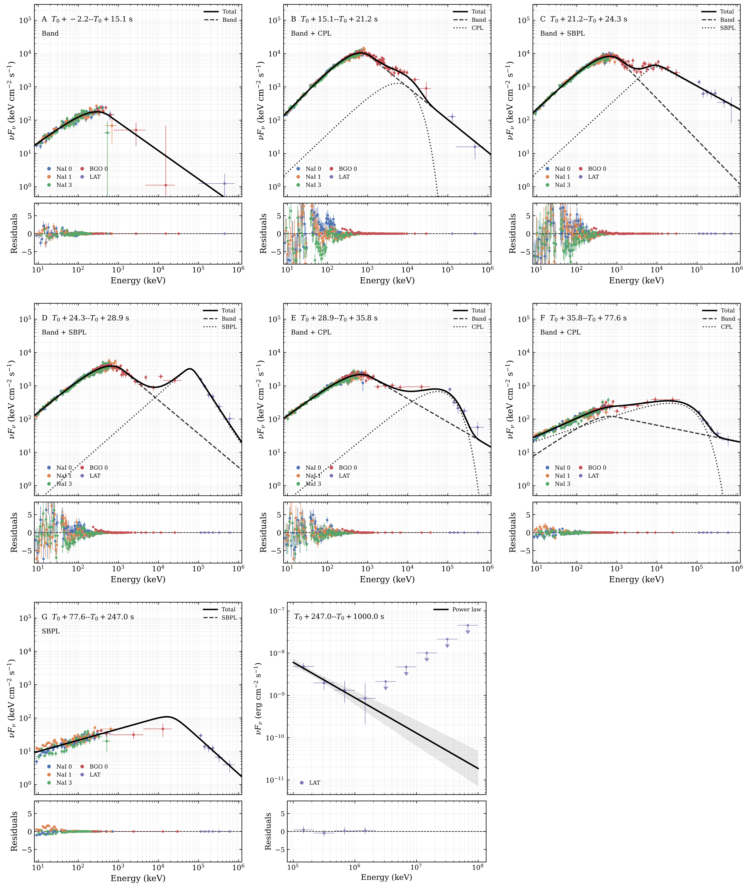<br />
图注：Time-resolved broadband SEDs of GRB 260226A for the continuous intervals from $T_0-2.2$ s to $T_0+247.0$ s, together with the late LAT-only SED for $T_0+247.0$--$T_0+1000$ s in the last panel. In each panel, the data points are shown together with the best-fit spectral model selected using the BIC criterion. Model components are shown with dashed or dotted curves when applicable.<br />
对应解读：对应“建议重点查看的图表”第3项 time-resolved 谱拟合图，以及“关键图表逐图导读”图3和模型拟合段落中关于各时间片 Band+cutoff power-law / Band+broken power-law 偏好的讨论。<br />
入选理由：这是最直接支撑论文核心结论的图：逐时间片展示宽能段 SED，并标出按 BIC 选择的最佳模型及各谱成分，可检查早期额外亚 GeV 成分、晚期谱形变化以及额外成分是否在多个相邻时间片持续存在。相比单一光变或叠加图，它最能验证‘早期 CPL、晚期 SBPL 更优或相当’这一主要结果。<br />
来源与置信度：\(arxiv_source\)；high；\(arxiv_source\) / sample701.tex:figure[3]</p>
<p><strong>Fig06</strong><br />
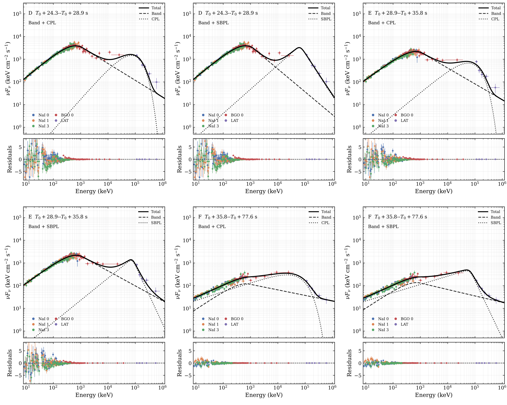<br />
图注：Comparison between Band+CPL and Band+SBPL fits for selected time-resolved intervals. Panels a, b, and c show intervals D, E, and F, respectively.<br />
对应解读：对应“建议重点查看的图表”第3项 time-resolved 谱拟合图、第4项模型比较思路，以及“关键图表逐图导读”图3/图4中关于 cutoff power-law 与 broken power-law 在 LAT 能段差别的说明。<br />
入选理由：该图专门比较 Band+CPL 与 Band+SBPL 在选定时间区间 D、E、F 的拟合差异，是判断早晚期额外成分谱形从截断到断裂变化的关键诊断图。它比一般 SED 展示更聚焦于模型可区分性，适合用来解释为何作者认为不同时间片偏好的额外成分模型不同。<br />
来源与置信度：\(arxiv_source\)；high；\(arxiv_source\) / sample701.tex:figure[6]</p>
<p><strong>Fig02</strong><br />
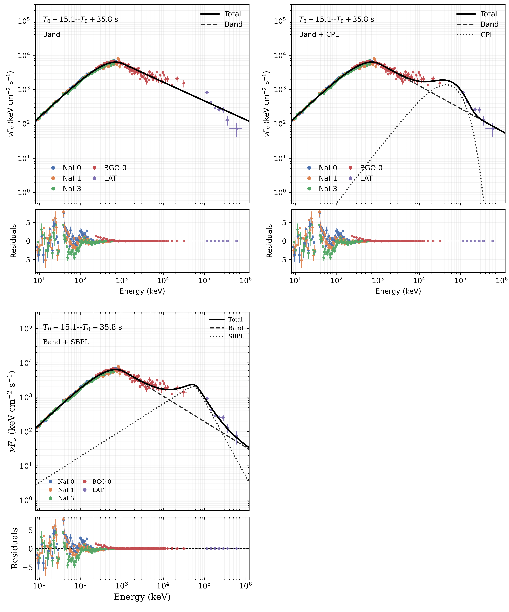<br />
图注：Broadband SED of GRB 260226A in the interval $T_0+15.1$--$T_0+35.8$ s. The three panels show the fits with Band, Band+CPL, and Band+SBPL,respectively.<br />
对应解读：对应“建议重点查看的图表”第2项 time-integrated 联合谱，以及“关键图表逐图导读”图2中关于 Band、Band+CPL、Band+SBPL 三种模型和高能端额外成分的讨论。<br />
入选理由：该图在同一代表性时间段内并列展示 Band、Band+CPL、Band+SBPL 拟合，能直观看到单 Band 在高能端的不足以及加入额外硬成分后的改善，是建立额外成分统计必要性的基础图。它也连接了日报中关于 unfolded SED 与真实拟合优劣需谨慎区分的讨论。<br />
来源与置信度：\(arxiv_source\)；high；\(arxiv_source\) / sample701.tex:figure[2]</p>
<p><strong>Fig01</strong><br />
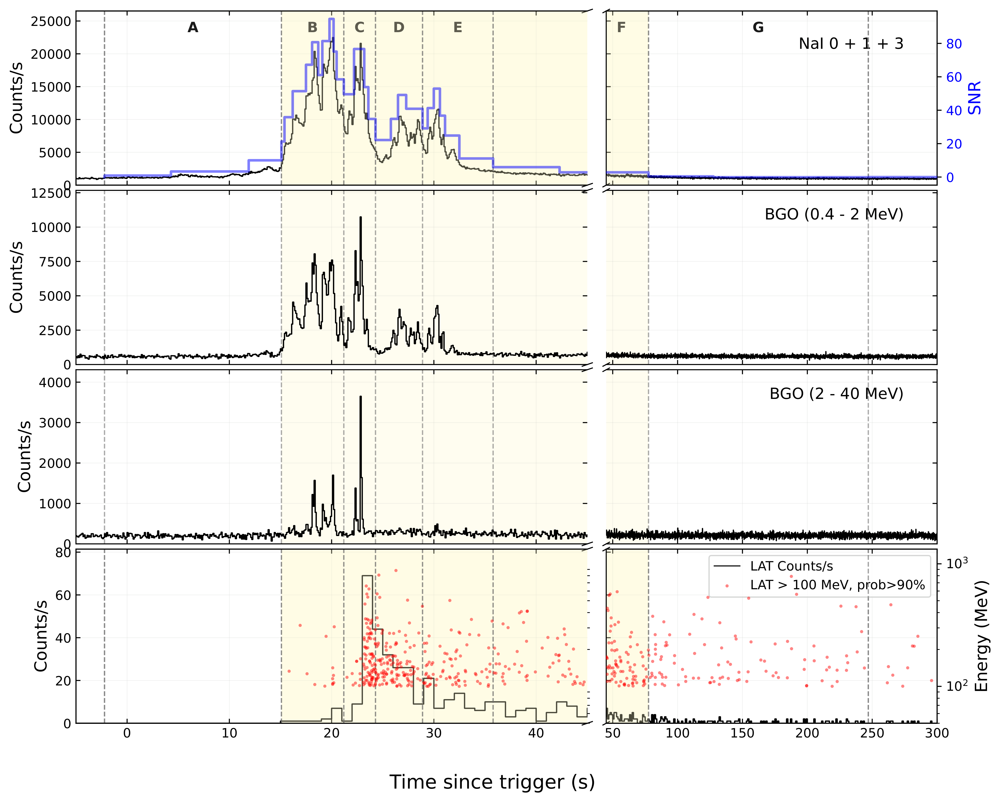<br />
图注：GBM and LAT count-rate light curves of GRB 260226A. \(\textit{Top panel:}\) GBM light curve in the 8--900~keV energy band. \(\textit{Middle panels:}\) GBM light curve in the 200~keV--40~MeV band (BGO). \(\textit{Bottom panel:}\) LAT light curve above 100~MeV. Red points mark LAT photons above 100 MeV with probability greater than 90\%. The vertical dashed lines mark the time bins used for time-resolved spectral analysis. The shaded yellow region marks the interval in which the time-resolved spectra favor a two-component model, as discussed in the section \(\ref{sec:sed}.\)<br />
对应解读：对应“建议重点查看的图表”第1项 GBM 与 LAT 光变曲线，以及“关键图表逐图导读”图1中关于 MeV 脉冲与 LAT 光子时间关系、时间分箱和 prompt 阶段归属的讨论。<br />
入选理由：该图给出 GBM 与 LAT 多能段光变、&gt;100 MeV 高概率光子、谱分析时间分箱和偏好双成分模型的黄色区间，是理解高能成分是否与 prompt 脉冲同步、是否参与早期触发以及后续 time-resolved 分析如何分箱的入口图。<br />
来源与置信度：\(arxiv_source\)；high；\(arxiv_source\) / sample701.tex:figure[1]</p>
<p><strong>Fig05</strong><br />
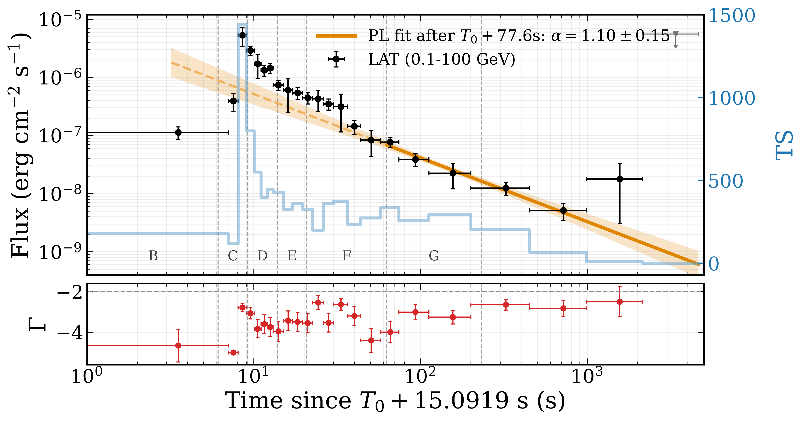<br />
图注：LAT light curve of GRB 260226A in the 0.1--100 GeV band. Top panel: energy fluxes are shown as black points, and 95\% confidence upper limits are indicated by downward triangles. The blue step curve shows the TS value in each time bin, with the scale given by the right axis. The orange solid line represents a single power-law fit to the data at $t-T_0>77.6$ s, using the onset of main pulse as the reference time, where $T_0^{\rm ag}=T_0+15.1$ s. The vertical dashed lines and labels mark intervals B--G. Bottom panel: photon index evolution for the LAT-detected time bins.<br />
对应解读：对应“建议重点查看的图表”第1项 LAT 高能光变曲线及第4项中关于 TS 随时间变化的模型显著性背景，也关联光变和晚期 LAT-only 行为的讨论。<br />
入选理由：该图集中展示 LAT 0.1--100 GeV 能量通量、TS、上限和光子指数演化，可辅助判断高能辐射的持续时间、显著性和晚期衰减行为。虽然它不直接给出联合谱残差或额外成分峰值，但对区分 prompt 高能成分与后续 LAT 衰减有补充价值。<br />
来源与置信度：\(arxiv_source\)；high；\(arxiv_source\) / sample701.tex:figure[5]</p>
<p><strong>Fig04</strong><br />
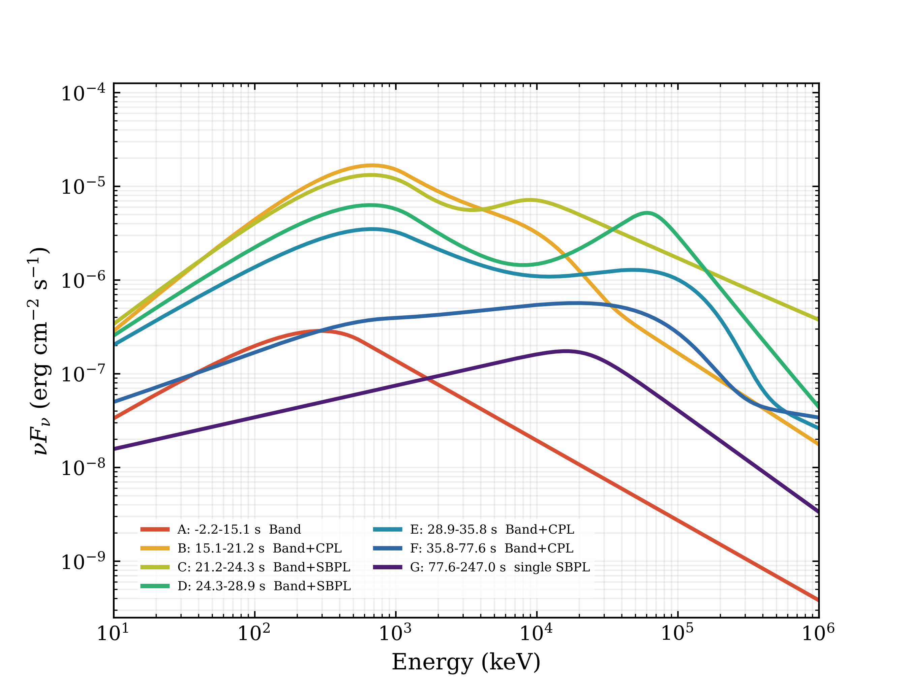<br />
图注：Overlay of the best-fit broadband SED models of GRB 260226A from $T_0-2.2$ s to $T_0+247.0$ s<br />
对应解读：对应“建议重点查看的图表”第5项峰值能量演化图的部分替代信息，以及“模型拟合”段落中关于各时间片谱峰和额外成分演化的讨论。<br />
入选理由：该图叠加展示多个时间片的最佳宽带 SED 模型，可粗略比较 Band 成分和额外高能成分随时间的谱形与峰位变化。它不是明确的 \(E_pk,x/E_pk,Band\) 比值图，也不含误差条或协方差，因此科学诊断力弱于逐时间片 SED 和 CPL/SBPL 对比图，但仍可作为谱演化的整体概览。<br />
来源与置信度：\(arxiv_source\)；high；\(arxiv_source\) / sample701.tex:figure[4]</p>
<h4 id="_12">强相关工作</h4>
<p>这篇工作应放在 LAT GRB 高能额外成分的谱系中阅读。同类事件包括 GRB 090510、GRB 090902B、GRB 080916C、GRB 130427A 等，它们分别展示了短暴 GeV 延迟、高能额外幂律、极高 \(\Gamma\) 约束和长时 GeV 后随辐射等现象。检索关键词可用 “Fermi LAT GRB extra spectral component”、“GRB prompt GeV cutoff”、“gamma gamma opacity Lorentz factor GRB”。</p>
<p>理论上，相关脉络包括 Band 函数经验谱、紧致性问题与 \(\Gamma\) 下限、同步辐射 line-of-death、SSC 与外康普顿模型、光球辐射和内部激波模型。与本文可能存在张力的观点包括：高能 GeV 成分主要来自外部冲击，而非 prompt 内部耗散；或者额外硬谱并非独立成分，而是 Band 谱演化叠加造成。读者可检索 “GRB Band function physical origin”、“one-zone SSC prompt GRB problem”、“photospheric emission external inverse Compton GRB”。</p>
<p><strong>同一事件 / 同类源线索</strong>：</p>
<ul>
<li><a href="https://arxiv.org/abs/2607.27650">https://arxiv.org/abs/2607.27650</a></li>
</ul>
<p><strong>相似工作</strong>：</p>
<ul>
<li><a href="https://arxiv.org/abs/1906.11403">https://arxiv.org/abs/1906.11403</a></li>
<li><a href="https://arxiv.org/abs/1303.2908">https://arxiv.org/abs/1303.2908</a></li>
<li><a href="https://arxiv.org/abs/0908.1832">https://arxiv.org/abs/0908.1832</a></li>
</ul>
<p><strong>基础理论 / 方法工作</strong>：</p>
<ul>
<li><a href="https://ui.adsabs.harvard.edu/abs/1993ApJ...413..281B/abstract">https://ui.adsabs.harvard.edu/abs/1993ApJ...413..281B/abstract</a></li>
<li><a href="https://ui.adsabs.harvard.edu/abs/2001ApJ...555..540L/abstract">https://ui.adsabs.harvard.edu/abs/2001ApJ...555..540L/abstract</a></li>
<li><a href="https://ui.adsabs.harvard.edu/abs/1997ApJ...490...92M/abstract">https://ui.adsabs.harvard.edu/abs/1997ApJ...490...92M/abstract</a></li>
</ul>
<p><strong>相反观点 / 张力线索</strong>：</p>
<ul>
<li><a href="https://arxiv.org/abs/0909.2470">https://arxiv.org/abs/0909.2470</a></li>
<li><a href="https://arxiv.org/abs/1311.5623">https://arxiv.org/abs/1311.5623</a></li>
</ul>
</details>
<h3 id="2-exploring-cosmic-magnetism-with-gamma-ray-burst-afterglow-emission">2. Exploring cosmic magnetism with gamma-ray burst afterglow emission</h3>
<ul>
<li>来源：arXiv / astro-ph.HE</li>
<li>链接：https://arxiv.org/abs/2607.27336v1</li>
<li>作者：Paolo Da Vela, Davide Miceli, Lara Nava, Giancarlo Ghirlanda</li>
<li>评分：novelty 8/10，importance 8/10，relevance 10/10，final 9.70/10</li>
<li>推荐理由：研究TeV GRB余辉诱发pair-echo并评估CTAO在几十GeV探测IGMF的能力，直接涉及VHE伽马射线、GRB和CTA观测策略，强相关且值得读。</li>
</ul>
<p><strong>中文题目</strong>：用伽马暴余辉的对产生回声探测宇宙尺度磁场</p>
<p><strong>做了什么</strong>：这篇文章研究一个很具体的问题：如果伽马暴余辉在甚高能段产生大量 \(E>100\,\mathrm{GeV}\) 光子，它们在传播中被河外背景光吸收并产生 \(e^\pm\) 对，随后这些对通过逆康普顿散射生成延迟到达的 \(\mathrm{GeV}\) 辐射；这种“pair echo”的时间延迟和强度会受到星系际磁场 \(B\) 的控制。作者用一组伽马暴余辉参数模拟主余辉和回声信号，扫描 \(E_{\rm k,iso}=10^{49}\text{--}10^{55}\,\mathrm{erg}\)、\(z=0.03\text{--}1\)、不同余辉断裂时间以及 \(B=10^{-19}\text{--}10^{-16}\,\mathrm{G}\)，评估 CTAO 在几十 \(\mathrm{GeV}\) 能段能否看到这类回声。主要结论是：不是所有伽马暴都合适，但在红移较低、动力学能量较高、余辉本身较早变陡的区域，CTAO 有机会在触发后约 \(10\text{--}12\) 小时到数天内探测到回声成分，从而约束宇宙空洞中的星系际磁场。</p>
<p><strong>为什么重要</strong>：宇宙大尺度磁场的起源仍是基础问题：它可能来自早期宇宙的原初种子场，也可能来自星系和活动星系核反馈后再外流污染星系际介质。传统的法拉第旋转主要探测有等离子体密度的区域，对宇宙空洞中极弱磁场不敏感；而 \(\gamma\)-射线级联和延迟回声直接依赖带电对在空洞磁场中的偏转，是少数能触及 \(10^{-19}\text{--}10^{-16}\,\mathrm{G}\) 量级的手段。</p>
<p><strong>理论 / 观测 / 仪器方法价值</strong>：本文的价值不在于宣称已探测到星系际磁场，而在于把近年 TeV 伽马暴余辉探测与下一代 CTAO 观测策略连接起来：它给出哪些 \(z\) 与 \(E_{\rm k,iso}\) 组合值得追踪、何时开始观测更有利、为什么余辉喷流断裂会提高回声可见度。这对理论上区分原初磁场和天体物理磁场、观测上设计 CTAO 快速/延迟跟踪、方法上用瞬变源而非稳态耀变体检验星系际磁场都有实际意义。</p>
<p><strong>为什么应该关注</strong>：如果你关心高能瞬变源，这篇文章说明 TeV 伽马暴不只是粒子加速实验室，也可能成为宇宙磁场探针。如果你关心宇宙学磁场，它展示了一个与耀变体级联约束互补的时间域通道。如果你做 CTAO、LST、MAGIC、H.E.S.S. 或未来宽能段联测，这篇工作给出的核心信息很直接：不要只盯最早期 TeV 余辉，触发后半天到几天的几十 \(\mathrm{GeV}\) 观测窗口可能包含磁场信息。</p>
<details class="paper-detail">
<summary>展开详细解读：文章讲解、背景、理论、重点章节、图表与相关工作</summary>
<h4 id="_13">文章详细讲解</h4>
<p>科学问题：宇宙空洞中是否存在极弱的星系际磁场 \(B\)，以及其强度是否落在能够区分原初起源和后期天体物理污染的范围内，是本文的核心。作者关注的不是星系团或星系盘内的 \(\mu\mathrm{G}\) 磁场，而是低密度星系际介质中的 \(10^{-19}\text{--}10^{-16}\,\mathrm{G}\) 级磁场。这样的磁场很难通过法拉第旋转直接测量，却能改变高能 \(\gamma\)-射线传播中产生的 \(e^\pm\) 对的轨迹，使二次逆康普顿光子相对于主余辉出现延迟和角扩展。</p>
<p>作者怎么做：论文构造了一套伽马暴余辉加传播级联的可探测性实验。输入端是不同的各向同性等效喷流动能 \(E_{\rm k,iso}\)、红移 \(z\)、余辉断裂时间和光变衰减行为；传播端包括甚高能光子与河外背景光相互作用产生 \(e^\pm\) 对，再由这些对散射宇宙微波背景或其他软光子，形成几十 \(\mathrm{GeV}\) 的延迟回声；探测端则用 CTAO 的能量阈值、灵敏度和观测时段评估回声是否高于背景和主余辉残留。</p>
<p>关键结果：论文发现，能否探测到 pair echo 不是单调只由伽马暴“越亮越好”决定，而取决于源红移、甚高能光子注入量、吸收深度、余辉衰减速度和磁场导致的时间展宽之间的组合。较低红移减少传播损失并提高通量，较高 \(E_{\rm k,iso}\) 增加可产生级联的光子数；但如果主余辉本身在几十 \(\mathrm{GeV}\) 仍然很亮，延迟回声会被直接余辉淹没。早期喷流断裂，例如 \(0.1\text{--}1\) 天，使主余辉快速变暗，反而让回声相对更容易从光变中凸显。</p>
<p>局限和下一步：这是一项可探测性研究，结论依赖余辉谱外推、微物理参数、EBL 模型、喷流几何、磁场相干长度以及 CTAO 实际响应。真实伽马暴的 TeV 亮度、早期观测覆盖和多波段约束会有很大散布。下一步最关键的是把这类预测嵌入真实 CTAO 触发策略：结合 \(\mathrm{Swift}\)、\(\mathrm{Fermi}\)、SVOM、THESEUS 类预警，针对低红移高能量事件安排从 \(\sim10\) 小时到几天的重复观测，并用联合似然同时拟合主余辉和回声成分。</p>
<h4 id="_14">关键结果是怎么做出来的</h4>
<p>本文最重要的结果是一个可观测参数空间判断：在扫描的 \(z\)、\(E_{\rm k,iso}\)、余辉断裂时间和 \(B\) 范围内，存在一部分伽马暴会在 CTAO 几十 \(\mathrm{GeV}\) 能段产生可检测的延迟 pair echo。样本不是已观测事件集合，而是物理参数网格；因此读者应把它理解成“前瞻性选择函数”而非源表统计。作者扫描 \(E_{\rm k,iso}=10^{49}\text{--}10^{55}\,\mathrm{erg}\)、\(z=0.03\text{--}1\)、不同光变断裂时间，并对 \(B=10^{-19}\text{--}10^{-16}\,\mathrm{G}\) 计算回声光变。</p>
<p>证据链的第一步是主余辉模型。作者需要先给定 TeV 余辉随时间和能量的衰减，估算在源处有多少 \(E\gtrsim100\,\mathrm{GeV}\) 光子能参与 EBL 吸收。这里的核心不是单个能段的峰值通量，而是时间积分后的高能光子预算。若 \(E_{\rm k,iso}\) 太低，级联种子不足；若 \(z\) 太高，虽然吸收更强但到达通量更低，且延迟和展宽使表面亮度下降。</p>
<p>第二步是回声成分与主余辉残留的比较。pair echo 的探测并非只看绝对通量是否超过 CTAO 灵敏度，还要看在同一观测窗口内直接余辉是否已足够衰减。论文强调早期喷流断裂的重要性，原因正是断裂后主余辉光变指数变大，直接成分下降更快，而回声由之前产生的高能光子延迟贡献，可以在数十小时到几天的窗口形成相对突出的慢变成分。</p>
<p>第三步是显著性和可观测性诊断。由于摘要未给出具体事件数或 \(\sigma\) 值，读者在正文中应重点检查作者如何定义“detectable”：是积分通量高于 CTAO 差分灵敏度，还是用时间分箱内的源计数与背景计数计算显著性，是否要求多个连续时间 bin 高于阈值，以及是否把能量色散、有效面积和观测天顶角纳入。最有说服力的图表应是 \(z\)-\(E_{\rm k,iso}\) 平面上的可探测区域、不同 \(B\) 的回声光变，以及有/无喷流断裂时的对比。</p>
<p>系统误差方面，主要来自四类：余辉内禀谱是否能可靠延伸到 TeV；EBL 光学深度模型差异；IGMF 的相干长度和空间结构；CTAO 低能阈值附近的背景与响应。稳健性检验应至少包括改变断裂时间、改变磁场强度、改变红移和能量、以及比较主余辉衰减斜率对回声可见度的影响。如果正文显示可探测区域在这些变化下仍存在，结论就不是某个单一模型点的偶然结果。</p>
<details class="paper-subdetail">
<summary>展开背景、理论、公式、模型、章节和图表导读</summary>
<h4 id="_15">背景知识</h4>
<p>研究对象是伽马暴余辉的甚高能辐射及其传播效应。长久以来，伽马暴主要在 \(\mathrm{keV}\text{--}\mathrm{MeV}\) prompt 辐射和 X 射线/光学/射电余辉中研究；近几年 MAGIC、H.E.S.S.、LHAASO 等探测到若干 TeV 伽马暴或候选高能余辉，说明外激波或相关区域能把粒子加速到足以产生 \(\gtrsim100\,\mathrm{GeV}\) 光子的能量。这为用瞬变源研究宇宙传播效应打开了窗口。</p>
<p>历史问题是星系际磁场的起源。星系和星系团中的磁场通常可由微弱种子场经湍流和小尺度发电机放大解释，但种子场来自哪里仍不清楚。原初模型把磁场生成放在暴胀、相变或早期宇宙等离子体过程中；天体物理模型则认为星系风、AGN 喷流和结构形成反馈把磁场带入星系际空间。空洞中的 \(B\) 强度和填充因子是区分这些情景的重要量。</p>
<p>观测背景上，耀变体 TeV 谱和 GeV 级联长期被用来约束星系际磁场。若没有磁场，TeV 光子被 EBL 吸收后产生的 \(e^\pm\) 对会沿近似原方向继续逆康普顿散射，形成可观测的 GeV 二次辐射；若存在磁场，带电对被偏转，级联辐射会变暗、变宽或延迟。伽马暴与耀变体的不同在于它是短时标事件，因此时间延迟本身成为更干净的诊断量。</p>
<p>为什么现在值得重新看：一方面，TeV 伽马暴探测已经从“是否存在”进入“如何利用”的阶段；另一方面，CTAO 的低能阈值、大有效面积和快速响应将覆盖几十 \(\mathrm{GeV}\) 到 TeV 的关键区间。这个能段正好连接 EBL 吸收后的二次光子和传统卫星观测上限，是 pair echo 最有希望出现的区域。</p>
<p>常见误区包括：第一，把 pair echo 当成主余辉的普通延长尾巴，忽略它由传播过程决定的延迟和谱形；第二，认为更强的 \(B\) 总是更容易探测，其实过强磁场会把二次辐射展宽到更长时间和更大角尺度，降低瞬时通量；第三，把耀变体级联约束直接搬到伽马暴上，忽略瞬变源的时间信息；第四，低估余辉内禀谱外推和 EBL 模型对结果的影响。</p>
<h4 id="_16">基础理论 / 方法脉络</h4>
<p>基础物理图像可以分成三段：源处产生甚高能光子、传播中被 EBL 吸收产生 \(e^\pm\) 对、这些对在背景辐射场上逆康普顿散射生成较低能光子。伽马暴余辉外激波可通过同步辐射和同步自康普顿过程产生高能辐射；只要源处有足够多的 \(E_\gamma\gtrsim100\,\mathrm{GeV}\) 光子，它们就会在宇宙学距离上受到 EBL 的 \(\gamma\gamma\) 吸收。</p>
<p>对产生的阈值由高能光子和背景红外/光学光子的中心质心能量决定。被吸收后的能量大致平分给 \(e^+\) 和 \(e^-\)，每个轻子的洛伦兹因子 \(\gamma_e\) 通常很高。随后这些轻子主要通过逆康普顿散射 CMB 光子，把 \(\epsilon_{\rm CMB}\) 提升到 \(\mathrm{GeV}\) 到几十 \(\mathrm{GeV}\) 能段。这个二次辐射的能量、到达时间和角分布都携带传播介质信息。</p>
<p>磁场的作用来自洛伦兹力。若星系际磁场 \(B\) 极弱，\(e^\pm\) 基本沿原方向运动，回声延迟较短且角扩展小；若 \(B\) 增大，轻子在冷却长度内产生偏转，二次光子的路径变长，到达时间变晚，同时通量在时间和角度上被稀释。本文扫描 \(B=10^{-19}\text{--}10^{-16}\,\mathrm{G}\)，正是因为这个区间可让延迟落在 CTAO 触发后小时到天的可观测时标。</p>
<p>论文的模型假设可理解为把伽马暴余辉光变作为输入函数，把 EBL 吸收和级联响应作为卷积核，再把输出与 CTAO 灵敏度比较。关键量包括 \(E_{\rm k,iso}\)、\(z\)、余辉断裂时间 \(t_b\)、磁场强度 \(B\)、可能的磁场相干长度 \(\lambda_B\)、EBL 光学深度 \(\tau_{\gamma\gamma}\)、以及观测开始时间 \(t_{\rm obs}\)。</p>
<p>主要退化关系是：较高 \(E_{\rm k,iso}\) 可以补偿较高 \(z\) 带来的通量损失；较早 \(t_b\) 可以降低主余辉污染而增强回声相对可见度；\(B\) 与 \(\lambda_B\) 都影响偏转角，若只测到延迟而没有角分布，很难单独分开；EBL 模型改变 \(\tau_{\gamma\gamma}\)，会同时改变被吸收的种子光子数和剩余直接 TeV 通量。</p>
<h4 id="_17">公式与推导</h4>
<p>第一步，从源的各向同性等效光度或能量出发。若余辉谱光度为 \(L_E(E,t)\)，观测到的未吸收能流可写成</p>
<div class="math-display">\[F_E(E_{\rm obs},t_{\rm obs})=\frac{(1+z)L_E((1+z)E_{\rm obs},t_{\rm src})}{4\pi d_L^2(z)},\]</div>
<p>其中 \(E_{\rm obs}\) 是观测能量，\(t_{\rm src}=t_{\rm obs}/(1+z)\)，\(d_L\) 是光度距离。这个式子把源模型中的 \(E_{\rm k,iso}\) 和光变归一化连接到 CTAO 看到的通量。</p>
<p>第二步，甚高能光子被 EBL 吸收后的直接通量为</p>
<div class="math-display">\[F_E^{\rm dir}(E,t)=F_E^{\rm int}(E,t)\exp[-\tau_{\gamma\gamma}(E,z)],\]</div>
<p>其中 \(F_E^{\rm int}\) 是内禀余辉通量，\(\tau_{\gamma\gamma}\) 是 \(\gamma\gamma\) 光学深度。\(1-\exp[-\tau_{\gamma\gamma}]\) 给出进入级联通道的能量份额。</p>
<p>第三步，对产生阈值来自</p>
<div class="math-display">\[E_\gamma\epsilon(1-\cos\theta)\ge 2(m_ec^2)^2,\]</div>
<p>其中 \(E_\gamma\) 是高能光子能量，\(\epsilon\) 是 EBL 光子能量，\(\theta\) 是碰撞角。该式说明 TeV 光子主要与红外到光学 EBL 相互作用。</p>
<p>第四步，被产生的轻子能量近似为</p>
<div class="math-display">\[\gamma_e\simeq \frac{E_\gamma}{2m_ec^2},\]</div>
<p>其中 \(\gamma_e\) 是电子或正电子的洛伦兹因子。这个近似假设对产生后能量近似均分，是估算二次光子能量的入口。</p>
<p>第五步，逆康普顿散射在 Thomson 近似下给出二次光子典型能量</p>
<div class="math-display">\[E_{\rm IC}\simeq \frac{4}{3}\gamma_e^2\epsilon_{\rm CMB},\]</div>
<p>其中 \(\epsilon_{\rm CMB}\) 是 CMB 目标光子的典型能量。该式解释为什么 TeV 初级光子最终可在 \(\mathrm{GeV}\) 到几十 \(\mathrm{GeV}\) 形成回声。</p>
<p>第六步，轻子的逆康普顿冷却时间为</p>
<div class="math-display">\[t_{\rm IC}=\frac{3m_ec}{4\sigma_T U_{\rm rad}\gamma_e},\]</div>
<p>其中 \(\sigma_T\) 是 Thomson 截面，\(U_{\rm rad}\) 是背景辐射能量密度。对应冷却长度 \(\lambda_{\rm IC}\simeq ct_{\rm IC}\)，决定带电对在辐射前能被磁场偏转多远。</p>
<p>第七步，在均匀磁场近似下，Larmor 半径为</p>
<div class="math-display">\[r_L=\frac{\gamma_e m_ec^2}{eB},\]</div>
<p>偏转角的量级可写成</p>
<div class="math-display">\[\delta\simeq \frac{\lambda_{\rm IC}}{r_L}\propto B\gamma_e^{-2},\]</div>
<p>其中 \(e\) 是元电荷。若磁场相干长度 \(\lambda_B<\lambda_{\rm IC}\)，随机游走会把偏转改写为 \(\delta\sim \sqrt{\lambda_{\rm IC}\lambda_B}/r_L\)。</p>
<p>第八步，几何路径差导致的延迟近似为</p>
<div class="math-display">\[\Delta t_B\simeq (1+z)\frac{D}{2c}\delta^2,\]</div>
<p>其中 \(D\) 是有效传播距离。这个式子直接说明 pair echo 的时标如何随 \(B\)、\(\gamma_e\) 和距离变化。</p>
<p>第九步，可把回声光变写成卷积形式</p>
<div class="math-display">\[F_E^{\rm echo}(E,t)=\int dE'\int dt'\,F_{E'}^{\rm int}(E',t')\left[1-e^{-\tau_{\gamma\gamma}(E',z)}\right]K(E,t;E',t',B),\]</div>
<p>其中 \(K\) 是包含对产生、冷却、偏转和能量再分配的响应核。论文的模拟本质上就是计算或近似这个核，并与仪器响应比较。</p>
<p>第十步，若用计数显著性衡量 CTAO 探测，可写</p>
<div class="math-display">\[N_s=\int dE\int dt\,A_{\rm eff}(E)F_E^{\rm echo}(E,t),\quad N_b=\int dE\int dt\,R_b(E,t),\]</div>
<p>并用近似显著性 \(S\simeq N_s/\sqrt{N_b}\) 或 Li--Ma 形式判断探测性。这里 \(A_{\rm eff}\) 是有效面积，\(R_b\) 是背景计数率；这个诊断把物理模型输出转化为“CTAO 是否看得到”。</p>
<h4 id="_18">模型拟合 / 应用方法</h4>
<p>这类工作的拟合量首先是主余辉。通常需要用 X 射线、光学、\(\mathrm{GeV}\) 和 TeV 数据约束余辉的谱指数、光变指数、断裂时间 \(t_b\)、归一化和可能的 SSC 成分。本文是模拟研究，因此把 \(E_{\rm k,iso}\)、\(z\) 和断裂行为作为网格输入；真实应用中这些量应由多波段余辉模型给出后验，而不是固定常数。</p>
<p>回声成分的参数包括 \(B\)、磁场相干长度 \(\lambda_B\)、EBL 模型、初级 TeV 谱形和最高能截止。似然可按时间和能量二维分箱构造，比较“主余辉 \(+\) 背景”与“主余辉 \(+\) pair echo \(+\) 背景”。如果观测只得到上限，则可转化为对 \(B\) 和 \(\lambda_B\) 的排除区域；如果看到晚期超额，则需要检验它是否符合回声应有的谱变软、时间延迟和能量相关性。</p>
<p>重要退化关系很多。\(E_{\rm k,iso}\) 与微物理参数会影响 TeV 种子光子数；EBL 光学深度与内禀谱硬度可互相补偿；\(B\) 与 \(\lambda_B\) 共同决定偏转角；喷流断裂时间改变直接余辉残留，从而改变回声相对显著性。只用单一时间窗的积分通量很难分开这些效应，最好使用多时段、多能段联合拟合。</p>
<p>残差诊断应重点看两点：第一，晚期几十 \(\mathrm{GeV}\) 数据相对于主余辉外推是否存在系统性正残差；第二，这个残差的峰值时间是否随能量变化，低能二次光子通常对应不同的轻子能量和冷却/偏转尺度。若残差没有能量相关性，或可由余辉微物理演化、反向激波、密度结构解释，则不能轻易归因于 IGMF 回声。</p>
<p>模型可能失败的地方包括：TeV 余辉内禀发射机制不是简单外激波 SSC；源局域环境或宿主星系内吸收改变了初级谱；CTAO 低能段背景建模误差较大；实际观测间断造成回声峰值错过；以及等离子体不稳定性可能让 \(e^\pm\) 对能量耗散到局域等离子体而非逆康普顿辐射。</p>
<h4 id="_19">重点章节 / 结果段落怎么读</h4>
<p>数据/样本与参数网格：读者应先看作者如何定义伽马暴余辉族群，尤其是 \(E_{\rm k,iso}=10^{49}\text{--}10^{55}\,\mathrm{erg}\)、\(z=0.03\text{--}1\)、光变断裂时间和谱形的取值。这里决定了论文结论适用于哪些真实事件，而不是所有 GRB。</p>
<p>余辉和级联建模方法：重点看主余辉 TeV 发射如何归一化、是否包含 EBL 吸收、pair echo 的计算是否显式处理 \(B\)、\(\lambda_B\)、逆康普顿冷却和时间延迟。若方法章节给出响应函数或数值流程，应检查是否把宇宙学红移和能量重分布包括进去。</p>
<p>CTAO 可探测性判据：这是论文最实用的部分。应确认作者使用的是 CTAO 差分灵敏度、积分灵敏度还是计数显著性；观测时间从 \(10\text{--}12\) 小时到数天如何分配；背景、能量阈值、有效面积和曝光时间怎样进入计算。</p>
<p>主结果：重点阅读 \(z\)-\(E_{\rm k,iso}\) 参数空间图、不同 \(B\) 下的回声光变和有无早期喷流断裂的对比。结论“部分 GRB 可探测”必须落实到这些图中的区域，而不是停留在文字描述。</p>
<p>讨论与稳健性：最后看作者如何讨论模型依赖性，包括 EBL 模型、余辉谱外推、喷流断裂、磁场相干长度和 CTAO 实际调度。若附录有参数变化测试，应优先检查可探测区域是否对某个假设过度敏感。</p>
<h4 id="_20">建议重点查看的图表</h4>
<ol>
<li>
<p>\(z\)-\(E_{\rm k,iso}\) 可探测区域图：看不同 \(B\) 下 CTAO 能看到回声的区域边界，尤其是低红移和高能量端是否稳定。</p>
</li>
<li>
<p>主余辉与 pair echo 光变对比图：看横轴时间是否覆盖触发后 \(10\) 小时到数天，纵轴通量或能流中回声何时超过直接余辉残留。</p>
</li>
<li>
<p>有无喷流断裂的光变图：看早期 \(t_b=0.1\text{--}1\) 天断裂如何改变主余辉衰减斜率，以及回声显著性提升是否来自真实超额而非人为降低背景。</p>
</li>
<li>
<p>不同 \(B\) 的延迟和通量图：看 \(B=10^{-19}\text{--}10^{-16}\,\mathrm{G}\) 是否产生可区分的峰值时间、宽度和强度，而不是完全退化。</p>
</li>
<li>
<p>CTAO 灵敏度或显著性图：看模型通量相对于仪器灵敏度的裕量，尤其在几十 \(\mathrm{GeV}\) 低能阈值附近是否只是擦边探测。</p>
</li>
<li>
<p>参数稳健性表或附录图：看改变红移、EBL、断裂时间、观测开始时间后，可探测结论是否保留。</p>
</li>
</ol>
<h4 id="_21">关键图表逐图导读</h4>
<p>图 1：若论文给出余辉模型光变，横轴通常是触发后时间 \(t\)，纵轴是能流或积分通量。应区分直接余辉曲线和 pair echo 曲线，检查早期直接余辉是否由模型外推而非观测锚定。读图陷阱是只看峰值通量；真正相关的是在 CTAO 可观测窗口内回声与直接成分的相对大小。</p>
<p>图 2：若是 \(z\)-\(E_{\rm k,iso}\) 平面图，横轴可能为红移 \(z\)，纵轴为 \(E_{\rm k,iso}\)，颜色或等值线表示探测显著性或是否超过灵敏度。应看可探测边界是否随 \(B\) 系统移动。陷阱是把边界当成真实 GRB 分布；它只是给定模型和仪器假设下的选择函数。</p>
<p>图 3：若展示不同 \(B\) 的回声光变，横轴为 \(t\)，纵轴为 \(F_E\) 或 \(E^2F_E\)。较强 \(B\) 通常使回声更晚、更宽，瞬时峰值可能下降；较弱 \(B\) 则可能更接近主余辉尾部。读者应看不同 \(B\) 曲线是否在实际曝光时间内可分辨，而不只是理论上形状不同。</p>
<p>图 4：若比较有无喷流断裂，关键是断裂前后光变指数变化。早期 \(t_b\) 会快速压低直接余辉，使晚期回声更清楚。陷阱是误以为喷流断裂增强了回声本身；它主要增强的是回声相对于直接余辉的可见度。</p>
<p>图 5：若有 CTAO 灵敏度或计数显著性图，横轴多为能量或时间，纵轴为最小可探测通量、信噪比或 \(\sigma\)。应检查模型线是否显著高于灵敏度，而非仅在单个能量 bin 接触；还要注意低能端背景和能量阈值的不确定性。</p>
<p>图 6：若附录给出稳健性图，应把它当作结论可信度的核心而非附属材料。看更换 EBL 模型、观测延迟、磁场相干长度后，主要可探测区域是否仍存在；若只有少数极端参数点保留，结论就应理解为机会性而非普遍策略。</p>
</details>
<h4 id="_22">论文原图 / 可嵌入图片</h4>
<p><strong>Fig04</strong><br />
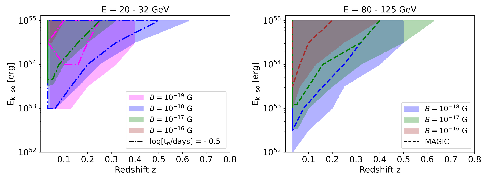<br />
图注：Regions of the $z - E_{\rm k,iso}$ plane where the pair-echo signal is detectable with CTAO-North ({color-filled regions}, see Section \ref{subsec:stacked_analysis}). Different colors correspond to different IGMF strengths. {Left-hand panel: photon energy range $ 20 - 32$ GeV; the regions corresponding to $t_b = 0.316$ days are also shown as dash-dotted contours. Right-hand panel: $80 - 125$ GeV. The regions detectable by MAGIC are overplotted as dashed contours.}<br />
对应解读：“建议重点查看的图表”第1项 z-\(E_k,iso\) 可探测区域图；“关键图表逐图导读”图2；模型拟合段落中关于 \(E_k,iso\)、z、B 与 CTAO 可探测性的选择函数。<br />
入选理由：这是最直接支撑论文核心结论的总览图：在 z-\(E_k,iso\) 平面上给出 CTAO-North 可探测 pair echo 的区域，并用不同颜色区分 IGMF 强度，还比较 20–32 GeV 与 80–125 GeV 两个能段及 MAGIC 轮廓。它最能回答日报关心的‘哪些红移和能量组合可探测、边界是否随 B 系统移动、低能几十 GeV 是否关键’。<br />
来源与置信度：\(arxiv_source\)；high；\(arxiv_source\) / \(aanda_v2.tex\):figure[4]</p>
<p><strong>Fig01</strong><br />
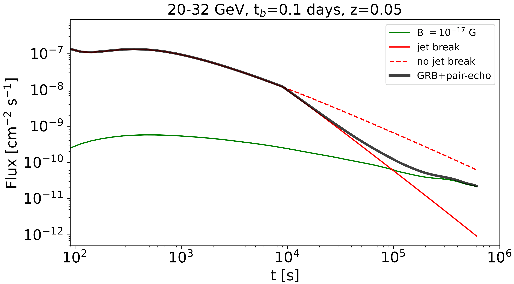<br />
图注：{Light curves in the 20 – 32 GeV energy range for a simulated GRB event with $z = 0.05$ and $E_{\rm k,iso} = 10^{53}$ erg. The GRB afterglow emission is shown in red lines in case of absence of a jet break (dashed line) or assuming a jet break steepening in the light curve at 0.1 days (solid line). The pair-echo emission calculated for the case including the jet break at 0.1 days for IGMF strength $B = 10^{-17}$ G is shown in green line. The sum of the two components (GRB afterglow and pair-echo) is shown in black line.}<br />
对应解读：“建议重点查看的图表”第2项主余辉与 pair echo 光变对比图、第3项有无喷流断裂的光变图；“关键图表逐图导读”图1和图4。<br />
入选理由：该图在 20–32 GeV 能段同时展示无喷流断裂余辉、有 0.1 天喷流断裂余辉、pair echo 以及二者总和，是理解‘早期 jet break 如何压低直接余辉、使晚期回声更显著’的关键证据。它比单纯参数区域图更直观地说明回声是否在触发后数小时到数天窗口内超过主余辉残留。<br />
来源与置信度：\(arxiv_source\)；high；\(arxiv_source\) / \(aanda_v2.tex\):figure[1]</p>
<p><strong>Fig03</strong><br />
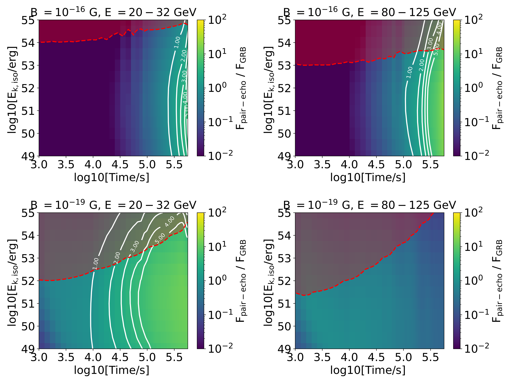<br />
图注：Color maps of the ratio between the pair-echo signal and the GRB afterglow flux ($F_{\text{pair-echo}}/F_{\text{GRB}}$) in the 20 - 32 GeV band (first and third plots from left) and in the 80 - 125 GeV band (second and fourth plots from left) as a function of the observed time ($x$-axis) and $E_{\rm k,iso}$ ($y$-axis) in log scale for the strongest and weakest IGMF strength values explored in this study, namely $B = 10^{-16}$ G and $10^{-19}$ G (first/second and third/fourth panels from left, respectively). Plots are displayed for a fixed value of redshift $z = 0.1$ and assuming a jet break at $t_{\rm b} = 0.1$ days after GRB trigger time. Contour lines of the ratio ($F_{\text{pair-echo}}/F_{\text{GRB}}$) for values from 1 to 5 are displayed. The red shaded area represents the parameter space region where the pair-echo emission is detectable by CTAO-North following prescriptions described in Section \(\ref{subsec:colorplots}.\)<br />
对应解读：“建议重点查看的图表”第4项不同 B 的延迟和通量图；“关键图表逐图导读”图3；模型拟合段落中关于 B 与回声时间展宽、峰值强度退化关系的讨论。<br />
入选理由：该图专门比较研究中最强和最弱 IGMF，即 \(B=10^-16\) G 与 10^-19 G，在时间-\(E_k,iso\) 平面上的 pair echo/GRB 比值和 CTAO 可探测区域。它能检验日报强调的不同 B 是否真的导致可区分的时间窗口、能段表现和探测边界，而不是完全退化。<br />
来源与置信度：\(arxiv_source\)；high；\(arxiv_source\) / \(aanda_v2.tex\):figure[3]</p>
<p><strong>Fig02</strong><br />
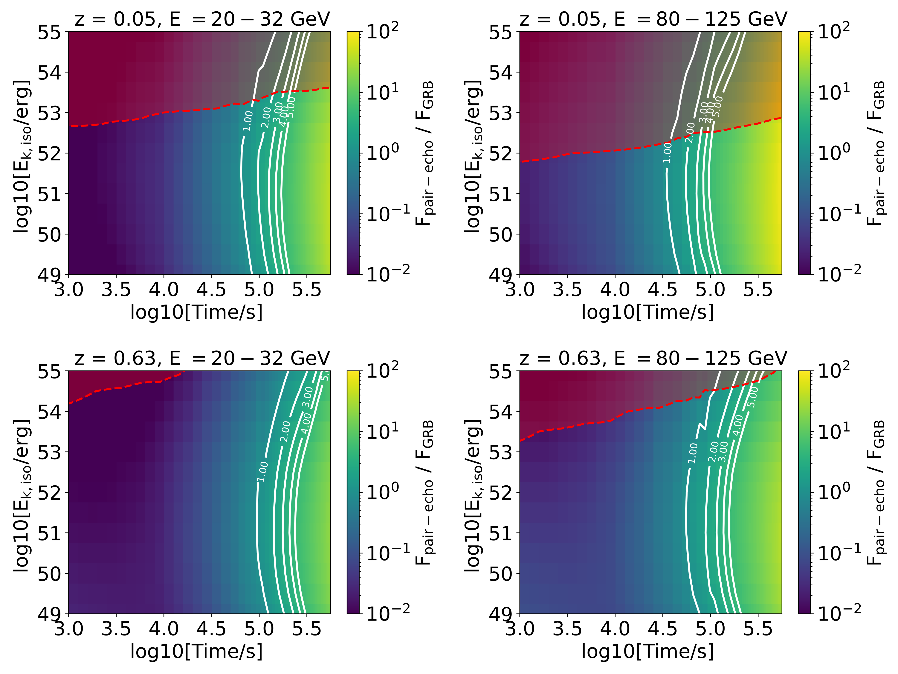<br />
图注：Color maps of the ratio between the pair-echo signal and the GRB afterglow flux ($F_{\text{pair-echo}}/F_{\text{GRB}}$) in the 20 - 32 GeV band (first and third plots from left) and in the 80 - 125 GeV band (second and fourth plots from left) as a function of the observed time ($x$-axis) and $E_{\rm k,iso}$ ($y$-axis) in log scale. Plots are displayed for a set of fixed values for the IGMF strength $B = 10^{-17}$ G, redshift $z = 0.05, 0.63$ (from left to right) and assuming a jet break at $t_{\rm b} = 0.1$ days after GRB trigger time. Contour lines of the ratio ($F_{\text{pair-echo}}/F_{\text{GRB}}$) for values from 1 to 5 are displayed. The red shaded area represents the parameter space region where the pair-echo emission is detectable by CTAO-North following prescriptions described in Section \(\ref{subsec:colorplots}.\)<br />
对应解读：“建议重点查看的图表”第2项主余辉与 pair echo 相对强度、第5项 CTAO 显著性/可探测性；“关键图表逐图导读”中关于时间、能段、\(E_k,iso\) 和红移依赖的解读。<br />
入选理由：该图给出 \(F_pair-echo/F_GRB\) 在观测时间与 \(E_k,iso\) 平面上的色彩图，并标出 CTAO-North 可探测红色区域，分别覆盖 20–32 GeV 和 80–125 GeV、低红移 z=0.05 与较高红移 z=0.63。它适合展示回声相对主余辉的可见度如何随时间、能量和红移变化，是 Fig04 总览区域图的重要诊断补充。<br />
来源与置信度：\(arxiv_source\)；high；\(arxiv_source\) / \(aanda_v2.tex\):figure[2]</p>
<h4 id="_23">强相关工作</h4>
<p>这篇工作与 TeV 耀变体级联约束星系际磁场的传统路线直接相关，但物理诊断不同。耀变体研究通常依赖长期平均谱形、缺失的 GeV 级联或扩展晕来推断 \(B\)；伽马暴 pair echo 则利用瞬变源的时间结构，把“延迟”作为更直接的可观测量。建议检索关键词：\(\mathrm{IGMF}\) gamma-ray cascade、pair echo GRB、TeV GRB afterglow、CTAO transient follow-up、EBL absorption。</p>
<p>它也与 MAGIC 对 GRB 190114C、H.E.S.S. 对 GRB 180720B、LHAASO 对 GRB 221009A 等 TeV 伽马暴观测属于同一类高能余辉背景。这些观测证明 GRB 能在足够高能段产生初级光子，但是否能形成可识别的传播回声，还取决于红移、光变衰减和仪器后续观测窗口。相反或有张力的方向包括：等离子体不稳定性可能削弱逆康普顿级联、内禀耀变体或 GRB 谱形不确定性可能伪装磁场效应、以及 EBL 模型差异可能改变吸收预算。</p>
<p><strong>同一事件 / 同类源线索</strong>：</p>
<ul>
<li><a href="https://arxiv.org/abs/2607.27336">https://arxiv.org/abs/2607.27336</a></li>
<li><a href="https://arxiv.org/pdf/2607.27336">https://arxiv.org/pdf/2607.27336</a></li>
<li><a href="https://www.ctao.org/">https://www.ctao.org/</a></li>
</ul>
<p><strong>相似工作</strong>：</p>
<ul>
<li><a href="https://arxiv.org/abs/1906.01493">https://arxiv.org/abs/1906.01493</a></li>
<li><a href="https://arxiv.org/abs/1909.01385">https://arxiv.org/abs/1909.01385</a></li>
<li><a href="https://arxiv.org/abs/2306.06372">https://arxiv.org/abs/2306.06372</a></li>
<li><a href="https://arxiv.org/abs/1006.3504">https://arxiv.org/abs/1006.3504</a></li>
</ul>
<p><strong>基础理论 / 方法工作</strong>：</p>
<ul>
<li><a href="https://arxiv.org/abs/1006.3504">https://arxiv.org/abs/1006.3504</a></li>
<li><a href="https://arxiv.org/abs/1009.1782">https://arxiv.org/abs/1009.1782</a></li>
<li><a href="https://arxiv.org/abs/1101.4256">https://arxiv.org/abs/1101.4256</a></li>
</ul>
<p><strong>相反观点 / 张力线索</strong>：</p>
<ul>
<li><a href="https://arxiv.org/abs/1112.4704">https://arxiv.org/abs/1112.4704</a></li>
<li><a href="https://arxiv.org/abs/1202.5300">https://arxiv.org/abs/1202.5300</a></li>
</ul>
</details>
<h3 id="3-semi-analytic-inference-of-satellite-densities-in-the-cold-dark-matter-model-part-ii-implications-for-dark-matter-indirect-detection-constraints">3. Semi-analytic Inference of Satellite Densities in the Cold Dark Matter Model Part II. Implications for Dark Matter Indirect Detection Constraints</h3>
<ul>
<li>来源：arXiv / astro-ph.HE</li>
<li>链接：https://arxiv.org/abs/2607.27326v1</li>
<li>作者：Kailash Raman, Dylan Folsom, Manoj Kaplinghat, Mariangela Lisanti, Benjamin R. Safdi</li>
<li>评分：novelty 8/10，importance 8/10，relevance 10/10，final 9.70/10</li>
<li>推荐理由：更新银河系矮星系J因子并重估Fermi-LAT暗物质湮灭限制，指出点源近似和先验选择的系统影响；对伽马射线暗物质间接探测高度相关。</li>
</ul>
<p><strong>中文题目</strong>：冷暗物质模型中卫星星系密度的半解析推断（二）：对暗物质间接探测限制的影响</p>
<p><strong>做了什么</strong>：这篇论文重新评估了银河系矮椭球星系作为暗物质湮灭靶源时最关键的天体物理输入：视线积分的 \(J\) 因子。作者把 Part I 中校准过的 SatGen 半解析卫星星系模型与最新恒星运动学数据结合，对 39 个银河系矮星系的 \(J\) 因子概率分布做了更新，并比较了只用 Jeans 方程、加入不同强度宇宙学先验、以及按动力学质量或恒星质量筛选子晕的结果。核心结论是：不同合理先验会让由 Fermi-LAT 矮星系数据推出的暗物质湮灭截面限制相差约 \(2\) 到 \(4\) 倍；采用更有宇宙学动机的先验时，湮灭到 \(b\bar b\) 的热遗迹截面只在质量低于约 \(70\,\mathrm{GeV}\) 时被排除，而传统先验可给出低于约 \(130\,\mathrm{GeV}\) 的排除。论文还指出最高 \(J\) 因子的矮星系往往在天空上有约 \(1^\circ\) 的角延展，点源近似可能不够好；并认为目前最高 \(J\) 因子靶源大概率已经被发现，未来新超暗弱矮星系未必能显著加强湮灭限制。</p>
<p><strong>为什么重要</strong>：矮星系间接探测的限制常被当作暗物质模型排除图上的“硬边界”，但这篇文章强调边界很大程度上取决于 \(J\) 因子的天体物理建模，尤其是暗晕参数先验是否允许不符合冷暗物质卫星星系形成图像的解。它把“矮星系没有看到伽马射线信号”这件事从一个纯 Fermi-LAT 计数问题，拉回到子晕种群、恒星运动学和暗晕结构的联合推断问题。</p>
<p><strong>理论 / 观测 / 仪器方法价值</strong>：对理论模型而言，本文给出了更自洽的冷暗物质子晕先验如何改变湮灭截面上限；对观测分析而言，它提醒 Fermi-LAT 矮星系联合似然中 \(J\) 因子和角延展不能随意简化；对方法而言，它把半解析卫星星系模型、Jeans 运动学推断和伽马射线似然重构连接起来，提供了评估系统误差的框架。</p>
<p><strong>为什么应该关注</strong>：如果你使用矮星系限制来筛选 WIMP 或其他湮灭暗物质模型，这篇论文直接影响你该采用哪条排除曲线，以及该如何给出 \(J\) 因子系统误差。它还告诉我们，下一步提高灵敏度可能不只是“发现更多矮星系”，而是要改进恒星运动学、处理角延展、并在伽马射线联合分析中使用更物理的暗晕先验。</p>
<details class="paper-detail">
<summary>展开详细解读：文章讲解、背景、理论、重点章节、图表与相关工作</summary>
<h4 id="_24">文章详细讲解</h4>
<p>科学问题：银河系矮椭球星系被认为是暗物质湮灭伽马射线搜索的优质靶源，因为它们暗物质占优、天体物理伽马射线背景弱、距离相对近。限制暗物质湮灭截面 \(\langle\sigma v\rangle\) 时，粒子物理部分和天体物理部分可以近似分离，其中天体物理部分就是 \(J\) 因子，即暗物质密度平方沿视线和立体角的积分。问题在于，矮星系的 \(J\) 因子并不是直接观测量，而是从少量恒星的视向速度、半光半径、速度弥散和暗晕模型中推断出来的。不同先验会导致不同的暗晕尺度半径、尺度密度和内区斜率，从而改变 \(J\) 因子，最后改变湮灭截面限制。</p>
<p>作者怎么做：这篇 Part II 建立在 Part I 的半解析推断上，使用 SatGen 生成与冷暗物质宇宙学相容的银河系卫星子晕种群，并用最新恒星运动学数据约束 39 个矮星系。作者采用两条路线：一条是把 SatGen 子晕按观测到的动力学质量或恒星质量进行条件化，直接得到每个矮星系可能宿主子晕的 \(J\) 因子分布；另一条是做 Jeans 方程分析，但在先验中逐步引入 SatGen 信息，与传统更宽松或更经验化的先验比较。这样可以区分“数据本身要求高 \(J\)”和“先验允许不物理高密度晕”两种情况。</p>
<p>关键结果：论文发现，\(J\) 因子的先验和运动学建模选择会给 Fermi-LAT 矮星系联合限制带来约 \(2\) 到 \(4\) 倍的不确定性。采用宇宙学动机更强的先验时，湮灭到 \(b\bar b\) 末态的热遗迹截面在暗物质质量低于约 \(70\,\mathrm{GeV}\) 时被排除；而传统先验可能给出低于约 \(130\,\mathrm{GeV}\) 的排除。这个差别不是小修正，而足以改变很多轻质量 WIMP 模型是否被认为已经死亡。作者还指出，高 \(J\) 因子矮星系常有约 \(1^\circ\) 的角延展，因而将其当作 Fermi-LAT 点源处理可能低估或误估空间模板效应。</p>
<p>局限和下一步：本文的结果依赖冷暗物质框架、SatGen 的校准、银河系卫星选择函数、恒星质量和动力学质量的观测误差，以及 Jeans 分析中对速度各向异性、球对称和平衡态的假设。矮星系的恒星样本量仍然有限，双星污染、成员星判定和潮汐扰动会影响速度弥散。下一步需要把空间延展模板纳入 Fermi-LAT 联合似然，用一致的层级贝叶斯框架同时处理伽马射线数据、恒星运动学和子晕种群，并用 Rubin/LSST、DESI、4MOST、PFS 等巡天改进超暗弱矮星系的成员星运动学。</p>
<h4 id="_25">关键结果是怎么做出来的</h4>
<p>本文的证据链从样本开始：作者考虑 39 个银河系矮椭球或超暗弱矮星系，这些目标是 Fermi-LAT 暗物质间接探测常用的联合样本。每个目标都有恒星运动学信息，至少包括成员星速度、半光半径、距离和速度弥散等输入；对于运动学较弱的目标，约束主要来自少数恒星和先验。作者不是简单汇编文献 \(J\) 因子，而是用统一框架重新计算各目标的 \(J\) 因子分布。</p>
<p>关键统计量是每个矮星系的 \(J\) 因子后验或条件概率分布。SatGen 路线中，作者先生成冷暗物质银河系子晕种群，再按观测到的动力学质量或恒星质量对候选子晕进行条件化，得到与该矮星系相容的密度剖面族。Jeans 路线中，作者用恒星运动学似然拟合暗晕参数，并比较不同先验：从较传统的宽先验到包含 SatGen 信息的宇宙学先验。结果的重点不是某一个目标的点估计，而是 \(J\) 因子分布如何随先验移动，以及这种移动如何传递到 \(\langle\sigma v\rangle\) 上限。</p>
<p>显著性和置信度方面，论文主要是重构既有 Fermi-LAT 矮星系伽马射线非探测给出的截面限制，而不是宣称发现信号。暗物质质量和湮灭末态固定后，每个矮星系的预期伽马射线通量与 \(\langle\sigma v\rangle J\) 成正比；联合似然把各矮星系的伽马射线数据和 \(J\) 因子不确定性相乘或相加到对数似然中。所谓 \(95\%\) 置信上限通常可理解为相对最大似然的剖面似然差达到相应阈值的位置。论文报告的“低于约 \(70\,\mathrm{GeV}\)”和“低于约 \(130\,\mathrm{GeV}\)”差异，就是不同 \(J\) 因子先验经这个联合似然传播后的结果。</p>
<p>支撑结论的图表应主要包括：各矮星系 \(J\) 因子后验对比图、SatGen 条件化结果与 Jeans 结果的比较图、湮灭截面上限随暗物质质量变化的排除曲线、以及高 \(J\) 因子目标的角延展或累积 \(J\) 随积分角变化曲线。读者应特别检查哪些目标主导联合限制，例如 Reticulum II、Segue 1、Ursa Major II、Coma Berenices 等同类高 \(J\) 候选在不同先验下是否仍居前列，以及这些目标的置信区间是否由真实运动学数据支撑。</p>
<p>主要系统误差来自三类。第一是运动学系统误差，包括成员星选择、双星、速度零点、潮汐非平衡和各向异性退化；第二是宇宙学模型系统误差，包括子晕浓度、潮汐剥离、重子盘破坏和卫星选择函数；第三是伽马射线分析系统误差，包括银河弥散背景、未建模点源、空间模板和点扩散函数。论文的稳健性检验体现在用动力学质量条件化与恒星质量条件化、用不同 Jeans 先验、以及比较点源近似与角延展暗示。最值得关注的不是某条排除线本身，而是这些合理选择之间的跨度。</p>
<details class="paper-subdetail">
<summary>展开背景、理论、公式、模型、章节和图表导读</summary>
<h4 id="_26">背景知识</h4>
<p>矮椭球星系是暗物质间接探测中的经典目标。它们的恒星光度低、气体和恒星形成活动弱，普通天体物理高能源少；同时速度弥散相对于可见质量过大，说明质量主要由暗物质贡献。因此，如果暗物质粒子会湮灭或衰变，矮星系可能产生可叠加搜索的伽马射线信号。Fermi-LAT 过去十多年对这些目标的非探测已经给出了 WIMP 参数空间中最常引用的一组限制。</p>
<p>历史问题在于，矮星系限制看似是高能观测问题，实际上天体物理因子支配了上限的可信度。对湮灭信号，通量正比于密度平方积分 \(J\)；对衰变信号，通量正比于密度一次方积分 \(D\)。密度平方使内区密度和尺度半径特别重要，而这些量恰恰不能由少数恒星速度唯一确定。经典 Jeans 分析存在质量—各向异性退化，且对暗晕先验很敏感。</p>
<p>为什么现在值得重新看？一方面，超暗弱矮星系样本在 SDSS、DES、Pan-STARRS 等巡天之后显著增加，未来 Rubin/LSST 还会扩展样本；另一方面，恒星运动学数据和成员星判定不断更新，使旧的 \(J\) 因子汇编不再是最终答案。更重要的是，冷暗物质数值模拟和半解析模型对银河系子晕种群、浓度—质量关系、潮汐剥离和卫星选择函数的认识已经更成熟，可以把“宇宙学上合理的暗晕”作为先验引入运动学推断。</p>
<p>该领域常见误区之一是把文献中的 \(J\) 因子当作独立于模型的观测量。实际上 \(J\) 因子是模型依赖的后验量，受到暗晕剖面、速度各向异性、成员星、二元星和先验的共同影响。另一个误区是认为发现更多超暗弱矮星系必然线性提高暗物质限制；如果目前最高 \(J\) 因子目标已经被发现，新增目标可能更多改善统计一致性和系统误差，而不是大幅降低 \(\langle\sigma v\rangle\) 上限。还有一个误区是忽略空间延展：对于 Fermi-LAT 的角分辨率，约 \(1^\circ\) 的暗物质模板并不总能当成点源。</p>
<h4 id="_27">基础理论 / 方法脉络</h4>
<p>基本物理图像是：若暗物质粒子 \(\chi\) 是自身反粒子并能湮灭，单位体积单位时间的湮灭率与数密度平方 \(n_\chi^2\) 成正比，而 \(n_\chi=\rho_\chi/m_\chi\)。每次湮灭产生一定能谱的伽马射线，观测通量由粒子物理因子和天体物理几何因子相乘得到。矮星系之所以有用，是因为其 \(\rho_\chi\) 大、背景低，但真正进入通量的是 \(\rho_\chi^2\) 的视线积分。</p>
<p>本文的核心天体物理量是 \(J\) 因子，通常在某个积分角 \(\Delta\Omega\) 内定义。它取决于暗晕密度剖面，例如 NFW 型或其变体中的尺度密度、尺度半径和截断半径。由于矮星系内恒星只采样有限半径范围，运动学数据通常较好约束半光半径附近的包围质量，却不能同等精度约束内区尖峰或外区截断。因此，用 Jeans 方程反推出整个 \(\rho_\chi(r)\) 时需要先验。<br />
Jeans 方法的基础是球对称、动力学平衡、无碰撞恒星示踪族。恒星数密度、径向速度弥散、速度各向异性和总引力势满足 Jeans 方程；投影到视线方向后，与观测到的成员星速度分布比较。这个方法的主要退化是质量剖面与各向异性 \(\beta_{\rm ani}\) 的退化：不同的暗晕质量分布和恒星轨道结构可能给出相似的视向速度弥散剖面。<br />
SatGen 半解析模型提供的是另一层信息：在冷暗物质宇宙学中，给定银河系主晕历史，卫星子晕的质量、浓度、剥离历史和空间分布不是任意的。把 SatGen 生成的子晕种群按某个矮星系的动力学质量或恒星质量条件化，相当于把“这个矮星系可能住在哪类子晕里”的宇宙学信息加入 \(J\) 因子推断。这样会排除一些 Jeans 宽先验允许但在 \(\Lambda\mathrm{CDM}\) 子晕种群中很罕见的高密度解。</p>
<p>伽马射线限制部分则把每个矮星系的 \(J\) 因子分布作为 nuisance parameter 进入联合似然。若 \(J\) 偏高，同样的非探测会给出更强的 \(\langle\sigma v\rangle\) 上限；若更物理的先验降低或拓宽 \(J\)，上限就会变弱。空间延展还会改变信号模板与 Fermi-LAT 点扩散函数和弥散背景的匹配，因此点源近似可能给出偏乐观或不稳健的限制。</p>
<h4 id="_28">公式与推导</h4>
<p>第一步从湮灭率出发。若暗物质粒子质量为 \(m_\chi\)、质量密度为 \(\rho_\chi\)，数密度为 \(n_\chi=\rho_\chi/m_\chi\)。对自共轭粒子，单位体积湮灭率为</p>
<div class="math-display">\[\Gamma_{\rm ann}(r)=\frac{1}{2}\langle\sigma v\rangle \left(\frac{\rho_\chi(r)}{m_\chi}\right)^2 .\]</div>
<p>这里 \(\langle\sigma v\rangle\) 是速度平均湮灭截面，因子 \(1/2\) 避免重复计数粒子对；若暗物质不是自共轭，归一化会改变。</p>
<p>第二步把源内发射率投影为观测通量。每次湮灭在能量 \(E\) 处产生谱 \(dN_\gamma/dE\)，则某方向 \(\Omega\) 上的微分通量为</p>
<div class="math-display">\[\frac{d\Phi_\gamma}{dE\,d\Omega}=\frac{\langle\sigma v\rangle}{8\pi m_\chi^2}\frac{dN_\gamma}{dE}\int_{\rm l.o.s.}\rho_\chi^2\!\left[r(s,\Omega)\right]\,ds .\]</div>
<p>其中 \(s\) 是视线距离，\(r(s,\Omega)\) 是源中心坐标下的三维半径，\(8\pi\) 来自 \(4\pi\) 几何稀释和自共轭归一化。</p>
<p>第三步定义积分角内的 \(J\) 因子：</p>
<div class="math-display">\[J(\Delta\Omega)=\int_{\Delta\Omega}d\Omega\int_{\rm l.o.s.}\rho_\chi^2\!\left[r(s,\Omega)\right]\,ds .\]</div>
<p>于是能量积分后的信号通量满足</p>
<div class="math-display">\[\Phi_\gamma(>E_{\rm min})=\frac{\langle\sigma v\rangle}{8\pi m_\chi^2}J(\Delta\Omega)\int_{E_{\rm min}}^{m_\chi}\frac{dN_\gamma}{dE}\,dE .\]</div>
<p>这说明伽马射线非探测给出的 \(\langle\sigma v\rangle\) 上限与 \(J\) 近似成反比。</p>
<p>第四步连接到暗晕模型。若采用 NFW 型密度剖面，常写作</p>
<div class="math-display">\[\rho_\chi(r)=\frac{\rho_s}{(r/r_s)(1+r/r_s)^2},\]</div>
<p>其中 \(\rho_s\) 是尺度密度，\(r_s\) 是尺度半径。对矮星系来说，运动学数据不能直接测量 \(\rho_s\) 和 \(r_s\)，而是通过引力势影响恒星速度弥散来间接约束。</p>
<p>第五步写出球对称 Jeans 方程：</p>
<div class="math-display">\[\frac{d\left[\nu_\star(r)\sigma_r^2(r)\right]}{dr}+2\frac{\beta_{\rm ani}(r)}{r}\nu_\star(r)\sigma_r^2(r)=-\nu_\star(r)\frac{G M(<r)}{r^2} .\]</div>
<p>这里 \(\nu_\star(r)\) 是三维恒星数密度，\(\sigma_r(r)\) 是径向速度弥散，\(\beta_{\rm ani}(r)=1-\sigma_t^2(r)/\sigma_r^2(r)\) 描述轨道各向异性，\(M(<r)\) 是总包围质量。该方程给出了由暗晕质量剖面到恒星运动学的桥梁。</p>
<p>第六步投影到观测量。视向速度弥散剖面为</p>
<div class="math-display">\[\sigma_{\rm los}^2(R)=\frac{2}{\Sigma_\star(R)}\int_R^\infty \left[1-\beta_{\rm ani}(r)\frac{R^2}{r^2}\right]\frac{\nu_\star(r)\sigma_r^2(r)r\,dr}{\sqrt{r^2-R^2}} ,\]</div>
<p>其中 \(R\) 是投影半径，\(\Sigma_\star(R)\) 是面亮度或投影恒星数密度。成员星速度数据通过这个量约束暗晕参数。</p>
<p>第七步可写一个典型的恒星运动学似然。对第 \(i\) 颗成员星，观测视向速度为 \(v_i\)，测量误差为 \(\delta v_i\)，模型系统速度为 \(\bar v\)，则</p>
<div class="math-display">\[\ln \mathcal{L}_{\rm kin}=-\frac{1}{2}\sum_i\left[\frac{(v_i-\bar v)^2}{\sigma_{\rm los}^2(R_i)+\delta v_i^2}+\ln\left(2\pi[\sigma_{\rm los}^2(R_i)+\delta v_i^2]\right)\right] .\]</div>
<p>实际分析还可能加入成员概率、双星模型和仪器零点误差；本文讨论的先验差异会通过该似然映射到 \(J\) 因子后验。</p>
<p>第八步把 \(J\) 因子作为 nuisance parameter 放入伽马射线联合似然。对多个矮星系 \(k\)，可形式化写为</p>
<div class="math-display">\[\mathcal{L}_{\rm tot}(\langle\sigma v\rangle,m_\chi)=\prod_k\int dJ_k\,\mathcal{L}_{\gamma,k}\!\left({\rm data}_k\mid \langle\sigma v\rangle,m_\chi,J_k\right)p_k(J_k) .\]</div>
<p>其中 \(p_k(J_k)\) 来自 Jeans 或 SatGen 条件化推断。若采用剖面似然，也可对 \(J_k\) 最大化而非积分。</p>
<p>第九步给出上限诊断。常用检验统计量可写为</p>
<div class="math-display">\[{\rm TS}(\langle\sigma v\rangle)=-2\ln\frac{\mathcal{L}_{\rm tot}(\langle\sigma v\rangle,m_\chi)}{\mathcal{L}_{\rm tot}(\widehat{\langle\sigma v\rangle},m_\chi)} .\]</div>
<p>在单参数近似下，\(95\%\) 单侧上限对应 \({\rm TS}\simeq 2.71\)。这一步解释了为什么改变 \(p_k(J_k)\) 会移动排除曲线：它直接改变给定 \(\langle\sigma v\rangle\) 下的预期信号归一化和不确定性。</p>
<h4 id="_29">模型拟合 / 应用方法</h4>
<p>本文涉及两层拟合。第一层是矮星系恒星运动学拟合：给定恒星示踪分布、暗晕密度剖面和速度各向异性模型，用 Jeans 方程预测 \(\sigma_{\rm los}(R)\)，再与成员星速度数据比较。拟合量包括暗晕尺度参数、可能的截断或潮汐参数、各向异性参数、系统速度和速度弥散归一化等。观测数据稀疏时，后验会明显受先验影响，因此论文重点比较了不同先验如何改变 \(J\) 因子。</p>
<p>第二层是 SatGen 条件化推断。这里不是对单个矮星系自由拟合任意暗晕，而是在冷暗物质半解析卫星种群中挑选与观测约束相容的子晕。条件可以来自运动学确定的包围质量，也可以来自恒星质量与子晕性质的关系。这样得到的是 \(p(J\mid{\rm data},\Lambda{\rm CDM})\) 类型分布，而不是纯 Jeans 宽先验下的 \(p(J\mid{\rm data})\)。这个差别是全文结论的源头。</p>
<p>第三层是伽马射线联合似然重构。对给定暗物质质量 \(m_\chi\) 和湮灭道，例如 \(b\bar b\)，粒子物理谱 \(dN_\gamma/dE\) 固定；自由归一化主要是 \(\langle\sigma v\rangle\)，每个矮星系还有 \(J_k\) 不确定性。Fermi-LAT 非探测使最大似然通常在零信号或很小信号附近，上限由似然随 \(\langle\sigma v\rangle\) 下降的速度决定。若某些高权重矮星系的 \(J\) 因子被宇宙学先验下调，上限自然变弱。</p>
<p>残差诊断应从两个角度看。运动学残差要检查模型是否系统性低估外区或内区速度弥散，是否少数高速成员星驱动高 \(J\) 解，是否存在潮汐扰动导致平衡 Jeans 模型失效。伽马射线残差则要看目标附近是否有未建模点源、银河弥散背景结构或空间模板不匹配。如果高 \(J\) 目标有角延展，而分析却使用点源模板，则残差可能被错误分配给背景或点源。</p>
<p>主要退化包括 \(\rho_s\) 与 \(r_s\) 的退化、质量剖面与 \(\beta_{\rm ani}\) 的退化、恒星质量条件化与子晕丰度匹配的不确定性、以及角积分半径与 Fermi-LAT 点扩散函数之间的退化。模型可能失败的场景包括：矮星系处于强潮汐剥离或非平衡状态、暗物质不是冷暗物质而有自相互作用或暖暗物质截断、银河系盘对卫星子晕破坏被低估、以及超暗弱矮星系样本选择函数建模不完整。</p>
<h4 id="_30">重点章节 / 结果段落怎么读</h4>
<ol>
<li>
<p>数据与样本部分：读者应先确认 39 个矮星系的选择标准、哪些目标有强运动学约束、哪些目标主要由少数成员星支撑。这里要特别注意距离、半光半径、速度弥散和成员星数，因为这些量直接决定 \(J\) 因子的可信度。</p>
</li>
<li>
<p>SatGen 条件化方法部分：这一节是本文相对传统 \(J\) 因子汇编的关键创新。应重点看作者如何从半解析子晕种群中筛选与每个矮星系相容的宿主，条件变量是动力学质量还是恒星质量，以及子晕浓度、潮汐剥离和卫星选择函数如何进入先验。</p>
</li>
<li>
<p>Jeans 分析与先验比较部分：这一节应关注暗晕剖面、恒星示踪分布和各向异性模型的设定，以及不同先验的物理含义。重点不是某个 Jeans 模型是否“最好”，而是哪些传统先验会允许冷暗物质种群中罕见或不物理的高密度晕。</p>
</li>
<li>
<p>\(J\) 因子结果部分：应逐个比较高权重矮星系的 \(J\) 因子中位数和置信区间，看 SatGen 条件化与 Jeans 推断是否一致。若某些目标在传统先验下给出很高 \(J\)，但在宇宙学先验下明显下降，这些目标很可能主导最终截面限制差异。</p>
</li>
<li>
<p>Fermi-LAT 限制重构部分：这一节要看 \(\langle\sigma v\rangle\) 上限曲线如何随 \(m_\chi\) 变化，特别是 \(b\bar b\) 末态热遗迹截面附近的交点。论文的主要数值结论，即约 \(70\,\mathrm{GeV}\) 与约 \(130\,\mathrm{GeV}\) 的排除差异，应在这里得到支撑。</p>
</li>
<li>
<p>讨论与稳健性部分：应重点读空间延展、点源近似、未来新矮星系发现收益和系统误差预算。这里决定了本文结论对下一代伽马射线分析和光学巡天策略的实际意义。</p>
</li>
</ol>
<h4 id="_31">建议重点查看的图表</h4>
<ol>
<li>
<p>各矮星系 \(J\) 因子后验对比图：检查不同方法给出的中位数和 \(68\%\)、\(95\%\) 区间，尤其是高 \(J\) 目标是否由先验驱动。</p>
</li>
<li>
<p>SatGen 条件化子晕分布图：看按动力学质量或恒星质量筛选后，候选子晕在质量、浓度、距离或最大环绕速度上的分布是否合理。</p>
</li>
<li>
<p>Jeans 先验比较图：检查传统先验、弱 SatGen 先验和强宇宙学先验对 \(\rho_s\)、\(r_s\) 或 \(J\) 的影响，寻找是否存在不物理参数尾部。</p>
</li>
<li>
<p>Fermi-LAT 湮灭截面上限曲线：看 \(\langle\sigma v\rangle\) 对 \(m_\chi\) 的曲线，比较不同 \(J\) 因子处理下排除强度相差 \(2\) 到 \(4\) 倍的位置。</p>
</li>
<li>
<p>高 \(J\) 目标贡献排序或累计灵敏度图：检查联合限制是由少数目标主导，还是由许多目标平均贡献；这影响系统误差是否可通过增加样本稀释。</p>
</li>
<li>
<p>角延展或累积 \(J(\theta)\) 图：看最高 \(J\) 因子目标在约 \(1^\circ\) 角尺度上的信号分布，判断点源近似是否安全。</p>
</li>
<li>
<p>未来发现预测图：检查未发现卫星的预期 \(J\) 因子分布，与已发现最高 \(J\) 目标比较，判断“未来超暗弱发现难以显著加强限制”的依据。</p>
</li>
<li>
<p>稳健性表格：看不同条件化变量、不同先验、不同积分角或不同目标组合下主要结论是否保持。</p>
</li>
</ol>
<h4 id="_32">关键图表逐图导读</h4>
<p>图 1：若论文开头给出样本或方法流程图，横轴或列表通常对应 39 个矮星系，纵向信息可能包括距离、光度、半光半径、速度弥散或成员星数。读图时不要只看目标数量，而要看哪些目标有足够运动学数据。超暗弱目标即使名义 \(J\) 高，若成员星极少，其置信区间会很宽。</p>
<p>图 2：\(J\) 因子后验比较图通常以矮星系名称为横轴、\(\log_{10}J\) 为纵轴，点和误差棒表示中位数及可信区间，不同颜色表示 SatGen 条件化、Jeans 传统先验和 Jeans 宇宙学先验。主要结论应是方法差异在高 \(J\) 目标上最重要。读图陷阱是把误差棒当作纯测量误差；它们还包含模型先验不确定性。</p>
<p>图 3：暗晕参数或子晕参数平面图可能以 \(r_s\) 为横轴、\(\rho_s\) 或 \(V_{\rm max}\) 为纵轴，显示传统先验与 SatGen 允许区域。应看 Jeans 宽先验是否允许非常高浓度或非常小尺度半径的解，这些解会抬高 \(J\)。若图上有等 \(J\) 线，可直接看哪些区域贡献高 \(J\) 尾部。</p>
<p>图 4：湮灭截面限制图通常以 \(m_\chi\) 为横轴、\(\langle\sigma v\rangle\) 为纵轴，曲线对应不同 \(J\) 因子推断方案，另有热遗迹参考线。主要结论是宇宙学先验使限制变弱，\(b\bar b\) 末态下热遗迹截面交点从传统先验的约 \(130\,\mathrm{GeV}\) 附近移动到约 \(70\,\mathrm{GeV}\) 附近。读图时要注意纵轴是否为对数、置信水平是否统一、以及曲线是否包含 \(J\) 因子不确定性。</p>
<p>图 5：角延展图可能画累积 \(J(<\theta)\) 随积分角 \(\theta\) 的变化，或画二维空间模板。应看最高 \(J\) 目标的半贡献角是否接近 Fermi-LAT 在相关能段的点扩散函数尺度。陷阱是只引用总 \(J\) 而忽略角分布；对于弥散背景复杂区域，延展模板和点源模板的似然差可能影响上限。</p>
<p>图 6：未来卫星发现预测图可能比较已发现卫星与模拟未发现卫星的 \(J\) 因子排名或极值分布。若已发现目标位于模拟分布的高端，说明新增超暗弱矮星系大概率不会产生远高于现有样本的 \(J\)。读图时应检查选择函数和天空覆盖假设，因为这是该结论最敏感的部分。</p>
</details>
<h4 id="_33">论文原图 / 可嵌入图片</h4>
<p><strong>Fig02</strong><br />
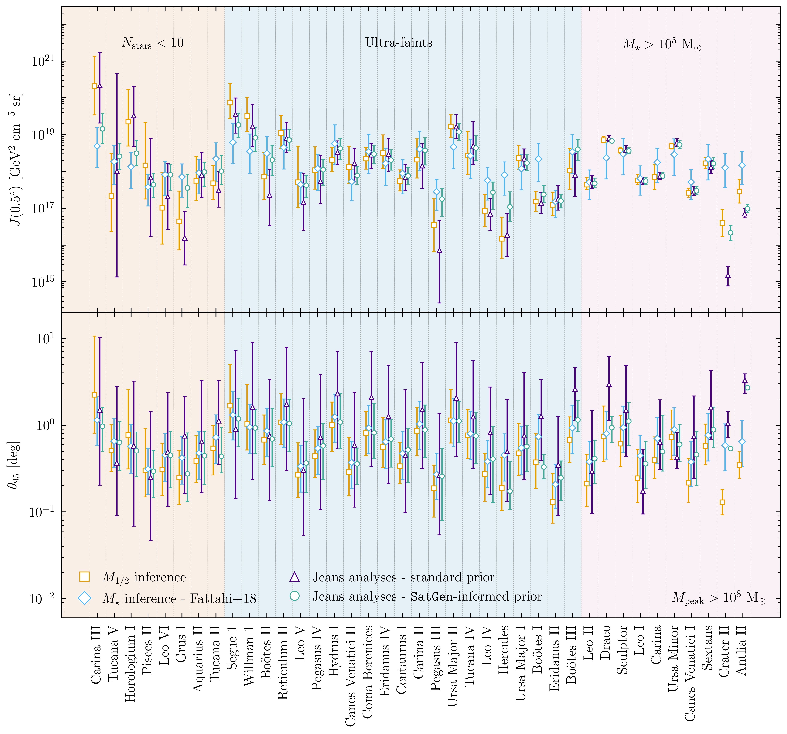<br />
图注：Top: The astrophysical $J$-factor for each MW satellite, integrated to an angular radius of $0.5^{\circ}$. Median results and associated 68\% uncertainties are shown for the \(\Mhalf{}\) inference (light orange squares), the \(\Fattahi{}\) \(\Mstar{}\) inference (light blue diamonds), as well as Jeans analyses using the standard prior~(indigo triangles) and \(\SatGen{}-informed\) prior~(teal circles). The MW satellites are ordered by increasing $r_{1/2}$ from left to right within each category ($N_{\rm stars}<10$, Ultra-faints, $\Mstar{} > 10^5~\Msun$). Compared to using the standard priors, the \(\SatGen{}-informed\) priors tend to pull the Jeans analysis results closer to those predicted by the $\Mstar{}$ inference. Bottom: The same, but for the 95\% angular containment radius of the astrophysical $J$-factor. Some of the largest $J$-factor dwarfs (e.g., Carina~III, Segue~1, Willman~1) have median 95\% $J$-factor containment larger than $0.5^{\circ}$ across all inference methods.<br />
对应解读：对应“各矮星系 J 因子后验对比图”和“角延展或累积 J(θ) 图”，也对应关键图表导读中的图2与图5。<br />
入选理由：这张图同时给出39个银河系卫星的 J(0.5°) 中位数、68%不确定性，以及95% J 因子角包围半径，直接支撑日报关于不同推断方法、先验依赖、高 J 目标和约1°角延展的核心解读。相比单独的参数后验图，它更全面地连接了天体物理 J 因子和点源近似是否安全两个主要结论。<br />
来源与置信度：\(arxiv_source\)；high；\(arxiv_source\) / \(temp_part2.tex\):figure[2]</p>
<p><strong>Fig03</strong><br />
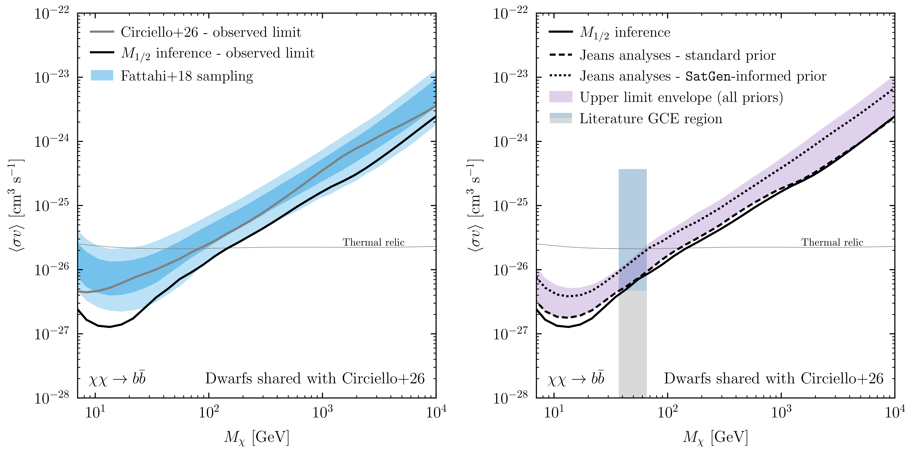<br />
图注：Left: The 95\% confidence upper limit on the $\chi\chi\to b\bar{b}$ velocity-averaged DM annihilation cross section computed by recasting the Fermi-LAT gamma-ray flux limits from~\(\citet{Circiello:2026inp}\) for the \(\Mhalf{}-inferred\) $J$-factors (solid black). The results are limited to the 30 dwarf galaxies shared between this work and the benchmark sample from~\(\citet{Circiello:2026inp}.\) The observed 95\% upper limit from~\(\citet{Circiello:2026inp},\) limited to these shared dwarf galaxies, is shown as the solid gray line. See text for a more detailed comparison of the \(\citet{Circiello:2026inp}\) line with the \(\Mhalf{}-inference\) line. To compare to cosmological expectations, we show the 68\% and 95\% containment bands for an ensemble of $10^3$ sets of MW dwarf galaxy $J$-factor realizations sampled from the \(\Fattahi{}-inferred\) $J$-factor PDFs in light blue, with limits for each $J$-factor set computed using the \(\Mhalf{}\) ``measurement" uncertainties. The thermal relic cross section is indicated by the thin solid gray line~\(\citep{Steigman:2012nb}.\) Right: For the same 30 dwarf galaxies, the \(\Mhalf{}\) inference 95\% upper limit (black, solid), standard-prior Jeans analysis limit (black, dashed), and \(\SatGen{}-informed-prior\) Jeans analysis limit (black, dotted). The light purple band corresponds to the envelope of upper limits produced by the Jeans analyses with every prior considered in \(\autoref{app:jeans}.\) The cross-section range required to attribute the Galactic Center gamma-ray excess to DM annihilation is shown as a steel blue box (see text), with a gray band extending down to zero to indicate that this excess can be explained in other ways. The use of a \(\SatGen{}-informed\) prior can weaken the analysis limits by a factor of $\sim$2--4.<br />
对应解读：对应“Fermi-LAT 湮灭截面上限曲线”和关键图表导读中的图4，以及模型拟合段落中的伽马射线联合似然重构。<br />
入选理由：这是论文最关键的暗物质间接探测结果图，横轴为暗物质质量、纵轴为95%湮灭截面上限，直接展示不同 J 因子处理和 Jeans 先验使限制相差约2--4倍，并包含热遗迹截面和 Galactic Center excess 区域，对日报中70 GeV与130 GeV排除差异的解释最有支撑力。<br />
来源与置信度：\(arxiv_source\)；high；\(arxiv_source\) / \(temp_part2.tex\):figure[3]</p>
<p><strong>Fig06</strong><br />
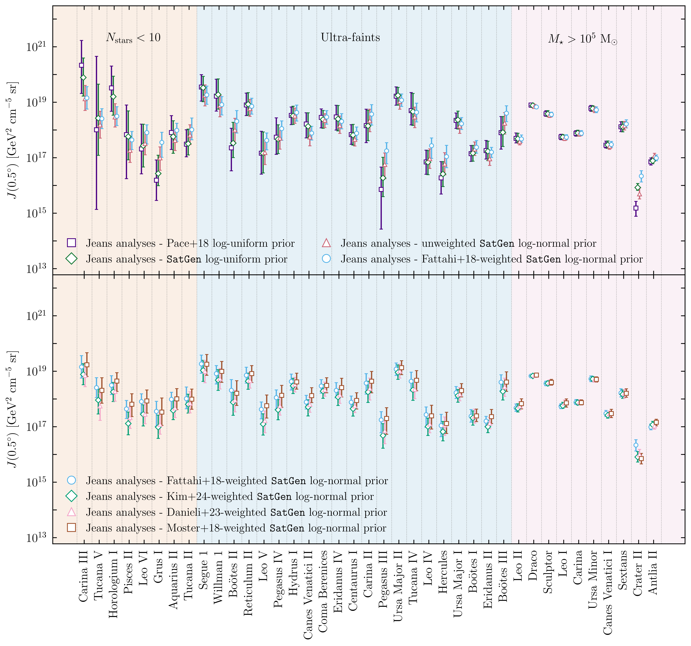<br />
图注：A comparison of inferred astrophysical $J$-factors for dwarf galaxies under various Jeans analysis priors, separated into the three nominal categories and ordered by increasing $r_{1/2}$ within each category. Top panel: The indigo squares show the Jeans results using the wide log-uniform priors from~\(\citet{Pace:2018tin}.\) The dark green diamonds and rose triangles show the Jeans results for a \(\SatGen{}-motivated\) log-uniform and log-normal prior, respectively (see text for details). Finally, for the light blue circles, we repeat the same process using the \(\Fattahi{}-weighted\) and distance-selected \(\SatGen{}\) distributions. For dwarf galaxies with larger kinematic uncertainties, there exist up to order of magnitude differences between Jeans analysis results using \(\SatGen{}-driven\) informative priors and results with log-uniform priors. By contrast, for the dwarf galaxies with $\Mstar>10^5~\Msun{}$, with the exception of Antlia~II and Crater~II, constraining data leads to limited prior dependence in the inference results. Bottom panel: Same as \(\autoref{fig:jeans_panel},\) except for Jeans results with SHMR-weighted priors. The light blue circles, light green diamonds, pink triangles, and brown squares indicate results with \(\Fattahi{},\) \(\Kim{},\) \(\Danieli{},\) and \(\Moster{},\) respectively. The results with the \(\Kim{}\) and \(\Danieli{}\) priors are consistently smaller than the results with the \(\Fattahi{}\) and \(\Moster{}\) priors by up to 0.5~dex across the $N_{\rm stars}<10$ dwarfs and Ultra-faints. The results for the $\Mstar>10^5~\Msun{}$ dwarfs show little prior dependence, except for Antlia~II and Crater~II.<br />
对应解读：对应“Jeans 先验比较图”和模型拟合段落中关于宽先验、SatGen 信息先验、SHMR 加权先验对 J 因子的影响。<br />
入选理由：这张图系统比较多种 Jeans 先验下各矮星系 J 因子的变化，特别显示运动学数据弱的超暗弱目标可出现数量级差异，而明亮矮星系先验依赖较小。它最直接支撑日报中“高 J 是否由先验驱动”和“不物理参数尾部会抬高 J”的讨论。<br />
来源与置信度：\(arxiv_source\)；high；\(arxiv_source\) / \(temp_part2.tex\):figure[6]</p>
<p><strong>Fig08</strong><br />
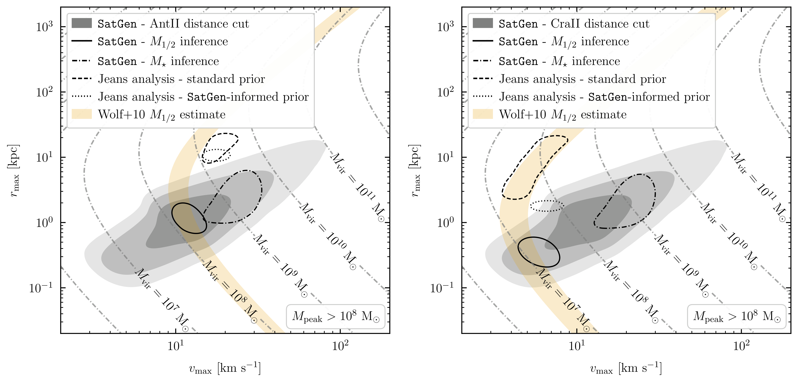<br />
图注：Inferred values for the $z=0$ maximum circular velocity \(\vmax{}\) and the radius \(\rmax{}\) at which it occurs for the MW dwarfs Antlia~II~(AntII, left) and Crater~II~(CraII, right). In gray are the 68, 95, and 99.5\% containment regions for the \(\SatGen{}\) satellite halos satisfying the distance selections for the respective dwarf galaxies. The solid and dash-dotted black contours show the 68\% containment for the profile parameters inferred using \(\Mhalf{}\) and \(\Mstar{},\) respectively. The \(\Mstar{}\) inference assumes the SHMR from \(\Fattahi{}.\) Both the \Mhalf{}- and \(\Mstar{}-inference\) results are computed using the Fiducial \(\SatGen{}\) run and respective dwarf galaxy distance selections. The dashed- and dotted-black contours shows the corresponding region using the results from the Jeans analysis with the standard and \(\SatGen{}-informed\) prior, respectively. The light orange band shows the locus of NFW halo parameters whose enclosed mass at the half-light radius of the respective dwarf galaxies falls within the 68\% confidence interval of the observed \(\Mhalf{}\) (as computed using the \(\Wolf{}\) estimator). The gray dot-dashed contours denote lines of constant \(\Mvir{}---the\) virial mass of a NFW halo with the given parameters at $z=0$. For both dwarf galaxies, the standard prior Jeans analysis posteriors lie outside the 99.5\% containment of the \(\SatGen{}\) distribution.<br />
对应解读：对应“SatGen 条件化子晕分布图”和关键图表导读中关于暗晕参数平面、传统 Jeans 先验是否落在 SatGen 允许区域之外的解读。<br />
入选理由：该图在 Vmax--rmax 参数平面比较 Antlia II 与 Crater II 的 SatGen 分布、Mhalf/Mstar 条件化结果和 Jeans 后验，并明确显示标准先验 Jeans 后验可落在 SatGen 99.5%包围区之外，是说明传统先验可能产生宇宙学上不自然暗晕参数的强证据。<br />
来源与置信度：\(arxiv_source\)；high；\(arxiv_source\) / \(temp_part2.tex\):figure[8]</p>
<p><strong>Fig04</strong><br />
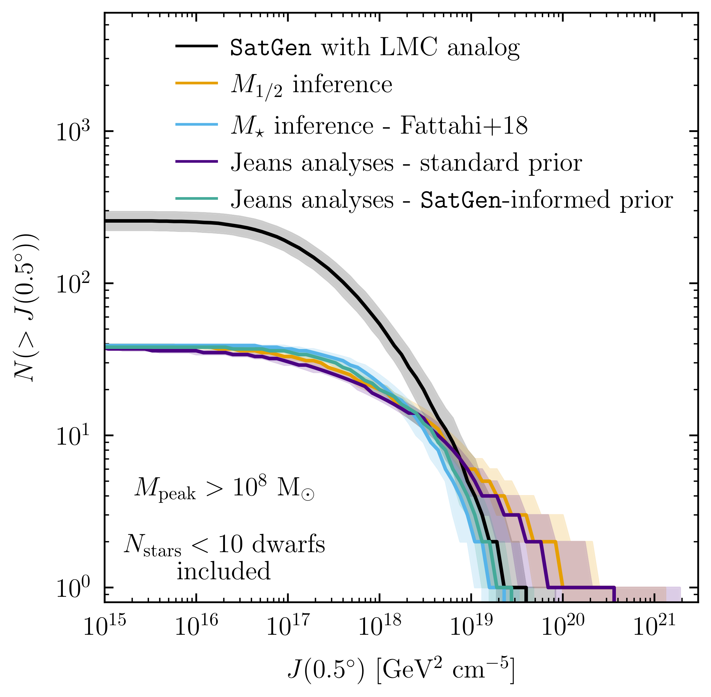<br />
图注：The median number of satellites with $J(0.5^{\circ})$ above a given value, along with 68\% containment bands. The results for the underlying Fiducial \(\SatGen{}\) model are shown in gray, selecting for LMC-associated hosts. The results for the MW dwarf galaxies conditioned on \(\Mhalf{}\) weights are shown in light orange; those conditioned on \(\Mstar{}\) weights from the \(\Fattahi{}\) SHMR are shown in light blue. Additionally, the distribution obtained using the standard-prior Jeans analyses is shown in indigo, while the distribution from Jeans analyses with the \(\SatGen{}-informed\) prior is shown in teal. We include the dwarf galaxies with $N_{\rm stars}<10$ (except for Tucana~V, see text) to compare to the indirect detection literature. The \(\SatGen{}\) results are not corrected for completeness and are thus an over-estimate of the expected distribution.<br />
对应解读：对应“高 J 目标贡献排序或累计灵敏度图”和“未来发现预测图”。<br />
入选理由：该图给出超过给定 J(0.5°) 阈值的卫星数量累计分布，并比较原始 SatGen、Mhalf/Mstar 条件化以及不同 Jeans 结果。它可用于判断高 J 目标是否已经被发现、未来新增超暗弱卫星是否可能显著增加高 J 样本，是日报关于未来发现难以大幅加强限制的主要图形依据。<br />
来源与置信度：\(arxiv_source\)；high；\(arxiv_source\) / \(temp_part2.tex\):figure[4]</p>
<p><strong>Fig07</strong><br />
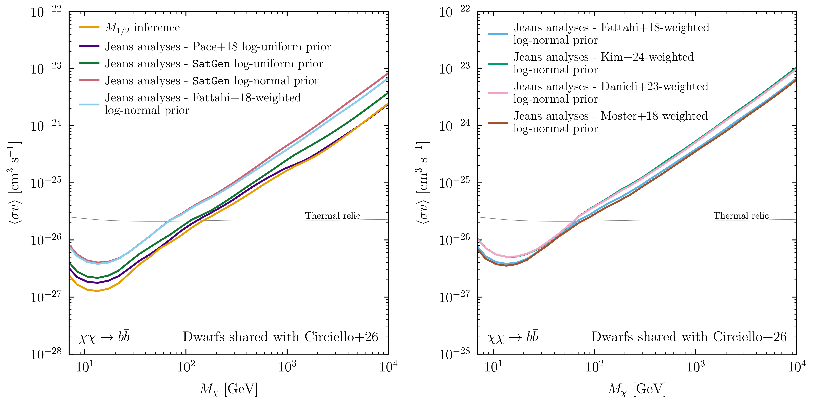<br />
图注：Left: The 95\% upper limits on the $\chi\chi\to b \bar{b}$ velocity-averaged DM annihilation cross section with five different sets of $J$-factors, using the sample of 30 dwarf galaxies in common between this work and the benchmark sample from \(\citet{Circiello:2026inp}.\) The light orange line shows the \(\Mhalf{}\) inference result and the indigo line shows the Jeans analysis result using the log-uniform prior on $r_s$ and $\rho_s$ from \(\citet{Pace:2018tin}.\) The dark green line shows the Jeans analysis result with a log-uniform prior restricted to the region of \(\SatGen{}\) support in $(\rho_s, r_s)$ space. The rose and light blue lines show the results using two ``physics-informed" priors that are fit to distributions of \(\SatGen{}\) halos---one with log-normal distributions fit to unweighted \(\SatGen{}\) halos from the Fiducial run (rose), and one following the same process with \(\Fattahi{}-weighted\) \(\SatGen{}\) halos and including the dwarf-galaxy specific galactocentric distance selections. The limits with these two physics-informed priors are weaker than the \(\Mhalf{}\) and Jeans results by a factor of $\osim 2\text{--}3$ across the DM mass range. See \(\autoref{app:limit_comparison}\) for a comparison to other published limits in the literature. Right: Same as the right, but comparing Jeans results with four different SHMR-weighted priors: \(\Fattahi{}\) (light blue), \(\Kim{}\) (light green), \(\Danieli{}\) (pink), and \(\Moster{}\) (brown). All results include the galactocentric distance selection for each dwarf galaxy. The limits are within a factor of 1.4 of each other at all masses.<br />
对应解读：对应“Fermi-LAT 湮灭截面上限曲线”和“稳健性表格/不同先验稳健性”相关解读。<br />
入选理由：Fig03展示主结果，而Fig07进一步拆分多种 Jeans 先验和不同 SHMR 加权先验对截面上限的影响，量化物理信息先验使限制变弱约2--3倍、不同 SHMR 先验之间差异较小。它适合作为主限制图的稳健性补充。<br />
来源与置信度：\(arxiv_source\)；high；\(arxiv_source\) / \(temp_part2.tex\):figure[7]</p>
<h4 id="_34">强相关工作</h4>
<p>这篇论文属于“同类源/同类方法”脉络：它延续了 Fermi-LAT 对银河系矮星系的联合暗物质搜索、经典 Jeans \(J\) 因子估计，以及近年来把宇宙学模拟或半解析模型作为暗晕先验的趋势。可检索关键词包括 “dwarf spheroidal \(J\)-factor”, “Fermi-LAT dwarf spheroidal dark matter limits”, “Jeans analysis ultra-faint dwarfs”, “SatGen satellite galaxies”, “cosmological priors \(J\)-factor”。由于本文是 Part II，还应同时阅读 Part I，重点看 SatGen 如何校准、如何把最新恒星运动学数据变成动力学质量约束。</p>
<p>与潜在张力相关的工作包括两类。第一类是传统 Fermi-LAT 或后续再分析给出的较强矮星系排除曲线，它们常采用文献 \(J\) 因子和点源或近点源假设；本文认为这些限制可能因先验和角延展处理而偏强。第二类是暗物质小尺度结构研究，例如自相互作用暗物质、暖暗物质或重子盘破坏对卫星子晕密度的影响；如果真实暗物理不同于冷暗物质，本文的宇宙学先验本身也要重写。检索时可同时使用 “mass anisotropy degeneracy dwarf spheroidal”, “tidal disruption ultra-faint dwarf \(J\)-factor”, “extended emission Fermi dwarf spheroidal”。</p>
<p><strong>同一事件 / 同类源线索</strong>：</p>
<ul>
<li><a href="https://arxiv.org/abs/2607.27326">https://arxiv.org/abs/2607.27326</a></li>
<li><a href="https://arxiv.org/pdf/2607.27326">https://arxiv.org/pdf/2607.27326</a></li>
</ul>
<p><strong>相似工作</strong>：</p>
<ul>
<li><a href="https://arxiv.org/abs/1503.02641">https://arxiv.org/abs/1503.02641</a></li>
<li><a href="https://arxiv.org/abs/1611.03184">https://arxiv.org/abs/1611.03184</a></li>
<li><a href="https://arxiv.org/abs/1608.07282">https://arxiv.org/abs/1608.07282</a></li>
</ul>
<p><strong>基础理论 / 方法工作</strong>：</p>
<ul>
<li><a href="https://arxiv.org/abs/0808.0002">https://arxiv.org/abs/0808.0002</a></li>
<li><a href="https://arxiv.org/abs/0902.3669">https://arxiv.org/abs/0902.3669</a></li>
<li><a href="https://arxiv.org/abs/1008.1783">https://arxiv.org/abs/1008.1783</a></li>
</ul>
<p><strong>相反观点 / 张力线索</strong>：</p>
<ul>
<li><a href="https://arxiv.org/abs/1503.02632">https://arxiv.org/abs/1503.02632</a></li>
<li><a href="https://arxiv.org/abs/1611.03184">https://arxiv.org/abs/1611.03184</a></li>
</ul>
</details>
<h3 id="4-on-the-blueprint-of-active-galaxies-producing-neutrinos">4. On the Blueprint of Active Galaxies Producing Neutrinos</h3>
<ul>
<li>来源：arXiv / astro-ph.HE</li>
<li>链接：https://arxiv.org/abs/2607.27658v1</li>
<li>作者：Chen Li, Francis Halzen</li>
<li>评分：novelty 7/10，importance 8/10，relevance 10/10，final 9.40/10</li>
<li>推荐理由：围绕NGC 1068、TXS 0506+056等IceCube候选源提出AGN近黑洞X射线靶场产生高能中微子的统一图像，直接涉及高能中微子、强子过程和多信使天体物理，相关性很高。</li>
</ul>
<p><strong>中文题目</strong>：产生中微子的活动星系蓝图</p>
<p><strong>做了什么</strong>：这篇文章把 IceCube 已看到或提示的活动星系中微子信号放在同一个物理框架里解释：NGC 1068、TXS 0506+056，以及 NGC 4151、CGCG 420-015、NGC 7469、Circinus Galaxy 等候选源，可能都在超大质量黑洞附近几个到十几个引力半径内产生高能中微子。作者主张，黑洞附近致密等离子体发出的软 X 射线既是质子光介子相互作用的靶光子，也会吸收伴随产生的伽马射线，因此这些源在伽马射线中可能被遮蔽。核心结论是，几十 TeV 以上中微子可由近黑洞区加速质子与 \(0.1\text{--}1\,\mathrm{keV}\) X 射线在 \(\Delta\) 共振附近相互作用产生，并且源的特征中微子通量大致与来自 \(\sim 10\) 个引力半径内的 X 射线通量线性相关。</p>
<p><strong>为什么重要</strong>：重要性在于它试图把两个长期分开的事实接起来：IceCube 的中微子源往往没有同等明亮的 GeV--TeV 伽马射线对应体，而若中微子在黑洞附近的 X 射线辐射场中产生，伴随伽马射线本来就会被强吸收。这为 NGC 1068 这类强 X 射线、弱伽马射线的 Seyfert 星系成为中微子源提供了自然解释，也把中微子天文学的目标从传统喷流耀变体扩展到被遮蔽的活动星系核心。</p>
<p><strong>理论 / 观测 / 仪器方法价值</strong>：对理论的价值是给出一个可检验的近黑洞区强子加速和光介子产生图像；对观测的价值是提出以核区 X 射线通量而非单纯伽马射线亮度筛选中微子源；对方法的价值是强调多信使数据中 X 射线、中微子、伽马射线上限应作为同一个能量预算和辐射转移问题联合解释。若这一比例关系成立，它可直接用于构建 IceCube-Gen2、KM3NeT 和未来 X 射线任务的目标源优先级。</p>
<p><strong>为什么应该关注</strong>：你应该关注它，因为它给出了一个很清晰的反直觉判断：最好的高能中微子源不一定是最亮的伽马射线源，反而可能是伽马射线被核区光场埋掉的强 X 射线活动星系。如果正确，这会改变中微子源表的构建方式、活动星系粒子加速区域的定位，也会影响外星系宇宙线起源的能量预算。</p>
<details class="paper-detail">
<summary>展开详细解读：文章讲解、背景、理论、重点章节、图表与相关工作</summary>
<h4 id="_35">文章详细讲解</h4>
<p>科学问题：IceCube 已经建立了弥散天体中微子背景，并在少数活动星系方向上看到显著或提示性过量，但这些源的共同物理机制仍不清楚。传统图像常把高能中微子与相对论喷流、明亮 GeV--TeV 伽马射线联系起来；然而 NGC 1068 的中微子信号与强 TeV 伽马射线并不匹配，提示伽马射线可能在源内被吸收。本文要回答的是：是否存在一种统一的活动星系蓝图，使 Seyfert 核、射电源和耀变体候选源都能在黑洞附近产生中微子，同时自然解释伽马射线暗弱。</p>
<p>作者怎么做：Li 与 Halzen 以 NGC 1068 和 TXS 0506+056 为锚点，再结合 IceCube 数据中对 NGC 4151、CGCG 420-015、NGC 7469、Circinus Galaxy 的额外提示，提出中微子产生区位于超大质量黑洞附近几个引力半径到约 \(10\) 个引力半径内。这个区域有强 X 射线辐射场，光子能量集中在 \(0.1\text{--}1\,\mathrm{keV}\) 附近；若质子在磁重联、盘冕湍流、磁化喷流底部或黑洞磁层中被加速，便可通过 \(p\gamma\) 过程产生带电 pion，进而产生中微子。中性 pion 衰变给出的伽马射线则被同一 X 射线场通过 \(\gamma\gamma\) 吸收，形成所谓伽马射线遮蔽源。</p>
<p>关键结果：文章的核心物理标度是，几十 TeV 到更高能量中微子对应的母质子正好可与 \(0.1\text{--}1\,\mathrm{keV}\) X 射线在 \(\Delta\) 共振附近相互作用。作者进一步从多信使数据归纳出一个近似线性关系：特征中微子通量与来自黑洞附近 \(\sim 10\) 个引力半径内的 X 射线通量成正比，且较小的辐射区尺度更受偏好。这一点把可观测 X 射线核区亮度、光介子效率、伽马射线不透明度和中微子产额联系成同一个蓝图。</p>
<p>局限和下一步：由于摘要显示这更像一篇综合和建模文章，而不是单一新观测发现，关键不确定性会来自样本显著性、IceCube 角分辨率、活动星系核区 X 射线分解、吸收校正和源内几何。线性中微子--X 射线关系可能被黑洞质量、吸积率、X 射线谱形、遮蔽柱密度、质子注入谱和加速最大能量打散。下一步应包括对候选源的统一似然堆叠检验、与硬 X 射线和红外遮蔽指标的交叉验证、以及用 KM3NeT 和 IceCube-Gen2 对南北天不同样本进行独立复核。</p>
<h4 id="_36">关键结果是怎么做出来的</h4>
<p>本文最重要的证据链从源样本开始。作者不是从所有活动星系统计盲选，而是以已在 IceCube 多信使语境中最有代表性的 NGC 1068 和 TXS 0506+056 为基准，再讨论 NGC 4151、CGCG 420-015、NGC 7469、Circinus Galaxy 等方向的额外提示。这些源的共同点不是都具有同样强的可见喷流，而是都有强核区辐射场，尤其是能为 \(p\gamma\) 相互作用提供靶光子的 X 射线环境。因此读者应把样本看作物理启发型样本，而非完整通量限制样本。</p>
<p>显著性方面，摘要没有给出新的全局显著性数值，因此不能把本文理解为又宣布了一个确定中微子源。更合理的读法是：作者把已有 IceCube 点源或时间相关结果中的候选源放入统一模型，检查其所需中微子通量、X 射线通量和伽马射线上限是否相容。对 NGC 1068，关键约束来自空间相关的 TeV 级中微子过量和缺少对应强 TeV 伽马射线；对 TXS 0506+056，关键约束来自已知中微子事件或中微子耀发期与电磁辐射状态的联系。</p>
<p>统计和模型比较的核心应是中微子通量是否可用一个与核区 X 射线通量近似线性成比例的参数化模型解释。若论文中给出图表，最值得检查的是候选源在 \(F_\nu\) 对 \(F_X\) 平面上的位置、不同辐射区半径 \(R/r_g\) 的模型线、以及伽马射线透明或不透明条件的分界。真正支撑结论的不是单一源落在模型线上，而是多个源是否在合理的黑洞质量、X 射线修正和强子负载下同时落在同一趋势附近。</p>
<p>系统误差会很关键。核区 X 射线通量可能被宿主星系、反射成分、吸收柱密度和观测孔径影响；中微子通量估计受 IceCube 有效面积、能谱假设、角分辨率和背景建模影响；伽马射线上限受源扩展、EBL 吸收和内部吸收建模影响。稳健性检验应看作者是否改变 X 射线能段、辐射区尺度、质子谱指数、最大质子能量、目标光子谱和候选源清单后，仍保留近似线性趋势。</p>
<p>如果论文包含弥散中微子和宇宙线外推，读者要特别区分源内物理的局部可行性与总体宇宙学贡献。即使每个活动星系核都能产生中微子，是否足以解释 IceCube 弥散通量，还取决于这类源的光度函数、红移演化、占空比和强子加速效率。这里的模型比较不能只看单源拟合好不好，还要看积分源族是否不超过 X 射线背景、伽马射线背景和宇宙线通量约束。</p>
<details class="paper-subdetail">
<summary>展开背景、理论、公式、模型、章节和图表导读</summary>
<h4 id="_37">背景知识</h4>
<p>研究对象是活动星系核中的超大质量黑洞近邻区域。这里有吸积盘、热或非热盘冕、可能的喷流底部、宽线区或尘埃遮蔽结构，典型尺度可小到几个引力半径。与星系尺度喷流不同，近黑洞区的辐射密度极高，尤其在 X 射线波段，因此即使区域很小，也可能为高能质子提供很高的光介子相互作用概率。</p>
<p>历史上，高能中微子源搜索长期受伽马射线天文学影响。因为 \(pp\) 或 \(p\gamma\) 相互作用会同时产生带电和中性 pion，直觉上中微子源也应是伽马射线源。TXS 0506+056 方向的 IceCube-170922A 事件强化了耀变体喷流与中微子的联系；但 NGC 1068 的情况更复杂：它是近邻 Seyfert 2 星系，有强核活动和遮蔽，却不是传统意义上最亮的 TeV 伽马射线点源。这迫使领域重新考虑伽马射线暗源或伽马射线遮蔽源。</p>
<p>观测背景上，IceCube 对点源的灵敏度正在从少数明亮耀变体扩展到堆叠和目录关联；同时 XMM-Newton、Chandra、NuSTAR 等 X 射线数据能够越来越好地分离核区吸收、反射和本征连续谱。若中微子产额与核区 X 射线场相关，那么 X 射线不再只是辅助电磁对应体，而是决定中微子产生效率的物理输入。</p>
<p>现在值得重看的原因有三点。第一，IceCube 已积累超过十年的数据，弱源的统计关联开始变得可讨论。第二，NGC 1068 提供了一个强烈提示：中微子源可以在伽马射线中被隐藏。第三，多信使建模正在从发现单个事件转向解释源族和弥散背景，需要能同时满足中微子、X 射线和伽马射线约束的统一框架。</p>
<p>常见误区是把没有 TeV 伽马射线探测等同于没有强子过程。事实上，若源内 \(\gamma\gamma\) 光深很大，中性 pion 衰变伽马射线会被转化为电磁级联或热化到较低能段。另一个误区是把所有活动星系中微子机制都归为喷流模型；本文强调的近黑洞 X 射线靶场机制既可存在于有喷流系统，也可存在于被遮蔽 Seyfert 核。</p>
<h4 id="_38">基础理论 / 方法脉络</h4>
<p>基本物理图像是高能质子与光子或气体相互作用产生 pion。若目标是 X 射线光子，主要过程是 \(p\gamma\) 光介子产生；在阈值附近，\(\Delta\) 共振给出较高截面。带电 pion 经过 \(\pi^+\rightarrow \mu^+\nu_\mu\) 和 \(\mu^+\rightarrow e^+\nu_e\bar{\nu}_\mu\) 产生中微子，中性 pion 经过 \(\pi^0\rightarrow 2\gamma\) 产生伽马射线。因此在产生端，中微子和伽马射线是同一强子过程的兄弟产物。</p>
<p>本文的关键假设是靶光子主要来自黑洞附近致密等离子体的 X 射线辐射，尺度约为 \(R\sim\mathrm{few}\text{--}10\,r_g\)，其中 \(r_g=GM_\bullet/c^2\)。小尺度意味着给定 X 射线光度下光子数密度很高，\(p\gamma\) 效率可观；同时也意味着高能伽马射线更容易被 \(\gamma\gamma\rightarrow e^+e^-\) 吸收。这个机制自然偏好 X 射线明亮、核区紧凑、伽马射线被遮蔽的源。</p>
<p>关键量包括黑洞质量 \(M_\bullet\)、辐射区半径 \(R/r_g\)、X 射线光度或通量 \(L_X\) 与 \(F_X\)、目标光子能量 \(\epsilon_X\)、质子能量 \(E_p\)、中微子能量 \(E_\nu\)、光介子效率 \(f_{p\gamma}\)、以及伽马射线对产生光深 \(\tau_{\gamma\gamma}\)。本文所说几十 TeV 以上中微子来自 \(0.1\text{--}1\,\mathrm{keV}\) X 射线靶光子，正是由 \(\Delta\) 共振运动学决定的。</p>
<p>观测和统计逻辑是把中微子方向或源目录关联得到的通量估计，与核区 X 射线通量和伽马射线上限联合起来。如果 \(F_\nu\propto F_X\) 成立，说明中微子产额主要由靶光子密度控制；若某些源明显偏离，则可能说明强子加速效率、遮蔽几何、质子谱或源活动状态不同。</p>
<p>主要退化关系也很直接。较小 \(R\) 可以提高光子密度，从而在较低质子注入功率下产生同样的中微子通量；较高强子负载也可补偿较低 \(f_{p\gamma}\)；较硬质子谱和较高最大能量会改变 IceCube 能段的归一化。X 射线吸收校正、源内各向异性和时间变率会进一步使 \(F_\nu\) 与 \(F_X\) 的关系变宽。</p>
<h4 id="_39">公式与推导</h4>
<p>第一步定义近黑洞尺度。超大质量黑洞的引力半径为</p>
<div class="math-display">\[r_g=\frac{GM_\bullet}{c^2},\]</div>
<p>其中 \(G\) 是引力常数，\(M_\bullet\) 是黑洞质量，\(c\) 是光速。本文蓝图把中微子产生区放在 \(R=\xi r_g\) 附近，\(\xi\sim\mathrm{few}\text{--}10\)，因此所有光子密度和光深都强烈依赖 \(\xi\)。</p>
<p>第二步由 X 射线光度估算靶光子数密度。若核区 X 射线光度为 \(L_X\)，特征光子能量为 \(\epsilon_X\)，近似各向同性且尺度为 \(R\)，则</p>
<div class="math-display">\[n_X\simeq \frac{L_X}{4\pi R^2 c\epsilon_X}.\]</div>
<p>这里 \(n_X\) 是 X 射线光子数密度；这个式子说明，在固定 \(L_X\) 下，源越紧凑，\(p\gamma\) 效率和 \(\gamma\gamma\) 吸收越强。</p>
<p>第三步写出 \(\Delta\) 共振条件。对相对论质子与光子头碰近似，质子静止系光子能量满足</p>
<div class="math-display">\[E_p\epsilon_X(1-\cos\theta)\simeq \frac{m_\Delta^2-m_p^2}{2}c^4,\]</div>
<p>其中 \(E_p\) 是质子能量，\(\theta\) 是相互作用夹角，\(m_\Delta\) 和 \(m_p\) 分别是 \(\Delta\) 共振和质子质量。头碰时 \((1-\cos\theta)\sim2\)，\(0.1\text{--}1\,\mathrm{keV}\) 光子对应 PeV 量级质子。</p>
<p>第四步把质子能量映射到中微子能量。单个中微子通常取得母质子能量的约 \(5\%\)，因此</p>
<div class="math-display">\[E_\nu\simeq 0.05E_p.\]</div>
<p>这个近似解释了为什么软 X 射线靶光子自然对应 IceCube 最敏感的 \(10\text{--}100\,\mathrm{TeV}\) 到更高能段。</p>
<p>第五步估算光介子效率。若 \(p\gamma\) 截面为 \(\sigma_{p\gamma}\)，非弹性系数为 \(\kappa_{p\gamma}\)，则动力学时间内的相互作用效率为</p>
<div class="math-display">\[f_{p\gamma}\simeq n_X\sigma_{p\gamma}\kappa_{p\gamma}R.\]</div>
<p>将 \(n_X\) 代入可见 \(f_{p\gamma}\propto L_X/(R\epsilon_X)\)，所以小半径和高 X 射线光度直接提高中微子产额。</p>
<p>第六步连接到中微子光度。若注入非热质子光度为 \(L_p\)，则单味或全味中微子光度可写为标度关系</p>
<div class="math-display">\[L_\nu\simeq \eta_\nu f_{p\gamma}L_p,\]</div>
<p>其中 \(\eta_\nu\) 表示 pion 能量分配和味混合后的有效系数。若不同源的强子负载 \(L_p/L_X\) 变化不大，便可得到本文强调的近似线性关系 \(F_\nu\propto F_X\)。</p>
<p>第七步解释伽马射线遮蔽。高能伽马射线与 X 射线光子对产生的阈值近似为</p>
<div class="math-display">\[E_\gamma\epsilon_X(1-\cos\theta)\gtrsim 2m_e^2c^4,\]</div>
<p>其中 \(m_e\) 是电子质量。对应的光深为</p>
<div class="math-display">\[\tau_{\gamma\gamma}\simeq n_X\sigma_{\gamma\gamma}R.\]</div>
<p>当 \(\tau_{\gamma\gamma}\gg1\) 时，\(\pi^0\) 衰变伽马射线不能直接逃逸，因此中微子源可以在 TeV 伽马射线中暗弱。</p>
<p>第八步把理论光度变成观测通量。对光度距离为 \(d_L\) 的源，能量通量满足</p>
<div class="math-display">\[F_\nu\simeq \frac{L_\nu}{4\pi d_L^2}.\]</div>
<p>如果 \(L_\nu\propto L_X\)，且 \(F_X=L_X/(4\pi d_L^2)\)，则得到观测平面上的标度</p>
<div class="math-display">\[F_\nu\simeq A F_X,\]</div>
<p>其中 \(A\) 汇总了强子负载、\(p\gamma\) 效率、谱形和几何因子；本文的多信使论证本质上是在估计或约束这个 \(A\)。</p>
<p>第九步给出点源似然的基本形式。IceCube 对某源方向的未分箱似然常可抽象为</p>
<div class="math-display">\[\mathcal{L}(n_s,\gamma)=\prod_i\left[\frac{n_s}{N}S_i(\gamma)+\left(1-\frac{n_s}{N}\right)B_i\right],\]</div>
<p>其中 \(n_s\) 是信号事件数，\(N\) 是总事件数，\(S_i\) 和 \(B_i\) 是第 \(i\) 个事件的信号和背景概率密度，\(\gamma\) 是中微子谱指数。显著性通常由</p>
<div class="math-display">\[\mathrm{TS}=2\ln\frac{\mathcal{L}(\hat n_s,\hat\gamma)}{\mathcal{L}(0)}\]</div>
<p>评估，其中带帽参数是最大似然估计。这个统计诊断决定候选源是否真的需要天体中微信号。</p>
<h4 id="_40">模型拟合 / 应用方法</h4>
<p>这类工作的拟合量通常分为两层。第一层是中微子数据自身的点源拟合，包括信号事件数 \(n_s\)、谱指数 \(\gamma\)、通量归一化和可能的时间窗。第二层是物理模型拟合，把中微子通量与核区 X 射线通量、辐射区半径 \(R/r_g\)、强子负载、质子谱指数和最大能量联系起来。本文摘要强调的是第二层：多源数据更偏好中微子通量与近黑洞 X 射线通量近似线性相关，且较小 \(R/r_g\) 更合适。</p>
<p>似然或后验构造应同时包含中微子计数项、电磁通量项和上限项。对中微子，事件级角距离、能量代理量和探测器有效面积决定 \(S_i\)；对 X 射线，拟合需要区分观测通量、本征吸收校正通量和真正来自 \(\sim10r_g\) 内的成分；对伽马射线，上限不是简单排除强子模型，而是约束逃逸分量和源内光深。若采用贝叶斯方法，合理先验应覆盖 \(R/r_g\)、强子负载和谱指数，而不能把线性关系硬编码成结论。</p>
<p>残差诊断很重要。若在 \(F_\nu\) 对 \(F_X\) 图上，候选源围绕同一比例线散布，残差是否与黑洞质量、吸积率、遮蔽柱密度、源类型或红移相关，将决定这个蓝图是普适机制还是少数源的巧合。特别是 TXS 0506+056 这类喷流源与 NGC 1068 这类 Seyfert 核若落在同一关系上，物理解释必须说明喷流多普勒增强和核区遮蔽如何被统一处理。</p>
<p>参数退化主要包括 \(R\) 与强子负载退化、\(L_X\) 与吸收校正退化、质子谱指数与中微子谱归一化退化、以及内部吸收与外部 EBL 吸收退化。较小 \(R\) 可降低所需 \(L_p\)，但也可能带来过强的电磁级联或违反 X 射线谱约束；较大 \(R\) 则需要更高强子功率，可能超过吸积功率预算。</p>
<p>模型可能失败的方式也清楚。如果未来 KM3NeT 或 IceCube-Gen2 对强 X 射线 Seyfert 样本给出严格非探测，线性 \(F_\nu\)-\(F_X\) 关系会受压。若高角分辨率中微子定位显示候选事件更偏向星暴环、喷流结或邻近背景源，而非核区，近黑洞蓝图也需修改。若 NuSTAR 或未来 X 射线偏振、时变观测显示核区 X 射线发射区域远大于 \(10r_g\)，则光子密度和光深估计也会被削弱。</p>
<h4 id="_41">重点章节 / 结果段落怎么读</h4>
<p>数据和源样本部分应首先阅读。重点看作者如何定义 NGC 1068、TXS 0506+056 以及 NGC 4151、CGCG 420-015、NGC 7469、Circinus Galaxy 的地位：哪些是已有较强证据，哪些只是额外提示；中微子通量采用的是 IceCube 哪类分析结果；X 射线通量是总核通量、吸收校正通量，还是推断的内区通量。</p>
<p>物理蓝图或模型部分是核心。读者应检查 \(p\gamma\) 相互作用是否明确采用 \(\Delta\) 共振近似，目标光子谱如何参数化，辐射区尺度为何取 \(\sim10r_g\)，以及作者如何同时计算中微子产生和伽马射线吸收。这里决定了论文的主要可检验预言。</p>
<p>多信使比较部分要逐图细读。重点看 \(F_\nu\) 与 \(F_X\) 的关系、不同源的误差条、伽马射线上限是否被纳入、以及模型线对应的 \(R/r_g\) 和强子负载。不要只看视觉相关性，要看误差和上限能否真正区分线性模型与无相关模型。</p>
<p>讨论弥散通量和宇宙线贡献的部分应谨慎阅读。这里通常需要把单源模型外推到源族，涉及活动星系光度函数、红移演化、占空比和最大能量。若作者声称这些源可能贡献外星系中微子和宇宙线背景，读者应检查能量预算是否与 X 射线背景和伽马射线背景一致。</p>
<p>稳健性或附录部分若存在，最值得看参数扫描：改变辐射区半径、X 射线能段、质子谱、源内吸收和候选源列表后，结论是否保持。若这些检验很薄，本文应被视为有启发性的蓝图，而非已完成的源族定量证明。</p>
<h4 id="_42">建议重点查看的图表</h4>
<ol>
<li>候选活动星系在天空中的位置与 IceCube 事件或点源显著性图：看角距离、局部显著性和试验因子处理。</li>
<li>\(F_\nu\) 对 \(F_X\) 的相关图：看是否真是线性趋势，误差条是否跨越多个模型线，上限如何画出。</li>
<li>中微子能谱与模型谱：看几十 TeV 以上的谱形、谱指数、归一化，以及 IceCube 有效能段是否覆盖峰值。</li>
<li>\(p\gamma\) 效率和 \(\gamma\gamma\) 光深随 \(R/r_g\) 或 \(L_X\) 的变化图：看小半径偏好的物理来源。</li>
<li>伽马射线观测或上限与内部吸收后模型的比较：看未吸收模型是否被排除，吸收后是否仍满足 Fermi-LAT 或 TeV 上限。</li>
<li>源表：检查黑洞质量、距离、X 射线通量、候选中微子通量、源类型和参考文献是否一致。</li>
<li>弥散背景贡献图：看积分源族是否同时匹配 IceCube 弥散中微子且不超过电磁背景。</li>
<li>稳健性扫描或角标图：看 \(R/r_g\)、强子负载和谱指数之间的退化。</li>
</ol>
<h4 id="_43">关键图表逐图导读</h4>
<p>图 1：若论文给出候选源天空图，横纵轴通常是赤经和赤纬，背景可能是 IceCube 点源检验统计量或事件密度，标记为 NGC 1068、TXS 0506+056 等源的位置。读图时不要把颜色热点直接等同于发现；需要看局部显著性、全局试验因子和角分辨率椭圆。陷阱是忽略 IceCube 在南北天能量阈值和背景组成上的差异。</p>
<p>图 2：最关键的图很可能是中微子通量 \(F_\nu\) 与 X 射线通量 \(F_X\) 的关系。横轴应是某个核区 X 射线能段通量或吸收校正通量，纵轴是 IceCube 推断的中微子能量通量或积分通量，模型线表示不同 \(R/r_g\)、强子负载或目标光子能量。应看数据点是否沿斜率约为 \(1\) 的方向分布，以及误差条是否允许无相关。陷阱是不同源的 X 射线能段和孔径不统一会制造假相关。</p>
<p>图 3：若有能谱图，横轴是中微子能量 \(E_\nu\)，纵轴常为 \(E_\nu^2\Phi_\nu\)。模型曲线应展示由 \(0.1\text{--}1\,\mathrm{keV}\) 靶光子决定的谱峰或转折。读者应检查模型在 IceCube 敏感能段内是否由数据驱动，而不是靠外推；还要看是否同时给出伽马射线级联分量和电磁上限。</p>
<p>图 4：光深或效率图通常以 \(R/r_g\)、\(L_X\) 或 \(\epsilon_X\) 为横轴，以 \(f_{p\gamma}\) 和 \(\tau_{\gamma\gamma}\) 为纵轴。主要结论应是较小 \(R\) 可以同时提高中微子效率并遮蔽伽马射线。读图陷阱是 \(f_{p\gamma}\) 过高时可能也意味着强电磁级联，不能只把高效率视为优点。</p>
<p>图 5：伽马射线约束图若存在，通常比较未吸收的 \(\pi^0\) 衰变伽马射线、内部吸收后的逃逸谱、Fermi-LAT 数据或上限以及 TeV 上限。关键是模型是否需要 \(\tau_{\gamma\gamma}\gg1\) 才不违反观测。如果只有吸收后曲线而没有未吸收曲线，读者很难判断遮蔽要求有多强。</p>
<p>图 6：源族或弥散贡献图的横轴可能是能量，纵轴是全天中微子强度 \(E_\nu^2\Phi_\nu\)，叠加 IceCube 弥散通量、模型源族积分和宇宙线约束。读者应看归一化是否由单源关系自然推出，还是额外调了源族演化参数。陷阱是忽略低光度 AGN 数量、红移演化和未解析 X 射线背景限制。</p>
</details>
<h4 id="_44">论文原图 / 可嵌入图片</h4>
<p><strong>Fig03</strong><br />
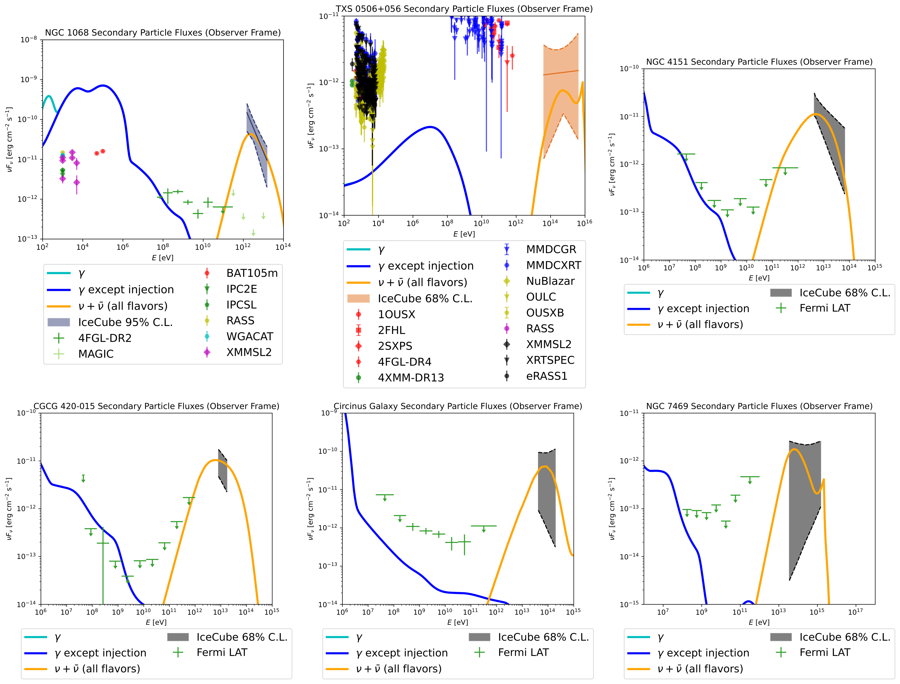<br />
图注：Simplified results for one of the best fits for each of the six neutrino sources from run A ($p \gamma$ only). All sources are characterized with a $\Delta \le 0.05$, except CGCG 420-015, for which $\Delta = 0.34$.<br />
对应解读：“建议重点查看的图表”第2项和“关键图表逐图导读”图2，以及模型拟合段落中关于多源中微子通量与近黑洞 X 射线通量近似线性相关的讨论。<br />
入选理由：这是六个候选中微子源的统一拟合结果，最直接支撑日报核心结论：NGC 1068、TXS 0506+056、NGC 4151、CGCG 420-015、NGC 7469 和 Circinus 是否能被同一近黑洞 X 射线靶场的 pγ 蓝图解释。相比单源图，它更适合检查多源关系、异常源 CGCG 420-015 的偏离以及线性趋势是否只是少数源驱动。<br />
来源与置信度：\(arxiv_source\)；high；\(arxiv_source\) / \(Li_Halzen_article.tex\):figure[3]</p>
<p><strong>Fig02</strong><br />
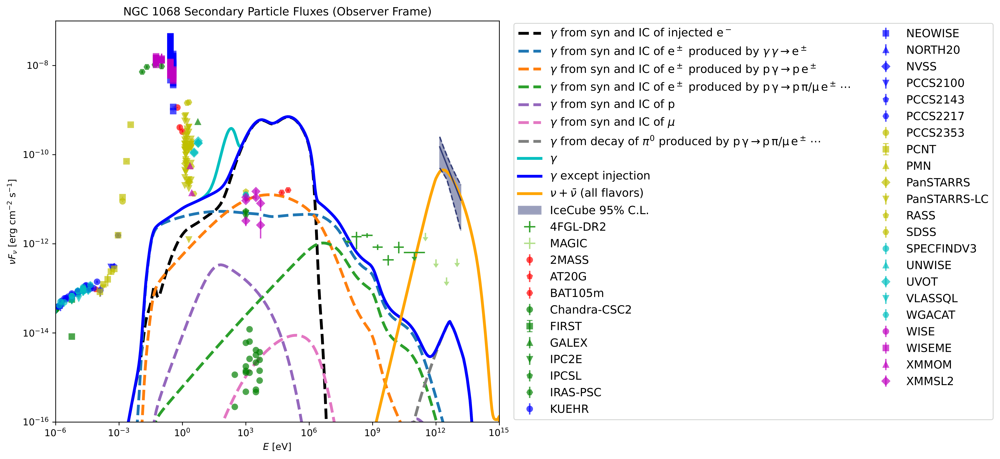<br />
图注：Detailed results for one of the best fits to NGC 1068 data from run A ($p \gamma$ only) with $\Delta \le 0.05$.<br />
对应解读：“关键图表逐图导读”图3的中微子能谱与模型谱，以及模型拟合段落中对 NGC 1068 点源拟合和 pγ-only 最优解的说明。<br />
入选理由：NGC 1068 是本文蓝图的关键锚点，Fig02 给出该源 pγ-only run A 的详细最佳拟合结果，最适合检查几十 TeV 以上中微子谱形、归一化、模型是否覆盖 IceCube 有效能段，以及单源拟合如何支撑后续多源推广。<br />
来源与置信度：\(arxiv_source\)；high；\(arxiv_source\) / \(Li_Halzen_article.tex\):figure[2]</p>
<p><strong>Fig04</strong><br />
<br />
图注：Best fit parameters for the six sources from run A ($p \gamma$ only). The fits are filtered as before. A maximum number of $1,000$ best fits are shown for each source.<br />
对应解读：“建议重点查看的图表”第4项和第8项，以及模型拟合段落中关于 R/\(r_g\)、强子负载、谱指数和最大能量退化的讨论。<br />
入选理由：该图展示六个源在 pγ-only run A 下的最佳拟合参数集合，直接对应日报强调的参数退化和小半径偏好问题。它比示意图更能检验结论是否来自宽泛参数空间中的稳健区域，还是少数精细调参的解。<br />
来源与置信度：\(arxiv_source\)；high；\(arxiv_source\) / \(Li_Halzen_article.tex\):figure[4]</p>
<p><strong>Fig05</strong><br />
<br />
图注：Best fit parameters ($\Delta \le 0.05$) for the six sources from run B ($p \gamma$ and $pp$). A maximum number of $1,000$ best fits are shown for each source.<br />
对应解读：模型拟合段落中关于 pγ 与 pp 成分、系统误差和模型稳健性的讨论，也对应“建议重点查看的图表”第8项稳健性扫描。<br />
入选理由：Fig05 给出包含 pγ 和 pp 的 run B 最佳拟合参数，可与 Fig04 的 pγ-only 结果比较，用来判断加入 pp 后 R/\(r_g\)、强子负载和谱参数是否显著改变。它对检验蓝图是否依赖单一相互作用假设很重要。<br />
来源与置信度：\(arxiv_source\)；high；\(arxiv_source\) / \(Li_Halzen_article.tex\):figure[5]</p>
<p><strong>Fig01</strong><br />
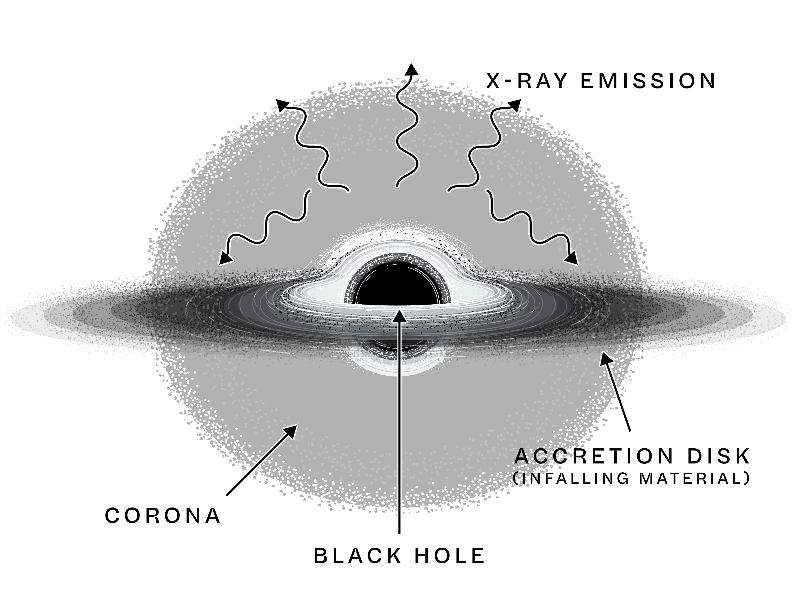<br />
图注：The core of an active galaxy combines the ingredients to produce neutrinos, with protons accelerated by the black hole and/or the accretion disk and a target (corona) with a large optical depth in both gamma rays and hydrogen that converts them into neutrinos.<br />
对应解读：“详细解读”中关于活动星系核心、黑洞附近质子加速、X 射线 corona 作为 pγ 靶场并吸收伽马射线的蓝图说明。<br />
入选理由：Fig01 是物理机制示意图，不提供残差、误差条或参数约束，但能帮助读者快速理解本文所谓 gamma-ray-obscured active galaxy blueprint：近黑洞加速质子、X 射线靶光子产生中微子，同时通过 γγ 吸收隐藏伴随伽马射线。<br />
来源与置信度：\(arxiv_source\)；high；\(arxiv_source\) / \(Li_Halzen_article.tex\):figure[1]</p>
<h4 id="_45">强相关工作</h4>
<p>同一事件和同一源背景方面，TXS 0506+056 是最重要的历史参照：IceCube-170922A 与一个耀变体的空间和时间关联，以及随后对 2014--2015 年中微子耀发的回溯分析，奠定了多信使活动星系中微子研究的框架。NGC 1068 则代表另一类关键源：近邻、强核区 X 射线、强遮蔽、非典型 TeV 伽马射线亮源，却在 IceCube 点源分析中显示显著中微子信号。检索关键词可用 \(\mathrm{IceCube}\)、\(\mathrm{NGC\ 1068}\)、\(\mathrm{TXS\ 0506+056}\)、\(\mathrm{AGN\ corona\ neutrinos}\)、\(\mathrm{gamma\ ray\ obscured\ neutrino\ sources}\)。</p>
<p>同类理论工作包括 AGN 盘冕中微子模型、隐藏宇宙线加速器模型、耀变体区 \(p\gamma\) 模型和星暴核 \(pp\) 模型。本文与单纯喷流模型的张力在于：若中微子主要来自近黑洞 X 射线场，那么伽马射线亮度不应作为源筛选的首要指标；与星暴 \(pp\) 模型的区别在于，本文强调的是紧凑核区 \(p\gamma\) 过程和 \(\gamma\gamma\) 遮蔽。进一步检索可用 \(\mathrm{AGN\ disk\ corona\ photomeson}\)、\(\mathrm{hidden\ cosmic\ ray\ accelerators}\)、\(\mathrm{Seyfert\ neutrino}\)、\(\mathrm{IceCube\ point\ source\ catalog}\)。</p>
<p><strong>同一事件 / 同类源线索</strong>：</p>
<ul>
<li><a href="https://arxiv.org/abs/2607.27658">https://arxiv.org/abs/2607.27658</a></li>
<li><a href="https://arxiv.org/abs/1807.08794">https://arxiv.org/abs/1807.08794</a></li>
<li><a href="https://arxiv.org/abs/1807.08816">https://arxiv.org/abs/1807.08816</a></li>
<li><a href="https://arxiv.org/abs/2211.09972">https://arxiv.org/abs/2211.09972</a></li>
</ul>
<p><strong>相似工作</strong>：</p>
<ul>
<li><a href="https://arxiv.org/abs/1807.08794">https://arxiv.org/abs/1807.08794</a></li>
<li><a href="https://arxiv.org/abs/1807.08816">https://arxiv.org/abs/1807.08816</a></li>
<li><a href="https://arxiv.org/abs/2211.09972">https://arxiv.org/abs/2211.09972</a></li>
</ul>
<p><strong>基础理论 / 方法工作</strong>：</p>
<ul>
<li><a href="https://arxiv.org/abs/hep-ph/9807282">https://arxiv.org/abs/hep-ph/9807282</a></li>
</ul>
<p><strong>相反观点 / 张力线索</strong>：</p>
<p>（未提供）</p>
</details>
<h3 id="5-the-srgerosita-all-sky-survey-dr2-cumulative-x-ray-catalogues-from-the-first-three-surveys-and-multi-wavelength-counterparts-in-the-western-galactic-hemisphere">5. The SRG/eROSITA All-Sky Survey DR2: Cumulative X-ray catalogues from the first three surveys and multi-wavelength counterparts in the western Galactic hemisphere</h3>
<ul>
<li>来源：arXiv / astro-ph.HE</li>
<li>链接：https://arxiv.org/abs/2607.27772v1</li>
<li>作者：M. E. Ramos-Ceja, G. Lamer, M. Salvato, A. Merloni, J. S. Sanders, A. Georgakakis, T. Liu, E. Bulbul</li>
<li>评分：novelty 8/10，importance 9/10，relevance 8/10，final 9.35/10</li>
<li>推荐理由：SRG/eROSITA DR2前三次巡天累计X射线源表和多波段对应体发布，近两百万源的大型资源对X射线高能天体、AGN、星系团和稀有源筛选具有长期复用价值。</li>
</ul>
<p><strong>中文题目</strong>：SRG/eROSITA 全天巡天第二数据释放：前三轮巡天在西银半球的累积 X 射线源表与多波段对应体</p>
<p><strong>做了什么</strong>：这篇文章发布并说明了 SRG/eROSITA 全天巡天第二数据释放中的核心产品：基于前三轮 eROSITA 全天巡天，即 \(\mathrm{eRASS{:}3}\)，在德国团队拥有数据权的西银半球构建的 X 射线点源、扩展源和多波段对应体星表。主星表在 \(0.2\text{--}2.3\,\mathrm{keV}\) 能段包含约两百万个源，其中 \(1,911,744\) 个点状源和 \(63,796\) 个扩展源；另有 \(2.3\text{--}5.0\,\mathrm{keV}\) 硬能段近 \(15,000\) 个源。文章的重点不是单个天体，而是说明巡天策略、数据处理、源探测、扩展源判别、通量与上限、以及光学红外对应体识别和分类如何形成一个可复用的大规模样本。它的重要性在于，\(\mathrm{eRASS{:}3}\) 相比首轮巡天显著增加了曝光和源数，为活动星系核、星系团、恒星冕、紧致天体候选体以及罕见 X 射线源提供了更深、更均一的全天统计基线。</p>
<p><strong>为什么重要</strong>：eROSITA 是继 ROSAT 之后软 X 射线全天巡天最关键的跃迁之一，而这篇文章给出的不是局部深场，而是可用于总体人口学研究的累积全天巡天产品。前三轮巡天提高了曝光、降低了随机噪声，并允许更稳健地处理源的存在性、扩展性和多波段对应体概率。对很多课题而言，样本选择函数、探测似然、扩展源污染、星表交叉匹配可靠性比单个源的最佳拟合通量更重要；这篇文章正是把这些基础设施公开化和文档化。</p>
<p><strong>理论 / 观测 / 仪器方法价值</strong>：对观测者，它提供了一个可直接选样的 X 射线源库，并附带光学红外对应体和分类信息；对理论和统计研究者，它提供了大样本 X 射线源计数、活动星系核空间密度、星系团候选体和银河系 X 射线源分布的输入数据；对方法学和仪器工作，它展示了多轮扫描巡天如何从事件表、背景建模、探测似然、扩展源判别一直连接到多波段贝叶斯或机器学习式对应体分类。</p>
<p><strong>为什么应该关注</strong>：如果你做高能天体物理、星系团宇宙学、活动星系核人口学、银河系恒星活动、时域交叉认证，或者只是需要一个可靠的软 X 射线先验星表，这个数据释放都会影响你的样本定义。它还会改变“未探测”的含义：文章同时更新了上限服务，意味着非探测源、堆叠分析和多信使候选体排除也能更系统地处理。读者应关注的不只是源数增加，而是选择函数、对应体纯度、扩展源可靠性和硬能段子样本如何限制后续科学结论。</p>
<details class="paper-detail">
<summary>展开详细解读：文章讲解、背景、理论、重点章节、图表与相关工作</summary>
<h4 id="_46">文章详细讲解</h4>
<p>科学问题：这篇论文要解决的不是某一个 X 射线源的物理解释，而是一个更基础的问题：在 eROSITA 连续多轮全天扫描之后，怎样把原始事件数据变成一个可被全社区可靠使用的大规模 X 射线星表？第一轮巡天已经证明 eROSITA 的软 X 射线灵敏度和覆盖能力，但单轮数据在曝光、统计涨落、源混淆、扩展源判别和对应体识别上都有局限。前三轮累积数据使探测深度和源数大幅提高，也让许多边缘源从低显著性候选体变成可统计使用的样本。</p>
<p>作者怎么做：文章围绕德国 eROSITA 联盟拥有专有权的西银半球数据，使用前三次完整全天巡天 \(\mathrm{eRASS{:}3}\) 构建主星表和硬能段星表。主星表采用 eROSITA 最敏感的 \(0.2\text{--}2.3\,\mathrm{keV}\) 能段，硬星表采用 \(2.3\text{--}5.0\,\mathrm{keV}\) 能段。数据处理链包括事件筛选、曝光图、背景处理、滑动盒或多尺度候选源搜索、最大似然源参数估计、点源与扩展源分类、通量估计，以及与光学红外巡天数据进行对应体识别和分类。论文还发布了多套面向主样本和硬样本的对应体星表，以便用户在完整性和纯度之间选择。</p>
<p>关键结果：主星表包含 \(1,911,744\) 个点状源和 \(63,796\) 个扩展源，总量接近两百万，约为 eRASS1 X 射线源内容的两倍。硬能段星表则包含近 \(15,000\) 个源，虽然数量远少于软能段，但对吸收较强的活动星系核、硬谱紧致源和部分银河系高能源特别有价值。多波段对应体方面，作者在 DESI Legacy Surveys 覆盖区域内为约 \(1.4\) 百万个点状 X 射线源识别了对应体，并估计其中约 \(88\%\) 是河外源。这说明该星表不只是“X 射线位置表”，而是已初步连接到物理类别和多波段性质的资源。</p>
<p>局限和下一步：这次 DR2 是 catalogue-only release，重点在星表而非完整事件级公开数据，因此某些需要重新建模背景、重新做光谱或时间分析的研究仍会受限。西银半球的专有权范围也意味着全天均一性需要结合其他数据释放和区域权限理解。扩展源样本尤其需要谨慎：星系团、超新星遗迹、星云和源混叠都可能在不同环境下影响扩展性判别。下一步最关键的是更完整的多轮数据、改进的选择函数、与光谱红移和光学星系团目录的交叉验证，以及在用户层面把探测概率、上限和对应体可靠性纳入科学推断。</p>
<h4 id="_47">关键结果是怎么做出来的</h4>
<p>这篇文章的证据链从样本定义开始：作者选择前三次完整 eROSITA 全天巡天的累积数据，即 \(\mathrm{eRASS{:}3}\)，并限定在德国团队负责的西银半球。主探测能段为 \(0.2\text{--}2.3\,\mathrm{keV}\)，因为这里 eROSITA 有最高有效面积和最低背景组合；另建 \(2.3\text{--}5.0\,\mathrm{keV}\) 硬能段星表，用于补充硬谱和吸收源。读者应注意，主星表和硬星表不是同一个选择函数下的简单子集，而是不同能段、背景和响应条件下的探测结果。</p>
<p>事件数或样本量层面，最核心数字是 \(1,911,744\) 个点状源、\(63,796\) 个扩展源，以及近 \(15,000\) 个硬能段源。这些数字说明样本已经进入“统计系统误差主导”的阶段：单源计数误差当然仍重要，但对人口学结论而言，探测阈值、天空位置相关曝光、银纬相关吸收、背景结构和对应体误配率会同样重要。文章通过描述处理流水线和给出源群体性质，使用户能判断哪些科学问题适合直接用 catalog-level 数据，哪些问题需要更细的选择函数。</p>
<p>显著性或置信度的核心通常通过源探测似然、扩展似然和对应体可靠性体现，而非单一的 \(\sigma\) 数字。对 X 射线源表，探测似然一般来自源模型相对于背景模型的似然比；扩展源判别则比较点扩散函数卷积点源模型和扩展模型。对应体识别部分还要考虑位置误差椭圆、候选体表面密度、多波段颜色和先验类别。读者在使用星表时，应优先检查探测似然阈值、扩展参数、位置误差、通量误差和对应体概率，而不应只筛选一个通量下限。</p>
<p>支撑结论的图表通常包括天空覆盖图、曝光分布、源数随通量或似然的分布、点源与扩展源在参数空间的分离、多波段对应体分类比例、以及与前一轮 eRASS1 的数量和深度比较。若论文给出 \(\log N-\log S\) 或天区源密度图，这些图应被视为选择函数诊断，而不仅是描述性结果。特别要看银道面、麦哲伦云附近、亮扩展结构和高背景区域是否显示异常源密度，因为这些区域最容易影响源表纯度。</p>
<p>系统误差方面，主要来自曝光非均匀性、扫描策略导致的点扩散函数变化、软 X 射线背景、银河吸收、亮源翼部、扩展弥散辐射、光学红外对应体的星等极限和拥挤场误配。稳健性检验通常应包括与 eRASS1 的交叉比较、与已有 ROSAT 或 XMM-Newton 星表的重合率、不同对应体算法或可靠性阈值下的分类变化，以及主星表和硬星表之间的谱型一致性。文章的价值正在于把这些诊断作为用户理解星表的入口，而不是只给出最终列表。</p>
<details class="paper-subdetail">
<summary>展开背景、理论、公式、模型、章节和图表导读</summary>
<h4 id="_48">背景知识</h4>
<p>eROSITA 是 SRG 任务上的 X 射线望远镜阵列，设计目标之一是进行多轮全天巡天，在软 X 射线能段建立比 ROSAT 全天巡天更深、更均一的源表。X 射线全天巡天的独特价值在于，它同时对河外活动星系核、星系团热气体、银河系恒星冕、双星、白矮星、超新星遗迹和弥散热等离子体敏感。一个高质量源表往往比单次指向观测更适合回答人口学问题，例如源数分布、空间密度演化和稀有天体候选体的筛选。</p>
<p>历史上，ROSAT 全天巡天在 \(0.1\text{--}2.4\,\mathrm{keV}\) 能段定义了三十多年软 X 射线全天样本的基准，但它的角分辨率、灵敏度和源表深度已经限制了许多现代问题。XMM-Newton 和 Chandra 提供了深得多、角分辨率更高的指向观测，但覆盖天空面积有限且选择函数复杂。eROSITA 的优势是在灵敏度、视场、扫描均一性和多轮时间基线之间取得平衡，使“全天”和“百万级源数”同时成立。</p>
<p>为什么现在值得重新看？因为从单轮 \(\mathrm{eRASS1}\) 到三轮累积 \(\mathrm{eRASS{:}3}\)，许多统计性质发生了实质变化。曝光时间近似累积，弱源的探测概率提高，随机噪声导致的 Eddington bias 可被更好地刻画，重复扫描也有助于识别变化源和排查伪源。与此同时，样本变大后，系统误差会更显眼：例如银道面附近的拥挤和吸收、扩展弥散背景、以及多波段对应体的类别先验都会进入最终科学结果。</p>
<p>该领域常见误区之一是把星表中的“源”直接等同于真实天体。实际上，源表条目是某个探测模型、能段、背景模型和阈值下的统计对象；在拥挤场或弥散背景中，一个条目可能对应多个天体，也可能是结构化背景的残差。另一个误区是把 X 射线通量当作模型无关量；通量通常依赖谱型假设、吸收柱密度和仪器响应。第三个误区是把对应体识别当作最近邻匹配；对百万级样本，真实对应体的概率必须同时考虑位置误差、候选体密度和源类别先验。</p>
<h4 id="_49">基础理论 / 方法脉络</h4>
<p>从物理图像看，eROSITA 在 \(0.2\text{--}5.0\,\mathrm{keV}\) 观测到的是高能光子事件，每个事件有到达时间、探测器位置和能量估计。天体源的信号表现为空间上接近点扩散函数或扩展轮廓的计数过量，叠加在仪器背景、粒子背景、宇宙 X 射线背景和银河弥散辐射之上。巡天模式下，天空上每个位置的曝光不同，因此不能仅凭计数多少判断源强，必须通过曝光图和响应函数把计数转成通量或似然。</p>
<p>本文的核心假设之一是，在给定能段和局部背景模型后，可以用源模型与背景模型的似然比判断源是否存在。点源模型通常由位置、计数率和点扩散函数决定；扩展源模型还需要角尺度参数，例如 \(\beta\) 模型核心半径或类似的扩展轮廓。源是否“扩展”不是肉眼判断，而是比较点源模型和扩展模型是否显著改善似然，同时还要考虑离轴角、曝光、背景结构和相邻源混叠。</p>
<p>观测量层面，最常用的是计数率、能段通量、探测似然、扩展似然、位置误差、硬度比和多波段对应体概率。软能段主星表对未吸收活动星系核和恒星冕非常敏感，但也更容易受银河吸收和软背景影响；硬能段星表源数少，却能更好地挑出硬谱活动星系核、吸收源和部分高能紧致系统。对于扩展源，星系团热气体是重要目标，但银河弥散结构、附近星系和超新星遗迹会成为不可忽视的污染源。</p>
<p>多波段识别的基本逻辑是：X 射线位置给出一个误差区域，光学红外巡天在其中可能有多个候选体。真正的对应体不一定是角距离最近者，因为背景候选体密度、星等、颜色、形态和天体类别先验都会改变概率。对活动星系核，X 射线与中红外颜色、光学星系核性质常有关联；对恒星，X 射线与光学近邻恒星和自行信息有关。因此本文发布的对应体分类表，是把 X 射线星表转化为物理样本的关键步骤。</p>
<p>常见退化包括：吸收柱密度与本征谱斜率在通量换算中的退化，弱源通量与背景归一化的退化，扩展半径与总计数率的退化，以及对应体可靠性与局部候选体表面密度的退化。系统误差还包括扫描曝光不均匀、点扩散函数随位置变化、亮源翼部、能量定标、星表 astrometry 偏差和光学红外巡天深度不均匀。读者若要用星表做定量科学，必须把这些因素纳入选择函数，而不是把源表当成简单的 flux-limited sample。</p>
<h4 id="_50">公式与推导</h4>
<p>第一步，把天体能谱通量与探测到的计数联系起来。若源的光子谱为 \(F_E\)，单位可理解为每单位能量、面积和时间的光子数，仪器有效面积为 \(A_{\rm eff}(E,\theta)\)，曝光时间为 \(T\)，则期望源计数为</p>
<div class="math-display">\[\mu_{\rm src}=T\int_{E_1}^{E_2} F_E\,A_{\rm eff}(E,\theta)\,dE .\]</div>
<p>这里 \(E_1\) 与 \(E_2\) 是能段边界，\(\theta\) 表示离轴角或扫描平均几何量。这条式子说明，源表中的计数率不是纯天体量，而是天体谱形与仪器响应卷积后的结果。</p>
<p>第二步，实际探测到的是源加背景。对像素或探测单元 \(i\)，可写为</p>
<div class="math-display">\[\mu_i=s\,P_i(\boldsymbol{x})+b_i ,\]</div>
<p>其中 \(s\) 是源总期望计数，\(P_i(\boldsymbol{x})\) 是位置 \(\boldsymbol{x}\) 处点扩散函数在第 \(i\) 个像素的归一化贡献，\(b_i\) 是背景期望计数。点源探测的本质是在 \(s=0\) 和 \(s>0\) 两类模型之间比较数据支持度。</p>
<p>第三步，X 射线计数服从泊松统计。给定观测计数 \(n_i\)，似然为</p>
<div class="math-display">\[\mathcal{L}(s,\boldsymbol{x},\boldsymbol{\eta})=\prod_i \frac{\mu_i^{n_i}e^{-\mu_i}}{n_i!} ,\]</div>
<p>其中 \(\boldsymbol{\eta}\) 表示背景、扩展半径或其他 nuisance parameters。最大似然估计给出源位置、计数率和误差；弱源情况下，泊松形式比高斯近似更可靠。</p>
<p>第四步，探测显著性常用似然比表示。一个典型统计量是</p>
<div class="math-display">\[\mathrm{DET\_ML}=-2\ln\left(\frac{\mathcal{L}_{0}}{\mathcal{L}_{1}}\right) ,\]</div>
<p>其中 \(​\mathcal{L}_{0}\) 是无源背景模型似然，\(\mathcal{L}_{1}\) 是含源模型似然。不同管线会对自由度和尾概率作具体校正，但物理含义都是：加入源模型后，数据被解释得好多少。</p>
<p>第五步，扩展源判别可写成点源模型与扩展模型的比较：</p>
<div class="math-display">\[\mathrm{EXT\_ML}=-2\ln\left(\frac{\mathcal{L}_{\rm point}}{\mathcal{L}_{\rm ext}}\right) .\]</div>
<p>这里 \(\mathcal{L}_{\rm point}\) 使用点扩散函数卷积模型，\(\mathcal{L}_{\rm ext}\) 使用带角尺度的扩展模型。若 \(\mathrm{EXT\_ML}\) 很高，说明扩展模型显著优于点源模型；但在复杂背景或源混叠情况下，高扩展似然仍需人工或多波段验证。</p>
<p>第六步，从计数率到能量通量需要能量转换因子。若计数率为 \(C\)，能量通量为 \(f_X\)，可写成</p>
<div class="math-display">\[f_X=\frac{C}{\mathrm{ECF}(N_{\rm H},\Gamma,kT,Z)} .\]</div>
<p>这里 \(\mathrm{ECF}\) 依赖银河吸收柱密度 \(N_{\rm H}\)、幂律光子指数 \(\Gamma\)，或热等离子体温度 \(kT\) 与金属丰度 \(Z\)。这说明星表通量通常内含谱型假设，不同天体类别的系统误差不同。</p>
<p>第七步，对多波段对应体，可用似然比思想。候选体 \(j\) 的可靠性可近似写为</p>
<div class="math-display">\[R_j=\frac{q(m_j)c_j f(r_j)}{\sum_k q(m_k)c_k f(r_k)+1-Q} .\]</div>
<p>其中 \(r_j\) 是候选体与 X 射线位置的角距离，\(f(r_j)\) 是位置误差分布，\(q(m_j)\) 表示真实对应体在星等 \(m_j\) 处的先验分布，\(c_j\) 可代表颜色或类别先验，\(Q\) 是在辅助星表中能找到真实对应体的先验概率。</p>
<p>第八步，上限服务对应的是在未显著探测时求给定置信度的源通量界限。若背景期望为 \(b\)，观测计数为 \(n\)，源期望上限为 \(s_{\rm up}\)，可由</p>
<div class="math-display">\[\sum_{k=0}^{n}\frac{(s_{\rm up}+b)^k e^{-(s_{\rm up}+b)}}{k!}=1-C_{\rm conf}\]</div>
<p>定义，其中 \(C_{\rm conf}\) 是置信度。这条式子把“未探测”转化为可比较的通量限制，对多信使候选体排除和堆叠分析非常重要。</p>
<h4 id="_51">模型拟合 / 应用方法</h4>
<p>这类星表论文的拟合对象首先是源模型参数：位置、计数率、位置误差、源是否扩展、扩展尺度、以及在不同能段的计数率或硬度比。拟合通常在 X 射线图像或事件投影空间中进行，采用泊松似然而不是简单最小二乘。对弱源，\(\chi^2\) 近似容易低估不对称误差；最大似然或贝叶斯后验更适合处理低计数和非负通量边界。</p>
<p>对应体识别是第二类拟合或概率推断问题。这里的待估量不是 X 射线通量，而是每个光学红外候选体成为真实对应体的概率，以及该源属于活动星系核、恒星、星系团或其他类别的概率。实际算法可能结合似然比、贝叶斯先验和机器学习分类器。残差诊断应包括可靠性分箱后的真实匹配率、随机偏移交叉匹配得到的假匹配率，以及不同天区、不同星等和不同银纬下的分类稳定性。</p>
<p>主要退化关系包括通量与背景的退化、扩展尺度与总计数的退化、位置误差与对应体可靠性的退化、谱型假设与通量换算的退化。对于扩展源，低红移星系团可能有大角尺度但低表面亮度，高红移星系团可能更接近点源；这会让扩展选择函数依赖红移、质量、核心结构和背景。对于硬能段样本，较少的源计数意味着硬度选择更容易受统计涨落影响，但它也减少了软背景和部分恒星污染。</p>
<p>系统误差不能只通过统计误差条表示。仪器有效面积标定、扫描曝光图、背景模板、粒子背景过滤、点扩散函数模型、亮源遮罩、星表坐标系统和辅助光学红外巡天深度都会影响最终样本。用户在做模型拟合时，应把星表选择函数写进似然，例如对源数分布、光度函数或星系团质量函数的拟合，应使用天空位置相关的面积函数，而不是假定全样本共享同一个通量极限。</p>
<p>实际应用中，若研究活动星系核 \(\log N-\log S\)，应同时拟合通量误差、Eddington bias 和面积曲线；若研究星系团宇宙学，应把扩展源探测概率、污染率和质量代理散布纳入层级模型；若搜索稀有源，应使用多波段对应体概率和硬度比筛选后再回到图像层检查。DR2 星表的价值正是在于给出了足够多的诊断量，使这些后续拟合可以比简单交叉匹配更可控。</p>
<h4 id="_52">重点章节 / 结果段落怎么读</h4>
<p>数据与巡天策略部分应先读。这里会说明前三轮 \(\mathrm{eRASS{:}3}\) 的时间覆盖、扫描方式、能段定义和西银半球范围。读者需要从这一部分理解曝光为何不均匀、哪些天区更深、哪些天区可能受背景或拥挤影响，因为这些信息决定后续任何样本选择的选择函数。</p>
<p>数据处理与源探测部分是使用星表前最重要的技术段落。应重点看事件筛选、背景估计、曝光图、候选源生成、最大似然参数估计、探测阈值和重复源合并。这里决定了源表条目的统计含义，也决定了探测似然、通量和位置误差能否直接用于你的科学问题。</p>
<p>点源与扩展源星表描述部分应与表格字段一起读。点源适合活动星系核、恒星和紧致源统计；扩展源则涉及星系团、星系、超新星遗迹和弥散结构。读者应特别关注扩展参数和扩展似然，而不是简单把所有 extended 标记都视为星系团。</p>
<p>多波段对应体章节应重点检查算法、输入巡天覆盖、可靠性定义和分类输出。由于文章提到在 DESI Legacy Surveys 覆盖区域内约 \(1.4\) 百万个对应体，并估计约 \(88\%\) 为河外源，这一部分直接决定活动星系核样本、恒星污染估计和后续光谱随访优先级。</p>
<p>讨论、稳健性和数据产品说明部分适合最后读。这里通常会列出与 eRASS1、ROSAT、XMM-Newton 或其他目录的比较，以及数据释放的限制。尤其要注意 DR2 是 catalogue-only release，这意味着某些问题可以直接用星表解决，另一些问题仍需要等待事件级数据或更详细的响应产品。</p>
<h4 id="_53">建议重点查看的图表</h4>
<ol>
<li>
<p>天空曝光图或覆盖图：检查西银半球内曝光随黄道或扫描几何的变化，以及银道面、高背景区和深曝光区的位置。</p>
</li>
<li>
<p>源密度全天图：看点源和扩展源是否沿银纬、曝光或弥散背景显示明显结构；异常高密度不一定代表真实天体过密，可能是背景或混叠。</p>
</li>
<li>
<p>探测似然与通量分布图：检查源数在低似然、低通量端是否接近阈值堆积，判断样本完整性边界在哪里。</p>
</li>
<li>
<p>\(\log N-\log S\) 或面积曲线：这是做人口学研究最关键的选择函数图，应看不同天区和能段下有效面积如何随通量下降。</p>
</li>
<li>
<p>扩展源参数图：例如扩展半径、扩展似然、计数率或通量之间的关系，用来区分真实扩展源、点源混叠和背景结构。</p>
</li>
<li>
<p>多波段对应体可靠性与分类图：看对应体概率、星等、颜色、类别比例和银纬依赖，尤其检查河外源比例和恒星污染如何变化。</p>
</li>
<li>
<p>与 eRASS1 或外部星表的交叉比较表：看新增源、重复探测源、通量一致性、位置偏差和未匹配源比例。</p>
</li>
<li>
<p>硬能段样本诊断：检查硬能段源与主星表的重合、硬度分布和候选类别，判断硬样本是否主要由吸收活动星系核或高能银河源驱动。</p>
</li>
</ol>
<h4 id="_54">关键图表逐图导读</h4>
<p>图 1：通常应是巡天覆盖或曝光图。横纵坐标可能是银经和银纬，颜色代表有效曝光或灵敏度。读图时不要只看平均曝光，要看曝光分布的长尾和边界区域；同一通量源在深区和浅区的探测概率不同，后续所有源数统计都要回到这张图理解。</p>
<p>图 2：源密度或探测源全天分布图。数据点或颜色密度显示点源、扩展源在天空上的分布。主要结论应是 \(\mathrm{eRASS{:}3}\) 已提供百万级源表，但读图陷阱是把源密度结构直接解释为天体分布；银道面吸收、恒星密度、背景结构和曝光变化都会改变表观密度。</p>
<p>图 3：探测似然、计数率或通量分布图。横轴可能是探测似然、计数率或通量，纵轴是源数。低通量端的转折通常不是宇宙学信号，而是探测不完整性；高通量端的离群源则可能由亮星、近邻星系、星系团或校准问题主导。读者应寻找作者给出的阈值和推荐筛选标准。</p>
<p>图 4：扩展源诊断图。横轴可能是扩展半径或扩展似然，纵轴可能是探测似然、通量或计数。模型线或阈值线用于区分点源和扩展候选体。读图时要注意，低计数扩展源的扩展半径误差很大，多个相邻点源也可能模拟出扩展轮廓；因此这类图应与多波段图像或外部星系团目录交叉阅读。</p>
<p>图 5：多波段对应体可靠性或分类分布图。横轴可能是可靠性、星等、颜色或类别，纵轴是源数或比例。若图中显示河外源占主导，尤其在 DESI Legacy Surveys 覆盖区约 \(88\%\) 为河外源，读者应检查这个比例是否随银纬、X 射线通量和光学深度变化。不要把分类标签视为光谱确认；它是概率分类。</p>
<p>图 6：与先前目录或 eRASS1 的比较图。坐标轴可能是 eRASS1 与 \(\mathrm{eRASS{:}3}\) 的通量、位置偏差或探测似然。理想情况下，重复源应沿一比一关系分布，但变量源、谱型假设、背景变化和低计数统计会造成离散。若有残差图，应重点看是否存在通量相关或天区相关系统偏差。</p>
</details>
<h4 id="_55">论文原图 / 可嵌入图片</h4>
<p><strong>Fig06</strong><br />
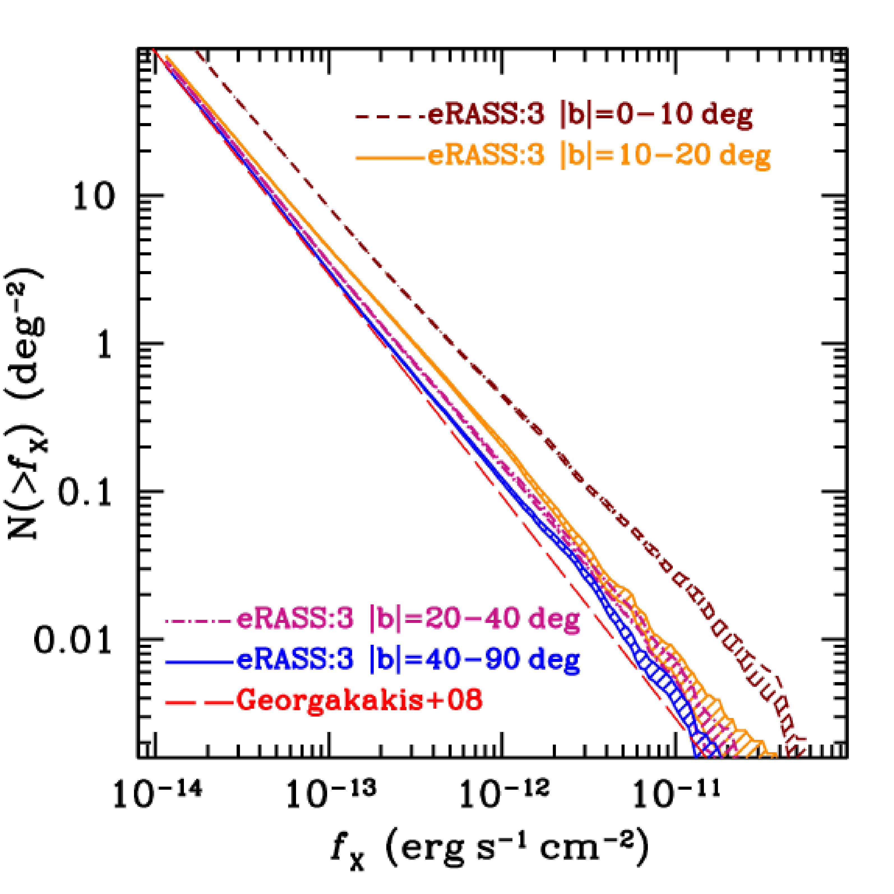<br />
图注：Cumulative number counts as a function of flux for eRASS:3 X-ray point sources in the $0.5-2.0$~keV energy band. The number of count distributions is shown for different Galactic latitude intervals: $|b|=0-10^{\circ}$ (brown dashed curves), $10-20^{\circ}$ (amber solid curves), $20-40^{\circ}$ (purple dashed curves), and $40-90^{\circ}$ (blue dashed curves). Shaded regions indicate the $68\%$ uncertainties estimated via bootstrap resampling. The $0.5-2.0$~keV number counts from \(\citet{Georgakakis2008}\) are shown as a dashed red line for comparison.<br />
对应解读：“建议重点查看的图表”第4项：log N-log S；以及模型拟合段落中关于源数分布、面积曲线、Eddington bias 和选择函数的讨论。<br />
入选理由：这是候选图中最直接支撑人口学和选择函数解读的图：给出0.5–2.0 keV点源累积数计数随通量变化，并按不同银纬分组，含68% bootstrap不确定性和外部文献比较线。它能同时展示低通量端不完整性、银纬依赖和与既有X射线源数统计的一致性，是后续AGN log N-log S或光度函数分析最关键的诊断图。<br />
来源与置信度：\(arxiv_source\)；high；\(arxiv_source\) / aa60385-26corr.tex:figure[6]</p>
<p><strong>Fig01</strong><br />
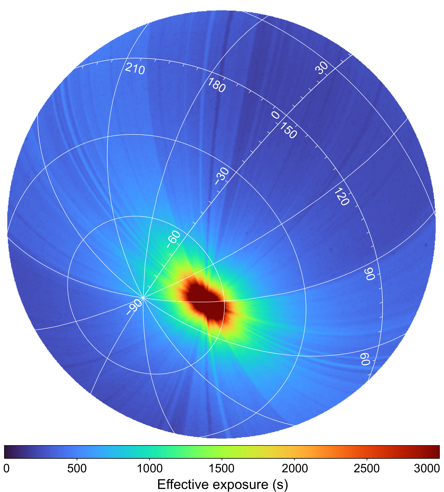<br />
图注：Effective (vignetted) eRASS:3 exposure map (J2000, zenithal equal area projection). The values in the map show the exposure time multiplied by the average of the ratio of the (vignetted) effective area to the on-axis effective area in the energy band $0.6-2.3$~keV. Only the eROSITA-DE (western) Galactic hemisphere is displayed. The highest exposure is reached toward the South Ecliptic Pole, where the map is saturated (see Sect.~\(\ref{sec:operations}\) for details).<br />
对应解读：“建议重点查看的图表”第1项和“关键图表逐图导读”图1：天空曝光图或覆盖图。<br />
入选理由：该图是真正的eRASS:3西银半球有效曝光图，颜色直接表示0.6–2.3 keV能段的有效曝光，并标出南黄极深曝光区。日报强调所有源数统计和探测概率都必须回到曝光分布理解，因此这张图是解释星表非均匀选择函数、深浅区差异和边界效应的基础图。<br />
来源与置信度：\(arxiv_source\)；high；\(arxiv_source\) / aa60385-26corr.tex:figure[1]</p>
<p><strong>Fig05</strong><br />
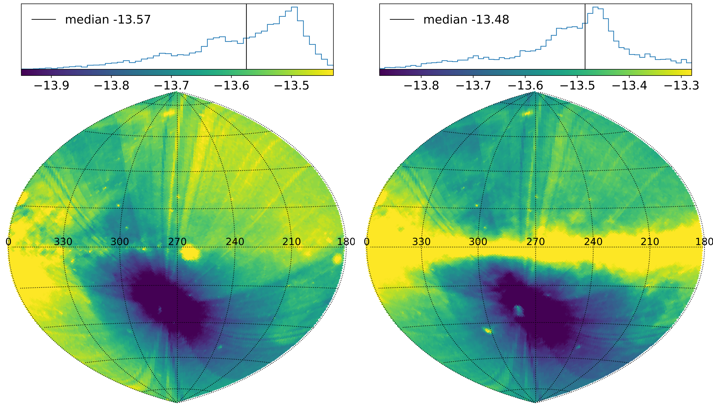<br />
图注：Hammer–Aitoff projection maps in Galactic coordinates showing the logarithm of the $0.5-2.0$~keV flux limit, defined as the flux corresponding to a 50\% sky covering fraction. The left and right panels display the values uncorrected and corrected for Galactic absorption, respectively. The histograms above each map show the distribution of $\log(F_{\mathrm{lim}})$ in units of erg\,s$^{-1}$\,cm$^{-2}$. The colour bar along the X-axis indicates the intensity scale corresponding to the flux limits in the projected maps.<br />
对应解读：“建议重点查看的图表”第4项：面积曲线/通量极限；以及模型拟合段落中关于天空位置相关通量极限和系统误差的讨论。<br />
入选理由：虽然不是传统面积-通量曲线，但它以全天投影给出0.5–2.0 keV通量极限，并区分是否校正银河吸收，直接揭示灵敏度在天空位置上的变化。它比单纯源数直方图更适合提醒用户不能假定全样本共享同一通量极限，是构建选择函数和理解银道吸收系统误差的核心图。<br />
来源与置信度：\(arxiv_source\)；high；\(arxiv_source\) / aa60385-26corr.tex:figure[5]</p>
<p><strong>Fig04</strong><br />
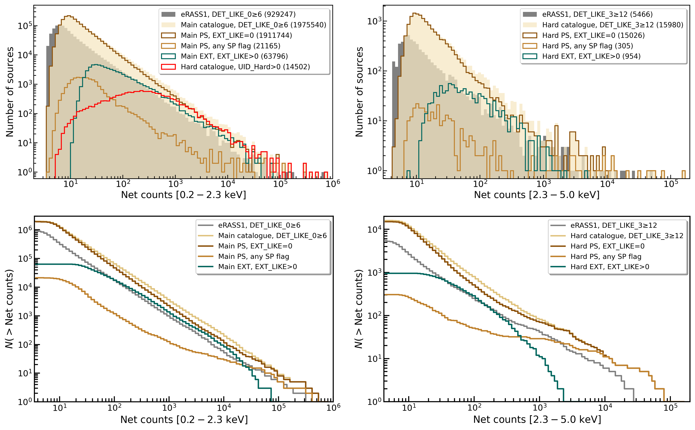<br />
图注：{\(\it\) Top panels:} Distribution of net counts for the eRASS:3 main ({\(\it\) left}) and hard ({\(\it\) right}) catalogues, shown in yellow. {\(\it\) Bottom panels:} Reverse cumulative distributions, i.e. the number of sources with net counts above a given value, for the same samples. In all panels, point sources (PS; {\(\tt\) EXT_LIKE = 0}) and extended sources (EXT; {\(\tt\) EXT_LIKE &gt; 0}) are shown in brown and green, respectively. Point sources flagged with any SP flag (see Table~\ref{tab:source_flag_summary}) are displayed in gold. The grey histograms indicate the corresponding distributions from the eRASS1 catalogues for comparison. Sources detected in both the eRASS:3 main and hard catalogues are shown in red in the top-left panel.<br />
对应解读：“建议重点查看的图表”第3项和第8项：探测计数/通量分布、硬能段样本诊断；也对应关键结果中主星表和硬星表源数规模的讨论。<br />
入选理由：该图同时展示eRASS:3主星表与硬星表的净计数分布和反累积分布，并区分点源、扩展源、带spurious flag点源，还与eRASS1分布比较。它能直观看到弱源端堆积、硬样本计数特征、扩展源和点源的统计差异，是判断样本阈值和完整性边界的重要诊断。<br />
来源与置信度：\(arxiv_source\)；high；\(arxiv_source\) / aa60385-26corr.tex:figure[4]</p>
<p><strong>Fig12</strong><br />
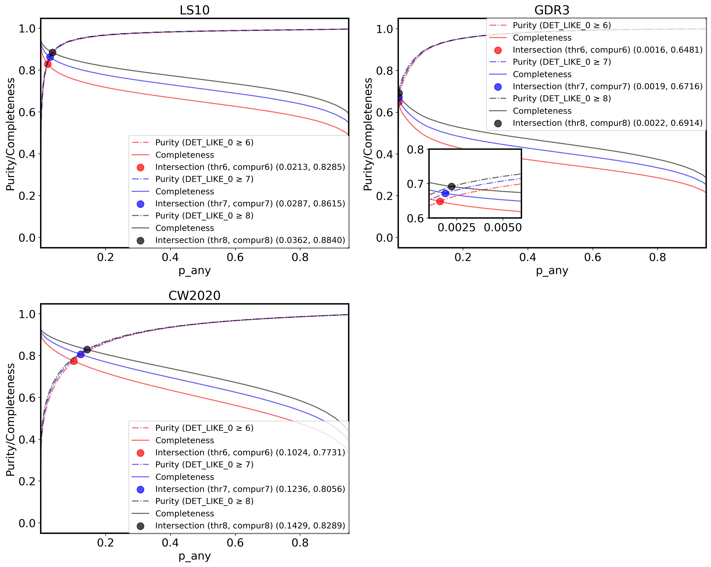<br />
图注：Cumulative purity (dashed lines) and completeness (solid lines) as a function of the \(\texttt{p\_any}\) threshold, computed for the entire sky using the ancillary data from LS10, GDR3, and CW2020, respectively. We also compute the values for three different \(\texttt{DET\_LIKE\_0}.\)<br />
对应解读：“建议重点查看的图表”第6项：多波段对应体可靠性与分类图；以及模型拟合段落中关于p_any、纯度、完整性和对应体概率推断的讨论。<br />
入选理由：该图给出随p_any阈值变化的累计纯度和完整性，并比较不同辅助星表和不同DET_LIKE_0设置，正好对应日报中强调的对应体概率不是光谱确认、需在纯度和完整性之间取舍的问题。它是评估多波段匹配质量和制定科学样本筛选阈值的最佳候选图。<br />
来源与置信度：\(arxiv_source\)；high；\(arxiv_source\) / aa60385-26corr.tex:figure[12]</p>
<p><strong>Fig07</strong><br />
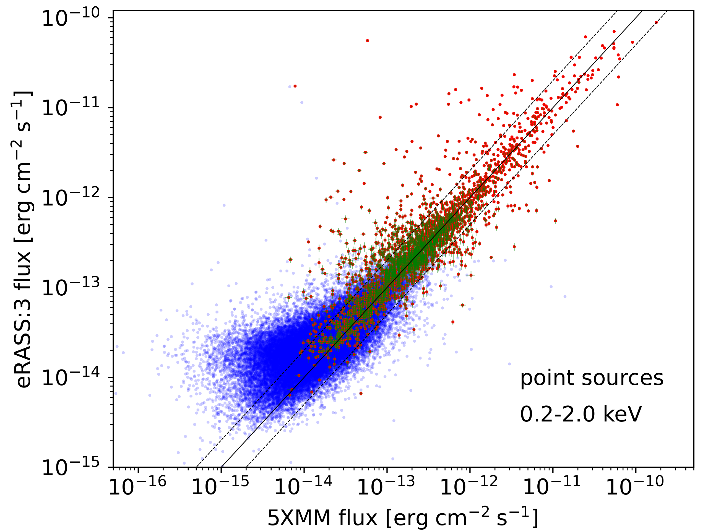<br />
图注：Comparison between eRASS:3 main catalogue point-source fluxes and 5XMM-DR15 fluxes (both in the $0.2-2.0$~keV band) for sources with strong matches between the two catalogues. Blue dots represent the full sample of matched sources, while red dots (with green error bars) mark sources with $8 \sigma$ flux detections in both catalogues. The solid line indicates the one-to-one relation, and the dashed lines correspond to flux ratios of 2:1 and 1:2, respectively.<br />
对应解读：“建议重点查看的图表”第7项和“关键图表逐图导读”图6：与外部星表的交叉比较、通量一致性和系统偏差。<br />
入选理由：该图将eRASS:3主星表点源通量与5XMM-DR15在相近软能段的通量逐源比较，包含一比一线和2倍偏差线，可直接检查通量标定一致性、变量源离散和低信噪比散布。相比仅给未匹配源似然分布的图，它更能支撑日报中关于通量残差和外部目录一致性的解读。<br />
来源与置信度：\(arxiv_source\)；high；\(arxiv_source\) / aa60385-26corr.tex:figure[7]</p>
<h4 id="_56">强相关工作</h4>
<p>这篇工作与 ROSAT 全天巡天和 eROSITA 早期数据释放构成直接的历史链条。ROSAT 提供了软 X 射线全天巡天的长期基准，eROSITA 则通过更高灵敏度和多轮扫描把源数推进到百万量级。检索时可用关键词“ROSAT all-sky survey 2RXS”、“eROSITA eRASS1 catalogue”、“SRG eROSITA all-sky survey DR2”、“eFEDS catalogue”和“eROSITA source detection likelihood”。</p>
<p>它也与 XMM-Newton、Chandra 和 Swift-XRT 的源表形成互补关系。XMM-Newton 与 Chandra 的指向观测更深、角分辨率更高，适合校验 eROSITA 弱源和拥挤场；eROSITA 的优势是大面积和均一性。潜在张力通常出现在通量标定、变量源、扩展源识别和低显著性源的可靠性上。若读者关心星系团宇宙学，应检索“eROSITA cluster selection function”、“extended source contamination”和“X-ray cluster cosmology selection”；若关心活动星系核人口学，应检索“eROSITA AGN logN logS”、“X-ray luminosity function”和“multiwavelength counterpart identification”。</p>
<p><strong>同一事件 / 同类源线索</strong>：</p>
<ul>
<li><a href="https://arxiv.org/abs/2607.27772">https://arxiv.org/abs/2607.27772</a></li>
</ul>
<p><strong>相似工作</strong>：</p>
<ul>
<li><a href="https://arxiv.org/abs/1609.09244">https://arxiv.org/abs/1609.09244</a></li>
</ul>
<p><strong>基础理论 / 方法工作</strong>：</p>
<ul>
<li><a href="https://arxiv.org/abs/2010.03477">https://arxiv.org/abs/2010.03477</a></li>
</ul>
<p><strong>相反观点 / 张力线索</strong>：</p>
<p>（未提供）</p>
</details>
<h3 id="6-spinning-down-neutron-star-merger-remnants-with-the-tayler-spruit-dynamo-global-simulations-reveal-the-formation-of-massive-disks-and-neutron-rich-ejecta">6. Spinning down neutron-star merger remnants with the Tayler-Spruit dynamo: Global simulations reveal the formation of massive disks and neutron-rich ejecta</h3>
<ul>
<li>来源：arXiv / astro-ph.HE</li>
<li>链接：https://arxiv.org/abs/2607.28556v1</li>
<li>作者：Harry Ho-Yin Ng, Elias R. Most</li>
<li>评分：novelty 8/10，importance 8/10，relevance 8/10，final 9.00/10</li>
<li>推荐理由：首次在长期全局GR中微子辐射MHD模拟中加入Tayler-Spruit dynamo子网格模型，显示可显著改变BNS并合遗迹自旋下降、盘形成和富中子抛射物；对多信使瞬变和致密星物理重要。</li>
</ul>
<p><strong>中文题目</strong>：用 Tayler-Spruit 发电机给中子星并合遗迹自旋降速：全局模拟显示大质量盘和富中子抛射物的形成</p>
<p><strong>做了什么</strong>：这篇论文用广义相对论中微子辐射磁流体力学模拟研究双中子星并合后长寿命遗迹的慢时标演化，重点是过去全局模拟通常没有解析的 Tayler-Spruit 发电机如何在稳定分层、正剪切的遗迹核心中传输角动量。作者把 Tayler-Spruit 机制写成一种平均场亚格点处方，嵌入轴对称长时标模拟。主要结论是：该机制会在高纬度核心区产生有效 Maxwell 应力，在几百毫秒内显著拉平核心自转剖面，把质量和角动量从外层遗迹转移到吸积盘，使盘更大、更强磁化且电子丰度更低，从而增加富中子抛射物。</p>
<p><strong>为什么重要</strong>：双中子星并合遗迹的寿命、是否坍缩成黑洞、盘质量和抛射物成分，直接决定短伽马暴、千新星、射电余辉和引力波后并合信号。过去很多模拟强调磁转动不稳定性，但遗迹核心往往是稳定分层且具有正剪切，磁转动不稳定性并不一定是主导角动量输运机制。本文指出 Tayler-Spruit 发电机可能在这个被忽略的区域主导自旋降速，因而会改变我们从电磁对应体反推核物质状态方程和遗迹寿命的路径。</p>
<p><strong>理论 / 观测 / 仪器方法价值</strong>：方法价值在于作者给出了一个可用于全局广义相对论中微子辐射磁流体模拟的 Tayler-Spruit 平均场亚格点模型，把小尺度不可解析磁不稳定性转化为可计算的角动量输运和磁场放大项。理论价值在于它把稳定分层核心中的磁角动量输运纳入并合遗迹长期演化图像。观测价值在于它预言盘质量、磁化程度和低电子丰度抛射物都可能被系统性提高，从而影响千新星红成分、晚期喷流供能和并合后坍缩时间的解释。</p>
<p><strong>为什么应该关注</strong>：如果你关心从 GW170817 类事件的光变曲线和光谱反推并合产物，这篇文章提醒你：盘和抛射物并不只是由并合瞬间决定，后并合几百毫秒内核心的内部磁输运也可能重塑它们。如果你做数值模拟，它提出了一个必须与磁转动不稳定性、数值黏性和中微子输运一起比较的亚格点物理。如果你做核物质状态方程或多信使建模，它会影响遗迹寿命、坍缩阈值和富中子物质产额这些关键输入。</p>
<details class="paper-detail">
<summary>展开详细解读：文章讲解、背景、理论、重点章节、图表与相关工作</summary>
<h4 id="_57">文章详细讲解</h4>
<p>科学问题：双中子星并合后若形成长寿命超大质量或大质量中子星，遗迹不是一个简单的刚体。它有强差分自转、热压支撑、稳定分层、中微子冷却和磁场放大。并合后最初几十毫秒内， Kelvin-Helmholtz 不稳定性和磁转动不稳定性常被认为是磁场放大的主要来源；但在更长的百毫秒到秒时标上，核心内部的角动量如何外运仍不清楚。特别是，遗迹核心可能存在正剪切和稳定分层，常规磁转动不稳定性不适用，而 Tayler-Spruit 发电机正是在这类辐射或热扩散不强、稳定分层差分旋转介质中可能工作的机制。</p>
<p>作者怎么做：论文进行了轴对称、长时间、广义相对论中微子辐射磁流体力学模拟，从一个较真实的双中子星并合遗迹初始模型出发。由于 Tayler-Spruit 发电机涉及的非轴对称 Tayler 不稳定性和小尺度湍动不能被这类全局模拟直接解析，作者构造了新的平均场亚格点处方：根据局部旋转、剪切和稳定分层条件估计有效磁场放大与 Maxwell 应力，再把它反馈到动量和磁场演化中。这样做的关键不是把所有小尺度湍流细节都模拟出来，而是在全局演化中捕捉其对角动量输运的主效应。</p>
<p>关键结果：Tayler-Spruit 活动并非在整个遗迹中均匀发生，而主要出现在核心高纬度区域。由此产生的 Maxwell 应力能在几百毫秒内明显转移角动量，使核心自转曲线更平坦，外层遗迹物质获得角动量并向盘转移。与没有该亚格点机制的对照模型相比，吸积盘更大、更延展、磁化更强，并且盘和风中的电子丰度偏低。这意味着后续抛射物更富中子，潜在地增强重元素核合成和较红的千新星成分。</p>
<p>局限和下一步：最重要的限制是模拟为轴对称，而 Tayler 不稳定性本质上具有非轴对称成分；因此亚格点处方必须在未来三维全局模拟中检验。Tayler-Spruit 理论本身在恒星物理中也存在长期争议，包括饱和场强、有效黏性和化学混合效率的估计。本文结果应理解为：如果 Tayler-Spruit 类角动量输运在并合遗迹中按该处方有效工作，那么多信使输出会发生定性改变。下一步需要三维高分辨率模拟、不同质量比和状态方程的参数扫描、与磁转动不稳定性亚格点模型的联合比较，以及把抛射物输入到核合成和辐射转移模型中验证观测后果。</p>
<h4 id="_58">关键结果是怎么做出来的</h4>
<p>本文的证据链从一个并合后遗迹初始模型开始，而不是从理想化转动星开始。样本量意义上，这不是大样本统计论文，而是少数高成本全局数值实验加对照组：核心比较是开启与关闭 Tayler-Spruit 亚格点处方后，遗迹自转剖面、磁应力、盘质量、电子丰度和抛射物性质如何随时间分化。因此读者应把它看作物理机制演示和数量级评估，而不是人口统计结论。</p>
<p>数据选择对应模拟初始条件和物理模块选择。作者使用真实并合遗迹剖面，包含广义相对论动力学、中微子辐射和磁流体演化。Tayler-Spruit 模型只在满足局部稳定分层和差分旋转条件的区域激活，因此关键诊断不是单纯的平均磁场强度，而是空间上哪里满足不稳定条件、那里产生的 Maxwell 应力是否足以在演化时间内改变角动量分布。高纬度核心区成为主要活动区，是本文最具体的空间证据。</p>
<p>显著性在数值模拟论文中不是用观测事件的 \(p\)-value 表示，而是通过对照模型差异、时间积分效应和守恒量诊断来建立。核心量包括角动量通量、旋转频率剖面、盘质量随时间增长、磁化参数分布、电子丰度分布和非束缚物质质量。若论文图表显示这些量在开启 Tayler-Spruit 后持续偏离无该机制模型，且偏离幅度大于数值噪声、网格效应和初始瞬态，那么机制判断才有说服力。</p>
<p>最能支撑结论的图表应包括：Tayler-Spruit 活动区域或有效黏性空间分布图；核心角速度随半径或柱半径的时间演化；总角动量在核心、外层遗迹和盘之间的分配；盘质量和抛射质量的时间曲线；电子丰度 \(Y_e\) 的二维或直方图分布。若这些图中只看到磁场增强而没有明确角动量再分配，就不足以支撑“自旋降速导致大质量盘”的因果链；反之，若应力峰值区域与角动量通量方向一致，结论会更稳。</p>
<p>系统误差主要来自亚格点处方、轴对称限制、分辨率、中微子输运近似、状态方程选择和初始磁场设定。稳健性应重点看作者是否改变 Tayler-Spruit 效率参数、初始场强或网格分辨率后仍得到相同的定性趋势。特别要警惕：轴对称模拟可能压制或夸大某些非轴对称磁不稳定性；同时，数值磁扩散也可能伪装成有效角动量输运。因此，本文最强结论是“未建模的 Tayler-Spruit 类输运有能力定性改变遗迹演化”，而不是某个盘质量或抛射质量数字已经可直接用于精确观测反演。</p>
<details class="paper-subdetail">
<summary>展开背景、理论、公式、模型、章节和图表导读</summary>
<h4 id="_59">背景知识</h4>
<p>研究对象是双中子星并合后的中心遗迹。并合结果可能是迅速坍缩黑洞、短寿命超大质量中子星、较长寿命大质量中子星，或在极端情况下形成稳定中子星。哪一种结果出现取决于总质量、质量比、自旋、热压支撑、差分自转、磁制动和核物质状态方程。遗迹的寿命又强烈影响吸积盘和抛射物，从而影响短伽马暴和千新星。</p>
<p>历史上，后并合磁场问题主要围绕 Kelvin-Helmholtz 不稳定性和磁转动不稳定性展开。接触界面的 Kelvin-Helmholtz 涡旋能在毫秒内放大磁场，但需要极高分辨率。磁转动不稳定性要求角速度随半径下降，即通常的负剪切条件，在吸积盘和遗迹外层很自然。然而并合遗迹核心并非普通盘，稳定分层、强热梯度和正剪切区域很常见，因此只用磁转动不稳定性来描述整个遗迹内部输运可能遗漏重要物理。</p>
<p>Tayler-Spruit 发电机最早在恒星内部角动量输运问题中受到关注。Tayler 不稳定性是环向磁场在稳定分层流体中的非轴对称电流驱动不稳定性；Spruit 提出的机制认为差分旋转不断把径向场缠绕成环向场，而 Tayler 不稳定性再生径向场，从而形成闭合发电机循环。它在太阳和大质量恒星内部自转演化、白矮星和中子星前身模型中有广泛使用，也一直有争议。</p>
<p>为什么现在值得重新看：多信使天文学已经把并合遗迹的后并合物理从理论细节推到了观测解释核心。GW170817 的千新星要求一定量的富中子和较高电子丰度抛射物混合；未来第三代引力波探测器和更快的紫外、光学、红外随访可能区分不同遗迹寿命和盘风模型。如果内部角动量输运改变盘质量和成分，那么它会系统性影响从观测反推状态方程的结论。</p>
<p>常见误区有三点。第一，不应把“磁场强”直接等同于“角动量输运强”；真正相关的是相关应力，尤其是 Maxwell 应力。第二，不应把盘的后期质量完全视为并合瞬间潮汐尾质量；核心和外层遗迹的长期角动量再分配也能给盘补料。第三，Tayler-Spruit 不是磁转动不稳定性的替代品，而是在不同剪切和分层条件下可能并行工作的机制。</p>
<h4 id="_60">基础理论 / 方法脉络</h4>
<p>基本物理图像是差分自转储存自由能。若流体不同半径或不同纬度以不同角速度旋转，磁场线会被剪切缠绕，径向或极向场逐渐转化为环向场。环向场增长后通过磁张力对流体施加反作用，产生角动量通量。这个过程能把快速旋转区域的角动量传给慢速区域，使旋转剖面趋于平坦。</p>
<p>磁转动不稳定性和 Tayler-Spruit 机制的触发条件不同。磁转动不稳定性通常要求角速度向外下降，并依赖弱磁场与差分旋转的耦合；它在盘和负剪切外层有效。Tayler 不稳定性则是强环向场在稳定分层背景中的非轴对称失稳，受 Brunt-Väisälä 频率、热扩散、磁扩散和旋转影响。Spruit 型闭环机制的关键假设是：差分旋转能持续补充环向场，而 Tayler 不稳定性能再生维持发电机所需的极向分量。</p>
<p>本文的模型假设是把这些小尺度、非轴对称过程平均化为亚格点输运项。全局模拟解析的是遗迹的宏观密度、速度、磁场、中微子能量和电子丰度演化；未解析的 Tayler-Spruit 过程通过局部有效应力或有效黏性进入。关键量包括角速度 \(\Omega\)、剪切参数 \(q\)、Brunt-Väisälä 频率 \(N\)、密度 \(\rho\)、磁场分量 \(B_r\) 与 \(B_\phi\)、Maxwell 应力 \(-B_r B_\phi/4\pi\) 和电子丰度 \(Y_e\)。</p>
<p>观测连接来自盘和抛射物。盘质量决定后续吸积供能和盘风物质量；磁化程度影响喷流发射和磁驱动风；电子丰度 \(Y_e\) 控制 \(r\)-过程路径和不透明度。低 \(Y_e\) 物质更容易合成镧系元素，导致更红、更长时标的千新星辐射。中微子照射会提高 \(Y_e\)，但若物质被快速转移到较冷、较中微子弱照射区域，或膨胀时间短，可能保持较富中子状态。</p>
<p>常见退化和系统误差包括：初始磁场强度与亚格点发电机效率之间的退化；数值分辨率与有效磁扩散之间的退化；中微子吸收近似与 \(Y_e\) 分布之间的退化；状态方程刚度与遗迹寿命之间的退化。因而读者不能只看单个模型的最终盘质量，而应看开启机制前后的相对变化、角动量守恒诊断和不同参数下趋势是否稳定。</p>
<h4 id="_61">公式与推导</h4>
<p>第一步，从角动量守恒看磁输运。对近似轴对称流体，柱半径为 \(R\)，密度为 \(\rho\)，角速度为 \(\Omega\)，比角动量为 \(j=R^2\Omega\)。忽略外力矩时，角动量密度满足</p>
<div class="math-display">\[\frac{\partial}{\partial t}\left(\rho R^2\Omega\right)+\nabla\cdot\mathbf{F}_J=0 .\]</div>
<p>这里 \(\mathbf{F}_J\) 是角动量通量，包含物质平流、Reynolds 应力和 Maxwell 应力。本文关注的是未解析磁发电机通过 Maxwell 应力给 \(\mathbf{F}_J\) 带来的附加贡献。</p>
<p>第二步，磁场的剪切缠绕来自理想磁流体感应方程。若极向场 \(B_p\) 被差分旋转缠绕，量级上有</p>
<div class="math-display">\[\frac{\partial B_\phi}{\partial t}\simeq R B_p\frac{\partial\Omega}{\partial R}=q\Omega B_p ,\]</div>
<p>其中 \(B_\phi\) 是环向场，\(q\equiv \partial\ln\Omega/\partial\ln R\) 是剪切参数。这个式子说明差分自转把旋转自由能转化为环向磁能；正剪切或负剪切都能缠绕磁场，但触发的不稳定性类型不同。</p>
<p>第三步，磁张力对应的角动量输运由 Maxwell 应力给出。径向-环向分量可写为</p>
<div class="math-display">\[T_{R\phi}^{\rm M}=-\frac{B_R B_\phi}{4\pi} .\]</div>
<p>当 \(T_{R\phi}^{\rm M}\) 与 \(\partial\Omega/\partial R\) 组合后做正功耗散差分旋转能量时，角动量会从快转区流向慢转区。Tayler-Spruit 亚格点模型的核心就是给出未解析相关量 \(B_R B_\phi\) 或等效黏性的估计。</p>
<p>第四步，用有效黏性近似可把磁应力写成</p>
<div class="math-display">\[T_{R\phi}^{\rm eff}=\rho\nu_{\rm TS}R\frac{\partial\Omega}{\partial R} ,\]</div>
<p>其中 \(\nu_{\rm TS}\) 是 Tayler-Spruit 机制给出的有效角动量扩散系数。这个写法不要求真实湍流完全各向同性，但便于在全局模拟中把小尺度应力耦合到宏观动量方程。</p>
<p>第五步，稳定分层由 Brunt-Väisälä 频率刻画。牛顿近似下可写为</p>
<div class="math-display">\[N^2\simeq \frac{g}{\rho}\left(\frac{\partial\rho}{\partial s}\nabla s+\frac{\partial\rho}{\partial Y_e}\nabla Y_e\right) ,\]</div>
<p>其中 \(g\) 是有效重力加速度，\(s\) 是熵，\(Y_e\) 是电子丰度。若 \(N^2>0\)，径向位移受浮力抑制，普通对流不易发生，但环向磁场的 Tayler 型非轴对称位移仍可能在一定条件下增长。</p>
<p>第六步，Tayler 不稳定性的典型磁频率可用 Alfvén 频率表示：</p>
<div class="math-display">\[\omega_A=\frac{B_\phi}{\sqrt{4\pi\rho}R} .\]</div>
<p>这里 \(R\) 是局部曲率半径量级。旋转和分层会降低有效增长率；在快速旋转极限常用量级关系 \(\sigma_{\rm T}\sim \omega_A^2/\Omega\)，其中 \(\sigma_{\rm T}\) 是 Tayler 增长率。它说明即使磁场较强，若 \(\Omega\) 很大，非轴对称扰动增长也会被旋转部分抑制。</p>
<p>第七步，Spruit 型闭合条件通常把剪切放大时间与不稳定增长时间相匹配：</p>
<div class="math-display">\[q\Omega B_p\sim \sigma_{\rm T}B_\phi .\]</div>
<p>这个关系表示环向场由差分旋转产生，同时由 Tayler 不稳定性饱和并再生极向场。不同版本的 Tayler-Spruit 处方在 \(B_p/B_\phi\)、热扩散和成分分层处理上会有差异，正是本文亚格点模型需要明确选择的地方。</p>
<p>第八步，角动量输运时标可由有效黏性估计为</p>
<div class="math-display">\[t_{\rm sd}\sim \frac{R^2}{\nu_{\rm TS}} .\]</div>
<p>若遗迹核心尺度 \(R\) 为十几公里，而 \(\nu_{\rm TS}\) 足够大，则 \(t_{\rm sd}\) 可落在几百毫秒量级，与本文模拟得到的核心自旋降速时标相符。这个式子让读者能检查亚格点输运是否有足够时间在坍缩前改变盘形成。</p>
<p>第九步，盘和抛射物的观测相关量通常来自非束缚判据与成分积分。例如非束缚抛射质量可形式化写为</p>
<div class="math-display">\[M_{\rm ej}=\int_{u_t<-1}\rho W\sqrt{\gamma}\,d^3x ,\]</div>
<p>其中 \(u_t\) 是协变时间分量，\(W\) 是 Lorentz 因子，\(\gamma\) 是空间度规行列式。不同论文可能采用 geodesic 或 Bernoulli 判据，系统差异会影响 \(M_{\rm ej}\) 的绝对值。</p>
<p>第十步，电子丰度的质量加权分布连接到核合成：</p>
<div class="math-display">\[\langle Y_e\rangle_{\rm ej}=\frac{1}{M_{\rm ej}}\int_{\rm ej}Y_e\rho W\sqrt{\gamma}\,d^3x .\]</div>
<p>低 \(\langle Y_e\rangle_{\rm ej}\) 或低 \(Y_e\) 尾部增强意味着更强的富中子 \(r\)-过程条件。本文“更富中子抛射物”的核心可观测含义，就是上述质量加权分布向低 \(Y_e\) 偏移，而不仅是总抛射质量增加。</p>
<h4 id="_62">模型拟合 / 应用方法</h4>
<p>这篇文章本身以数值模拟为主，不是传统观测拟合论文；但它仍包含模型选择和参数估计意义上的“拟合问题”。Tayler-Spruit 亚格点处方需要把未解析物理映射为有效应力、有效黏性或源项，相关参数包括触发阈值、饱和场强、效率因子、对稳定分层和剪切的依赖。读者应把这些参数视为理论先验，而非由当前模拟自动决定的观测后验。</p>
<p>若把该类模型用于系统研究，最自然的统计对象是模拟集合中的输出量：遗迹坍缩时间、盘质量、抛射质量、平均电子丰度、磁能、喷流可启动条件等。可以在不同状态方程、总质量、质量比、初始磁场和 Tayler-Spruit 效率上建模拟网格，再用高斯过程或层级模型建立从初始条件到多信使可观测量的代理模型。这样才能与千新星光变、短伽马暴能量和引力波后并合约束结合。</p>
<p>残差诊断在这里对应守恒量和对照实验。角动量总量是否在数值误差内守恒？开启 Tayler-Spruit 后增加的盘角动量是否能从核心损失中对应回来？磁能增长是否与剪切自由能减少匹配？电子丰度变化是否主要由物质来源改变，而不是中微子输运数值误差造成？这些诊断比单看最终图像更重要。</p>
<p>主要退化关系包括 \(\nu_{\rm TS}\) 与数值黏性的退化、初始磁场与发电机效率的退化、状态方程与遗迹寿命的退化、中微子吸收与 \(Y_e\) 的退化。比如更硬的状态方程可能让遗迹活得更久，从而给任何角动量输运机制更多时间；这可能被误读为 Tayler-Spruit 本身更强。类似地，如果初始磁场已经很强，亚格点机制的相对贡献可能降低或更快饱和。</p>
<p>模型可能失败的地方也很清楚。若三维模拟发现 Tayler 不稳定性饱和后不能维持足够极向场，Spruit 闭环就会变弱。若强中微子黏性或湍流混合改变稳定分层，触发区域会移动。若并合遗迹很快坍缩，几百毫秒的自旋降速还没来得及完成，盘和抛射物影响会小得多。因此本文模型最适合关注长寿命遗迹，而不应直接外推到所有双中子星并合。</p>
<h4 id="_63">重点章节 / 结果段落怎么读</h4>
<p>数据和初始模型部分应先读。重点看作者使用的并合遗迹来自何种质量、状态方程和并合后时刻，初始磁场如何设定，中微子辐射采用何种近似。这里决定了结论适用的是长寿命遗迹，而不是迅速坍缩情形。</p>
<p>方法部分最关键的是 Tayler-Spruit 平均场亚格点处方。读者应检查触发条件如何依赖 \(q\)、\(N\)、\(\Omega\) 和磁场，源项如何加入广义相对论磁流体方程，是否保证能量和角动量处理自洽，以及是否有人为效率参数。</p>
<p>主结果部分应围绕三个链条阅读：首先是 Tayler-Spruit 活动区在哪里；其次是 Maxwell 应力如何改变旋转剖面和角动量分布；最后是盘质量、磁化和 \(Y_e\) 如何响应。不要把这些结果拆开看，因为本文的核心主张是一个因果链。</p>
<p>讨论部分要看作者如何界定与磁转动不稳定性的关系。若论文明确指出磁转动不稳定性仍可在外层负剪切区和盘中工作，而 Tayler-Spruit 主要影响正剪切稳定分层核心，那么它不是在否定磁转动不稳定性，而是在补充缺失通道。</p>
<p>附录或稳健性检验若存在，应优先看分辨率、不同亚格点效率、无 Tayler-Spruit 对照、角动量守恒和非束缚判据比较。对于这种机制性模拟论文，稳健性检验决定结论是“一个参数选择下的现象”还是“较宽条件下的定性趋势”。</p>
<h4 id="_64">建议重点查看的图表</h4>
<ol>
<li>
<p>Tayler-Spruit 活动区域二维图：看有效应力或有效黏性是否集中在高纬度核心，是否避开了不满足稳定分层或剪切条件的区域。</p>
</li>
<li>
<p>角速度剖面随时间演化图：看核心 \(\Omega\) 梯度是否在几百毫秒内被拉平，开启和关闭 Tayler-Spruit 的曲线是否明显分离。</p>
</li>
<li>
<p>Maxwell 应力或角动量通量图：看 \(-B_RB_\phi/4\pi\) 的符号和空间分布是否支持角动量从核心流向外层和盘。</p>
</li>
<li>
<p>盘质量与半径随时间曲线：看盘是否不仅更重，而且更延展；注意早期瞬态和边界定义是否影响盘质量。</p>
</li>
<li>
<p>磁能或磁化参数分布：看磁场增强是否发生在盘和外层遗迹中，是否足以影响喷流或磁驱动风条件。</p>
</li>
<li>
<p>抛射物质量和电子丰度 \(Y_e\) 分布：看低 \(Y_e\) 尾部是否增强，平均值是否下降，以及结论是否依赖非束缚判据。</p>
</li>
<li>
<p>守恒量和分辨率诊断表：看总质量、总角动量和磁能误差；如果有多分辨率模型，应检查主要趋势是否收敛。</p>
</li>
<li>
<p>对照模型汇总表：看无 Tayler-Spruit、不同效率参数和可能的不同初始磁场模型的最终盘质量、抛射质量、平均 \(Y_e\) 差异。</p>
</li>
</ol>
<h4 id="_65">关键图表逐图导读</h4>
<p>图 1：通常应是初始遗迹或模拟设置图。横纵轴可能为空间坐标，如柱半径与高度，颜色表示密度、角速度或电子丰度。读图时应确认遗迹核心、外层和盘的分界，并注意初始时是否已经存在强盘结构。陷阱是把初始盘质量误认为 Tayler-Spruit 生成的盘质量；真正要看的是后续相对演化。</p>
<p>图 2：建议重点看 Tayler-Spruit 有效量的空间分布，例如有效黏性、Maxwell 应力或触发条件。坐标轴一般是二维空间切片，颜色条给出局部强度。主要结论应是活动集中在高纬度核心而非整个盘。读图陷阱是颜色动态范围可能很大，少量极端像素不代表体积积分贡献最大。</p>
<p>图 3：角速度或比角动量剖面随时间图最能检验自旋降速。横轴可能是半径或柱半径，纵轴是 \(\Omega\) 或 \(j\)，多条线对应不同时间或不同模型。应看开启 Tayler-Spruit 后核心曲线是否变平、外层是否获得角动量。陷阱是质量坐标和半径坐标给出的视觉印象不同，最好结合质量加权剖面。</p>
<p>图 4：盘质量、磁能和角动量分区的时间曲线支撑“形成更大质量盘”。横轴是并合后时间，纵轴是盘质量、磁能或角动量。数据线应包括有无 Tayler-Spruit 的对照。读图时要注意盘定义阈值，例如密度、束缚性或半径切分；不同定义会影响绝对值，但不应颠倒趋势。</p>
<p>图 5：电子丰度和抛射物分布图连接到多信使后果。横轴可为 \(Y_e\)，纵轴为质量分布，或二维图中颜色表示 \(Y_e\)。核心结论是低 \(Y_e\) 物质量增加。读图陷阱是平均 \(Y_e\) 可能掩盖低 \(Y_e\) 尾部；核合成对尾部分布很敏感。</p>
<p>图 6：稳健性或汇总表若存在，应把不同模型的最终盘质量、抛射质量、平均 \(Y_e\)、坍缩时间和磁能放在一起读。这里的关键不是某个数字，而是趋势是否在参数变化后仍保持。若误差条或模型间散布与 Tayler-Spruit 效应同量级，结论就应降级为启发性。</p>
</details>
<h4 id="_66">论文原图 / 可嵌入图片</h4>
<p><strong>Fig01</strong><br />
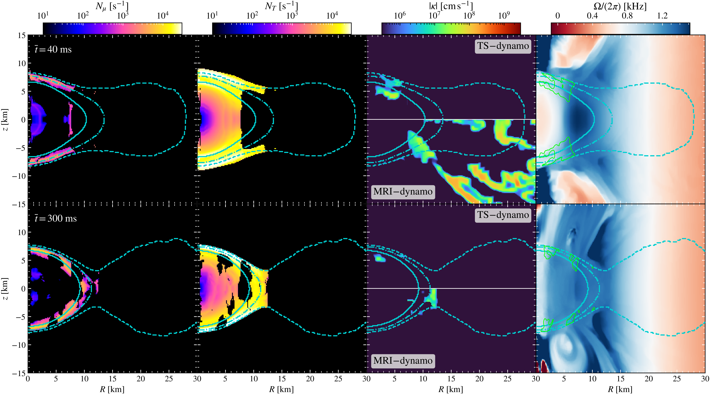<br />
图注：\(\textit{From left to right:}\) Meridional slices {of the fiducial ($\xi_{\rm TS}=1$) model} of the composition ($N_\mu$) and thermal ($N_T$) contributions to the Brunt--V\"ais\"al\"a frequency, the absolute value of the isotropic $\alpha$-effect coefficient, $|\kappa|$, and the rotational frequency, $\Omega/(2\pi)$. The snapshots are shown at $\bar t=40~{\rm ms}$ (top row) during the TS-dynamo growth stage and $\bar t=300~{\rm ms}$ (bottom row). In the $|\kappa|$ panels, the upper half-plane shows the contribution from the TS dynamo, while the lower half-plane shows that from the MRI dynamo. Cyan dashed, dash-dotted, and solid curves denote rest-mass density contours of $10^{12}$, $10^{13}$, and $10^{14}~{\rm g~cm^{-3}}$, respectively. Green contours mark regions where $|\Omega|=\Omega_{\rm TS}\equiv \sqrt{\omega_{A,\rm sat}N_{\rm BV}}$, where the saturated-state TI growth timescale equals the AM-transport timescale estimated from Eq.~(35) of \(\citet{Fuller2019}.\) {The regions enclosed by the green contours correspond to $|\Omega|<\Omega_{\rm TS}$.}<br />
对应解读：对应“建议重点查看的图表”第1项，以及“关键图表逐图导读”中关于图2的 Tayler-Spruit 有效量空间分布解读。<br />
入选理由：这张图直接给出 Brunt--Väisälä 频率组成、TS/MRI 的 |κ| 分布和旋转频率二维切片，并标出密度轮廓与 TS 触发相关区域，是验证“TS 活动主要集中在高纬度核心、并非全盘均匀发生”的核心证据。相比只给时间曲线的图，它能最清楚地支撑日报中关于触发区域、稳定分层和剪切条件的判断。<br />
来源与置信度：\(arxiv_source\)；high；\(arxiv_source\) / apssamp.tex:figure[1]</p>
<p><strong>Fig03</strong><br />
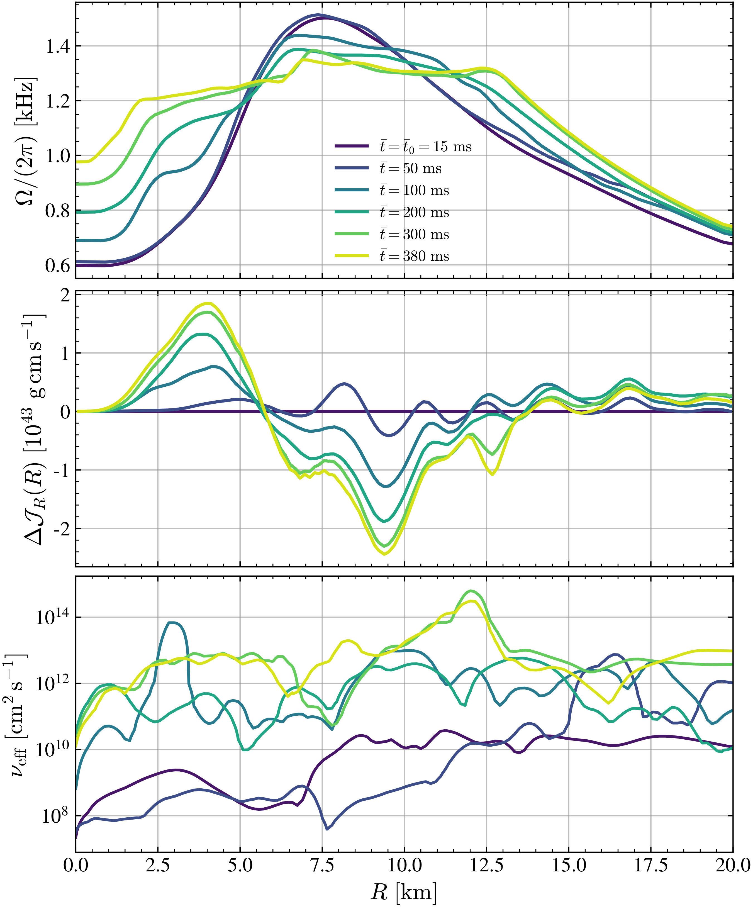<br />
图注：Radial profiles {of angular momentum (AM) transport} for the fiducial model {($\xi_{\rm TS}=1$)} at $z=0$. From top to bottom, we show the angular frequency, the local net AM change due to radial transport ($\Delta \mathcal{J}_{R}$ in Eq.~\eqref{eq:deltaJradial}), and the effective shear viscosity associated with the Maxwell stress $\nu_{\rm eff}$. Curves of different colors correspond to snapshots between $\bar t=15~{\rm ms}$ and $\bar t=380~{\rm ms}$.<br />
对应解读：对应“建议重点查看的图表”第2、3项，以及“关键图表逐图导读”中关于角速度剖面、角动量输运和有效剪切黏性的解读。<br />
入选理由：该图同时展示角频率径向剖面、径向角动量输运导致的局地角动量变化 ΔJ_R，以及由 Maxwell 应力对应的有效黏性 ν_eff，且包含多个时间快照。它最直接检验核心 Ω 梯度是否在数百毫秒内被拉平，以及角动量是否从核心向外层输运，是论文自旋降速结论的关键图。<br />
来源与置信度：\(arxiv_source\)；high；\(arxiv_source\) / apssamp.tex:figure[3]</p>
<p><strong>Fig06</strong><br />
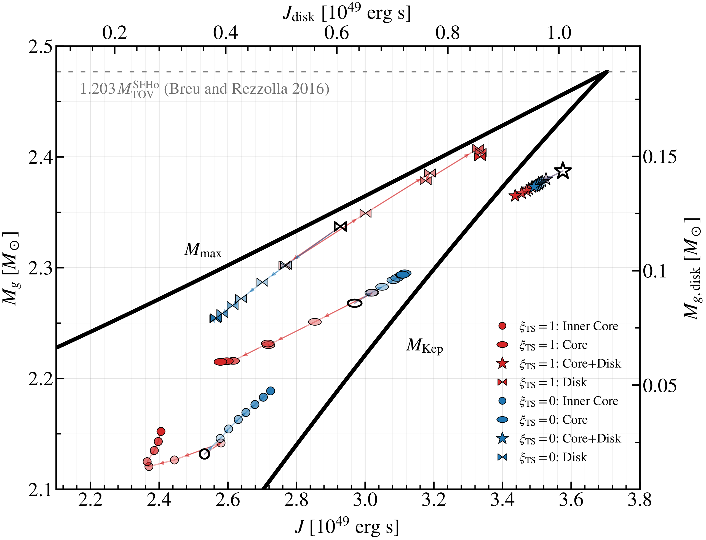<br />
图注：Evolution of gravitational mass and {angular momentum (AM)} for the remnant core, disk, and total core--disk system. The inner core, core and disk are defined by $\rho>10^{14}$, $>10^{13}$ and $<10^{13}~{\rm g\,cm^{-3}}$, respectively, and are represented by {circle,} ellipse and bow-tie markers; stars denote the total core--disk quantities. Disk quantities are shown on the upper and right axes. Hollow markers indicate the initial state at $\bar t=15~{\rm ms}$, while filled markers show subsequent snapshots separated by approximately $50~{\rm ms}$ and connected by thin lines. Darker shades correspond to later times, and colors distinguish the models. The lower and upper solid black curves denote the mass-shedding limit, $M_{\rm Kep}(J)$, and the maximum mass supported against gravitational collapse, $M_{\rm max}(J)$, respectively, estimated using \(\citet{Margalit2022},\) \(\citet{Breu2016},\) and \(\citet{Most2020c}.\) The grey dashed line marks the maximum mass supported by uniform rotation at the Keplerian limit, $M_{\rm max}(J_{\rm Kep})=1.203\,M_{\rm TOV}^{\rm SFHo}$, where $M_{\rm TOV}^{\rm SFHo}=2.06\,M_\odot$~\(\citep{Breu2016}.\) The initial gravitational masses represented by the hollow markers are $2.13$, $2.27$, $0.12$, and $2.39~M_{\odot}$ for the inner core, core, disk, and total system, respectively.<br />
对应解读：对应“建议重点查看的图表”第4项，以及“关键图表逐图导读”中关于盘质量、角动量分区和坍缩前景的模型演化段落。<br />
入选理由：这张图把内核、核心、盘和总 core--disk 系统的引力质量与角动量演化放在同一相图中，并区分不同 TS 参数模型。它不仅支持“盘质量和角动量增加”的结论，还连接到质量抛射极限、最大支撑质量和坍缩可能性，比单纯的盘质量时间曲线更能体现全局角动量再分配。<br />
来源与置信度：\(arxiv_source\)；high；\(arxiv_source\) / apssamp.tex:figure[6]</p>
<p><strong>Fig09</strong><br />
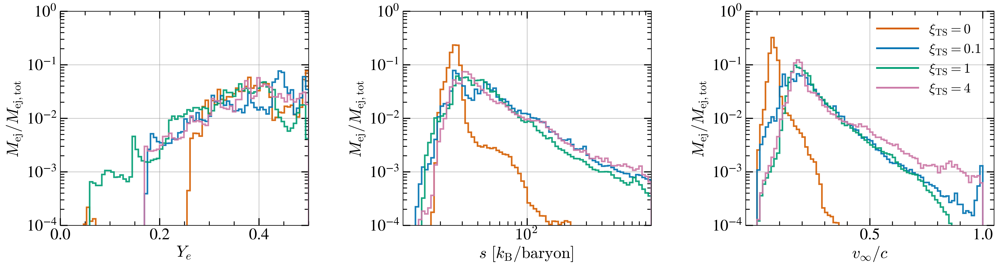<br />
图注：Normalized ejected mass distributions for all {dynamo saturation parameters}. {\(\textit{From left to right},\) the panels show the distributions of electron fraction, $Y_e$, entropy, $s$, and terminal velocity, $v_\infty/c$.}<br />
对应解读：对应“建议重点查看的图表”第6项，以及“关键图表逐图导读”中关于电子丰度和抛射物分布的解读。<br />
入选理由：该图给出不同 TS 饱和参数下抛射物的归一化质量分布，包括电子丰度 \(Y_e\)、熵和终端速度。它直接支撑日报强调的“低 \(Y_e\) 尾部是否增强、平均值是否掩盖尾部”的诊断，是连接模拟结果与 r 过程核合成、千新星颜色差异的最重要候选图。<br />
来源与置信度：\(arxiv_source\)；high；\(arxiv_source\) / apssamp.tex:figure[9]</p>
<p><strong>Fig02</strong><br />
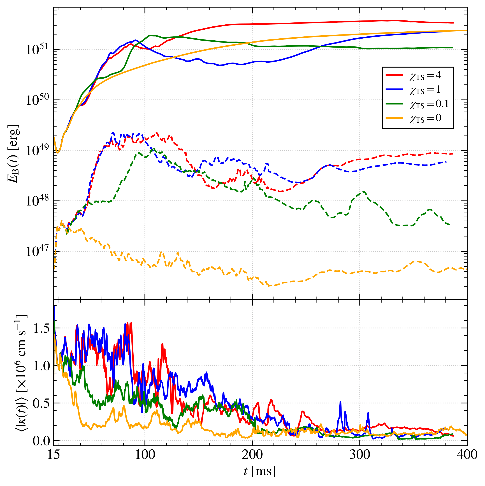<br />
图注：\(\textit{Upper:}\) Time evolution of the toroidal (solid) and poloidal (dashed) components of the magnetic energy in the merger remnant for all simulated dynamo saturation parameters, $\xi_{\rm TS}$. \(\textit{Lower:}\) Time evolution of mass-averaged $|\kappa|$, which, for $\xi_{\rm TS}>0$ models, is primarily TS-dominated. Different colors correspond to the $\xi_{\rm TS}=0$ model, without the TS dynamo, and to models with different values of the saturation parameter $\xi_{\rm TS}$.<br />
对应解读：对应“建议重点查看的图表”第5项，以及模型拟合段落中关于 TS 饱和参数、磁能增长和有效源项强度的讨论。<br />
入选理由：这张图展示所有 ξ_TS 模型中环向与极向磁能的时间演化，以及质量平均 |κ| 的演化，可用于判断 TS 亚格点机制是否显著增强磁场并随参数变化而改变。它为日报中关于磁化增强、参数依赖和理论先验的讨论提供直接依据。<br />
来源与置信度：\(arxiv_source\)；high；\(arxiv_source\) / apssamp.tex:figure[2]</p>
<p><strong>Fig05</strong><br />
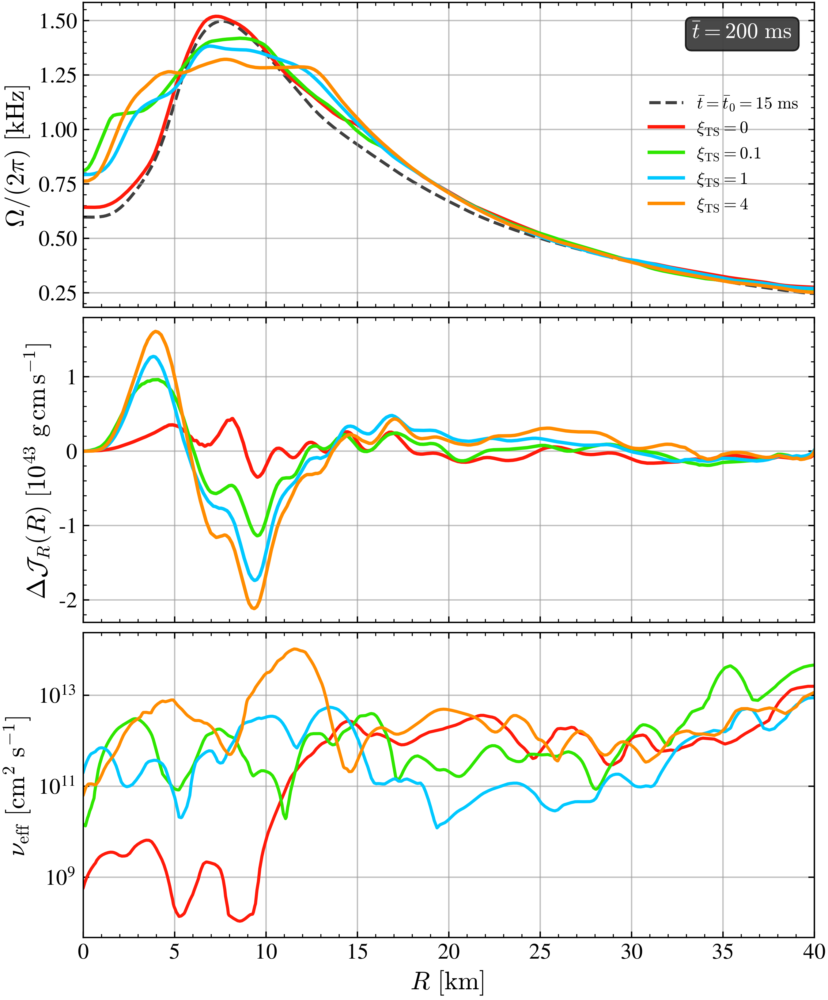<br />
图注：Same as Fig.~\(\ref{fig:fig3},\) but showing {all cases with different dynamo saturation parameters} for an intermediate time $\bar t = 200~\rm{ms}$. Black dashed line corresponds to the initial angular velocity.<br />
对应解读：对应“建议重点查看的图表”第2、8项，以及模型拟合段落中关于不同 Tayler-Spruit 效率参数对角动量输运影响的讨论。<br />
入选理由：该图在同一时刻比较不同 dynamo saturation 参数下的角速度、角动量输运和有效黏性剖面，并包含初始角速度参考线。它比单一 fiducial 模型更适合判断主要趋势是否随 TS 强度保持、开启和关闭 TS 的曲线是否明显分离，因此对稳健性和参数敏感性解读很有价值。<br />
来源与置信度：\(arxiv_source\)；high；\(arxiv_source\) / apssamp.tex:figure[5]</p>
<h4 id="_67">强相关工作</h4>
<p>这篇工作与双中子星并合后长寿命遗迹模拟直接相关，尤其是研究磁转动不稳定性、磁驱动风、中微子照射盘风和千新星核合成的文献。建议检索关键词包括 “binary neutron star merger remnant magnetic angular momentum transport”, “post-merger massive neutron star disk wind”, “GRMHD neutrino radiation merger remnant”, “MRI neutron star merger remnant”。同类工作通常会比较不同磁场初值、状态方程和中微子处理对盘风 \(Y_e\) 的影响。</p>
<p>基础理论上，它连接到 Tayler 不稳定性、Spruit 发电机和恒星内部角动量输运争论。建议检索 “Tayler instability stellar interiors”, “Spruit dynamo angular momentum transport”, “Tayler-Spruit dynamo controversy”, “magnetic angular momentum transport stably stratified fluid”。需要注意的是，恒星内部的 Tayler-Spruit 处方能否直接用于并合遗迹并非显然成立，因为并合遗迹具有强广义相对论、强中微子冷却、强差分自转和动态非平衡背景。</p>
<p>可能存在张力的方向包括三维局部或全局模拟对 Tayler-Spruit 饱和效率的不同估计，以及认为磁转动不稳定性或大尺度磁绕组已经足以解释角动量输运的模型。读者应把本文与三维非轴对称模拟比较，而不是只与一维恒星演化处方比较。检索关键词可用 “3D Tayler instability simulations Spruit dynamo”, “MRI versus Tayler-Spruit neutron star merger”, “subgrid magnetic turbulence merger simulations”。</p>
<p><strong>同一事件 / 同类源线索</strong>：</p>
<ul>
<li><a href="https://arxiv.org/abs/2607.28556">https://arxiv.org/abs/2607.28556</a></li>
<li><a href="https://arxiv.org/pdf/2607.28556">https://arxiv.org/pdf/2607.28556</a></li>
<li><a href="https://arxiv.org/abs/1710.05832">https://arxiv.org/abs/1710.05832</a></li>
<li><a href="https://arxiv.org/abs/1710.05833">https://arxiv.org/abs/1710.05833</a></li>
</ul>
<p><strong>相似工作</strong>：</p>
<ul>
<li><a href="https://arxiv.org/abs/1710.05433">https://arxiv.org/abs/1710.05433</a></li>
<li><a href="https://arxiv.org/abs/2103.09811">https://arxiv.org/abs/2103.09811</a></li>
</ul>
<p><strong>基础理论 / 方法工作</strong>：</p>
<ul>
<li><a href="https://arxiv.org/abs/astro-ph/0108207">https://arxiv.org/abs/astro-ph/0108207</a></li>
<li><a href="https://arxiv.org/abs/astro-ph/9705242">https://arxiv.org/abs/astro-ph/9705242</a></li>
</ul>
<p><strong>相反观点 / 张力线索</strong>：</p>
<p>（未提供）</p>
</details>
<h3 id="7-the-first-measurement-of-jet-collimation-profiles-in-an-x-ray-binary-the-case-of-ss-433">7. The First Measurement of Jet Collimation Profiles in an X-ray Binary: the Case of SS 433</h3>
<ul>
<li>来源：arXiv / astro-ph.HE</li>
<li>链接：https://arxiv.org/abs/2607.28122v1</li>
<li>作者：Xi Yan, Lang Cui, Zsolt Paragi, Sándor Frey</li>
<li>评分：novelty 8/10，importance 8/10，relevance 8/10，final 9.00/10</li>
<li>推荐理由：首次直接测量X射线双星SS 433喷流准直剖面，并给出开角演化和core-shift关系；对微类星体喷流物理、粒子加速环境和高能源模型有明显价值。</li>
</ul>
<p><strong>中文题目</strong>：首次直接测量 X 射线双星喷流准直轮廓：SS 433 的 VLBI 结果</p>
<p><strong>做了什么</strong>：这篇文章用多历元、多个频段的甚长基线干涉测量数据，直接测量了微类星体 SS 433 的喷流横向宽度随距离的变化，给出了 X 射线双星中首个喷流准直轮廓约束。作者发现，接近我们的喷流在 1995 年和 1998 年数据中呈现较稳定的准抛物线型准直；2000 年数据受局部宽度振荡影响，不能稳健拟合单一准直律，但仍显示本征张角从约 \(20^\circ\) 逐步降到约 \(3^\circ\)。他们还测量了退行喷流宽度、张角以及四个频段的核心位置偏移关系。</p>
<p><strong>为什么重要</strong>：AGN 喷流中，准抛物线到锥形的准直轮廓常被用来检验磁流体动力学喷流加速、外部压力束缚和黑洞吸积环境的耦合。但在恒星级黑洞或致密星 X 射线双星中，过去主要只能看到喷流轨迹、速度和亮结，缺少横向准直轮廓的直接测量。SS 433 距离近、喷流明亮且几何结构特殊，使它成为把 AGN 喷流物理缩放到恒星质量系统的关键测试场。</p>
<p><strong>理论 / 观测 / 仪器方法价值</strong>：本文的价值不只是“看见喷流变窄”，而是把喷流宽度 \(w\)、去投影距离 \(z\)、本征张角 \(\phi\) 和频率相关核心位置 \(r_{\rm core}(\nu)\) 放进同一套 VLBI 几何测量框架中。它为 XRB 喷流建立了可与 AGN 的 \(w\propto z^k\) 准直律、核心偏移和外部压力梯度比较的观测量，也提示免费-自由吸收和喷流进动会显著影响退行喷流的解释。</p>
<p><strong>为什么应该关注</strong>：如果你关心喷流是否具有跨质量尺度的统一物理，这篇值得看：它把通常在 M87、3C 84 等 AGN 中讨论的准直轮廓问题推进到 X 射线双星。若结果经更多高动态范围 VLBI 观测确认，SS 433 将成为检验磁化喷流、盘风束缚、进动喷流投影效应和核心偏移标定的近邻实验室。</p>
<details class="paper-detail">
<summary>展开详细解读：文章讲解、背景、理论、重点章节、图表与相关工作</summary>
<h4 id="_68">文章详细讲解</h4>
<p>科学问题：喷流如何从致密天体附近被加速并准直到小张角，是黑洞吸积物理中的核心问题之一。AGN 中已有许多 VLBI 工作测量了喷流宽度 \(w\) 与距离 \(z\) 的幂律关系，常用 \(w\propto z^k\) 区分准抛物线型 \(k<1\) 和锥形 \(k\simeq 1\) 结构。但在 X 射线双星中，喷流角尺度小、演化快、受轨道和进动几何影响强，过去很难直接测量横向宽度随距离的变化。本文要回答的是：SS 433 的射电喷流是否真的在可分辨尺度上逐渐准直？这种准直是否能用类似 AGN 的轮廓参数描述？</p>
<p>作者怎么做：作者重新分析或汇总了 SS 433 在 1995、1998 和 2000 年的 VLBI 图像数据，沿接近喷流和退行喷流脊线在不同距离处测量横向宽度，并将角尺度转换成去投影物理尺度。SS 433 的喷流有著名的进动几何，因此不能简单把图像平面距离当作真实距离；必须考虑喷流倾角、进动相位和接近/退行两侧的投影差异。作者分别给出接近喷流和退行喷流的宽度、张角，并用幂律型准直轮廓拟合接近喷流中较可靠的数据。</p>
<p>关键结果：1995 和 1998 年接近喷流宽度数据支持一个准抛物线轮廓，即 \(w\) 随 \(z\) 增长但增长指数小于锥形喷流。2000 年数据中出现显著局部振荡，说明单一平滑幂律不再能稳健代表横向结构；不过其本征张角仍显示从内侧约 \(20^\circ\) 到外侧约 \(3^\circ\) 的渐进减小，指向实际准直过程。退行喷流也被测量，但因系统内物质导致的免费-自由吸收更强，宽度和亮度分布不一定等价于真实喷流边界。</p>
<p>局限和下一步：本文最大局限来自历史 VLBI 数据的动态范围、频率覆盖、束斑卷积、喷流进动带来的三维几何复杂性，以及局部亮结是否能代表喷流真实边界这一问题。2000 年数据中的宽度振荡尤其提醒读者，喷流横截面并非一定平滑自相似，可能含有冲击、螺旋结构、流体不稳定性或投影混合。下一步需要更密集的多频 VLBI 监测，把核心偏移、吸收、进动相位和横向宽度同时拟合，最好结合辐射转移和 MHD 模拟来判断准抛物线轮廓背后的压力束缚或磁准直机制。</p>
<h4 id="_69">关键结果是怎么做出来的</h4>
<p>数据和样本选择方面，本文聚焦 SS 433 的历史 VLBI 数据，核心是 1995、1998 和 2000 三个历元的喷流图像，并在四个射电频段上测量核心位置。样本不是大量源的统计样本，而是对单一近邻 XRB 的空间分辨结构做几何剖面分析。因此证据链的强弱主要取决于每个历元喷流横截面是否被充分分辨、喷流脊线是否可追踪、束斑去卷积是否可靠，以及不同频段或不同历元是否给出一致趋势。</p>
<p>关键测量量是沿喷流方向的距离和横向宽度。作者应当是在图像中沿局部喷流轴取横切片，用高斯或等效宽度方法估计观测宽度，再扣除合成束贡献，得到喷流本征宽度。随后结合 SS 433 的几何模型，把投影距离换算为去投影距离。1995 和 1998 年接近喷流宽度点能用 \(w=A z^k\) 类型幂律较好描述，且 \(k<1\)，所以称为准抛物线型轮廓；这不是单个亮结的判断，而是多个距离点共同给出的径向趋势。</p>
<p>显著性或置信度的核心并不在于发现某个瞬变事件，而在于模型比较和参数约束：准抛物线模型是否优于简单锥形或常张角模型，拟合残差是否随机，\(k\) 的不确定度是否排除 \(k\simeq 1\)。摘要表明 1995 和 1998 年结果“well-constrained”，而 2000 年因局部振荡不能稳健刻画整体准直律，这意味着作者没有把所有数据强行归入同一平滑模型，而是将异常结构作为限制条件处理。读者应重点看拟合表中 \(k\)、归一化 \(A\)、误差条和 \(\chi^2\) 或等价残差诊断。</p>
<p>支撑结论的图表应包括喷流图像、宽度-距离图、本征张角-距离图和核心偏移-频率图。宽度-距离图最关键：若接近喷流在双对数坐标中呈斜率小于 \(1\) 的近直线，并且 1995、1998 两个历元一致，就支持准抛物线准直。张角图则把同一结论翻译成更直观的喷流开口随距离收窄。核心偏移图的作用是补充说明射电“核心”并非固定物理点，而是随频率移动的光深 \(\tau_\nu\simeq 1\) 表面，这会影响内侧距离标定。</p>
<p>主要系统误差包括 VLBI 合成束导致的横向宽度偏大、低信噪比边界导致的宽度截断、进动喷流的三维投影误差、核心位置定义的不确定性，以及退行喷流侧的免费-自由吸收。稳健性检验应关注不同历元是否给出相近准直指数、用不同横切片或去卷积方法是否改变结论、排除异常振荡点后拟合是否稳定，以及不同频段核心位置是否满足单调幂律。本文最谨慎也最重要的一点是：它把 2000 年局部振荡视为真实复杂性或测量限制，而不是把它过度解释成一个精确准直律。</p>
<details class="paper-subdetail">
<summary>展开背景、理论、公式、模型、章节和图表导读</summary>
<h4 id="_70">背景知识</h4>
<p>SS 433 是银河系中最著名的微类星体之一，拥有接近 \(0.26c\) 的双极喷流、约 \(162\) 天的喷流进动周期，以及强烈的光学和射电发射。它通常被视为超临界吸积和持续喷流的近邻实验室，与普通低质量 X 射线双星中的短暂离散抛射不同，SS 433 的喷流长期存在、几何可预测，因而特别适合做空间结构测量。</p>
<p>历史上，SS 433 的重要性首先来自移动光学谱线和射电喷流运动学：谱线红蓝移随进动相位周期变化，给出了喷流速度和几何模型。后来的 VLBI 观测显示其喷流呈螺旋状或投影摆动结构，这与进动喷流模型相符。但这些研究多数关注喷流轨迹、速度、亮结位置和进动参数，而非横向宽度随距离的准直轮廓。</p>
<p>在 AGN 领域，喷流准直轮廓已成为判断喷流动力学状态的重要观测量。例如 M87 的喷流在近黑洞到 Bondi 半径附近呈准抛物线，然后在更大尺度转为近锥形，这被广泛用于讨论外部介质压力梯度、磁通量和喷流加速。问题是，恒星质量系统的尺度小得多、时间尺度短得多，且周围环境由伴星风、吸积盘风和可能的包层共同决定，是否会呈现类似的准抛物线准直并不显然。</p>
<p>现在值得重新看这个问题，是因为 VLBI 数据处理、成像动态范围、多频核心位置测量和跨尺度喷流理论都比过去成熟。即使使用历史数据，只要重新以“横向轮廓”而不是“亮结运动”为目标分析，也可能提取出过去未被系统利用的信息。SS 433 又是少数角尺度足够大、射电喷流足够亮的 XRB，因此它天然是首个尝试对象。</p>
<p>一个常见误区是把图像中亮的射电边界直接等同于流体边界。实际观测到的是同步辐射表面亮度，经合成束卷积、吸收、冷却、局部冲击和多普勒增强共同调制。另一个误区是把接近喷流和退行喷流的不对称完全归因于相对论多普勒效应；在 SS 433 中，免费-自由吸收、盘风和轨道环境同样重要，尤其会改变退行喷流侧的可见宽度。</p>
<h4 id="_71">基础理论 / 方法脉络</h4>
<p>从物理图像看，喷流准直就是横向动量或压力被外界束缚、磁场张力重新分配或流体内部加速导致的几何收缩过程。若喷流自由膨胀且横向速度与轴向速度比值近似恒定，喷流宽度 \(w\) 会近似与距离 \(z\) 成正比，即锥形结构。若外部压力或磁应力持续约束横向膨胀，则 \(w\) 增长慢于 \(z\)，表现为准抛物线轮廓。</p>
<p>本文使用的核心经验模型可理解为 \(w=A z^k\)。其中 \(k\simeq 1\) 对应常开角锥形喷流，\(k<1\) 对应开角随距离下降的准直喷流。这个模型本身不是完整 MHD 解，但它是 AGN 和 XRB 喷流之间最直接可比较的形态学量。对 SS 433 来说，还必须把图像平面距离转成去投影距离，因为喷流轴随时间进动，且接近喷流与视线夹角会随相位变化。</p>
<p>观测方法上，VLBI 给出的是天空平面亮度分布 \(I_\nu(x,y)\)，横向宽度通常来自沿喷流脊线垂直方向的亮度剖面。若剖面近似高斯，观测到的半高全宽需要扣除合成束在该方向上的投影宽度，得到去卷积后的本征宽度。这个步骤对内侧窄喷流尤其关键，因为当喷流真实宽度接近束斑大小时，宽度误差会迅速增大。</p>
<p>核心偏移来自另一个基本事实：射电 VLBI 中的“核心”通常不是黑洞或紧致天体本身，而是沿喷流方向同步自吸收或外部吸收光深约为 \(1\) 的位置。频率越高，通常能看到越靠近喷流基部的位置；频率越低，核心位置向外移动。本文测量四个频段的核心位置并拟合核心偏移关系，为内侧几何标定和吸收诊断提供补充。</p>
<p>主要退化关系包括：喷流宽度与合成束去卷积的退化、真实准直与投影几何的退化、边界亮度阈值与物理边界的退化、以及吸收导致的亮度缺失与真实喷流变窄之间的退化。特别是退行喷流，因为其光路更可能穿过致密盘风或包层，免费-自由吸收可选择性压低内侧或边缘发射，使其宽度测量不如接近喷流直接。</p>
<h4 id="_72">公式与推导</h4>
<p>第一步，从几何定义出发。设喷流轴向去投影距离为 \(z\)，横向半径为 \(R\)，全宽为 \(w=2R\)。若天空平面测得沿喷流方向的角距离为 \(\theta_{\rm sky}\)，源距离为 \(D\)，喷流与视线夹角为 \(i\)，则近似有</p>
<div class="math-display">\[z \simeq \frac{D\,\theta_{\rm sky}}{\sin i} .\]</div>
<p>这里 \(D\) 是 SS 433 的距离，\(i\) 由进动几何决定；该式说明投影校正直接影响横轴尺度。</p>
<p>第二步，用经验准直律描述喷流形状：</p>
<div class="math-display">\[w(z)=A\left(\frac{z}{z_0}\right)^k .\]</div>
<p>其中 \(A\) 是在参考距离 \(z_0\) 处的宽度，\(k\) 是准直指数。\(k=1\) 表示锥形，\(0<k<1\) 表示准抛物线或逐渐准直，\(k\) 越小，开角下降越快。</p>
<p>第三步，本征开角可由局部斜率给出。若采用小角近似，半开角满足</p>
<div class="math-display">\[\tan \phi(z) \simeq \frac{1}{2}\frac{d w}{d z} = \frac{kA}{2z_0}\left(\frac{z}{z_0}\right)^{k-1} .\]</div>
<p>因此当 \(k<1\) 时，\(\phi(z)\) 随 \(z\) 增大而下降，这正是本文从约 \(20^\circ\) 到约 \(3^\circ\) 的物理含义。</p>
<p>第四步，VLBI 图像中的观测宽度需要去卷积。若横向剖面和束斑都近似高斯，观测半高全宽 \(W_{\rm obs}\)、本征半高全宽 \(W_{\rm int}\) 与该方向束宽 \(B_\perp\) 近似满足</p>
<div class="math-display">\[W_{\rm int}=\left(W_{\rm obs}^2-B_\perp^2\right)^{1/2} .\]</div>
<p>当 \(W_{\rm obs}\) 只略大于 \(B_\perp\) 时，\(W_{\rm int}\) 对误差极敏感，这是内侧喷流宽度的主要系统误差之一。</p>
<p>第五步，拟合准直律通常在对数空间线性化：</p>
<div class="math-display">\[\ln w_i = \ln A + k\ln\left(\frac{z_i}{z_0}\right)+\epsilon_i .\]</div>
<p>这里 \(i\) 标记不同横切片，\(\epsilon_i\) 包含测量噪声、局部结构和系统误差。若 \(\epsilon_i\) 近似高斯，就可用加权最小二乘或高斯似然估计 \(A\) 与 \(k\)。</p>
<p>第六步，对应的高斯似然可写为</p>
<div class="math-display">\[-2\ln \mathcal{L}=\sum_i \frac{\left[\ln w_i-\ln w_{\rm model}(z_i)\right]^2}{\sigma_{\ln w,i}^2}+\sum_i \ln\left(2\pi\sigma_{\ln w,i}^2\right) .\]</div>
<p>其中 \(\sigma_{\ln w,i}\) 是宽度对数误差。比较 \(k<1\) 模型与固定 \(k=1\) 模型时，可查看似然差、信息准则或参数置信区间是否排除锥形。</p>
<p>第七步，核心偏移可用幂律表示：</p>
<div class="math-display">\[r_{\rm core}(\nu)=\Omega\,\nu^{-1/k_r}+r_\infty .\]</div>
<p>这里 \(r_{\rm core}\) 是频率 \(\nu\) 下的核心位置，\(\Omega\) 是核心偏移幅度，\(k_r\) 与磁场、粒子密度和吸收分布有关，\(r_\infty\) 可理解为高频极限参考位置。</p>
<p>第八步，免费-自由吸收的影响可由光深写成</p>
<div class="math-display">\[I_\nu^{\rm obs}=I_\nu^{\rm int}\exp\left[-\tau_{\rm ff}(\nu)\right],\qquad \tau_{\rm ff}\propto \nu^{-2.1}\int n_e^2 T_e^{-3/2}\,dl .\]</div>
<p>其中 \(n_e\) 是电子密度，\(T_e\) 是电子温度，\(dl\) 是视线路径元。该式说明低频和退行喷流更容易被吸收，从而使观测宽度和亮度分布偏离真实流体结构。</p>
<p>第九步，若考虑相对论喷流的亮度不对称，接近与退行喷流的多普勒因子为</p>
<div class="math-display">\[\delta_{\pm}=\frac{1}{\Gamma\left(1\mp \beta\cos i\right)} .\]</div>
<p>其中 \(\beta=v/c\)，\(\Gamma=(1-\beta^2)^{-1/2}\)，正负号分别对应接近和退行侧。SS 433 的 \(\beta\simeq 0.26\) 不算极端，但多普勒效应仍需与吸收和投影效应一起考虑。</p>
<h4 id="_73">模型拟合 / 应用方法</h4>
<p>本文或同类工作的拟合对象首先是喷流宽度-距离关系。实际操作中，研究者会在 CLEAN 图像或模型拟合图像上定义喷流脊线，在多个轴向位置取横向亮度剖面，得到观测宽度及误差，再用束斑去卷积得到本征宽度。随后在去投影距离上拟合 \(w=A(z/z_0)^k\)，重点参数是准直指数 \(k\) 和归一化 \(A\)。</p>
<p>似然选择通常取决于误差是否近似高斯。如果宽度误差主导且各切片近似独立，可用对数空间的高斯似然；若图像噪声、束斑相关性和系统误差显著，则应加入额外散布项 \(s\)，使总方差变为 \(\sigma_i^2+s^2\)。对于 2000 年这类存在局部振荡的数据，单一幂律的残差会呈系统结构，此时给出形式上很小的统计误差反而会误导，应该报告模型失配或采用分段/局部模型。</p>
<p>参数退化主要有三类。第一，\(A\) 与 \(k\) 在有限距离范围内相关：若内侧宽度略有系统偏差，斜率会随之改变。第二，距离去投影依赖进动几何和倾角，\(i\) 的误差会改变横轴尺度，尤其影响接近和退行喷流的对称性判断。第三，核心位置不是固定原点，频率相关核心偏移若未校正，会把内侧 \(z\) 系统性平移，从而影响开角估计。</p>
<p>残差诊断比最佳拟合曲线本身更重要。一个可信的准抛物线结论应表现为：双对数图上残差无明显随距离单调漂移；不同历元给出相容的 \(k\)；改变横切片间距、亮度阈值或去卷积方式后结论不翻转；剔除局部异常亮结后仍保持 \(k<1\)。若残差呈周期性或局部振荡，则可能反映进动螺旋、冲击压缩、Kelvin-Helmholtz 不稳定性或图像重建伪影。</p>
<p>核心偏移拟合则以不同频率下的核心位置为数据点，拟合 \(r_{\rm core}(\nu)=\Omega\nu^{-1/k_r}+r_\infty\)。这里的系统误差包括频段间相位参考误差、自校准导致的绝对位置丢失、不同频率分辨率不同造成的结构混合，以及低频免费-自由吸收改变表观核心位置。实际应用中，核心偏移可用于修正喷流基部位置，也可作为约束吸收和磁场分布的辅助诊断。</p>
<p>模型可能失败的场景包括：喷流不是轴对称连续流，而是由离散弹丸或冲击结组成；横向亮度边界不是物质边界，而是辐射效率边界；进动导致不同发射年龄的流元投影重叠；退行侧被吸收到只剩部分横截面可见。本文对 2000 年数据的谨慎处理正体现了这一点：当数据告诉我们喷流宽度存在局部振荡时，不应强行用单一准直指数概括全部物理。</p>
<h4 id="_74">重点章节 / 结果段落怎么读</h4>
<p>数据/样本部分应首先看作者使用了哪些 VLBI 历元和频段、角分辨率与灵敏度分别是多少、接近喷流和退行喷流在图像中可追踪到多远。对这篇文章而言，1995、1998 和 2000 年三组数据承担不同角色：前两者给出较平滑的准直轮廓，后者揭示局部振荡和模型限制。</p>
<p>几何与宽度测量方法部分是全文技术核心。读者应检查作者如何定义喷流轴、如何取横切片、如何从剖面中提取宽度、如何扣除合成束，以及如何把角距离转换成去投影物理距离。SS 433 的进动几何会把一个二维图像问题变成三维几何重建问题，这一段决定结果是否可信。</p>
<p>准直轮廓结果部分应重点读接近喷流的 \(w-z\) 拟合。看作者是否分别展示各历元结果，是否报告 \(k\) 的置信区间，是否比较准抛物线与锥形解释。这里是“XRB 首次直接测量准直轮廓”这一主张的主要支撑。</p>
<p>退行喷流和吸收讨论部分需要带着警惕读。退行喷流的宽度和张角当然有价值，但由于免费-自由吸收和几何遮挡更强，它们不能简单拿来与接近喷流做镜像对称比较。读者应看作者如何区分真实结构差异、吸收造成的亮度缺失和投影效应。</p>
<p>核心偏移部分连接喷流几何和射电辐射转移。四频段核心位置关系可以告诉我们不同频率看到的喷流基部是否系统外移，也能提示吸收或自吸收的重要性。若论文有附录或稳健性检验，应重点查看宽度测量误差、束斑影响、异常点剔除和不同拟合区间选择。</p>
<h4 id="_75">建议重点查看的图表</h4>
<ol>
<li>VLBI 总强度图：检查接近喷流和退行喷流的形态、合成束大小、等高线动态范围，以及喷流是否在横向上真正被分辨。</li>
<li>喷流脊线和横切片示意图：看作者如何定义轴向距离和横向宽度，切片是否避开明显亮结或弯曲处。</li>
<li>宽度 \(w\) 对去投影距离 \(z\) 的双对数图：这是准抛物线结论的核心，应看斜率、误差条、不同历元的一致性和是否排除 \(k=1\)。</li>
<li>本征张角 \(\phi(z)\) 对距离图：检查张角是否单调下降，尤其是 2000 年数据中从约 \(20^\circ\) 到约 \(3^\circ\) 的趋势是否由多个点支撑。</li>
<li>退行喷流宽度和张角图：重点看低频或内侧是否有异常压低，判断免费-自由吸收是否可能主导表观宽度。</li>
<li>核心位置随频率变化图：看 \(r_{\rm core}\) 是否随 \(\nu\) 呈单调幂律，四个频段是否足以约束斜率，以及低频点是否偏离。</li>
<li>拟合残差或参数置信区间表：检查 \(k\)、\(A\)、核心偏移指数和系统误差预算，尤其看 2000 年振荡数据如何影响拟合。</li>
</ol>
<h4 id="_76">关键图表逐图导读</h4>
<p>图 1：应是或应包括 SS 433 在不同历元的 VLBI 图像。横纵轴通常为相对赤经和赤纬角偏移，等高线表示射电表面亮度，椭圆表示合成束。读图时要看喷流横向宽度是否明显大于束斑，不能只因等高线看起来“宽”就认定喷流被分辨；低信噪比外缘和 CLEAN 伪影都可能扩大表观边界。</p>
<p>图 2：若展示喷流脊线、横切片或宽度测量位置，重点看切片是否垂直于局部喷流方向，而不是固定天空方向。SS 433 喷流受进动影响，局部轴向会弯曲；如果切片方向处理不当，会把弯曲投影误认为横向宽度。图上不同颜色或符号若代表不同历元，应检查测量区域是否覆盖相似的去投影距离。</p>
<p>图 3：宽度 \(w\) 与去投影距离 \(z\) 的双对数图应是最关键图。横轴为 \(z\)，纵轴为去卷积后的喷流宽度 \(w\)，模型线为 \(w=A(z/z_0)^k\)。若准抛物线成立，数据点在双对数空间应沿斜率小于 \(1\) 的线分布；读图陷阱是忽视横轴去投影误差和内侧束斑去卷积误差。</p>
<p>图 4：本征开角 \(\phi\) 随 \(z\) 的变化图把准直结果可视化。纵轴可能以度为单位，横轴为去投影距离。接近喷流若从内侧大开角逐渐降到小开角，说明不是简单自由锥形膨胀。读者要看趋势是否被连续点支撑，还是由少数内侧大误差点驱动。</p>
<p>图 5：2000 年宽度局部振荡或残差图尤其值得检查。若数据围绕单一幂律呈有规律起伏，说明喷流可能存在冲击、螺旋结构或投影重叠；这类图的结论不是“拟合失败所以无信息”，而是“平滑准直律不足以描述该历元”。读图时不要把振荡点简单平均掉。</p>
<p>图 6：核心偏移图通常横轴为频率 \(\nu\) 或 \(\nu^{-1}\)，纵轴为相对核心位置 \(r_{\rm core}\)。模型线若呈幂律，说明不同频段射电核心对应不同光深表面。读图陷阱是四个频段点数有限，任何单个低频点的系统偏差都会显著影响核心偏移指数。</p>
</details>
<h4 id="_77">论文原图 / 可嵌入图片</h4>
<p><strong>Fig02</strong><br />
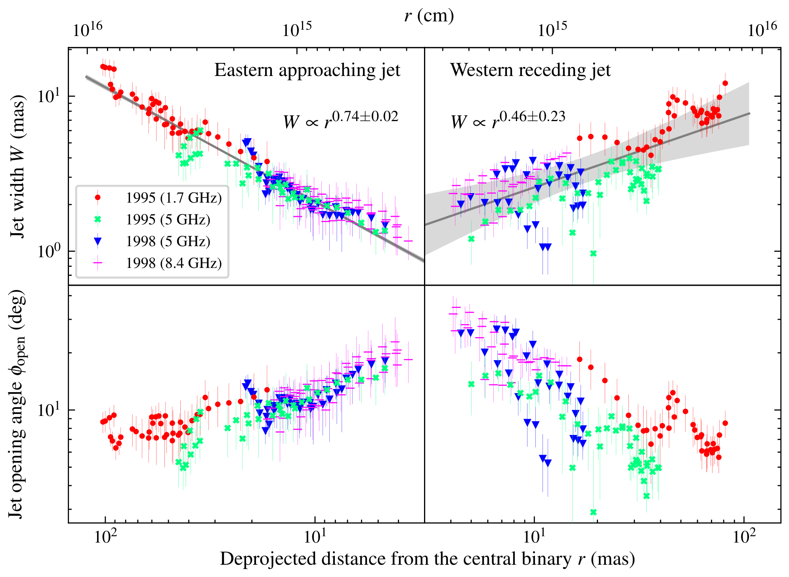<br />
图注：Deconvolved jet width (upper panel) and intrinsic jet opening angle (lower panel) as a function of deprojected distance from the central binary on the approaching and receding sides of SS\,433, derived from 1995 and 1998 datasets. The lower horizontal axis shows the deprojected distance in mas, while the upper horizontal axis shows the corresponding distance in cm, adopting a source distance of 5.5\,kpc \(\citep{Blundell_2004ApJ...616L.159B}.\) The jet viewing angle in both epochs is derived to be $\sim 57^\circ$ (see Section~\ref{Results:jet_VA}). The gray solid line shows the best power-law fit, with the shaded region indicating the $1\sigma$ confidence interval.<br />
对应解读：对应“建议重点查看的图表”第3、4、5项，以及“关键图表逐图导读”中图3/图4关于宽度-距离双对数关系、本征张角和准抛物线拟合的核心解读。<br />
入选理由：这是1995和1998年接近/退行喷流的去卷积宽度与本征张角随去投影距离变化图，并直接给出幂律最佳拟合线和1σ置信区间。论文最关键结论——接近喷流在可靠历元中呈准抛物线准直——主要依赖这张图；它同时能检查斜率是否小于锥形喷流、误差范围、接近与退行两侧差异以及张角是否随距离下降。<br />
来源与置信度：\(arxiv_source\)；high；\(arxiv_source\) / SS433.tex:figure[2]</p>
<p><strong>Fig03</strong><br />
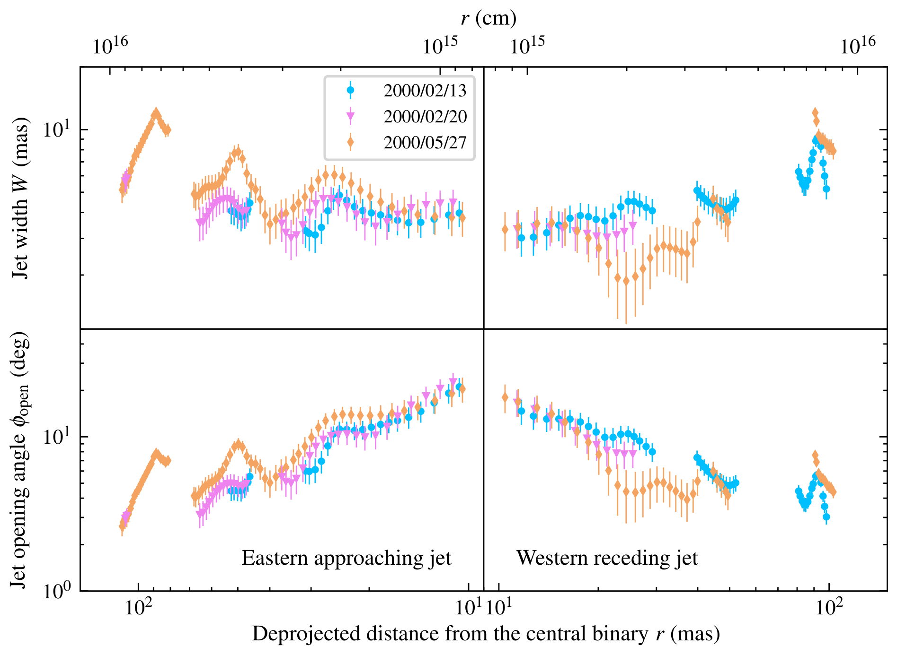<br />
图注：Deconvolved jet width (upper panel) and intrinsic jet opening angle (lower panel) as a function of deprojected distance from the central binary on the approaching and receding sides of SS\,433, derived from the three epochs in 2000. The jet viewing angle at each epoch is listed in \(\autoref{table:SS433_observation_summary}.\)<br />
对应解读：对应“建议重点查看的图表”第4、5、7项，以及“关键图表逐图导读”中关于2000年宽度局部振荡、张角从约20°降至约3°和模型失配的讨论。<br />
入选理由：这张图展示2000年三个历元的去卷积宽度和本征开角随去投影距离变化，是理解作者为何不对2000年数据给出稳健单一准直指数的关键证据。它能直接检验局部振荡是否真实存在，以及开角递减趋势是否由多个测量点支撑，而不是由少数异常点驱动。<br />
来源与置信度：\(arxiv_source\)；high；\(arxiv_source\) / SS433.tex:figure[3]</p>
<p><strong>Fig04</strong><br />
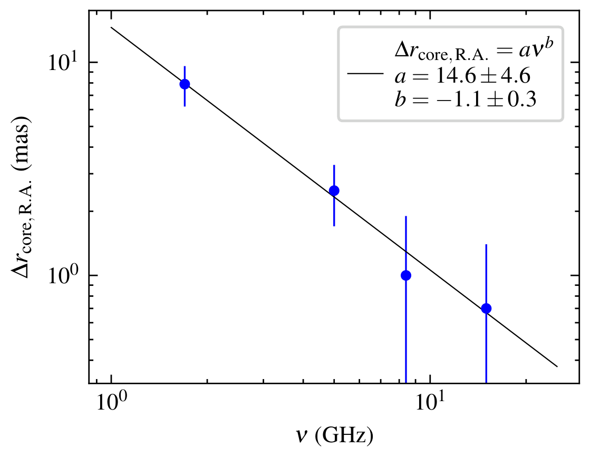<br />
图注：Approaching jet core position relative to the central binary in R.A. as a function of frequency. The black solid line shows the best-fit power law.<br />
对应解读：对应“建议重点查看的图表”第6项，以及“关键图表逐图导读”中图6关于核心位置随频率变化和核心偏移幂律拟合的解读。<br />
入选理由：该图给出接近喷流核心位置相对中心双星的赤经偏移随频率变化，并叠加最佳幂律模型，是论文核心偏移关系的直接图示。它对于判断四个频段是否形成单调频率依赖、低频点是否可能影响斜率、以及核心偏移如何影响喷流基部距离标定都很重要。<br />
来源与置信度：\(arxiv_source\)；high；\(arxiv_source\) / SS433.tex:figure[4]</p>
<p><strong>Fig01</strong><br />
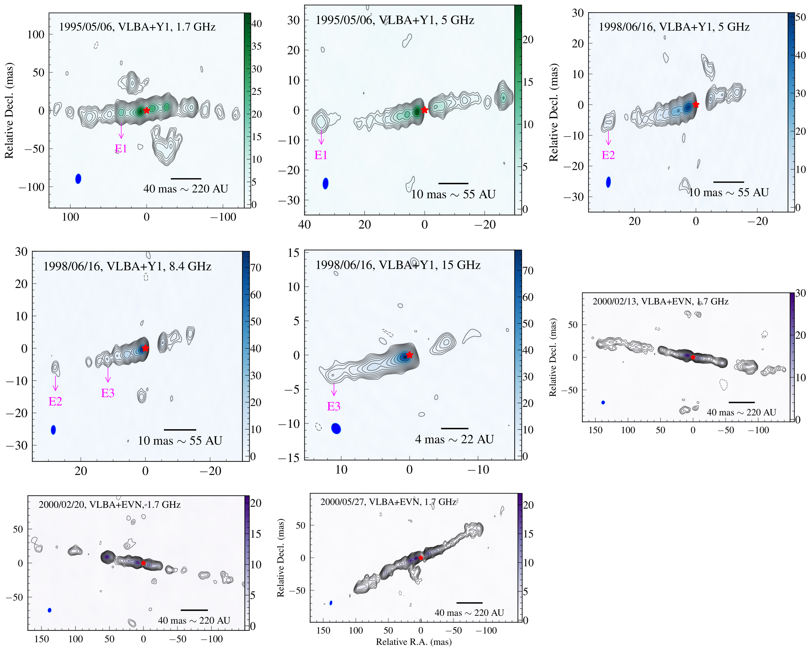<br />
图注：VLBI images of SS\,433 obtained from different projects (see \autoref{table:SS433_observation_summary}). The color bar indicates the intensity in mJy\,beam$^{-1}$, and the contour levels are $\pm 3 I_{\rm rms} \times \sqrt{2}^{\,n}$, with $n = 1, 2, 3, \ldots$. The synthesized beam is shown by the blue ellipse in the bottom-left corner of each panel. The optically thin E1, E2, and E3 components are used to determine the core shifts for different frequency pairs (see Section~\ref{Results:core_shift}). The putative location of the central binary system has been shifted to the image center based on the measured core shifts (see \autoref{table:core_shift}) and is marked by a red star. A gap is apparent in these images, which is attributed to free–free absorption (FFA) affecting the western jet emission \(\citep{Paragi_1999A&A...348..910P}.\)<br />
对应解读：对应“建议重点查看的图表”第1、2、5项，以及“关键图表逐图导读”中图1关于VLBI总强度图、合成束、等高线动态范围、中心位置和自由-自由吸收缺口的说明。<br />
入选理由：这是多项目VLBI图像合集，包含强度色标、等高线、合成束、中心双星位置和用于核心偏移测量的E1/E2/E3成分。它是评估喷流是否横向分辨、退行侧是否受自由-自由吸收影响、以及后续宽度测量是否可信的基础图。<br />
来源与置信度：\(arxiv_source\)；high；\(arxiv_source\) / SS433.tex:figure[1]</p>
<p><strong>Fig05</strong><br />
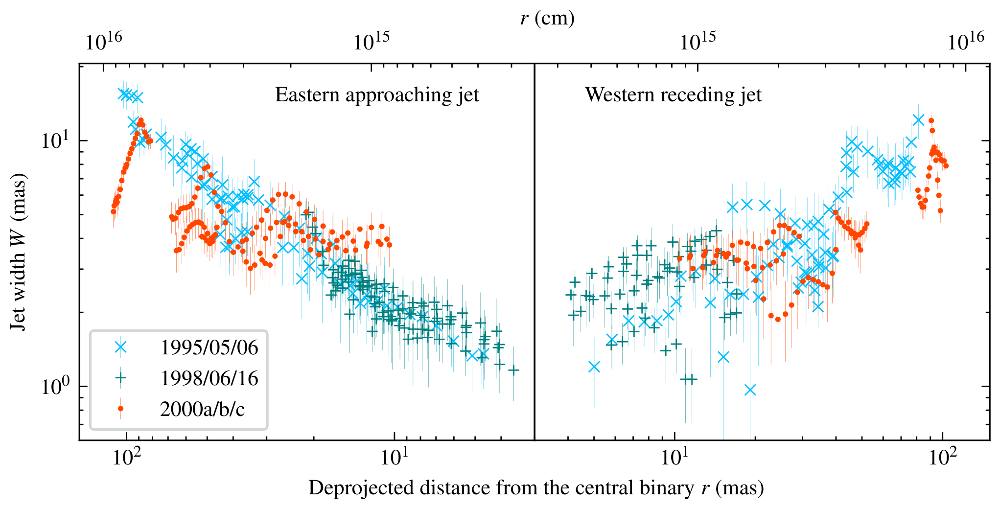<br />
图注：Collimation profiles of both the approaching and receding jets in SS\,433, obtained by combining measurements from 1995, 1998, and 2000 (see Figures~\(\ref{fig:SS433_JC_1995and1998}\) and \ref{fig:SS433_JC_combined_2000}).<br />
对应解读：对应“建议重点查看的图表”第3、4、5项，以及“模型拟合”段落中关于合并1995、1998和2000年测量来比较接近/退行喷流准直轮廓的讨论。<br />
入选理由：该图将1995、1998和2000年的接近与退行喷流准直轮廓合并展示，适合概览不同历元、不同喷流侧的整体宽度-距离关系。虽然它不如Fig02和Fig03适合诊断单个历元的拟合可靠性，但有助于把准抛物线趋势、2000年振荡和退行侧系统偏差放在同一尺度下比较。<br />
来源与置信度：\(arxiv_source\)；high；\(arxiv_source\) / SS433.tex:figure[5]</p>
<p><strong>Fig06</strong><br />
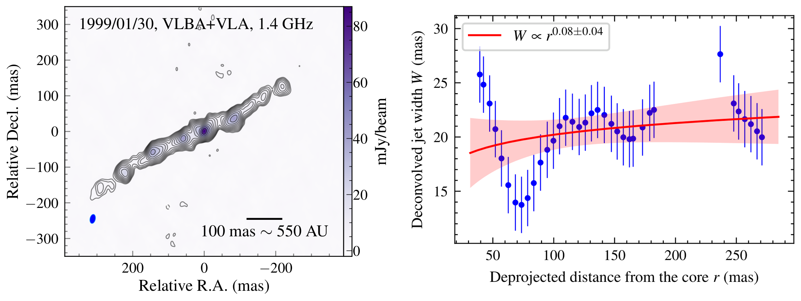<br />
图注：\(\textit{Left:}\) CLEAN image of SS\,433 observed with VLBA + VLA at 1.4\,GHz. The image was restored using an elliptical Gaussian beam of $26.0 \times 15.2$\,mas, oriented at a position angle of $-12\degr$. Contours start at 1.5\,mJy\,beam$^{-1}$ and increase by factors of $\sqrt{2}$. The jet viewing angle at this epoch is $\sim 97^\circ$. \(\textit{Right:}\) deconvolved jet width of the eastern jet as a function of deprojected distance from the core, derived from the image on the left. The red solid line shows the power-law fit, with the shaded region indicating the $3\sigma$ confidence interval. This fit suggests a cylindrical profile.<br />
对应解读：对应“建议重点查看的图表”第1、3项的补充材料，尤其是低频VLBA+VLA图像、宽度-距离拟合和可能的圆柱状轮廓。<br />
入选理由：该图包含1.4 GHz CLEAN图像及东侧喷流宽度随去投影距离的幂律拟合，并标出3σ置信区间。它不是日报主线中1995/1998准抛物线和2000振荡结论的核心依据，但可作为低频、大束斑条件下宽度测量和圆柱状轮廓解释的补充对照。<br />
来源与置信度：\(arxiv_source\)；high；\(arxiv_source\) / SS433.tex:figure[6]</p>
<h4 id="_78">强相关工作</h4>
<p>这篇工作与 AGN 喷流准直研究直接相连，尤其是 M87、3C 84 等源中用 VLBI 测得的 \(w\propto z^k\) 轮廓。相关检索关键词包括 “jet collimation profile VLBI M87 parabolic conical transition”、“AGN jet width distance relation”、“core shift VLBI Blandford Konigl”。这些工作提供了比较框架：若 XRB 也呈准抛物线轮廓，说明磁准直或外部压力束缚可能具有跨质量尺度的相似性；若不同，则说明吸积状态、外部介质和时间依赖性在恒星级系统中更关键。</p>
<p>同一源 SS 433 的历史文献非常丰富，包括移动谱线、进动喷流、射电成像、超临界吸积盘风和 W50 星云相互作用。应检索 “SS 433 VLBI jet precession”、“SS 433 moving optical lines”、“SS 433 free-free absorption radio jets”、“SS 433 W50 jet interaction”。本文相对于这些工作的新意，是把注意力从运动学轨迹转向横向准直轮廓和核心偏移。</p>
<p>也存在需要对照的相反或谨慎观点：在 XRB 中，离散抛射、冲击亮结和辐射选择效应可能使表面亮度宽度不等于流体宽度；SS 433 的盘风和包层吸收也可能改变内侧喷流形态。检索关键词可用 “microquasar jet collimation limits”、“SS 433 radio absorption free-free”、“VLBI beam deconvolution jet width systematics”。这些并不否定本文结论，但提醒读者要把准直指数看作带有辐射转移和成像系统误差的形态学约束。</p>
<p><strong>同一事件 / 同类源线索</strong>：</p>
<ul>
<li><a href="https://arxiv.org/abs/2607.28122">https://arxiv.org/abs/2607.28122</a></li>
<li><a href="https://simbad.u-strasbg.fr/simbad/sim-id?Ident=SS%20433">https://simbad.u-strasbg.fr/simbad/sim-id?Ident=SS%20433</a></li>
</ul>
<p><strong>相似工作</strong>：</p>
<ul>
<li><a href="https://arxiv.org/abs/1110.1793">https://arxiv.org/abs/1110.1793</a></li>
<li><a href="https://arxiv.org/abs/1304.0230">https://arxiv.org/abs/1304.0230</a></li>
</ul>
<p><strong>基础理论 / 方法工作</strong>：</p>
<ul>
<li><a href="https://ui.adsabs.harvard.edu/abs/1979ApJ...232...34B/abstract">https://ui.adsabs.harvard.edu/abs/1979ApJ...232...34B/abstract</a></li>
<li><a href="https://ui.adsabs.harvard.edu/abs/1984ARA%26A..22..507M/abstract">https://ui.adsabs.harvard.edu/abs/1984ARA%26A..22..507M/abstract</a></li>
<li><a href="https://arxiv.org/abs/astro-ph/0102232">https://arxiv.org/abs/astro-ph/0102232</a></li>
</ul>
<p><strong>相反观点 / 张力线索</strong>：</p>
<p>（未提供）</p>
</details>
<h3 id="8-on-the-triple-nature-of-the-psr-j04353233-system">8. On the triple nature of the PSR J0435+3233 system</h3>
<ul>
<li>来源：arXiv / astro-ph.HE</li>
<li>链接：https://arxiv.org/abs/2607.27462v1</li>
<li>作者：Paulo C. C. Freire, Colin J. Clark, Cees G. Bassa, Guillaume Voisin, Rutger van Haasteren, Lars Nieder, Benjamin W. Stappers</li>
<li>评分：novelty 8/10，importance 8/10，relevance 8/10，final 9.00/10</li>
<li>推荐理由：通过射电和Fermi-LAT计时将PSR J0435+3233解释为毫秒脉冲星三级系统，并恢复长期伽马射线脉冲；对脉冲星计时、强等效原理测试和Fermi脉冲星研究有价值。</li>
</ul>
<p><strong>中文题目</strong>：PSR J0435+3233 系统的三重星本质</p>
<p><strong>做了什么</strong>：这篇论文重新解释了毫秒脉冲星 PSR J0435+3233 异常大的观测自转变慢率。作者把射电脉冲星计时、Fermi-LAT 伽马射线数据和光学天体测量结合起来，提出该系统不是普通双星，而是一个层级三重系统：内层是毫秒脉冲星双星，外层还有一颗约 \(1.2\,M_\odot\) 的 F 型主序星，绕共同质心作约 \(70\) 年、偏心率约 \(0.6\) 的宽轨道运动。原先看似离谱的 \(\dot P\) 主要来自外层轨道造成的视向加速度变化，而非脉冲星真实磁偶极制动。</p>
<p><strong>为什么重要</strong>：毫秒脉冲星的自转变慢率直接进入磁场、特征年龄、自转能损失率和伽马射线效率估计。若 PSR J0435+3233 的大 \(\dot P\) 被当作本征量，它会成为一个很难放进标准毫秒脉冲星形成图景的异常源；本文说明异常很可能是动力学投影效应。这不仅修正了单个源的物理解释，也提醒我们在长周期层级多体系统中，计时导数可能被轨道加速度显著污染。</p>
<p><strong>理论 / 观测 / 仪器方法价值</strong>：方法上的价值在于把脉冲星计时模型从常规双星扩展到包含外层伴星的层级三体近似，并用这一模型恢复了从 Fermi-LAT 任务早期开始的伽马射线脉动相干性。观测上的价值在于给出了一个可由射电计时、伽马射线相位连接、光学成像和未来光谱共同约束的三重系统。理论上的价值在于该系统可能成为继 PSR J0337+1715 之后又一个用于强等效原理检验的毫秒脉冲星三重系统，但其外层伴星更宽、更亮，系统误差和可测量量也不同。</p>
<p><strong>为什么应该关注</strong>：如果你关心毫秒脉冲星族群、伽马射线脉冲星、精密计时或强引力检验，这篇都值得看。它展示了一个很实用的教训：当计时解给出反常的 \(\dot P\)、\(\ddot P\) 或更高阶频率导数时，首先要问这些导数是否在吸收未建模的长周期动力学。它还提供了一个未来十多年可持续积累证据的目标：外层 F 星的视向速度、天体测量弧段和脉冲星计时曲率将逐步把质量、倾角和强等效原理检验能力锁定。</p>
<details class="paper-detail">
<summary>展开详细解读：文章讲解、背景、理论、重点章节、图表与相关工作</summary>
<h4 id="_79">文章详细讲解</h4>
<p>科学问题：PSR J0435+3233 的近期计时星历显示出远高于普通银河系毫秒脉冲星的表观自转变慢率 \(\dot P_{\rm obs}\)。若把它解释为本征自转制动，则会推出异常强的磁场、异常大的自转能损失率 \(\dot E\)，并对回收毫秒脉冲星的形成与演化提出压力。作者的核心问题是：这个巨大 \(\dot P_{\rm obs}\) 是否真来自脉冲星内部转动能损失，还是由系统质心视向加速度造成的计时假象？</p>
<p>作者怎么做：论文建立了一个层级三重系统计时模型，把内层脉冲星双星作为一个近似整体，再加入外层第三体引起的长周期轨道运动。射电计时给出脉冲到达时刻的相位残差和频率导数约束；Fermi-LAT 伽马射线光子则用新的星历重新折叠，以检验相干相位连接是否从 \(2008\) 年 LAT 数据起始阶段就成立。与此同时，作者检查了脉冲星位置附近的光学源，发现有一颗与脉冲星位置相差约 \(11\) mas 的恒星，其颜色和距离与外层伴星解释相容。</p>
<p>关键结果：层级三重计时模型能解释原先需要巨大 \(\dot P_{\rm obs}\) 才能吸收的相位演化，并且使伽马射线脉动可以追溯到 Fermi-LAT 早期数据。论文认为本征 \(\dot P_{\rm int}\) 仍与外层轨道参数相关，因此不是一个已被精确测出的量；但可以排除极大的本征自转变慢率，\(\dot P_{\rm int}\) 至少比表观值低两个数量级，回到普通毫秒脉冲星范围。光学对应体的颜色、亮度和 \(1.5\)--\(2.5\) kpc 距离暗示第三体是一颗约 \(1.2\,M_\odot\) 的 F 型主序星。外层轨道宽而偏心，周期约 \(70\) 年，偏心率约 \(0.6\)，并且很可能以较低轨道倾角被观测。</p>
<p>局限和下一步：当前数据只覆盖外层轨道的一小段，导致 \(\dot P_{\rm int}\)、外层周期 \(P_{\rm out}\)、偏心率 \(e_{\rm out}\)、倾角 \(i_{\rm out}\) 和伴星质量之间存在明显相关。光学源虽位置和颜色都很有说服力，但仍需要光谱视向速度、金属丰度和恒星参数来确认质量与轨道运动。未来若继续积累脉冲星计时、精密天体测量和光谱监测，就能把外层轨道从“加速度曲率解释”推进到完整动力学解，并可能用这个非对称三重系统改进强等效原理检验。</p>
<h4 id="_80">关键结果是怎么做出来的</h4>
<p>本文最重要的证据链从一个反常计时量开始：原星历给出的 \(\dot P_{\rm obs}\) 对毫秒脉冲星来说过大。作者没有把它直接归入磁偶极制动，而是检查是否存在未建模的长周期视向加速度。样本不是一组脉冲星，而是单个源 PSR J0435+3233 的多信使、多波段数据：射电脉冲到达时刻、Fermi-LAT 伽马射线光子，以及脉冲星附近的光学成像/天体测量源。</p>
<p>射电计时部分的关键在于相位残差。若只用普通双星模型，长期残差或频率导数会要求异常大的自转变慢；若加入外层伴星引起的加速度、加加速度和更高阶轨道曲率，残差可被更自然地吸收。这里的统计证据主要来自计时残差是否白化、参数协方差是否合理、以及新模型能否跨越更长时间基线保持相干相位。由于外层周期约 \(70\) 年，而现有计时弧段只覆盖其中一部分，模型比较不能简单理解为“已经完整观测一圈轨道”，而是从轨道弧段的加速度曲率中反推外层解。</p>
<p>Fermi-LAT 伽马射线脉动是强交叉检验。对毫秒脉冲星而言，相位模型只要有小的长期误差，十几年累计下来就会洗掉伽马射线脉冲峰。本文称三重星计时解可以把伽马射线脉动检测追溯到 \(2008\) 年 LAT 数据开始，这说明模型不仅拟合射电到达时刻，也能正确预测独立伽马射线光子的旋转相位。读者应特别关注论文中伽马射线相位直方图、\(H\)-test 或类似脉动显著性指标随星历变化的表现。</p>
<p>光学对应体给出第二条独立证据。作者在脉冲星位置附近约 \(11\) mas 处识别到一颗恒星，并用距离与颜色推断其为约 \(1.2\,M_\odot\) 的 F 型主序星。这个源若只是偶然重合，必须同时满足很小角距离、合适颜色和合理亮度；若它是第三体，则自然解释了计时中需要的外层质量。关键表格应包括光学源的位置、测光、视差或距离信息、颜色-星等图位置，以及与脉冲星计时位置的偏移。</p>
<p>显著性和置信度的细节应从两方面读：一是计时模型参数的后验或协方差，尤其 \(\dot P_{\rm int}\) 与外层轨道参数的相关；二是伽马射线脉动检测统计量在普通模型和三重模型下的差异。主要系统误差包括射电计时中的色散量变化、太阳系星历误差、内层双星参数与外层加速度的耦合、LAT 光子权重模型、光学源的天体测量零点和距离估计。稳健性检验应看不同数据子集、不同外层轨道先验、以及是否允许较大 \(\dot P_{\rm int}\) 时模型仍能同时满足光学和计时约束。</p>
<details class="paper-subdetail">
<summary>展开背景、理论、公式、模型、章节和图表导读</summary>
<h4 id="_81">背景知识</h4>
<p>PSR J0435+3233 是一颗毫秒脉冲星。毫秒脉冲星通常被认为经历了低质量 X 射线双星阶段的吸积回收，因而自转周期 \(P\) 很短，自转变慢率 \(\dot P\) 很小，表面偶极磁场也比年轻普通脉冲星低很多。对这类源而言，\(\dot P\) 是把计时观测转化为物理图像的核心量，因此任何异常大的 \(\dot P\) 都会立刻引出形成史、磁场衰减和高能辐射效率的问题。</p>
<p>历史上，脉冲星计时中的表观 \(\dot P\) 从来不等于本征 \(\dot P_{\rm int}\)。近邻脉冲星会受到 Shklovskii 效应影响，即自行造成的表观径向加速度；银河引力势也会贡献视向加速度；球状星团脉冲星还常被星团势场显著污染。本文处理的是另一类污染：层级三重系统中外层轨道造成的长期加速度变化。若外层周期远长于观测基线，它在计时数据中会表现为 \(\dot f\)、\(\ddot f\) 或更高阶频率导数，而不一定立即显现为完整 Kepler 轨道。</p>
<p>三重脉冲星系统本身非常稀有。最著名的例子是 PSR J0337+1715，它是一个毫秒脉冲星与两个白矮星组成的紧凑层级三重系统，并被用于强等效原理检验。PSR J0435+3233 若确认为含有 F 型主序星外伴星的宽轨道三重系统，将提供不同的动力学尺度、不同的伴星类型和不同的系统误差结构。它不能简单替代 PSR J0337+1715，但可作为互补实验台。</p>
<p>为什么现在值得重新看？一方面，Fermi-LAT 已积累接近二十年的全天伽马射线数据，长时间基线对计时星历极其敏感；另一方面，现代光学巡天和空间天体测量能在毫角秒级别寻找脉冲星位置附近的恒星对应体。过去单靠射电计时可能只能看到“奇怪的导数”，现在可以用伽马射线相干折叠和光学源识别把动力学解释闭合起来。</p>
<p>常见误区有三点。第一，不应把观测到的 \(\dot P_{\rm obs}\) 直接等同于本征制动，尤其在存在长周期伴星可能性时。第二，三重系统不一定要求在计时数据中已经看到完整外层轨道；一小段轨道弧也能通过加速度和 jerk 留下强信号。第三，光学位置接近并不自动证明物理关联，必须结合颜色、距离、星等、偶然重合概率和未来共同运动或视向速度检验。</p>
<h4 id="_82">基础理论 / 方法脉络</h4>
<p>基础物理图像是脉冲星作为稳定时钟。若脉冲星在惯性系中的自转频率为 \(f\)，观测者记录到的脉冲到达时刻会受到光行时、相对论时延、色散时延、双星轨道和源-观测者相对运动影响。对毫秒脉冲星而言，相位模型必须在多年尺度上保持周期计数不丢失；任何未建模的加速度都会表现为相位残差的低阶多项式趋势。</p>
<p>对一个沿视线有加速度 \(a_\parallel\) 的源，观测频率会因多普勒效应改变。非相对论极限下，表观频率导数包含一项 \(-a_\parallel f/c\)，等价地，表观周期导数包含 \(a_\parallel P/c\)。这就是为什么外层伴星可以伪装成本征自转变慢。若 \(a_\parallel\) 随时间变化，还会产生 \(\ddot f\)、\(\dddot f\) 等项，从而让普通双星计时模型出现系统性残差。</p>
<p>本文的模型假设是层级三重：内层脉冲星双星的尺度远小于外层轨道尺度，因此可以先把内层双星的质心作为外层轨道中的一个等效物体。外层伴星对内层双星质心的引力运动近似 Kepler 轨道，但在精密计时中需要考虑投影视向的 Roemer 时延和随时间变化的加速度。由于外层周期约 \(70\) 年，现有数据很可能只看到部分轨道弧，因此参数之间的退化比完整双星轨道更强。</p>
<p>伽马射线脉动检测的逻辑与射电计时互补。LAT 光子稀疏，不能像射电那样逐个脉冲测到达时刻；通常先用空间位置和谱模型给每个光子分配源概率权重，再用计时星历把光子时间转换为旋转相位，最后用相位分布的非均匀性统计量判断是否有脉动。若三重星模型正确，早期 LAT 光子的相位峰也应与后期数据对齐。</p>
<p>主要退化关系包括外层质量 \(m_3\)、倾角 \(i_{\rm out}\)、半长轴 \(a_{\rm out}\)、周期 \(P_{\rm out}\)、偏心率 \(e_{\rm out}\) 与本征 \(\dot P_{\rm int}\) 的耦合。低倾角会放大真实质量并减小投影速度信号；短观测弧段会让轨道曲率与自转频率高阶导数互相替代；距离误差会影响 Shklovskii 修正和光学伴星质量估计。</p>
<h4 id="_83">公式与推导</h4>
<p>第一步从脉冲相位模型出发。若脉冲星本征自转频率为 \(f\)，参考历元为 \(t_0\)，则相位可写为</p>
<div class="math-display">\[\phi(t)=\phi_0+f_0(t-t_0)+\frac{1}{2}\dot f(t-t_0)^2+\frac{1}{6}\ddot f(t-t_0)^3+\cdots .\]</div>
<p>这里 \(\phi\) 是旋转相位，\(f_0\) 是 \(t_0\) 处频率，\(\dot f\) 和 \(\ddot f\) 是观测导数。若模型遗漏外层轨道，这些导数会吸收动力学加速度，而不一定代表本征制动。</p>
<p>第二步把周期和频率导数联系起来。由于 \(P=1/f\)，有</p>
<div class="math-display">\[\dot P=-\frac{\dot f}{f^2} .\]</div>
<p>这说明一个看似很大的 \(\dot P_{\rm obs}\) 等价于很负的 \(\dot f_{\rm obs}\)。对毫秒脉冲星，\(P\) 很小，因此微小的长期相位漂移也会在 \(\dot P\) 上显得显著。</p>
<p>第三步加入视向加速度的多普勒效应。在 \(|v_\parallel|\ll c\) 的极限下，观测频率近似为</p>
<div class="math-display">\[f_{\rm obs}\simeq f_{\rm int}\left(1-\frac{v_\parallel}{c}\right) .\]</div>
<p>对时间求导得</p>
<div class="math-display">\[\dot f_{\rm obs}\simeq \dot f_{\rm int}-\frac{a_\parallel}{c}f_{\rm int} .\]</div>
<p>这里 \(v_\parallel\) 和 \(a_\parallel\) 分别是源相对观测者的视向速度和加速度，正负号取决于约定。核心物理含义是：即使 \(\dot f_{\rm int}\) 很小，外层轨道的 \(a_\parallel\) 也能制造大的表观 \(\dot f\)。</p>
<p>第四步写成周期导数修正式，常用形式为</p>
<div class="math-display">\[\dot P_{\rm obs}=\dot P_{\rm int}+\frac{a_\parallel}{c}P+\dot P_{\rm Shk}+\dot P_{\rm Gal} .\]</div>
<p>其中 \(\dot P_{\rm Shk}\) 是 Shklovskii 项，\(\dot P_{\rm Gal}\) 是银河势场项。本文的关键是新增的外层轨道 \(a_\parallel\) 足以解释异常项，从而使 \(\dot P_{\rm int}\) 回到普通毫秒脉冲星范围。</p>
<p>第五步用 Kepler 轨道给出外层运动尺度。对外层总质量 \(M_{\rm tot}=m_{\rm in}+m_3\)，半长轴 \(a_{\rm out}\) 与周期 \(P_{\rm out}\) 满足</p>
<div class="math-display">\[\frac{4\pi^2 a_{\rm out}^3}{G M_{\rm tot}}=P_{\rm out}^2 .\]</div>
<p>这里 \(m_{\rm in}\) 是内层双星总质量，\(m_3\) 是第三体质量。若 \(P_{\rm out}\sim70\) 年且 \(m_3\sim1.2\,M_\odot\)，外层轨道足够宽，短期内主要表现为低阶加速度曲率。</p>
<p>第六步把外层轨道投影到计时光行时。内层双星质心绕三重系统质心的投影半长轴为 \(x_{\rm out}=a_{\rm in,out}\sin i_{\rm out}/c\)，其 Roemer 时延可写作</p>
<div class="math-display">\[\Delta_R=x_{\rm out}\left[\sin\omega_{\rm out}(\cos E-e_{\rm out})+\sqrt{1-e_{\rm out}^2}\cos\omega_{\rm out}\sin E\right] .\]</div>
<p>这里 \(E\) 是偏近点角，\(e_{\rm out}\) 是外层偏心率，\(\omega_{\rm out}\) 是近心点幅角，\(i_{\rm out}\) 是外层倾角。计时残差中的长期弯曲本质上来自 \(\Delta_R\) 的时间导数。</p>
<p>第七步用质量函数说明质量和倾角退化：</p>
<div class="math-display">\[f_m=\frac{(m_3\sin i_{\rm out})^3}{(m_{\rm in}+m_3)^2}=\frac{4\pi^2}{G}\frac{(a_{\rm in,out}\sin i_{\rm out})^3}{P_{\rm out}^2} .\]</div>
<p>计时直接强约束的是投影量 \(a_{\rm in,out}\sin i_{\rm out}\)，而不是 \(m_3\) 和 \(i_{\rm out}\) 各自。因此低倾角解可对应较大的真实质量，光学测光和光谱可帮助打破这个退化。</p>
<p>第八步给出伽马射线脉动统计的简化诊断。若第 \(j\) 个光子的相位为 \(\phi_j\)，权重为 \(w_j\)，可用加权傅里叶量</p>
<div class="math-display">\[Z^2_n=\frac{2}{\sum_j w_j^2}\sum_{k=1}^{n}\left[\left(\sum_j w_j\cos k\phi_j\right)^2+\left(\sum_j w_j\sin k\phi_j\right)^2\right] .\]</div>
<p>正确星历会让光子相位集中，增大 \(Z^2_n\) 或相关的 \(H\)-test 统计量；错误星历会让早期和晚期数据相位错开，降低显著性。</p>
<p>第九步写出计时拟合的高斯似然近似：</p>
<div class="math-display">\[\ln\mathcal{L}=-\frac{1}{2}\sum_i\left[\frac{r_i^2}{\sigma_i^2}+\ln(2\pi\sigma_i^2)\right] .\]</div>
<p>这里 \(r_i=t_{i,{\rm obs}}-t_{i,{\rm model}}\) 是第 \(i\) 个到达时刻残差，\(\sigma_i\) 是不确定度。三重模型若显著改善 \(r_i\) 的长期结构，并同时维持伽马射线相干性和光学伴星一致性，就构成本文结论的统计基础。</p>
<h4 id="_84">模型拟合 / 应用方法</h4>
<p>本文拟合的核心不是单一 \(\dot P\)，而是一组耦合参数：内层双星计时参数、脉冲星自转参数、位置和自行、可能的色散量变化，以及外层 Kepler 轨道参数。外层参数至少包括 \(P_{\rm out}\)、\(e_{\rm out}\)、\(\omega_{\rm out}\)、轨道相位、投影半长轴 \(x_{\rm out}\) 和倾角相关量。由于数据只覆盖外层轨道的一部分，拟合中最应关注的是后验相关图或协方差矩阵，而不是某个孤立最佳值。</p>
<p>似然主要来自射电脉冲到达时刻残差，通常可近似为带有测量误差和额外噪声项的高斯似然。若论文使用贝叶斯采样，则先验会影响宽轨道、低倾角和高质量尾部；若使用最小二乘或广义最小二乘，则应检查红噪声、色散噪声和系统误差是否被低估。对这种长周期轨道，模型复杂度惩罚也要小心：三重模型参数更多，但它还必须通过独立的伽马射线相干折叠和光学源一致性检验。</p>
<p>残差诊断应看三类图。第一，普通双星模型下的计时残差是否出现平滑长期曲率；第二，三重模型下残差是否接近白噪声，且不再需要异常大的 \(\dot P_{\rm int}\)；第三，按频段、望远镜、时间段分开的残差是否一致。若某个望远镜后端、某段数据或色散修正驱动了外层轨道解，结论会变弱。</p>
<p>参数退化最重要的是 \(\dot P_{\rm int}\) 与外层 \(a_\parallel\) 的退化。短时间基线内，外层轨道的 Taylor 展开项可与自转频率导数互相替代；因此本文只能说大本征 \(\dot P_{\rm int}\) 被排除，而不是已经精确测得 \(\dot P_{\rm int}\)。另一个退化是 \(m_3\) 与 \(i_{\rm out}\)：计时给投影质量函数，光学颜色和亮度给恒星质量范围，二者联合才支持 F 型主序星第三体图像。</p>
<p>实际应用上，这类模型适用于所有表现出异常 \(\dot P\)、高阶频率导数或难以相位连接的毫秒脉冲星，尤其是有高质量光学近邻源的对象。模型可能失败的情形包括：光学源是偶然重合；计时噪声或未建模色散变化被误当成外层轨道；外层轨道不是简单二体 Kepler，而有额外伴星或长期摄动；距离和自行误差导致 Shklovskii 修正错误。未来光谱视向速度曲线是最直接的外部验证。</p>
<h4 id="_85">重点章节 / 结果段落怎么读</h4>
<p>数据/样本部分应先读清楚射电计时数据的时间跨度、望远镜来源、到达时刻数量、频段覆盖和误差处理。对这类论文，数据基线相对于外层周期 \(P_{\rm out}\) 的比例非常关键，因为它决定了轨道解是完整闭合还是主要由加速度曲率约束。</p>
<p>计时模型部分是全文核心。读者应比较普通自转加双星模型、加入高阶频率导数的经验模型、以及物理三重星模型之间的差别。尤其要看作者如何把外层轨道引入到脉冲到达时刻模型中，以及哪些参数与 \(\dot P_{\rm int}\) 强相关。</p>
<p>伽马射线分析部分应关注光子选择、能段、角距、权重计算、背景模型和脉动统计量。最重要的问题不是“是否有伽马射线源”，而是新的三重星星历是否能把 \(2008\) 年以来的 LAT 光子相干折叠出稳定脉冲轮廓。</p>
<p>光学对应体部分要读位置匹配、测光、颜色-星等解释和距离估计。约 \(11\) mas 的角距离很小，但仍需结合偶然重合概率和恒星参数。若有表格列出候选源的星等、颜色、视差或自行，应与三重轨道推断的 \(m_3\) 对照。</p>
<p>讨论和展望部分应重点看强等效原理检验前景。作者可能会将 PSR J0435+3233 与 PSR J0337+1715 对比：前者外层周期更长、第三体是主序星，后者是紧凑白矮星三重系统。读者应留意这种差异如何影响可测信号、系统误差和未来时间基线需求。</p>
<h4 id="_86">建议重点查看的图表</h4>
<ol>
<li>
<p>计时残差图：比较普通双星模型和三重星模型下残差随时间的变化，重点看长期曲率是否消失、残差是否按不同观测系统分层。</p>
</li>
<li>
<p>外层轨道参数后验或协方差图：重点看 \(P_{\rm out}\)、\(e_{\rm out}\)、\(x_{\rm out}\)、\(i_{\rm out}\)、\(m_3\) 和 \(\dot P_{\rm int}\) 的相关，判断哪些结论稳健、哪些只是先验或短弧段驱动。</p>
</li>
<li>
<p>\(\dot P_{\rm int}\) 分布或派生物理量表：检查大 \(\dot P_{\rm int}\) 被排除到什么置信水平，以及磁场、特征年龄、自转能损失率是否回到普通毫秒脉冲星区间。</p>
</li>
<li>
<p>Fermi-LAT 伽马射线脉冲轮廓：看横轴旋转相位、纵轴加权计数或概率密度，确认早期数据和全时段数据是否相位对齐。</p>
</li>
<li>
<p>光学图像或天体测量匹配图：看脉冲星计时位置、光学源位置、误差椭圆和约 \(11\) mas 偏移，判断对应体识别是否可信。</p>
</li>
<li>
<p>颜色-星等图或光谱能量分布拟合：看候选第三体是否落在 F 型主序星位置，距离 \(1.5\)--\(2.5\) kpc 与约 \(1.2\,M_\odot\) 是否一致。</p>
</li>
<li>
<p>外层轨道示意或视向加速度曲线：看当前观测弧段位于轨道何处，为什么能得到约 \(70\) 年、\(e_{\rm out}\sim0.6\) 的解，以及未来几年最能区分哪些参数。</p>
</li>
</ol>
<h4 id="_87">关键图表逐图导读</h4>
<p>图 1：若论文给出计时残差对比，横轴通常是年份或 MJD，纵轴是到达时刻残差。普通双星模型下应能看到平滑的长期趋势或系统性弯曲；三重星模型下这些结构应明显减弱。读图陷阱是不要只看均方根变小，还要看残差是否在不同望远镜、频段和时间段中一致白化。</p>
<p>图 2：外层轨道或加速度模型图通常以时间为横轴，以 Roemer 时延、视向速度、视向加速度或相位残差贡献为纵轴。模型线可能只覆盖外层周期的一小段，因此不要误以为整条 \(70\) 年轨道都被观测到了。关键是当前数据弧段的曲率是否足以排除无第三体解释。</p>
<p>图 3：伽马射线脉冲轮廓图横轴是旋转相位，纵轴是加权光子数、概率密度或显著性。若分早期和后期数据，脉冲峰应出现在相同相位。读图陷阱是 LAT 数据稀疏，单个峰的视觉显著性可能不强，应结合 \(H\)-test、\(Z^2_n\) 或相应统计量。</p>
<p>图 4：光学对应体图一般显示脉冲星计时位置、光学源位置和误差圈。横纵轴可能是相对赤经和赤纬偏移，单位为 mas 或角秒。应看 \(11\) mas 偏移相对于位置误差是否显著，以及附近场星密度是否使偶然重合概率可忽略。</p>
<p>图 5：颜色-星等图或 SED 图应把候选源的测光点与主序星模型、等龄线或绝对星等关系比较。主要结论是源的颜色和亮度符合约 \(1.2\,M_\odot\) F 型主序星。陷阱是消光、距离和金属丰度会移动模型位置，因此质量不是只由颜色单独决定。</p>
<p>图 6：参数后验角图或置信区间图最值得仔细读。坐标轴可能包括 \(P_{\rm out}\)、\(e_{\rm out}\)、\(m_3\)、\(i_{\rm out}\) 和 \(\dot P_{\rm int}\)。应看本征 \(\dot P_{\rm int}\) 的上限如何与低倾角、高质量解相连，以及哪些区域被光学质量约束排除。</p>
</details>
<h4 id="_88">论文原图 / 可嵌入图片</h4>
<p><strong>Fig02</strong><br />
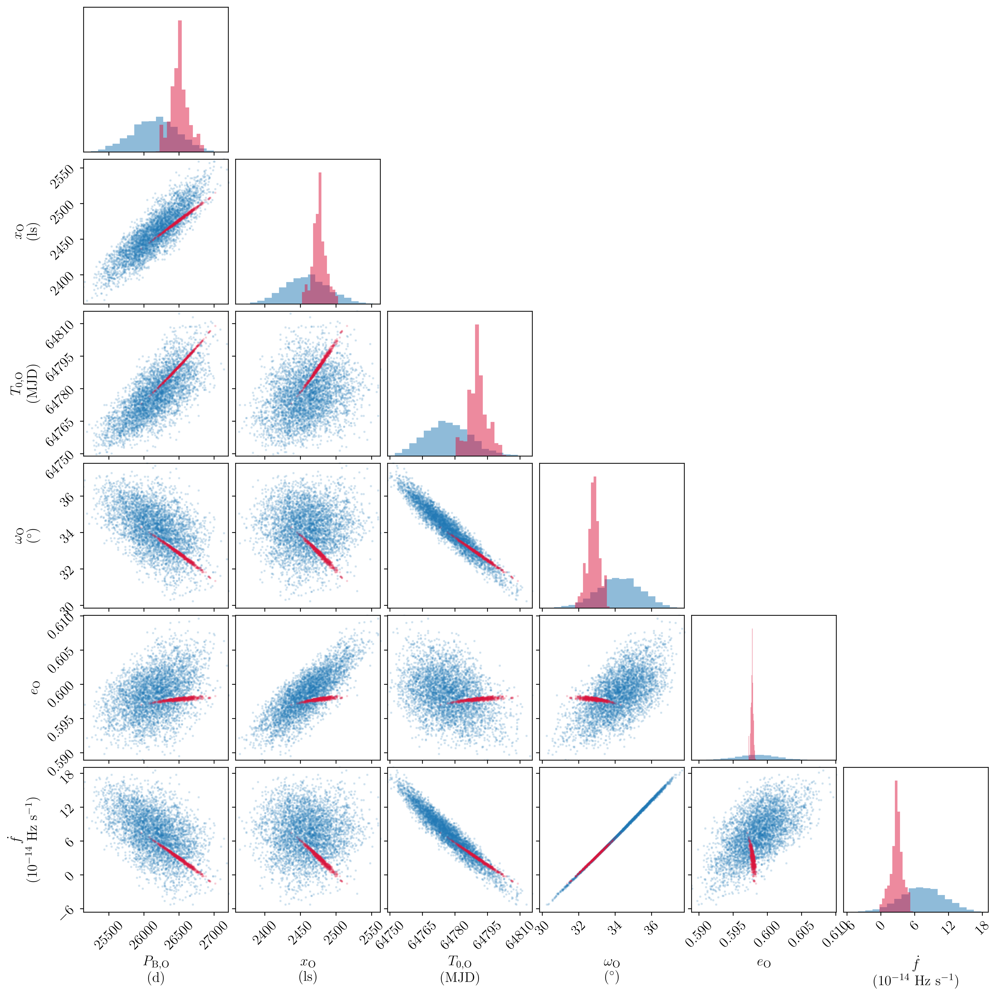<br />
图注：Corner plot showing the Keplerian parameters for the outer orbit and the spin frequency derivative obtained from our timing analysis. Blue points show samples from radio-only timing after thinning the sample chains by a factor of 100. The red points (and marginal distributions on the diagonal) contain 99.9\% of the $\gamma$-ray re-weighted posterior probability, which results in a significant narrowing of the uncertainties of some timing parameters. A similar plot showing all model parameters is provided in Fig.~\(\ref{fig:full_corner}.\)<br />
对应解读：对应“建议重点查看的图表”第2项和“关键图表逐图导读”图6，以及模型拟合段落中关于外层轨道参数与本征自转变慢率退化的讨论。<br />
入选理由：这是最核心的参数后验角图，直接展示外层 Kepler 轨道参数与自转频率导数的联合约束，并区分 radio-only 与经伽马射线重加权后的后验。它最能支撑日报中关于 \(P_out\)、\(e_out\)、投影轨道尺度、低倾角/高质量尾部以及本征 \dot P 不确定性的解读。<br />
来源与置信度：\(arxiv_source\)；high；\(arxiv_source\) / main.tex:figure[2]</p>
<p><strong>Fig03</strong><br />
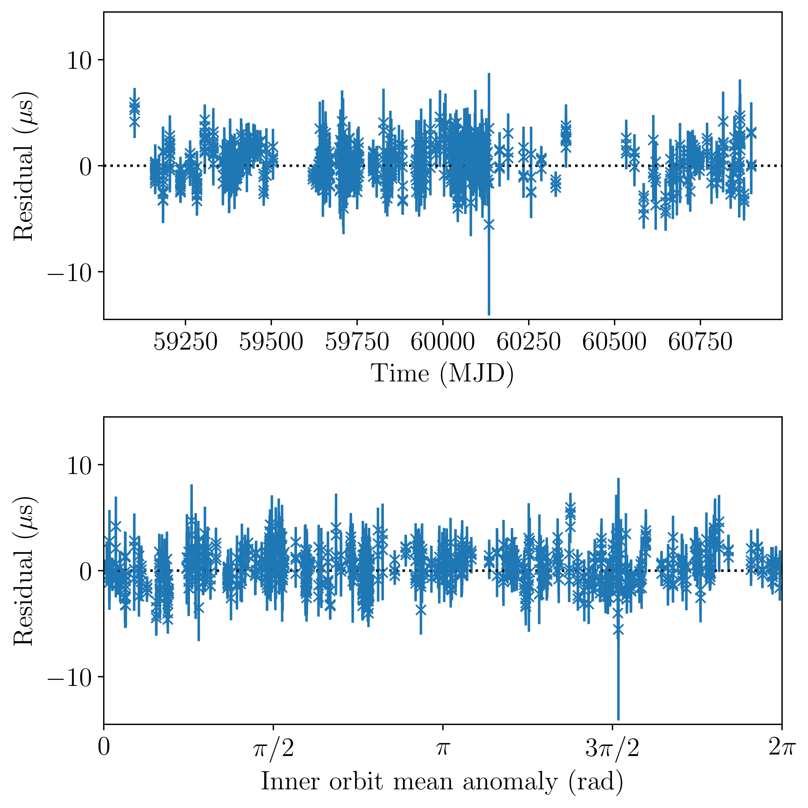<br />
图注：Timing residuals obtained from the FAST barycentric ToAs of \(\citetalias{2026NatAs.tmp...71W}\) using the solution in the second column of Table~\(\ref{tab:solution}.\) The upper panel shows residuals as a function of time; the lower panel shows these as a function of the mean anomaly (orbital phase) of the inner orbit.<br />
对应解读：对应“建议重点查看的图表”第1项和“关键图表逐图导读”图1，以及模型拟合段落中的计时残差诊断。<br />
入选理由：该图给出采用三重系统计时解后的 FAST 到达时刻残差，横向展示随时间和内层轨道相位的残差结构。虽然候选中没有普通双星模型与三重模型的直接同图对比，但它仍是检验三重模型是否白化残差、是否存在轨道相位相关系统误差的关键图。<br />
来源与置信度：\(arxiv_source\)；high；\(arxiv_source\) / main.tex:figure[3]</p>
<p><strong>Fig04</strong><br />
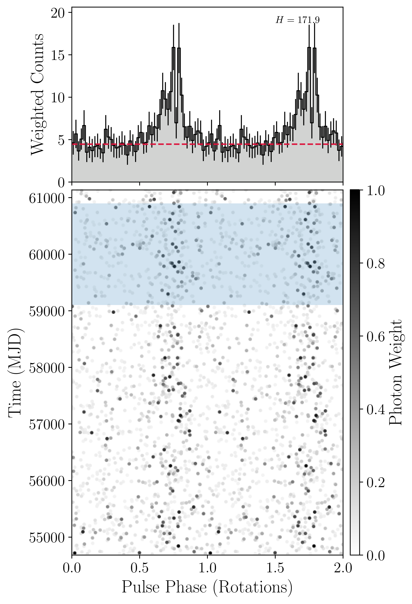<br />
图注：Detection of $\gamma$-ray pulsations for PSR~J0435+3233. The spin phases of the $\gamma$-ray photons, shown as points in the lower panel, were calculated using the timing solution in the second column of Table~\(\ref{tab:solution},\) which maximises the joint radio and $\gamma$-ray pulsation log-likelihood. The blue shaded region indicates the time interval spanned by FAST observations. The top panel shows in the integrated pulse profile, with the background level (estimated from the photon weights as in \(\citealt{2023ApJ...958..191S},\) Section 5.1) shown by the red dashed line.<br />
对应解读：对应“建议重点查看的图表”第4项和“关键图表逐图导读”图3，即 Fermi-LAT 伽马射线脉冲轮廓与相干折叠检验。<br />
入选理由：该图直接显示伽马射线光子的旋转相位、积分脉冲轮廓、背景水平以及 FAST 观测时间段。它是独立验证新三重星历可把 LAT 数据从早期相干折叠起来的关键证据，比单纯计时参数表更能说明模型的预测能力。<br />
来源与置信度：\(arxiv_source\)；high；\(arxiv_source\) / main.tex:figure[4]</p>
<p><strong>Fig07</strong><br />
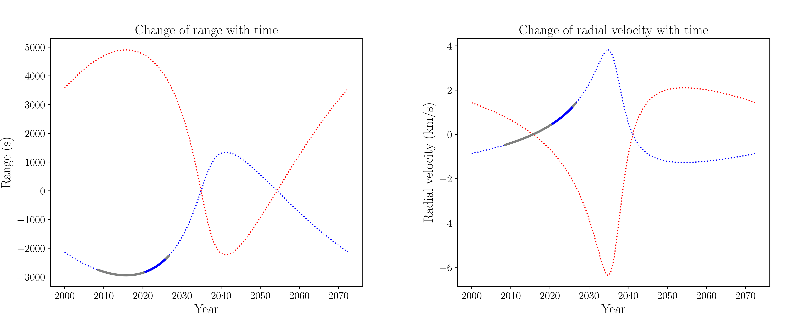<br />
图注：Evolution of the range (radial light-travel-time from the outer orbit barycenter projected along the line-of-sight, top panel) and radial velocity (bottom panel). The time axis covers one full orbit and is centred at periastron. The range and orbital radial velocity of the inner binary were calculated from the relevant parameters in the second column of Table~\(\ref{tab:solution}\): the gray lines indicate the {\(\em\) Fermi} timing baseline, the solid blue lines indicates the radio timing baseline of \(\citetalias{2026NatAs.tmp...71W},\) the dotted blue lines represent the prediction of the ephemeris. For the motion of the outer star (dotted red lines) we assume, in addition, an outer mass ratio $R_\mathrm{O} = M_\mathrm{O}/M_\mathrm{b} = 1.2 / 2.0 = 0.6$; this quantity might soon be constrained by RV measurements of the outer star.<br />
对应解读：对应“建议重点查看的图表”第7项和“关键图表逐图导读”图2，即外层轨道的视向光行时范围与径向速度随时间变化。<br />
入选理由：该图展示完整外层轨道中的投影视向光行时和径向速度，并标出 Fermi 与射电计时覆盖的时间基线，能直观看出当前数据只覆盖约70年外层轨道的一小段。它有助于解释为何周期、偏心率和未来径向速度观测仍存在重要约束空间。<br />
来源与置信度：\(arxiv_source\)；high；\(arxiv_source\) / main.tex:figure[7]</p>
<p><strong>Fig06</strong><br />
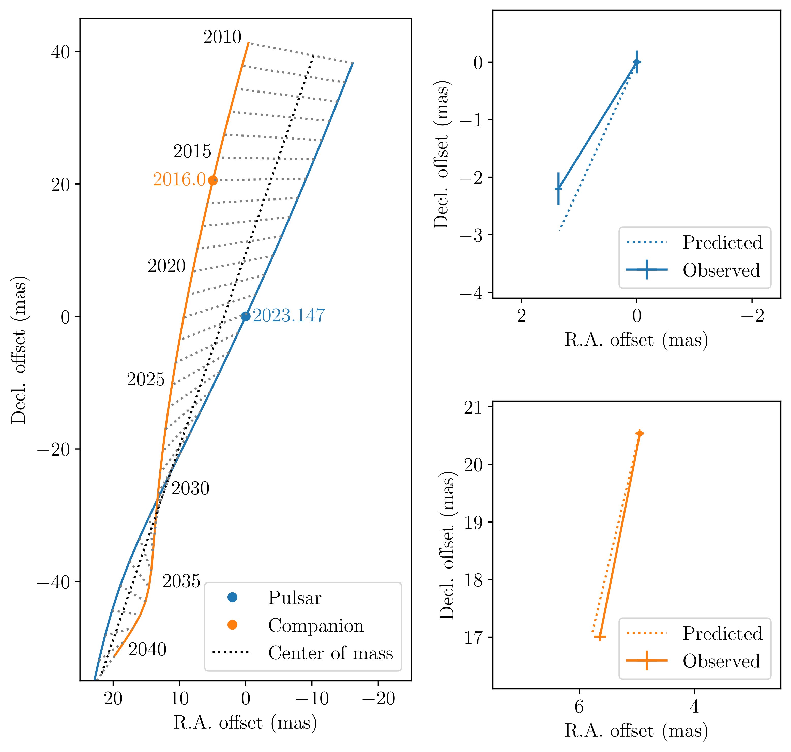<br />
图注：The projected motion of PSR\,J0435+3233 and 2MASS\,J04353375+3233080 over a 30-yr timespan using the orbital parameters of the outer orbit from Table\,\(\ref{tab:solution}.\) Positions are plotted relative to the position of the pulsar at the epoch of the \(\citetalias{2026NatAs.tmp...71W}\) timing ephemeris. The measured position of 2MASS\,J04353375+3233080 is given by the \(\textit{Gaia}\) DR3 astrometric solution at the \(\textit{Gaia}\) epoch of J2016.0. The two insets show the motion over 1\,yr as predicted by the orbital solution as well as the observed proper motions.<br />
对应解读：对应“建议重点查看的图表”第5项和“关键图表逐图导读”图4，即脉冲星与候选第三体的天体测量匹配和相对运动。<br />
入选理由：该图用外层轨道解展示 PSR J0435+3233 与 2MASS/Gaia 光学源在天球上的投影运动，并包含 Gaia J2016.0 位置和短时标运动插图。它最能支撑日报中关于约11 mas 位置偏移、共同运动和光学对应体可信度的讨论。<br />
来源与置信度：\(arxiv_source\)；high；\(arxiv_source\) / main.tex:figure[6]</p>
<p><strong>Fig05</strong><br />
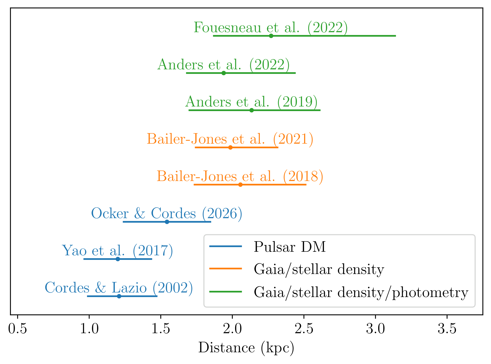<br />
图注：Distance estimates of PSR\,J0435+3233 based on the pulsar dispersion measure and Galactic electron density models, and of the outer companion 2MASS\,J04353375+3233080 based on \(\textit{Gaia}\) parallax, Galactic stellar density models and/or broadband optical and near-infrared photometry.<br />
对应解读：对应“建议重点查看的图表”第6项中关于距离、测光和第三体物理性质的部分，以及详细解读中 1.5--2.5 kpc 距离和 F 型主序星第三体的论述。<br />
入选理由：该图汇总了脉冲星基于色散量的距离估计与外层伴星基于 Gaia 视差、银河恒星密度模型及宽带测光得到的距离估计。虽然它不是典型颜色-星等图或 SED 拟合图，但在候选图中最直接支撑光学源与脉冲星处于相容距离、从而支持第三体身份的结论。<br />
来源与置信度：\(arxiv_source\)；high；\(arxiv_source\) / main.tex:figure[5]</p>
<h4 id="_89">强相关工作</h4>
<p>最直接的同类工作是 PSR J0337+1715。该系统是毫秒脉冲星三重系统的原型之一，并被用于强等效原理检验。与 PSR J0337+1715 相比，PSR J0435+3233 的外层伴星似乎是较亮的 F 型主序星，外层周期更长，轨道约束更多依赖长期加速度和光学验证。检索关键词可用 “PSR J0337+1715 triple system”, “strong equivalence principle pulsar triple”, “hierarchical triple millisecond pulsar”。</p>
<p>另一个相关方向是脉冲星表观自转变慢率修正，包括 Shklovskii 效应、银河加速度修正和球状星团势场污染。本文把这种思想推广到层级三重系统中的外层轨道加速度。检索关键词可用 “pulsar timing acceleration spin-down correction”, “Shklovskii effect millisecond pulsars”, “gamma-ray pulsar timing Fermi LAT ephemeris”。若要找可能的相反观点或张力，应关注是否有独立光学天体测量认为候选 F 星距离或自行不匹配，或是否有只用经验频率导数即可解释计时数据而不需要完整三重星模型的分析。</p>
<p><strong>同一事件 / 同类源线索</strong>：</p>
<ul>
<li><a href="https://arxiv.org/abs/2607.27462">https://arxiv.org/abs/2607.27462</a></li>
<li><a href="https://arxiv.org/pdf/2607.27462">https://arxiv.org/pdf/2607.27462</a></li>
</ul>
<p><strong>相似工作</strong>：</p>
<ul>
<li><a href="https://arxiv.org/abs/1401.0535">https://arxiv.org/abs/1401.0535</a></li>
<li><a href="https://arxiv.org/abs/1807.02059">https://arxiv.org/abs/1807.02059</a></li>
</ul>
<p><strong>基础理论 / 方法工作</strong>：</p>
<ul>
<li><a href="https://arxiv.org/abs/1902.10045">https://arxiv.org/abs/1902.10045</a></li>
<li><a href="https://arxiv.org/abs/0910.1608">https://arxiv.org/abs/0910.1608</a></li>
</ul>
<p><strong>相反观点 / 张力线索</strong>：</p>
<p>（未提供）</p>
</details>
<h3 id="9-search-for-gravitational-waves-associated-with-high-energy-neutrinos-detected-by-icecube-during-the-third-observing-run-of-ligo-virgo">9. Search for gravitational waves associated with high-energy neutrinos detected by IceCube during the third observing run of LIGO-Virgo</h3>
<ul>
<li>来源：arXiv / astro-ph.HE</li>
<li>链接：https://arxiv.org/abs/2607.28539v1</li>
<li>作者：Matthias Vereecken, Matteo Pracchia, Kara Merfeld, Iara Tosta e Melo, Wasim Javed, Patrick Sutton</li>
<li>评分：novelty 7/10，importance 7/10，relevance 9/10，final 8.70/10</li>
<li>推荐理由：IceCube高能中微子与LIGO/Virgo O3引力波的定向多信使搜索，虽为非探测结果，但与高能中微子天文学和多信使源约束直接相关，值得关注。</li>
</ul>
<p><strong>中文题目</strong>：用 IceCube 高能中微子触发的 LIGO-Virgo 第三轮观测引力波瞬变搜索</p>
<p><strong>做了什么</strong>：这篇文章把 IceCube 在 LIGO-Virgo 第三轮观测期间探测到的高能中微子作为触发点，在对应时间窗和天空方向上做未建模的引力波瞬变搜索。作者的目标不是重复实时告警或引力波目录里已经能看到的强信号，而是利用中微子给出的时间和方向先验，把引力波搜索阈值往下压，寻找可能被常规全天空搜索漏掉的弱关联信号。结果没有发现统计显著的引力波对应体，因此给出了不同引力波发射模型下源距离的下限约束。</p>
<p><strong>为什么重要</strong>：高能中微子和引力波都能穿透电磁辐射难以逃逸的致密环境；如果二者来自同一瞬变源，就能直接约束喷流、致密并合、核心坍缩或潮汐瓦解等高能过程。即使没有发现信号，这类靶向搜索也很重要，因为它量化了在 IceCube 触发条件下，LIGO-Virgo 对弱引力波瞬变的真实灵敏度，并把“没有联合探测”转化为可用于排除源族参数空间的距离下限。</p>
<p><strong>理论 / 观测 / 仪器方法价值</strong>：方法价值在于把中微子事件的时间、方向和背景概率引入引力波未建模搜索，适合处理波形不确定、持续时间较短、可能非相干或非标准的引力波瞬变。对观测而言，它补充了实时跟进和目录级搜索：前者偏向快速但阈值保守，后者偏向标准波形或高显著性事件；本文则针对每个中微子触发点做离线、低阈值、受控背景的搜索。</p>
<p><strong>为什么应该关注</strong>：如果你关心高能中微子源、暗瞬变、多信使触发策略或下一代引力波搜索管线，这篇文章值得看。它告诉我们：在 O3 灵敏度下，IceCube 高能中微子样本中并未隐藏明显的亚阈值引力波对应体；同时它也给出了未来 O4、O5 以及 IceCube-Gen2 时代如何设计联合搜索、如何解释空结果的基准。</p>
<details class="paper-detail">
<summary>展开详细解读：文章讲解、背景、理论、重点章节、图表与相关工作</summary>
<h4 id="_90">文章详细讲解</h4>
<p>科学问题：高能中微子事件是否伴随短时标引力波瞬变？这是一个比“某个已知引力波事件是否有中微子”更宽的问题。IceCube 探测到的高能中微子可能来自宇宙线加速区，例如相对论喷流、致密天体并合后的残余物、核心坍缩超新星、潮汐瓦解事件或活动星系核耀发。若这些源同时产生强非轴对称质量运动，就可能在 LIGO-Virgo 频段产生瞬变引力波。难点在于许多候选源的引力波波形并不可靠，不能只用紧致双星并合模板搜索。</p>
<p>作者怎么做：本文选取 IceCube 在 Advanced LIGO、Advanced Virgo、KAGRA 第三轮观测时期的高能中微子事件作为外部触发，围绕每个中微子事件的到达时间和定位区域，在 LIGO-Virgo 数据中做未建模、靶向的瞬变搜索。所谓未建模，意思是搜索并不假定精确的相位演化模板，而是寻找多台探测器之间相干的短时频能量过量。所谓靶向，意思是搜索利用中微子的时间和天空信息缩小试验因子，因此可以比普通全天空、全时段搜索对更弱信号敏感。</p>
<p>关键结果：作者没有发现统计显著的引力波信号与这些高能中微子事件相关。空结果并非“什么都没有”，而是通过注入模拟信号和背景估计转化为距离下限：对于若干假设的引力波发射模型，若源更近而又发出相应强度的引力波，搜索管线本应以给定效率探测到；既然没有探测到，就可以排除相应近距离源解释。由于摘要没有给出具体中微子数目、时间窗、波形族和距离数值，阅读原文时应重点核对样本表、注入曲线和距离排除表。</p>
<p>局限和下一步：这类搜索的主要局限来自三方面。第一，中微子方向误差和信号概率会影响靶向增益；若事件本身大概率是大气背景，联合搜索的物理解释会变弱。第二，未建模引力波搜索对宽波形族稳健，但对特定已知波形不一定达到匹配滤波的最佳灵敏度。第三，空结果依赖假定的引力波能量、频率、极化和持续时间。下一步自然是把同样框架推广到 O4/O5、更好的中微子分类、IceCube-Gen2 事件，以及与电磁巡天的三信使联合似然。</p>
<h4 id="_91">关键结果是怎么做出来的</h4>
<p>数据和样本链条应从 IceCube 触发事件表开始读。本文研究对象是 O3 期间 IceCube 高能中微子事件，而不是所有 IceCube 低能或弥散样本。关键是每个事件是否处在 LIGO 和 Virgo 有可用数据的时间段内，是否具有可用于靶向搜索的方向概率图，以及其信号性指标是否足以作为天体候选。原文应给出筛选后的中微子事件数、每个事件的时间、赤经赤纬或天空定位区域、能量代理量以及是否为实时告警事件。</p>
<p>统计显著性主要来自背景重采样，而不是简单看某个时频图上有没有亮斑。未建模相干搜索通常会为每个触发事件返回一个排序统计量，例如相干信噪比、似然比或能量一致性统计量。然后通过对引力波数据做时间平移、离源时间窗分析或类似方法构造噪声背景，计算该事件候选的背景尾概率。由于有多个中微子触发事件和多个波形/时间窗假设，还需要考虑试验因子修正后的整体显著性。</p>
<p>模型比较的核心不是在不同天体源模型之间做贝叶斯证据比较，而是在“噪声背景”与“存在相干引力波瞬变”之间比较。支持结论的关键图表通常包括：每个中微子触发对应的最显著候选排序统计量与背景分布；全样本最小局部概率的全局概率；注入信号恢复效率随距离的变化；以及不同波形族下的排除距离或灵敏度表。若论文给出 skymap 加权搜索结果，还应检查候选方向是否落在中微子高概率区域内，而不是只看全局最大值。</p>
<p>系统误差和稳健性检验应包括探测器标定误差、数据质量 veto、背景估计稳定性、中微子定位不确定性以及注入波形选择。对距离下限来说，最敏感的系统项通常是引力波振幅标定、源取向和极化假设，以及所选波形的频率内容。如果源的引力波能量主要落在 LIGO-Virgo 噪声较高的频段，距离下限会显著变弱；如果波形更接近搜索管线擅长的短时相干 burst，约束会更强。</p>
<p>读者还应特别区分“没有显著联合信号”和“排除这些中微子的天体起源”。本文的空结果只能排除在特定引力波发射假设和距离范围内的联合源情形，并不能否定中微子本身来自天体源，也不能排除引力波频率不在探测带、振幅太弱、几何取向不利或发生在探测器停机时间的情况。</p>
<details class="paper-subdetail">
<summary>展开背景、理论、公式、模型、章节和图表导读</summary>
<h4 id="_92">背景知识</h4>
<p>研究对象是高能中微子触发的引力波瞬变。IceCube 的高能中微子候选事件通常只有一个或少数几个粒子，但粒子能量高、方向信息有时较好，因而能作为宇宙线加速器的指针。引力波探测器则对几十赫兹到几千赫兹的时变四极矩辐射敏感，尤其适合寻找致密天体并合、非轴对称核心坍缩、黑洞附近动力学过程等。</p>
<p>历史上，多信使天文学的两个标志性例子分别是双中子星并合 GW170817 的电磁对应体，以及 IceCube-170922A 与 blazar TXS 0506+056 的关联证据。前者证明引力波加电磁观测能识别源类型和宿主星系，后者推动了高能中微子源研究。但“引力波加高能中微子”的确定联合探测至今仍然困难，因为二者探测体积、源族和选择效应并不完全重合。</p>
<p>为什么现在值得重新看？O3 是 LIGO-Virgo 灵敏度明显提升、事件目录大幅扩展的一轮观测；IceCube 的实时告警和离线事件分类也更成熟。常规引力波搜索通常要求很高的全局显著性，因为全天空全时间搜索的背景巨大。若已有一个外部中微子触发，搜索的时间和方向先验会显著降低试验因子，使得亚阈值引力波信号有机会被重新挖出。</p>
<p>该领域一个常见误区是把“时间接近”直接理解为物理关联。实际上，高能中微子背景包括大气中微子和误重建的宇宙线缪子，引力波探测器也有非高斯噪声瞬变；两类随机事件在足够大的时间窗和天空面积内并非罕见。另一个误区是认为没有引力波对应体就说明中微子不是天体源。真实情况是许多中微子源可能几乎不产生 LIGO 频段可测的引力波，或者引力波发射高度各向异性、能量太低、距离太远。</p>
<h4 id="_93">基础理论 / 方法脉络</h4>
<p>基础物理图像是：高能中微子需要强子加速和介子衰变链，通常意味着源区中有高能质子或核子与辐射场或物质相互作用；引力波则需要非球对称、快速变化的质量四极矩。只有当一个瞬变源同时具备强强子加速和强动力学非轴对称运动时，才可能形成可观测的高能中微子加引力波联合事件。</p>
<p>本文采用的引力波侧方法属于 burst 搜索。与紧致双星匹配滤波不同，burst 搜索不依赖精确模板，而是在多探测器数据中寻找时间、频率和相位上相干的能量过量。中微子事件提供时间先验和天空先验：如果中微子定位给出某个方向概率分布，引力波数据可以按该方向计算探测器天线响应和相对到达时延，从而增强真正天体信号、压低非相干噪声。</p>
<p>关键量包括引力波应变、网络信噪比、背景误警率、试验因子修正后的概率、注入恢复效率和距离下限。对于未建模信号，常用的振幅度量是根和平方应变，能把不同波形的可探测性压缩到一个近似可比的量。距离约束通常来自人为向真实数据注入一组假设波形，逐步改变距离或振幅，统计搜索能以多少效率找回它们。</p>
<p>主要退化关系来自源方向、极化、倾角、频率内容和持续时间。相同的引力波能量若发在较高噪声频段，探测距离会缩短；相同距离的源若天线响应处在网络盲区，信号会被压低；中微子方向误差越大，搜索需要扫描的天空越多，背景惩罚越强。系统误差则包括探测器标定、非平稳噪声、数据质量选择，以及 IceCube 事件的天体概率估计。</p>
<h4 id="_94">公式与推导</h4>
<p>第一步从引力波探测器的线性响应开始。对给定天空方向 \(\hat{\Omega}\)，单台探测器记录的应变可写为</p>
<div class="math-display">\[d_i(t)=F_i^{+}(\hat{\Omega},\psi)h_{+}(t-\tau_i)+F_i^{\times}(\hat{\Omega},\psi)h_{\times}(t-\tau_i)+n_i(t).\]</div>
<p>这里 \(d_i(t)\) 是第 \(i\) 台探测器数据，\(F_i^{+}\) 和 \(F_i^{\times}\) 是天线响应，\(\psi\) 是极化角，\(h_{+}\) 与 \(h_{\times}\) 是两种极化，\(\tau_i\) 是相对到达时延，\(n_i(t)\) 是噪声。中微子给出的 \(\hat{\Omega}\) 先验使 \(\tau_i\) 和 \(F_i\) 不再需要全天空盲扫。</p>
<p>第二步定义噪声加权内积，用来衡量数据中是否存在相干信号：</p>
<div class="math-display">\[(a|b)_i=4\\,\mathrm{Re}\int_{0}^{\infty}\frac{\tilde a_i^{*}(f)\tilde b_i(f)}{S_i(f)}\\,df.\]</div>
<p>其中 \(S_i(f)\) 是第 \(i\) 台探测器的单边噪声功率谱密度，\(\tilde a_i(f)\) 是傅里叶变换。这个式子说明同样振幅的信号在低噪声频段权重更高。</p>
<p>第三步，在给定波形或局部时频像素近似下，网络信噪比可写为</p>
<div class="math-display">\[\
ho_{\mathrm{net}}^{2}=\sum_i (h_i|h_i)_i.\]</div>
<p>这里 \(h_i(t)=F_i^{+}h_{+}+F_i^{\times}h_{\times}\) 是投影到第 \(i\) 台探测器的信号。未建模搜索不会固定完整的 \(h(t)\)，但仍然依赖类似的噪声加权相干能量思想。</p>
<p>第四步，用根和平方应变描述 burst 振幅：</p>
<div class="math-display">\[h_{\mathrm{rss}}=\left[\int_{-\infty}^{\infty}\left(h_{+}^{2}(t)+h_{\times}^{2}(t)\right)dt\right]^{1/2}.\]</div>
<p>\(h_{\mathrm{rss}}\) 适合比较不同短时波形的探测阈值；若注入波形按距离缩放，\(h_{\mathrm{rss}}\propto D^{-1}\)，其中 \(D\) 是源距离。</p>
<p>第五步，把引力波辐射能量与观测振幅联系起来。对中心频率近似为 \(f_0\) 的窄带各向同性发射，可用标度关系</p>
<div class="math-display">\[E_{\mathrm{GW}}\simeq \frac{\pi^{2}c^{3}}{G}D^{2}f_{0}^{2}h_{\mathrm{rss}}^{2}.\]</div>
<p>这里 \(E_{\mathrm{GW}}\) 是引力波能量，\(c\) 是光速，\(G\) 是引力常数。该式依赖窄带和近似各向同性假设，但能直观说明距离下限为何随频率和振幅阈值变化。</p>
<p>第六步，联合搜索的时间先验可表示为在中微子时间 \(t_{\nu}\) 附近取窗口</p>
<div class="math-display">\[t_{\mathrm{GW}}-t_{\nu}\in [\Delta t_{\min},\Delta t_{\max}].\]</div>
<p>窗口越窄，随机噪声候选越少，但若真实模型允许长延迟，窗口过窄会损失效率。因此论文中不同时间窗或源模型的选择会直接影响显著性和距离限制。</p>
<p>第七步，候选显著性来自背景尾概率。若排序统计量为 \(\Lambda\)，观测值为 \(\Lambda_{*}\)，则局部概率可写为</p>
<div class="math-display">\[p_{\mathrm{local}}=\int_{\Lambda_{*}}^{\infty}p_{0}(\Lambda)\\,d\Lambda.\]</div>
<p>其中 \(p_{0}(\Lambda)\) 是由时间平移或离源数据估计的噪声分布。多个中微子触发和多个搜索配置会把局部概率转化为全局概率。</p>
<p>第八步，距离下限来自注入恢复效率。若在距离 \(D\) 注入 \(N_{\mathrm{inj}}(D)\) 个模拟信号并找回 \(N_{\mathrm{rec}}(D)\) 个，则</p>
<div class="math-display">\[\epsilon(D)=\frac{N_{\mathrm{rec}}(D)}{N_{\mathrm{inj}}(D)}.\]</div>
<p>常见做法是定义满足 \(\epsilon(D_{90})=0.9\) 或类似条件的距离尺度。空结果下，若某模型在小于该距离时应以高效率被探测到，就可给出相应排除或下限。</p>
<h4 id="_95">模型拟合 / 应用方法</h4>
<p>本文并不是传统意义上拟合一个确定天体模型的参数，而是对每个中微子触发运行引力波 burst 搜索并评估候选排序统计量。拟合量或估计量包括候选的到达时间、天空方向一致性、相干能量、残余非相干能量、网络信噪比类统计量，以及全样本最显著事件的背景概率。若管线重构波形，还会有重构的 \(h_{+}\)、\(h_{\times}\)、中心频率、持续时间和带宽。</p>
<p>似然或统计量的核心是比较“多台探测器中存在同一天空方向的相干信号”与“各探测器噪声偶然过量”。未建模搜索通常不对相位演化施加强模板先验，而是通过相干能量和残余能量的比例压制 glitch。读者看残差时，应注意候选是否只由单台探测器驱动；真正的引力波应在符合时延和天线响应的多台探测器中一致出现。</p>
<p>距离下限的参数估计依赖注入试验。作者需要选择一组代表性引力波发射模型，例如不同中心频率、持续时间、极化和能量归一化的 burst 波形。对每个模型，把信号按距离衰减注入真实噪声，重复运行同一搜索管线，得到效率曲线。该曲线与选定置信水平的交点就是报告的灵敏度距离或排除距离。</p>
<p>主要退化包括 \(E_{\mathrm{GW}}\) 与 \(D\) 的平方关系、源取向与天线响应、频率与噪声谱、以及中微子方向概率与搜索背景。系统误差方面，探测器振幅标定会直接传递到距离，噪声非平稳会影响背景尾部，中微子 skymap 的长尾会改变试验因子。实际应用中，这套框架可用于未来实时低延迟联合告警，也可用于事后把一批中微子事件转化为源族发生率或能量约束。</p>
<h4 id="_96">重点章节 / 结果段落怎么读</h4>
<p>数据/样本部分应首先查看 IceCube 高能中微子事件如何筛选：是否只包含 O3 时间段、是否要求 LIGO-Virgo 有科学模式数据、如何处理中微子方向误差和天体概率。这里决定了搜索的物理含义和试验因子。</p>
<p>方法部分应关注未建模靶向引力波搜索管线。重点读时间窗、天空先验、数据质量 veto、背景估计方法、排序统计量定义和全局显著性修正。不要只看“未建模”这个标签；不同 burst 管线对长短波形、窄带宽带信号的敏感度差别很大。</p>
<p>主结果部分应查看每个中微子触发对应的最显著候选、局部概率、全局概率，以及是否有任何候选接近预设发现阈值。若所有候选都与背景一致，关键不是逐个事件描述，而是全样本最强候选在背景分布中的位置。</p>
<p>注入和距离限制部分是本文最有物理输出的地方。读者应看不同发射模型的恢复效率曲线、距离下限表、模型频率和能量假设。这里把统计空结果翻译成天体物理约束，也是未来工作最容易复用的数据。</p>
<p>讨论和稳健性检验部分应检查作者如何解释空结果：是否与以往 O1/O2 或实时跟进结果一致，是否说明了对源类的限制边界，是否讨论探测器灵敏度、IceCube 事件性质和波形假设对结论的影响。</p>
<h4 id="_97">建议重点查看的图表</h4>
<ol>
<li>
<p>中微子样本表或天空分布图：看筛选后事件数量、方向误差、能量代理量和是否落在 LIGO-Virgo 有效观测时间内。</p>
</li>
<li>
<p>搜索时间窗和数据覆盖诊断：看每个中微子触发附近哪些探测器在线、数据质量是否通过 veto、有效 livetime 是否充足。</p>
</li>
<li>
<p>候选排序统计量与背景分布图：看最显著候选在时间平移背景尾部的位置，尤其要区分局部概率和全局概率。</p>
</li>
<li>
<p>全样本概率汇总表：看多重试验修正后是否仍有低概率事件，以及是否存在由单台探测器 glitch 主导的边缘候选。</p>
</li>
<li>
<p>注入恢复效率曲线：看恢复效率随距离如何下降，不同波形族的差异是否由频率、持续时间或极化造成。</p>
</li>
<li>
<p>距离下限或排除表：看每种发射模型给出的距离尺度，并检查所假定的引力波能量或振幅归一化是否物理合理。</p>
</li>
<li>
<p>系统误差或稳健性图表：看标定、背景估计、方向先验和数据质量选择改变后，显著性和距离限制是否稳定。</p>
</li>
</ol>
<h4 id="_98">关键图表逐图导读</h4>
<p>图 1：若论文给出 IceCube 事件天空分布或样本概览，横纵坐标通常是赤经和赤纬，或以全天 Mollweide 投影显示中微子定位区域。数据点或概率轮廓代表高能中微子事件，可能叠加 LIGO-Virgo 网络天线响应。读图时要看中微子定位是否很宽，因为宽定位会削弱靶向搜索优势；不要把概率轮廓中心误读为精确源位置。</p>
<p>图 2：背景分布与候选统计量图通常以排序统计量为横轴、背景累计数或尾概率为纵轴，观测候选用竖线或点标出。主要结论应是观测候选落在背景可解释范围内。读图陷阱是只看最右侧候选很醒目，却忽略多次触发和多配置搜索后的全局修正。</p>
<p>图 3：若有每个中微子事件的局部概率汇总图，横轴可能是事件编号或时间，纵轴是局部概率、误警率或等效显著性。关键是是否存在一组事件系统性偏离均匀背景分布。单个小概率点若没有通过全局修正，不能视为联合探测。</p>
<p>图 4：注入恢复效率图通常以源距离为横轴、探测效率为纵轴，不同颜色或线型代表不同引力波发射模型。曲线越向右，说明该模型越容易被探测。要特别看 \(50\\%\) 和 \(90\\%\) 效率距离，以及曲线是否陡峭；平缓曲线可能意味着方向、噪声或波形匹配度造成较大散布。</p>
<p>图 5：距离下限或灵敏度比较图可能以波形模型或中心频率为横轴、距离为纵轴。读者应检查高频模型是否显著更差，因为 LIGO-Virgo 在高频噪声上升；也要看作者是否把不同引力波能量假设清楚标注。没有统一能量归一化时，不同模型距离不能直接比较。</p>
<p>图 6：若有稳健性或系统误差图，通常展示改变数据质量选择、背景估计或方向权重后的概率和距离变化。关键不是误差条是否很小，而是结论是否从“无显著信号”变成“边缘显著”。若所有变体都与背景一致，空结果较稳健。</p>
</details>
<h4 id="_99">论文原图 / 可嵌入图片</h4>
<p><strong>Fig01</strong><br />
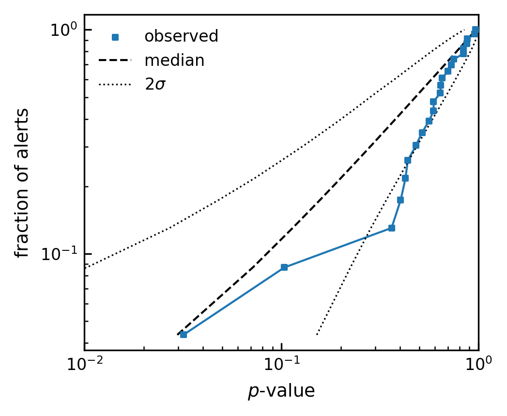<br />
图注：Cumulative $p$-value distribution for the analyzed events (blue). The dashed black line shows the median expectation obtained from $p$-values drawn from a uniform distribution, while the gray lines indicate the $2\sigma$-band around this median.<br />
对应解读：对应“候选排序统计量与背景分布图”“全样本概率汇总表”以及关键图表逐图导读中的图 3：全样本局部 p 值或概率分布是否偏离均匀背景。<br />
入选理由：这张图直接检验本文最核心的统计结论：所有 IceCube 触发对应的引力波搜索结果是否整体偏离无信号背景。蓝色累计 p 值分布与均匀分布期望及 2σ 带比较，可以判断是否存在一批事件系统性低 p 值；它比单个候选更能支撑‘没有统计显著关联’的结论，也能帮助读者避免把个别小概率事件误读为联合探测。<br />
来源与置信度：\(arxiv_source\)；high；\(arxiv_source\) / \(paper_submission.tex\):figure[1]</p>
<p><strong>Fig02</strong><br />
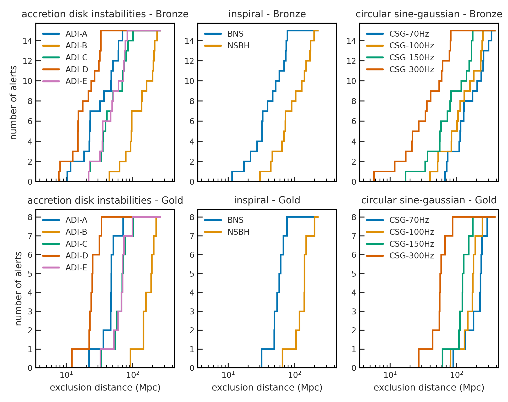<br />
图注：Exclusion distances at 90\% confidence level obtained for the different waveform classes for Bronze (top row) and Gold (bottom row) events.<br />
对应解读：对应“距离下限或排除表”和关键图表逐图导读中的图 5：不同波形类别、Bronze/Gold 中微子事件的 90% 置信水平排除距离。<br />
入选理由：这张图承载空结果转化为物理约束的主要信息，展示不同引力波波形类别在 Bronze 与 Gold 事件样本中的 90% 置信排除距离。它直接对应日报中强调的距离下限、波形依赖和能量/频率假设检查，是理解本文科学产出不可缺少的图。<br />
来源与置信度：\(arxiv_source\)；high；\(arxiv_source\) / \(paper_submission.tex\):figure[2]</p>
<h4 id="_100">强相关工作</h4>
<p>这篇工作属于“同类源/同类触发”的引力波—高能中微子联合搜索，而不是某个单一命名事件的后随论文。应把它放在三条文献线索中理解：第一，LIGO-Virgo-KAGRA 的瞬变引力波目录和亚阈值搜索；第二，IceCube 高能中微子实时告警和离线天体源样本；第三，围绕中微子触发的引力波 burst 搜索方法。检索关键词可用 “IceCube high-energy neutrino gravitational wave follow-up”, “LIGO Virgo unmodeled burst neutrino triggered search”, “subthreshold gravitational waves neutrino coincidence”。</p>
<p>与已有多信使结果相比，GW170817 证明了引力波与电磁对应体联合定位的力量，但它不是高能中微子亮源；TXS 0506+056 证明了高能中微子与电磁活动星系核关联的可能性，但没有引力波预期。本文站在这两个成功案例之间，寻找更难的中微子—引力波共同源。相反观点或张力主要来自源模型：许多高能中微子源可能是稳态或长时标活动星系核，不应产生 LIGO 频段强 burst；而许多 LIGO 频段强源，如普通双黑洞并合，又未必有富含重子的电磁环境来产生高能中微子。</p>
<p><strong>同一事件 / 同类源线索</strong>：</p>
<ul>
<li><a href="https://arxiv.org/abs/2607.28539">https://arxiv.org/abs/2607.28539</a></li>
<li><a href="https://arxiv.org/pdf/2607.28539">https://arxiv.org/pdf/2607.28539</a></li>
</ul>
<p><strong>相似工作</strong>：</p>
<ul>
<li><a href="https://arxiv.org/abs/2111.03606">https://arxiv.org/abs/2111.03606</a></li>
<li><a href="https://arxiv.org/abs/1807.08794">https://arxiv.org/abs/1807.08794</a></li>
<li><a href="https://arxiv.org/abs/1710.05832">https://arxiv.org/abs/1710.05832</a></li>
</ul>
<p><strong>基础理论 / 方法工作</strong>：</p>
<ul>
<li><a href="https://arxiv.org/abs/1602.03837">https://arxiv.org/abs/1602.03837</a></li>
<li><a href="https://arxiv.org/abs/1612.06028">https://arxiv.org/abs/1612.06028</a></li>
</ul>
<p><strong>相反观点 / 张力线索</strong>：</p>
<p>（未提供）</p>
</details>
<h3 id="10-binary-neutron-stars-in-the-next-generation-era-multi-messenger-detection-prospects-and-constraints-on-the-equation-of-state-mass-distribution-and-cosmology">10. Binary neutron stars in the next-generation era: Multi-messenger detection prospects and constraints on the equation of state, mass distribution, and cosmology</h3>
<ul>
<li>来源：arXiv / astro-ph.HE</li>
<li>链接：https://arxiv.org/abs/2607.28438v1</li>
<li>作者：Hauke Koehn, Thibeau Wouters, Gilad Sadeh, Peter T. H. Pang, Mattia Bulla, Chris Van Den Broeck, Michael W. Coughlin, Tim Dietrich</li>
<li>评分：novelty 7/10，importance 8/10，relevance 8/10，final 8.70/10</li>
<li>推荐理由：面向ET/CE时代的BNS多信使探测率、EOS、质量分布和宇宙学联合层级推断预测；与GRB余辉、千新星和致密星多信使策略相关，实用价值较高。</li>
</ul>
<p><strong>中文题目</strong>：下一代时代的双中子星：多信使探测前景及对状态方程、质量分布和宇宙学的约束</p>
<p><strong>做了什么</strong>：这篇论文评估了爱因斯坦望远镜（ET）和宇宙探索者（CE）时代，双中子星并合能产生多少可确认的多信使事件，并把这些事件用于联合层级贝叶斯推断。作者模拟引力波探测、电磁对应体随访、宿主星系红移获取，并同时约束中子星状态方程、双中子星质量分布和哈勃常数。主要结论是：在局域并合率取 \(106.6\,\mathrm{Gpc}^{-3}\,\mathrm{yr}^{-1}\) 时，ET 每年可确认约 \(40\) 到 \(100\) 个电磁对应体；ET 与 CE 联网时可达约 \(200\) 到 \(500\) 个。理想情况下，仅 ET 多信使样本就可能把典型 \(1.4\,M_\odot\) 中子星半径 \(R_{1.4}\) 约束到 \(\sim0.2\,\mathrm{km}\)，并把 \(H_0\) 约束到 \(\sim1\,\mathrm{km}\,\mathrm{s}^{-1}\,\mathrm{Mpc}^{-1}\)。</p>
<p><strong>为什么重要</strong>：双中子星是少数能把核物质物理、强场引力和宇宙学距离标尺放进同一个统计框架的天体系统。当前的 \(R_{1.4}\)、潮汐形变、双中子星质量函数和 \(H_0\) 约束仍受小样本、距离—倾角退化、电磁对应体识别效率和红移获取限制。下一代探测器不会只是“多探测几个事件”，而是把问题从单个标志性事件分析推进到人口统计学和系统误差主导的阶段。这篇文章的重要性在于，它把探测率预估与后续的联合层级推断连起来，直接回答：如果 ET/CE 建成，哪些物理量真的会被多信使样本显著改进。</p>
<p><strong>理论 / 观测 / 仪器方法价值</strong>：对理论而言，论文量化了双中子星潮汐信息和质量分布联合反演状态方程的能力，尤其说明电磁千新星光变对状态方程的增益可能小于直觉预期。对观测而言，它给出了下一代引力波触发后寻找千新星、伽马暴余辉和宿主红移的大致样本规模，能帮助规划广域巡天、深度随访和光谱资源。对方法而言，文章的核心价值是将状态方程、质量函数和宇宙学参数放入同一个层级贝叶斯框架，避免把红移、质量、潮汐参数和选择效应割裂处理。</p>
<p><strong>为什么应该关注</strong>：如果你关心 ET/CE 的科学产出，这篇论文提供了一个比较具体的答案：多信使双中子星会从“发现型天文学”变成“精密统计天文学”。如果你研究中子星状态方程，它提醒你未来误差预算可能不再由单个事件的信噪比决定，而由质量分布、选择函数和人口模型决定。如果你研究 \(H_0\) 张力，它展示了标准警报器在下一代探测器时代达到 \(\sim1\,\mathrm{km}\,\mathrm{s}^{-1}\,\mathrm{Mpc}^{-1}\) 量级的可能路线，同时也提示这种精度依赖电磁对应体和宿主识别的真实性。</p>
<details class="paper-detail">
<summary>展开详细解读：文章讲解、背景、理论、重点章节、图表与相关工作</summary>
<h4 id="_101">文章详细讲解</h4>
<p>科学问题：双中子星并合同时携带三类互补信息。引力波相位中的潮汐形变与中子星半径和状态方程相关；引力波振幅给出光度距离；电磁对应体，尤其千新星和短伽马暴余辉，可帮助定位、确认宿主星系并获得红移。当前样本太少，\(\mathrm{GW170817}\) 虽然极其重要，但不足以可靠地区分细致的状态方程、质量分布和宇宙学模型。下一代探测器将把探测距离和事件数提高几个数量级，关键问题变成：在现实随访条件下，真正能用于多信使层级推断的事件有多少，以及这些事件能把 \(R_{1.4}\)、质量分布和 \(H_0\) 推到什么精度。</p>
<p>作者怎么做：论文首先设定双中子星并合率、两种质量函数和下一代探测器构型，包括 ET 的不同布局以及 ET+CE 联网。随后用模拟注入生成双中子星人口，判断哪些事件被引力波探测器发现，再通过一个模拟电磁随访算法估计哪些事件能找到电磁对应体和宿主红移。质量函数分成窄分布和宽分布：前者集中在 \(1.4\,M_\odot\) 附近，后者覆盖约 \(1.1\) 到 \(2\,M_\odot\)。这一步很重要，因为质量分布不仅改变信号强度和潮汐信息，也改变抛射物性质与千新星可见性。</p>
<p>关键结果：在局域并合率 \(106.6\,\mathrm{Gpc}^{-3}\,\mathrm{yr}^{-1}\) 的假设下，ET 单独运行时，作者的随访算法给出每年至少 \(\sim40\) 个、最多 \(\sim100\) 个成功识别的电磁对应体，具体数值取决于探测器布局和质量分布。ET 与 CE 联网后，样本量增加到约 \(\sim200\) 到 \(\sim500\) 个。基于这些多信使事件的注入和恢复实验显示，在理想设定下，ET 样本可把 \(R_{1.4}\) 约束到约 \(0.2\,\mathrm{km}\)，把 \(H_0\) 约束到约 \(1\,\mathrm{km}\,\mathrm{s}^{-1}\,\mathrm{Mpc}^{-1}\)，并恢复质量分布的主要形态。一个有意思的结论是，加入千新星光变后验对状态方程约束帮助不大，但对宇宙学参数有增益，因为光变和对应体信息更直接改善红移、倾角或选择相关信息。</p>
<p>局限和下一步：这些结论建立在模拟随访策略、局域并合率、质量函数、千新星模型和宿主识别效率等假设之上。现实中的观测窗口、天气、月相、巡天深度、光谱资源、星系目录完备性、喷流角分布和千新星模型系统误差都可能改变可用样本。状态方程推断也可能受到自旋、相变、质量分布先验和波形系统误差影响。下一步应把更真实的观测调度、不同千新星辐射转移模型、星系巡天选择函数、暗标准警报器样本和多探测器网络运行占空比纳入同一框架。</p>
<h4 id="_102">关键结果是怎么做出来的</h4>
<p>数据和样本选择链条是本文的核心。作者不是只估算所有可探测双中子星的总数，而是先生成符合给定并合率与质量分布的宇宙学双中子星人口，再经过引力波探测阈值筛选，最后经过电磁随访算法筛选出“可确认多信使事件”。因此，最终用于层级推断的不是所有 GW 事件，而是有足够定位、可见电磁信号和红移信息的一部分。质量分布采用窄峰和宽分布两种极端化设定，用来检验未来样本对质量函数先验的敏感性。</p>
<p>事件数结果可理解为三个层级。第一层是 ET 单独发现大量双中子星；第二层是其中一部分定位足够好、距离足够近、千新星或余辉足够亮，可以由后续观测识别；第三层是有宿主红移或等价红移信息，可进入标准警报器推断。摘要给出的关键数值是 ET 每年约 \(40\) 到 \(100\) 个成功电磁对应体，ET+CE 联网约 \(200\) 到 \(500\) 个。这些范围本身就是对探测器布局、质量函数和随访效率系统差异的压缩表达。</p>
<p>统计推断方面，作者进行注入恢复实验，并在层级贝叶斯框架中同时拟合状态方程参数、双中子星质量分布参数和宇宙学参数。每个事件贡献一个事件级似然，包含引力波测得的距离、质量和潮汐信息，以及在多信使情形下的电磁光变和宿主红移信息。人口层的超参数通过所有事件的联合似然恢复，并需要考虑选择效应，因为被探测和被确认的事件并非总体的无偏抽样。</p>
<p>最关键的约束结果是 \(R_{1.4}\) 可达到约 \(0.2\,\mathrm{km}\) 精度，\(H_0\) 可达到约 \(1\,\mathrm{km}\,\mathrm{s}^{-1}\,\mathrm{Mpc}^{-1}\)。支撑这些结论的图表通常应包括：多信使探测数随探测器网络和质量函数变化的柱状图或表格；\(R_{1.4}\) 与状态方程参数的后验分布；\(H_0\) 的后验收缩；质量分布注入值与恢复后验的对比；以及只用 GW 与加入千新星光变两种方案的模型比较。</p>
<p>一个特别值得注意的结果是千新星光变后验对状态方程约束影响很小。其原因可能是，在高信噪比下一代 GW 样本中，潮汐相位已经直接提供强约束，而千新星光变的抛射物质量、速度和不透明度与状态方程之间存在较强模型退化。相反，光变信息对宇宙学有帮助，因为电磁对应体能改善宿主确认和红移使用，也可能间接约束倾角，从而缓解标准警报器距离推断中的倾角—距离退化。</p>
<p>系统误差和稳健性检验应重点看作者如何处理质量函数选择、ET 布局差异、CE 加入后的定位改善、千新星模型误差、红移测量假设和选择函数归一化。若论文只在较理想的设定下报告 \(R_{1.4}\) 与 \(H_0\) 的精度，读者应把它视作“方法可达性”和“资源规划参考”，而不是对实际运行后科学产出的保底承诺。</p>
<details class="paper-subdetail">
<summary>展开背景、理论、公式、模型、章节和图表导读</summary>
<h4 id="_103">背景知识</h4>
<p>双中子星并合是多信使天文学中最干净的一类系统。并合前的引力波信号由两颗致密星的质量、自旋、轨道演化和潮汐形变决定；并合后可能产生短伽马暴、余辉、千新星和晚期射电信号。\(\mathrm{GW170817}\) 和 \(\mathrm{AT2017gfo}\) 已经证明了这条链条：引力波给出距离和致密星性质，电磁观测给出宿主星系、红移、抛射物和喷流信息。</p>
<p>历史上的核心难题之一是中子星状态方程。核物质在几倍核饱和密度下的压强—密度关系无法由地面实验直接测定，而天体观测给出互补约束。质量最大的脉冲星要求状态方程足够硬，半径和潮汐形变测量又限制其不能过硬。双中子星引力波中的潮汐相位项提供了一条直接路径，但当前事件数很少，波形系统误差和质量—潮汐退化仍然明显。</p>
<p>另一个背景是标准警报器宇宙学。引力波可直接测量光度距离，不需要传统宇宙距离阶梯；若能通过电磁对应体或宿主星系得到红移，就可推断 \(H_0\)。\(\mathrm{GW170817}\) 已经给出一次独立测量，但误差主要受单事件距离—倾角退化和宿主星系本动速度影响。下一代探测器的高事件率为把标准警报器从个例推进到统计精密测量提供可能。</p>
<p>为什么现在值得重新看？因为 ET 和 CE 的灵敏度、低频起始频率和网络定位能力会彻底改变样本性质。当前地面探测器时代，很多讨论集中在“能不能发现”；下一代时代需要问“能不能系统地确认电磁对应体、能否获得红移、哪些系统误差成为主导”。论文把这些问题合并到一个模拟和推断框架中，因此更接近未来观测规划的真实需求。</p>
<p>该领域常见误区包括：第一，以为所有 GW 探测到的双中子星都有可用电磁对应体，实际上定位、亮度、太阳距角、巡天深度和宿主混淆会淘汰大量事件。第二，以为千新星一定显著改进状态方程，实际上千新星辐射模型中的抛射质量、不透明度、视角和核加热率会造成退化。第三，以为标准警报器只需要距离和红移，忽略了选择效应、宿主误认、星系本动速度和人口模型对 \(H_0\) 的影响。</p>
<h4 id="_104">基础理论 / 方法脉络</h4>
<p>基本物理图像从双中子星的轨道能量损失开始。两颗中子星绕转时发射引力波，轨道频率升高，波形相位积累大量周期。质量参数主要决定点粒子相位演化；当两星接近时，彼此潮汐场诱导四极矩，改变相位。这种修正由无量纲潮汐形变参数 \(\Lambda\) 控制，而 \(\Lambda\) 对半径非常敏感，近似随 \((R/M)^5\) 缩放，因此高信噪比双中子星样本能约束状态方程。</p>
<p>状态方程推断的关键不是给每个事件独立拟合一个半径，而是要求所有中子星共享同一条压强—密度关系。给定一个状态方程，可以通过托尔曼—奥本海默—沃尔科夫方程得到质量—半径关系和 \(\Lambda(M)\)。多事件样本中的不同质量中子星相当于在同一条曲线上取样，从而把单事件潮汐信息转化为对 \(R_{1.4}\) 或更一般状态方程参数的约束。</p>
<p>多信使宇宙学的基础是标准警报器。引力波振幅给出光度距离 \(d_L\)，而电磁对应体或宿主星系给出红移 \(z\)。在低红移近似下，二者满足 \(cz\approx H_0 d_L\)，但实际分析需考虑宇宙学模型、宿主本动速度和距离后验的非高斯性。双中子星的距离测量还与轨道倾角 \(\iota\) 退化：面向观测者的系统更亮，可能被误认为更近或更远，电磁余辉和千新星视角信息可部分缓解这一点。</p>
<p>本文的方法假设未来样本可由探测器灵敏度、质量分布、并合率和随访策略共同决定。引力波选择函数偏向高质量、近距离和有利取向事件；电磁选择函数又偏向定位好、亮度高、观测条件合适的事件。若在层级推断中忽略这些选择效应，质量分布、状态方程和 \(H_0\) 都可能产生偏差。</p>
<p>常见退化包括质量分布与状态方程的退化、距离与倾角的退化、千新星抛射质量与不透明度的退化，以及红移分布与宇宙学参数的退化。下一代探测器的优势是高信噪比和大样本，但大样本也会把波形校准、探测器标定、千新星模型、星系目录完备性等系统误差放大为主导误差。</p>
<h4 id="_105">公式与推导</h4>
<p>第一步是从双星的引力波相位主导质量尺度出发。对双星分量质量 \(m_1\) 和 \(m_2\)，啁啾质量定义为</p>
<div class="math-display">\[\mathcal{M}=\frac{(m_1m_2)^{3/5}}{(m_1+m_2)^{1/5}} .\]</div>
<p>这里 \(\mathcal{M}\) 控制最低阶相位演化，因而通常比单个质量测得更精确。红移会使探测到的质量变为 \(\mathcal{M}_z=(1+z)\mathcal{M}\)，这正是质量分布和宇宙学在层级推断中会耦合的原因。</p>
<p>第二步是连接波形振幅和光度距离。频域近似下，主导振幅可写成</p>
<div class="math-display">\[\tilde{h}(f)\propto \frac{\mathcal{M}_z^{5/6}}{d_L} f^{-7/6} \mathcal{A}(\iota,\psi,\alpha,\delta) .\]</div>
<p>其中 \(f\) 是频率，\(d_L\) 是光度距离，\(\mathcal{A}\) 包含倾角 \(\iota\)、偏振角 \(\psi\) 和天空位置 \((\alpha,\delta)\) 的天线响应。该式说明标准警报器的距离测量为什么会与取向和定位相关。</p>
<p>第三步是定义探测信噪比。对探测器噪声功率谱密度 \(S_n(f)\)，匹配滤波信噪比为</p>
<div class="math-display">\[\rho^2=4\int_{f_{\min}}^{f_{\max}}\frac{|\tilde{h}(f)|^2}{S_n(f)}\,df .\]</div>
<p>若 \(\rho\) 超过阈值，事件进入 GW 样本。ET 的低频灵敏度和 CE 的长臂高灵敏度会显著增加积分贡献，从而提高远距离双中子星的可探测性。</p>
<p>第四步是潮汐形变与半径的联系。单星无量纲潮汐形变可写为</p>
<div class="math-display">\[\Lambda=\frac{2}{3}k_2\left(\frac{c^2R}{GM}\right)^5 .\]</div>
<p>其中 \(k_2\) 是二阶 Love 数，\(R\) 是半径，\(M\) 是质量。因为 \(\Lambda\) 对紧致度 \(GM/(c^2R)\) 的五次方敏感，\(R_{1.4}\) 的小误差会对应可观的潮汐相位差。</p>
<p>第五步是双星波形中实际约束较强的质量加权潮汐量，常写为</p>
<div class="math-display">\[\tilde{\Lambda}=\frac{16}{13}\frac{(m_1+12m_2)m_1^4\Lambda_1+(m_2+12m_1)m_2^4\Lambda_2}{(m_1+m_2)^5} .\]</div>
<p>这里 \(\Lambda_1\) 和 \(\Lambda_2\) 由同一状态方程和各自质量决定。多事件联合约束 \(\tilde{\Lambda}\) 的统计分布，就能反推出共享的状态方程参数。</p>
<p>第六步是从状态方程到质量—半径曲线。给定压强 \(p(\epsilon)\) 与能量密度 \(\epsilon\)，静态球对称星满足</p>
<div class="math-display">\[\frac{dp}{dr}=-\frac{G(\epsilon+p/c^2)(m+4\pi r^3p/c^2)}{r^2\left(1-2Gm/(rc^2)\right)} .\]</div>
<p>同时有</p>
<div class="math-display">\[\frac{dm}{dr}=4\pi r^2\epsilon .\]</div>
<p>积分到 \(p=0\) 给出半径 \(R\) 和质量 \(M\)。本文关心的 \(R_{1.4}\) 就是这族解在 \(M=1.4\,M_\odot\) 处的半径。</p>
<p>第七步是标准警报器的宇宙学关系。在平直 \(\Lambda\mathrm{CDM}\) 中，光度距离为</p>
<div class="math-display">\[d_L(z;H_0,\Omega_m)=(1+z)c\int_0^z\frac{dz'}{H_0\sqrt{\Omega_m(1+z')^3+1-\Omega_m}} .\]</div>
<p>低红移时近似为 \(d_L\simeq cz/H_0\)，但下一代样本距离更远，层级推断需要使用完整关系或至少控制近似误差。</p>
<p>第八步是层级贝叶斯似然。若事件数据为 \(d_i\)，总体超参数为 \(\Theta\)，选择效应为 \(\alpha(\Theta)\)，则多事件后验可写为</p>
<div class="math-display">\[p(\Theta|\{d_i\})\propto p(\Theta)\prod_{i=1}^{N}\frac{\int p(d_i|\theta_i)p(\theta_i|\Theta)\,d\theta_i}{\alpha(\Theta)} .\]</div>
<p>其中 \(\theta_i\) 是事件级参数，\(p(\theta_i|\Theta)\) 编码质量分布、状态方程和红移分布。分母 \(\alpha(\Theta)\) 是选择函数归一化，避免把被探测样本误当作无偏总体。</p>
<p>第九步是电磁对应体的观测约束。简单地说，观测星等满足</p>
<div class="math-display">\[m_X(t)=M_X(t;M_{\rm ej},v_{\rm ej},\kappa,\iota)+5\log_{10}\left(\frac{d_L}{10\,\mathrm{pc}}\right)+A_X .\]</div>
<p>其中 \(M_X\) 是某滤光片 \(X\) 的绝对星等模型，\(M_{\rm ej}\) 是抛射质量，\(v_{\rm ej}\) 是抛射速度，\(\kappa\) 是不透明度，\(A_X\) 是消光。该式说明千新星光变能提供距离、视角或抛射物信息，但也会受辐射转移模型退化限制。</p>
<p>第十步是用模型比较或后验宽度衡量增益。若只用 GW 的后验为 \(p_{\rm GW}(H_0)\)，加入电磁信息后为 \(p_{\rm GW+EM}(H_0)\)，可用可信区间宽度比</p>
<div class="math-display">\[\mathcal{G}_{H_0}=\frac{\Delta H_{0,\rm GW}}{\Delta H_{0,\rm GW+EM}}\]</div>
<p>表示增益。本文结论可理解为：对 \(R_{1.4}\)，类似增益因子接近 \(1\)；对 \(H_0\)，加入千新星和宿主信息后 \(\mathcal{G}_{H_0}\) 更明显。</p>
<h4 id="_106">模型拟合 / 应用方法</h4>
<p>本文的拟合是层级贝叶斯问题，而不是把每个事件单独给出一个 \(R_{1.4}\) 或 \(H_0\) 后再平均。事件级参数包括分量质量、自旋、距离、倾角、天空位置、潮汐参数和可能的电磁光变参数；总体超参数包括状态方程参数、质量分布参数和宇宙学参数。每个事件的数据通过事件似然进入总体后验。</p>
<p>状态方程拟合的关键在于一致性约束：所有事件的 \(\Lambda(M)\) 必须由同一状态方程产生。若质量分布覆盖范围窄，事件主要集中在 \(1.4\,M_\odot\) 附近，那么 \(R_{1.4}\) 可以被很好约束，但高质量端或低质量端的状态方程信息有限。若质量分布较宽，样本能探测更大质量范围，但不同质量的可探测性、千新星亮度和潮汐灵敏度也会改变选择函数。</p>
<p>宇宙学拟合依赖光度距离和红移的联合使用。GW 给出 \(d_L\) 后验，EM 给出宿主红移或更可靠的宿主关联。拟合残差应理解为事件的 \(d_L\) 后验与宇宙学 \(d_L(z)\) 曲线之间的偏离，而不是普通线性回归残差。低红移事件受本动速度影响明显，高红移事件则受定位、宿主识别和选择函数影响更大。</p>
<p>千新星光变拟合通常包含抛射质量、速度、不透明度、视角、加热率和距离等参数。本文发现其对状态方程约束增益有限，这提示光变模型中的物理退化很强：相似的峰值亮度和颜色演化可能由不同 \(M_{\rm ej}\)、\(v_{\rm ej}\)、\(\kappa\) 与视角组合产生。除非辐射转移模型、早期多波段覆盖和光谱诊断显著改进，否则千新星更可靠的作用可能是确认对应体和辅助红移/取向，而非直接精密测半径。</p>
<p>选择效应是实际拟合最容易出错的部分。GW 探测偏向高信噪比事件，EM 随访偏向近距离、定位好、亮且观测条件好的事件。如果选择函数 \(\alpha(\Theta)\) 建模不足，质量分布会被偏向较高质量或较亮对应体，\(H_0\) 也可能因距离分布偏差而系统偏移。未来实际应用需要把探测器占空比、天空定位概率图、望远镜调度、星系目录和光谱成功率全部参数化或边缘化。</p>
<h4 id="_107">重点章节 / 结果段落怎么读</h4>
<p>数据/样本与注入设定：读者应首先查看作者如何设定局域双中子星并合率、红移分布、两种质量函数、状态方程注入以及探测器网络。这里决定了所有事件数和后验精度的基准。尤其要确认窄质量函数与宽质量函数的定义，以及是否包含自旋分布、最大质量限制和红移演化。</p>
<p>探测器与电磁随访方法：第二个重点是 GW 探测阈值、ET 不同布局、CE 联网方案和模拟随访算法。应读清楚“成功识别电磁对应体”的判据是什么：是千新星达到某星等阈值，还是还要求定位面积、观测窗口、宿主星系红移和颜色演化确认。</p>
<p>层级贝叶斯推断框架：方法部分最重要的是联合后验如何写，事件级后验如何被重加权到人口超参数，选择效应如何归一化。读者应特别关注状态方程、质量分布和宇宙学参数是否同时拟合，因为分开拟合可能低估误差。</p>
<p>主结果：重点读探测率表格、\(R_{1.4}\) 后验、\(H_0\) 后验和质量分布恢复图。比较 ET 单独与 ET+CE，窄质量函数与宽质量函数，只用 GW 与加入千新星光变的差异。不要只看最优精度，也要看不同假设下后验是否偏移。</p>
<p>讨论与稳健性：最后看作者如何解释千新星对状态方程增益较小、对宇宙学较有帮助这一结论。还要检查他们列出的现实限制，包括随访资源、千新星模型、电磁选择效应、宿主误认、波形系统误差和探测器标定。</p>
<h4 id="_108">建议重点查看的图表</h4>
<ol>
<li>
<p>探测率或多信使事件数图/表：检查 ET 不同布局、ET+CE 网络、窄/宽质量函数下每年成功对应体数量的变化，尤其看 \(40\) 到 \(100\) 和 \(200\) 到 \(500\) 的范围如何产生。</p>
</li>
<li>
<p>GW 探测样本与 EM 确认样本的距离/红移分布：看 EM 样本是否明显偏向低红移，以及 CE 加入是否主要增加远距离事件还是改善定位。</p>
</li>
<li>
<p>\(R_{1.4}\) 或状态方程参数后验图：看注入真值是否落在可信区间内，后验宽度是否确实达到 \(\sim0.2\,\mathrm{km}\)，以及不同质量函数下是否有系统偏移。</p>
</li>
<li>
<p>\(H_0\) 后验图：比较只用 GW、GW+千新星、GW+宿主红移等不同信息组合，检查 \(\sim1\,\mathrm{km}\,\mathrm{s}^{-1}\,\mathrm{Mpc}^{-1}\) 精度是否来自少数高质量事件还是全样本统计。</p>
</li>
<li>
<p>质量分布恢复图：看注入分布与恢复分布的峰值、宽度和尾部是否一致，尤其注意宽质量函数的高质量端是否受选择效应影响。</p>
</li>
<li>
<p>选择函数或随访成功率诊断：若有定位面积、峰值星等、观测时间延迟或宿主识别概率图，应检查哪些观测限制主导样本损失。</p>
</li>
<li>
<p>GW-only 与 GW+KN 对比图：重点看千新星信息对 \(R_{1.4}\) 后验几乎不变、对 \(H_0\) 后验收缩的证据是否直观清楚。</p>
</li>
<li>
<p>稳健性检验表：检查不同探测器构型、质量函数、并合率或模型设定下结果的变化幅度，判断结论是否只在理想场景成立。</p>
</li>
</ol>
<h4 id="_109">关键图表逐图导读</h4>
<p>图 1：若论文给出模拟流程或探测网络示意，读者应把它当作证据链地图来读。横向通常是从双中子星总体、GW 可探测样本、EM 可随访样本到有红移的多信使样本；纵向可能区分 ET 布局、ET+CE 和质量函数。陷阱是不要把 GW 探测总数误读为可用于标准警报器或状态方程联合推断的样本数。</p>
<p>图 2：探测率图通常以探测器构型或质量分布为横轴，以每年事件数为纵轴。数据柱或误差带代表不同随访假设下的成功对应体数量。关键看 ET 单独的 \(\sim40\) 到 \(\sim100\) 与 ET+CE 的 \(\sim200\) 到 \(\sim500\) 是否由定位改善、探测体积增大或电磁亮度选择共同驱动。读图陷阱是忽略并合率线性缩放：若真实局域并合率不同，绝对事件数会近似按比例改变。</p>
<p>图 3：红移或距离分布图的横轴通常是 \(z\) 或 \(d_L\)，纵轴是事件数或概率密度。GW 样本会延伸到更远处，而 EM 确认样本可能在低红移更集中。模型线若分窄/宽质量函数，需看质量分布如何改变可探测距离。陷阱是把红移分布的峰值当作宇宙并合率峰值；它往往主要由探测灵敏度和选择函数决定。</p>
<p>图 4：状态方程或 \(R_{1.4}\) 后验图通常以半径或 EOS 参数为横轴，纵轴为边缘后验概率；也可能是质量—半径曲线族。应检查注入真值是否位于最高后验密度区间内，以及 GW-only 与 GW+KN 曲线是否几乎重合。若重合，说明千新星光变没有显著增加 EOS 信息，这不是负结果，而是对未来资源投入很有指导意义。</p>
<p>图 5：\(H_0\) 后验图通常比较不同信息组合。横轴为 \(H_0\)，纵轴为归一化后验；曲线越窄表示约束越强。重点看加入电磁信息后峰值是否保持无偏且宽度缩小。陷阱是只看统计误差，不看是否包含宿主本动速度、红移误差、选择效应和探测器标定误差。</p>
<p>图 6：质量分布恢复图通常显示注入质量函数和层级推断后验包络。横轴为中子星质量，纵轴为概率密度或事件率密度。读者应关注峰值位置、分布宽度和高质量尾部是否恢复。如果宽质量函数的尾部恢复较差，可能会反过来影响状态方程推断，因为高质量中子星对最大质量和高密度 EOS 更敏感。</p>
<p>图 7：若有稳健性或系统误差图，应看不同探测器布局、质量函数、随访策略和信息组合的结果是否彼此一致。坐标轴可能是后验宽度、偏差或探测数。陷阱是把最乐观配置的结果当作通用预言；更合理的读法是把不同配置之间的散布视为方法层面的系统不确定度。</p>
</details>
<h4 id="_110">论文原图 / 可嵌入图片</h4>
<p><strong>Fig05</strong><br />
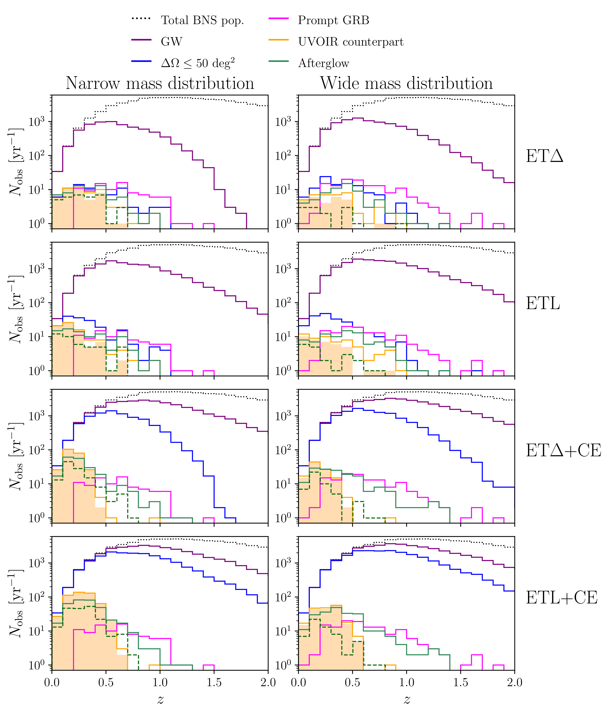<br />
图注：Redshift distribution of our projected \(\ac{BNS}\) detections in one year. The rows correspond to a specific next-generation \(\ac{GW}\) detector network. The left and right columns are for the narrow or wide mass distribution respectively. Different types of detections (\(\ac{GW}\) signal, \(\ac{GW}\) signal with UVOIR counterpart, etc.) are colour-coded according to the legend. The dotted line corresponds to the entire cosmic \(\ac{BNS}\) population. Orange patches mark UVOIR counterparts at least partially produced by a \(\ac{KN},\) while green dashed line marks afterglows at least partially visible as \(\ac{KN}\) afterglow (see text).<br />
对应解读：对应“建议重点查看的图表”第1、2项，以及“关键图表逐图导读”的图2、图3：探测样本与EM确认样本的红移分布、不同探测器网络和窄/宽质量函数下的事件类型分解。<br />
入选理由：这是候选图中最直接支撑多信使探测前景的核心图。它按下一代引力波网络、窄/宽质量分布和不同对应体类型展示一年内BNS探测的红移分布，可用于判断EM样本相对GW样本是否偏低红移，以及ET与ET+CE差异如何改变样本规模和距离覆盖。虽然不是单独的事件数柱状图，但它最接近日报中关于40--100和200--500多信使事件范围、选择函数和红移偏置的解读需求。<br />
来源与置信度：\(arxiv_source\)；high；\(arxiv_source\) / main.tex:figure[5]</p>
<p><strong>Fig06</strong><br />
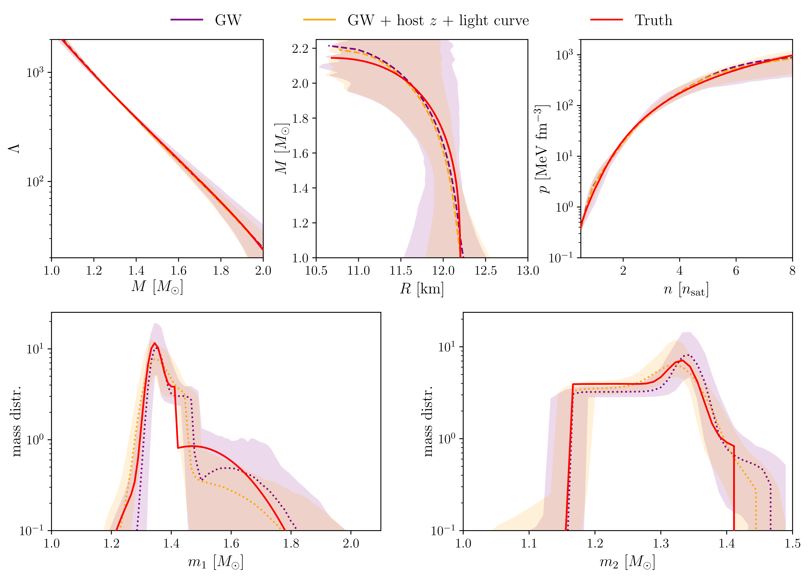<br />
图注：Joint hierarchical inference of the \(\ac{EOS}\) and mass distribution from the \(\ac{KN}\) events in the narrow+ETL catalogue. The posteriors are obtained using either only the \(\ac{GW}\) data (purple) or the full multi-messenger data (orange). The top panels show the \(\ac{EOS}\) posterior equivalently in terms of the $M$-$\Lambda$, $M$-$R$, and $n$-$p$ relationship with the 95\% credibility limits at each mass or density (shaded areas) and the highest-likelihood \(\ac{EOS}\) (dashed line). The bottom panels show the marginalized mass distribution density for primary and secondary mass, with the 95\% credibility limit at each mass (shaded areas) and the median (dotted line). The injected \(\ac{EOS}\) and mass distribution are shown as red lines.<br />
对应解读：对应“建议重点查看的图表”第3、5、7项，以及“关键图表逐图导读”的图4、图6：窄质量函数+ETL目录下EOS、质量分布恢复和GW-only与多信使对比。<br />
入选理由：该图同时给出EOS的M-Λ、M-R、n-p关系后验，以及主星/伴星质量分布的层级恢复，并明确比较GW-only与完整多信使数据，还标出注入真值。它能直接检验R_{1.4}约束、注入EOS是否落入可信区间、质量分布峰值和宽度是否恢复，以及千新星信息对EOS增益是否有限，是日报模型拟合段落最关键的证据图。<br />
来源与置信度：\(arxiv_source\)；high；\(arxiv_source\) / main.tex:figure[6]</p>
<p><strong>Fig12</strong><br />
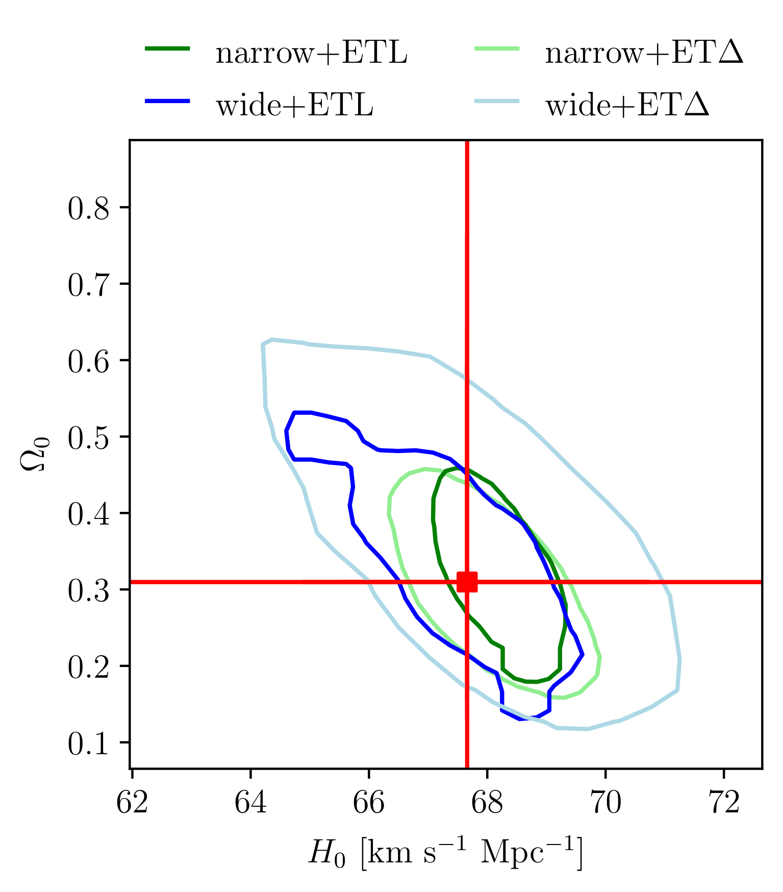<br />
图注：Cosmological constraints from the \(\ac{KN}\) events in all our catalogues, compared in different colours according to the legend. We show the 95\% credibility region for $H_0$ and $\Omega_0$, with the injected Planck18 parameters shown marked by red lines.<br />
对应解读：对应“建议重点查看的图表”第4、7项，以及“关键图表逐图导读”的图5：H_0和Ω_0宇宙学后验约束。<br />
入选理由：这是候选图中唯一直接展示宇宙学参数约束的图，给出不同目录下H_0与Ω_0的95%可信区域并标出Planck18注入值。它最适合支撑日报中关于H_0可达约1 km \(s^{-1}\) Mpc^{-1}精度、加入电磁信息后宇宙学约束改善以及是否无偏恢复注入宇宙学的讨论。<br />
来源与置信度：\(arxiv_source\)；high；\(arxiv_source\) / main.tex:figure[12]</p>
<p><strong>Fig07</strong><br />
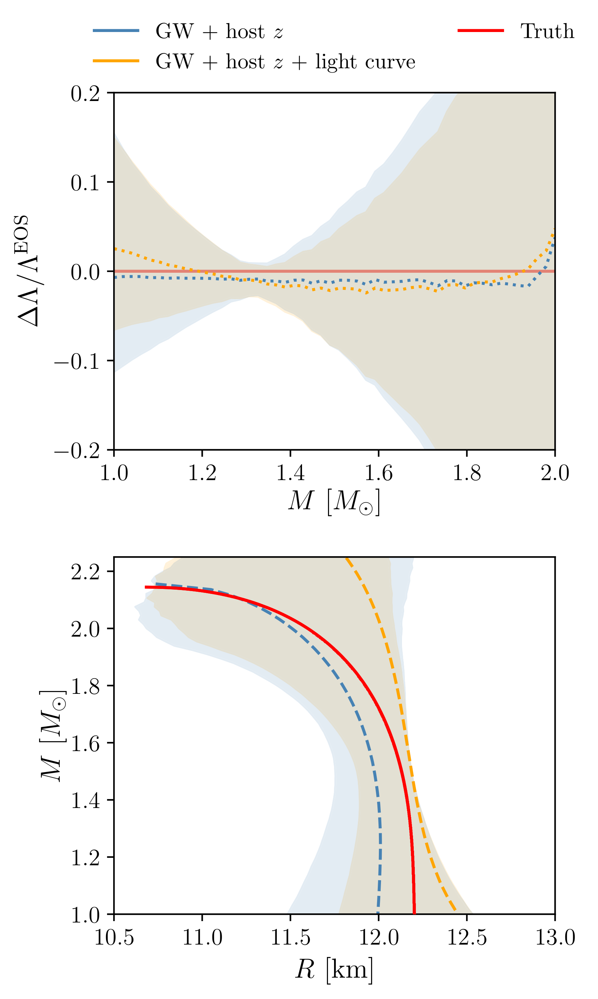<br />
图注：\(\ac{EOS}\) posteriors from the \(\ac{KN}\) events in narrow+ETL when the full multi-messenger information is used (orange) and when only based on the \(\ac{GW}\) signals and host galaxy redshifts (blue). The top panel shows the 95\% credibility intervals on the relative error for the $M$-$\Lambda$ relationship (shaded areas) and the median of the relative error (dotted line). The bottom panel displays the $M$-$R$ relationships, with the same layout as the corresponding panel in Fig.~\(\ref{fig:eos_inference_narrow_ETL}.\) For a better comparison, the posteriors in this figure are not reweighted with the detection probabilities.<br />
对应解读：对应“建议重点查看的图表”第3、7项，以及“关键图表逐图导读”的图4：GW+宿主红移与完整多信使信息对EOS后验的比较。<br />
入选理由：该图专门比较完整多信使信息与仅GW信号加宿主红移时的EOS后验，包括M-Λ相对误差和M-R关系。它比一般EOS图更直接回答日报强调的问题：千新星光变后验是否几乎不改变R_{1.4}/EOS约束。因此它是验证“KN对EOS帮助不大”这一结论的关键诊断图。<br />
来源与置信度：\(arxiv_source\)；high；\(arxiv_source\) / main.tex:figure[7]</p>
<p><strong>Fig08</strong><br />
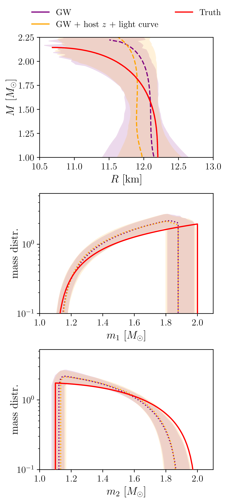<br />
图注：\(\ac{EOS}\) and mass distribution inference from the \(\ac{KN}\) events in the wide+ETL catalogue. The layout is equivalent to Fig.~\(\ref{fig:eos_inference_narrow_ETL},\) except we only show the $M$-$R$ representation of the \(\ac{EOS}\) posterior in the top panel.<br />
对应解读：对应“建议重点查看的图表”第3、5项，以及“关键图表逐图导读”的图4、图6：宽质量函数+ETL目录下EOS和质量分布恢复。<br />
入选理由：宽质量函数是论文主要情景之一，该图展示宽质量分布下M-R后验和质量分布恢复，可用于检查高质量端、尾部选择效应以及质量分布变化对EOS恢复的影响。它与Fig06形成窄/宽质量函数对照，能支撑日报中关于不同质量函数是否导致系统偏移或恢复困难的讨论。<br />
来源与置信度：\(arxiv_source\)；high；\(arxiv_source\) / main.tex:figure[8]</p>
<p><strong>Fig02</strong><br />
<br />
图注：Ejecta properties for the \(\ac{BNS}\) catalogues with the narrow (green) and wide (blue) mass distributions. The histograms with no filling and lighter colors represent \(\acp{BNS}\) that undergo prompt collapse. The distributions of 300 apparent $i$ band light curves for the narrow (penultimate panel) and wide (last panel) distributions are also shown. There, black (orange) solid lines are the median magnitude for \(\acp{KN}\) within $z\leq1.5$ and with (without) prompt collapse, and the dashed lines are the corresponding upper and lower 68\% magnitude quantiles.<br />
对应解读：对应“建议重点查看的图表”第6项，以及模型拟合段落中关于千新星光变、抛射物性质和电磁选择效应的说明。<br />
入选理由：该图展示窄/宽质量分布下的抛射物性质、prompt collapse子样本以及i波段千新星光变的中位数和68%分位范围，是理解EM对应体可见性和随访成功率的物理基础。它能帮助解释为什么EM样本会受亮度、塌缩类型和质量分布影响，从而支撑日报中关于选择函数和千新星模型退化的讨论。<br />
来源与置信度：\(arxiv_source\)；high；\(arxiv_source\) / main.tex:figure[2]</p>
<h4 id="_111">强相关工作</h4>
<p>这篇工作直接延续 \(\mathrm{GW170817}\) 之后的多信使双中子星研究传统。\(\mathrm{GW170817}\) 提供了引力波、短伽马暴、千新星和宿主星系红移的完整样板，但它是单事件；本文讨论的是 ET/CE 时代成百上千个事件中的可确认多信使子样本如何做层级推断。检索关键词可用 “GW170817 standard siren Hubble constant”, “AT2017gfo kilonova ejecta”, “binary neutron star tidal deformability equation of state”。</p>
<p>在方法上，它与双中子星潮汐 EOS 推断、标准警报器宇宙学和人群层级贝叶斯推断三类文献相连。相似工作常分别讨论 \(H_0\) 预测、EOS 预测或 ET/CE 探测率；本文的特点是把 EOS、质量分布和宇宙学放在同一个推断框架里。可能存在张力的方向包括：千新星模型是否足够可靠、EM 对应体识别效率是否过于乐观、下一代探测器标定误差是否会限制 \(H_0\)，以及质量分布模型错设是否会偏置状态方程。建议检索 “Einstein Telescope binary neutron star multimessenger forecasts”, “Cosmic Explorer standard sirens”, “hierarchical Bayesian EOS inference binary neutron stars”, “kilonova light curve systematics equation of state”。</p>
<p><strong>同一事件 / 同类源线索</strong>：</p>
<ul>
<li><a href="https://arxiv.org/abs/2607.28438">https://arxiv.org/abs/2607.28438</a></li>
<li><a href="https://arxiv.org/abs/1710.05832">https://arxiv.org/abs/1710.05832</a></li>
<li><a href="https://arxiv.org/abs/1710.05833">https://arxiv.org/abs/1710.05833</a></li>
<li><a href="https://arxiv.org/abs/1710.05835">https://arxiv.org/abs/1710.05835</a></li>
<li><a href="https://arxiv.org/abs/1710.05836">https://arxiv.org/abs/1710.05836</a></li>
</ul>
<p><strong>相似工作</strong>：</p>
<ul>
<li><a href="https://arxiv.org/abs/1805.11579">https://arxiv.org/abs/1805.11579</a></li>
<li><a href="https://arxiv.org/abs/1908.06060">https://arxiv.org/abs/1908.06060</a></li>
<li><a href="https://arxiv.org/abs/2001.01747">https://arxiv.org/abs/2001.01747</a></li>
<li><a href="https://arxiv.org/abs/2109.08736">https://arxiv.org/abs/2109.08736</a></li>
</ul>
<p><strong>基础理论 / 方法工作</strong>：</p>
<ul>
<li><a href="https://arxiv.org/abs/1710.05832">https://arxiv.org/abs/1710.05832</a></li>
<li><a href="https://arxiv.org/abs/1710.05833">https://arxiv.org/abs/1710.05833</a></li>
<li><a href="https://arxiv.org/abs/1710.05835">https://arxiv.org/abs/1710.05835</a></li>
<li><a href="https://arxiv.org/abs/1710.05836">https://arxiv.org/abs/1710.05836</a></li>
<li><a href="https://arxiv.org/abs/1805.11581">https://arxiv.org/abs/1805.11581</a></li>
</ul>
<p><strong>相反观点 / 张力线索</strong>：</p>
<ul>
<li><a href="https://arxiv.org/abs/1907.04869">https://arxiv.org/abs/1907.04869</a></li>
<li><a href="https://arxiv.org/abs/2112.06861">https://arxiv.org/abs/2112.06861</a></li>
<li><a href="https://arxiv.org/abs/2203.06142">https://arxiv.org/abs/2203.06142</a></li>
</ul>
</details>
<h3 id="11-high-mass-binary-black-hole-mergers-from-detailed-binary-evolution-models">11. High-mass binary black hole mergers from detailed binary evolution models</h3>
<ul>
<li>来源：arXiv / astro-ph.HE</li>
<li>链接：https://arxiv.org/abs/2607.27962v1</li>
<li>作者：Max M. Briel, Olcay Bıyıklı, Tassos Fragos, Anarya Ray, Zepei Xing, Monica Gallegos-Garcia, Abhishek Chattaraj, Jeff J. Andrews</li>
<li>评分：novelty 7/10，importance 8/10，relevance 8/10，final 8.70/10</li>
<li>推荐理由：用详细双星演化模型研究高质量BBH并合、超Eddington吸积和自旋/质量比分布，能直接约束LIGO高质量黑洞形成通道，值得HE/致密天体读者阅读。</li>
</ul>
<p><strong>中文题目</strong>：详细双星演化模型能否产生高质量双黑洞并合？</p>
<p><strong>做了什么</strong>：这篇文章用 POSYDON 详细双星演化模型研究孤立双星通道能否解释引力波观测中主黑洞质量高于约 \(40\,M_\odot\) 的双黑洞并合，尤其是质量比 \(q\)、有效自旋 \(\chi_{\rm eff}\) 和主黑洞质量 \(m_1\) 的联合分布。作者比较了三种黑洞吸积处方：爱丁顿限制、由广义相对论辐射磁流体模拟启发的超爱丁顿吸积、以及完全保守吸积，并额外改变黑洞诞生踢速度。主要结论是：超爱丁顿吸积本身不会消灭高质量双黑洞并合；但完全保守吸积会产生过强的 \(\chi_{\rm eff}\simeq0.6\) 峰和 \(q\simeq0.5\) 尖峰，与观测偏好的 \(\chi_{\rm eff}\simeq0\) 和较平坦质量比分布不符。爱丁顿限制和 GRRMHD 启发处方更接近观测，但要解释负 \(\chi_{\rm eff}\) 比例和高次级黑洞自旋，仍需要诞生踢或额外形成通道。</p>
<p><strong>为什么重要</strong>：高质量双黑洞是当前引力波天体物理中最能检验恒星演化、黑洞形成和动力学组装的样本之一。它们靠近甚至可能进入对不稳定质量间隙，单看质量分布已经不够，必须同时看 \(m_1\)、\(q\) 和 \(\chi_{\rm eff}\)。这篇文章的重要性在于，它把“稳定质量转移中的黑洞超爱丁顿吸积”这一具体物理假设放进详细双星演化框架，并直接与观测分布的多维特征比较，而不是只问能否造出几个大质量黑洞。</p>
<p><strong>理论 / 观测 / 仪器方法价值</strong>：理论上，本文给出了一条清晰约束：完全保守黑洞吸积若作为高质量双黑洞的主导机制，会在自旋和质量比上留下太强的特征，因而受到观测排斥。方法上，文章展示了如何用联合分布而非单一质量函数区分双星演化处方。对观测解释而言，结果提示高质量双黑洞样本中很可能混有多个形成通道，例如孤立双星、星团动力学、分层并合或化学均匀演化等。</p>
<p><strong>为什么应该关注</strong>：如果你关注 LVK 后续观测如何反推黑洞形成物理，这篇文章值得看，因为它说明未来样本增长后最有杀伤力的不是某个单独的大质量事件，而是 \(m_1\)、\(q\)、\(\chi_{\rm eff}\) 的联合形状。它还提醒我们：允许黑洞超爱丁顿吸积并不自动解决高质量双黑洞问题，吸积效率、角动量传递、诞生踢和自旋倾斜必须一起受约束。</p>
<details class="paper-detail">
<summary>展开详细解读：文章讲解、背景、理论、重点章节、图表与相关工作</summary>
<h4 id="_112">文章详细讲解</h4>
<p>科学问题：LVK 已经看到一批主黑洞质量 \(m_1\gtrsim40\,M_\odot\) 的双黑洞并合，其中一些事件接近对不稳定质量间隙，甚至被讨论为可能进入质量间隙。传统孤立双星演化在这个质量范围会遇到多个难题：恒星风质量损失会降低黑洞质量，对不稳定脉动或完全对不稳定超新星会限制黑洞质量，公共包层阶段和稳定质量转移阶段又会强烈影响轨道收缩、质量比和自旋。本文要问的是：如果在稳定质量转移期间允许黑洞以超爱丁顿速率吸积，是否能自然产生观测到的高质量双黑洞，并同时匹配 \(m_1\)、\(q\) 和 \(\chi_{\rm eff}\)？</p>
<p>作者怎么做：作者使用 POSYDON 进行详细双星演化模拟，重点筛选最终形成并在哈勃时间内并合的高质量双黑洞系统，尤其关注 \(m_1\) 高于约 \(40\,M_\odot\) 的子样本。他们比较三类黑洞吸积效率：一类是爱丁顿限制吸积，即黑洞在质量转移中只能吸收接近爱丁顿速率的物质量；一类是由 GRRMHD 结果启发的超爱丁顿吸积处方，允许比爱丁顿更高但不是完全保守的吸积；第三类是完全保守吸积，即供体转移出来的质量尽可能被黑洞接收。作者还改变黑洞诞生踢速度，包括在高质量黑洞上施加强踢，以检验自旋倾角和负 \(\chi_{\rm eff}\) 的来源。</p>
<p>关键结果：最直接的结果是，允许超爱丁顿吸积并不会在高质量区间压低双黑洞并合率，也就是说“高吸积率会使系统过度膨胀或破坏并合”的简单担忧并不成立。但是，完全保守吸积模型产生了很鲜明的观测特征：\(\chi_{\rm eff}\) 分布在约 \(0.6\) 附近出现强峰，质量比在 \(q\sim0.5\) 附近也出现尖峰，而且这些特征对踢速度并不容易洗掉。与之相比，LVK 推断的高质量双黑洞总体更偏向 \(\chi_{\rm eff}\simeq0\)，质量比分布也没有如此尖锐。因此，完全保守吸积很难作为高质量双黑洞的主导形成机制。</p>
<p>局限和下一步：爱丁顿限制和 GRRMHD 启发处方能较好再现 \(m_1\) 和 \(q\) 的部分观测特征，但对负 \(\chi_{\rm eff}\) 系统和高次级黑洞自旋仍显不足。负 \(\chi_{\rm eff}\) 通常需要自旋与轨道角动量显著错位，孤立双星若没有足够大的诞生踢或其他倾斜机制，很难大量产生。下一步需要把孤立双星通道与星团动力学、分层并合、三体或 AGN 盘通道进行混合族群拟合，并且在模型中进一步改进黑洞吸积角动量、恒星风、核塌缩踢和潮汐同步的不确定性。</p>
<h4 id="_113">关键结果是怎么做出来的</h4>
<p>本文最重要的证据链从样本定义开始：作者不是研究全部双黑洞，而是聚焦观测上最有争议的高质量区域，即主黑洞质量 \(m_1\gtrsim40\,M_\odot\) 的并合系统。这个切分很关键，因为低质量双黑洞可以由多种标准孤立双星路径解释，而高质量端同时受金属丰度、恒星风、对不稳定质量损失和吸积历史控制。作者在 POSYDON 族群中选取能在宇宙时间内并合的系统，并把模拟结果转换成可与引力波观测比较的 \(m_1\)、\(q\) 和 \(\chi_{\rm eff}\) 分布。</p>
<p>核心模型比较是三种吸积处方。爱丁顿限制模型中，黑洞在稳定质量转移期间增长有限，因此自旋增大也有限；GRRMHD 启发模型允许一定程度的超爱丁顿吸积，但吸积效率受磁流体流动、辐射外流和角动量输运限制；完全保守模型则接近把供体损失质量全部加到受体黑洞上。作者检验这些模型是否能在高质量端产生足够事件，并观察它们在质量比和有效自旋上留下的“指纹”。</p>
<p>结果的判别力主要来自联合分布而不是总事件数。完全保守吸积会让第一代黑洞在后续质量转移中显著增重并自旋上升，因此形成强烈正 \(\chi_{\rm eff}\) 峰，论文摘要指出峰值约为 \(\chi_{\rm eff}=0.6\)。同时，该通道会自然偏好某些质量转移比例，导致质量比在 \(q\sim0.5\) 处尖锐集中。这样的结构若存在于真实宇宙，应在 LVK 高质量双黑洞样本中表现为明显过量；但现有观测更偏向 \(\chi_{\rm eff}\simeq0\) 且质量比分布更平坦。</p>
<p>诞生踢的检验是本文稳健性的重要部分。若黑洞形成时获得踢速度，轨道角动量方向会改变，原本与轨道对齐的自旋可能被倾斜，从而把 \(\chi_{\rm eff}\) 推向较小甚至负值。作者发现，对于爱丁顿限制和 GRRMHD 启发处方，适度踢有助于产生更宽的 \(\chi_{\rm eff}\) 分布并解释一部分负 \(\chi_{\rm eff}\)；但完全保守吸积导致的强正自旋峰太强，不能简单靠踢速度完全消除。</p>
<p>统计上，这类比较通常依赖模型预测分布与观测后验或总体分布的匹配，而本文的结论应重点看不同处方在一维和二维分布中的形状差异：\(m_1\) 分布是否覆盖高质量端，\(q\) 是否过窄，\(\chi_{\rm eff}\) 是否过度正偏，以及二维平面中是否出现观测未支持的聚集区。读者应特别检查论文中关于吸积处方、踢速度和观测重加权的图表，因为这些图表直接决定“完全保守吸积被排斥”这一判断是否来自真实物理差异，而非选择函数或绘图归一化。</p>
<p>主要系统误差包括：高质量恒星风处方、金属丰度分布、对不稳定脉动模型、黑洞形成质量映射、诞生踢随回落质量的缩放、潮汐自旋同步效率、稳定质量转移判据，以及引力波选择效应。本文结论最稳健的部分是完全保守吸积产生的高 \(\chi_{\rm eff}\) 与尖锐 \(q\) 特征；较不稳健的部分是孤立双星通道在总率上能解释多少高质量事件，因为这还依赖宇宙恒星形成史、金属丰度分布和探测选择函数。</p>
<details class="paper-subdetail">
<summary>展开背景、理论、公式、模型、章节和图表导读</summary>
<h4 id="_114">背景知识</h4>
<p>研究对象是双黑洞并合，尤其是主黑洞质量 \(m_1\) 超过约 \(40\,M_\odot\) 的高质量系统。自 LIGO/Virgo/KAGRA 探测到越来越多双黑洞事件以来，黑洞质量谱的高质量端一直是形成通道判别的核心区域。低质量双黑洞可以由低金属丰度孤立双星较自然地产生，但 \(m_1\gtrsim40\,M_\odot\) 的系统会接近大质量恒星演化中的对不稳定限制，因此对恒星风、核反应率和前身星质量损失非常敏感。</p>
<p>历史问题之一是所谓对不稳定质量间隙。大质量氦核在高温下产生正负电子对，使辐射压下降，可能触发脉动性质量抛射或完全摧毁恒星。传统预期认为，这会在黑洞质量函数中留下一个缺口，大致位于几十到上百个太阳质量之间，具体边界随模型而变。GW190521 等高质量事件出现后，人们开始讨论是否需要分层并合、星团动力学或其他非标准通道来解释质量间隙附近的黑洞。</p>
<p>孤立双星通道的关键过程包括稳定质量转移、公共包层、潮汐同步、超新星或直接塌缩、黑洞诞生踢和引力波辐射驱动的轨道衰减。传统上，黑洞在质量转移中的吸积常被限制在爱丁顿速率附近，因为球对称稳态吸积下辐射压会阻止更高流率。但近年来的数值模拟显示，在厚盘、强外流和磁场主导结构中，黑洞可以以超爱丁顿方式增长，实际吸收比例取决于盘风、喷流和角动量输运。</p>
<p>现在重新看这个问题的原因是观测维度变多了。早期只要解释并合率和质量分布即可，现在 \(\chi_{\rm eff}\)、质量比 \(q\)、红移演化和可能的自旋进动都开始提供约束。单一通道可以在某个投影上看起来合理，却在另一个投影上失败。例如，一个模型可能能造出足够重的黑洞，但若同时预言大量 \(\chi_{\rm eff}\gg0\) 的系统，就会与观测中许多近零或负 \(\chi_{\rm eff}\) 事件冲突。</p>
<p>该领域常见误区包括：第一，把超爱丁顿吸积等同于完全保守吸积。实际上超爱丁顿只说明供给率或局部流率超过爱丁顿值，不代表转移质量全部进入黑洞。第二，把高质量黑洞自动归因于分层并合。分层并合确实能进入质量间隙，但低金属丰度孤立双星、稳定质量转移和吸积增长也可能贡献一部分。第三，把 \(\chi_{\rm eff}\simeq0\) 简单解释为黑洞无自旋；它也可能来自中等自旋但方向倾斜，或者两个自旋投影相互抵消。</p>
<h4 id="_115">基础理论 / 方法脉络</h4>
<p>基本物理图像是：双星中的一颗大质量恒星先演化并塌缩成黑洞，随后伴星膨胀并向黑洞转移质量。质量转移会改变两颗星的质量、轨道角动量和轨道间距。如果转移稳定，系统可能避免公共包层并保留下来；如果轨道最终足够紧，两个黑洞会通过引力波辐射损失能量，在哈勃时间内并合。</p>
<p>黑洞吸积处方决定两个关键量：黑洞质量增长和黑洞自旋增长。若吸积受爱丁顿限制，黑洞在供体核演化时间内只能增加有限质量，因而难以显著改变质量比和自旋。若吸积接近完全保守，第一颗黑洞可从伴星获得大量质量和角动量，导致受体黑洞变重并自旋变大。这会在最终双黑洞中表现为较低或特定的质量比 \(q=m_2/m_1\)，以及较大的正有效自旋 \(\chi_{\rm eff}\)。</p>
<p>\(\chi_{\rm eff}\) 是引力波最容易约束的自旋组合之一，它是两个黑洞自旋沿轨道角动量方向的质量加权投影。孤立双星若经历强潮汐同步和无踢直接塌缩，通常倾向于自旋与轨道对齐，从而产生非负 \(\chi_{\rm eff}\)。负 \(\chi_{\rm eff}\) 则要求至少一个自旋投影反向，常见机制包括黑洞诞生踢导致轨道面翻转或倾斜、动力学组装导致随机取向，或复杂三体演化。</p>
<p>本文的模型假设集中在 POSYDON 的详细恒星和双星演化网格上。与快速族群合成不同，详细模型能更精细地跟踪恒星半径、核心质量、质量转移稳定性和演化阶段，但代价是仍需对子网格物理作假设，例如恒星风、超新星引擎、黑洞吸积效率和角动量损失。论文比较不同吸积效率和踢速度，实际上是在问哪些子网格假设会在可观测分布上留下不可忽略的差异。</p>
<p>主要退化关系有三类。第一，质量分布中的高质量端同时受初始质量函数、金属丰度、恒星风和对不稳定处方控制，单靠 \(m_1\) 很难区分。第二，\(q\) 受质量转移效率和选择效应共同影响，因为高总质量且较对称的系统更容易被探测。第三，\(\chi_{\rm eff}\) 同时受吸积自旋增长、潮汐同步、诞生踢和动力学取向影响，因此必须与 \(q\) 和 \(m_1\) 联合解释。</p>
<h4 id="_116">公式与推导</h4>
<p>第一步是定义双黑洞的基本可观测质量参数。设两黑洞源系质量为 \(m_1\ge m_2\)，质量比为</p>
<div class="math-display">\[q=\frac{m_2}{m_1},\qquad 0<q\le 1 .\]</div>
<p>这里 \(q\) 越接近 \(1\)，系统越等质量；若模型在 \(q\sim0.5\) 产生尖峰，说明质量转移和黑洞增长选择出了特定质量层级。</p>
<p>引力波相位最敏感的质量组合是啁啾质量</p>
<div class="math-display">\[\mathcal{M}=\frac{(m_1m_2)^{3/5}}{(m_1+m_2)^{1/5}} .\]</div>
<p>在给定红移后，\(\mathcal{M}\) 决定 inspiral 相位演化的主导项。高质量双黑洞的 inspiral 周期较少，因此质量比和自旋的约束更依赖完整波形模型和并合环降阶段。</p>
<p>自旋约束的核心量是有效自旋</p>
<div class="math-display">\[\chi_{\rm eff}=\frac{m_1\chi_1\cos\theta_1+m_2\chi_2\cos\theta_2}{m_1+m_2} .\]</div>
<p>其中 \(\chi_i\) 是第 \(i\) 个黑洞的无量纲自旋大小，\(\theta_i\) 是自旋与轨道角动量的夹角。若孤立双星自旋大体对齐，则 \(\cos\theta_i>0\)，吸积增旋会把 \(\chi_{\rm eff}\) 推向正值；若诞生踢或动力学组装导致倾斜，则 \(\chi_{\rm eff}\) 可接近零或为负。</p>
<p>爱丁顿吸积率可从辐射效率和爱丁顿光度得到</p>
<div class="math-display">\[\dot{M}_{\rm Edd}=\frac{L_{\rm Edd}}{\eta c^2}=\frac{4\pi G M m_p}{\eta \sigma_T c} .\]</div>
<p>这里 \(M\) 是黑洞质量，\(m_p\) 是质子质量，\(\sigma_T\) 是汤姆孙截面，\(\eta\) 是辐射效率。爱丁顿限制模型令实际吸积率接近或不超过 \(\dot{M}_{\rm Edd}\)，因此在质量转移持续时间有限时，黑洞增长有限。</p>
<p>质量转移效率可写成</p>
<div class="math-display">\[\dot{M}_{\rm BH}=f_{\rm acc}\,|\dot{M}_{\rm donor}| .\]</div>
<p>其中 \(f_{\rm acc}\) 是吸积效率。完全保守吸积近似对应 \(f_{\rm acc}\simeq1\)，爱丁顿限制对应 \(\dot{M}_{\rm BH}\le \dot{M}_{\rm Edd}\)，GRRMHD 启发处方则允许 \(\dot{M}_{\rm BH}>\dot{M}_{\rm Edd}\) 但通常 \(f_{\rm acc}<1\)。这就是本文三种模型差异的最简数学表达。</p>
<p>吸积还会改变黑洞自旋。用角动量守恒的近似写法，黑洞角动量满足</p>
<div class="math-display">\[J_{\rm BH}=\chi\frac{G M^2}{c},\qquad dJ_{\rm BH}=l_{\rm acc}\,dM .\]</div>
<p>其中 \(l_{\rm acc}\) 是单位吸积质量携带的比角动量。若长期从盘吸积且角动量方向稳定，\(\chi\) 会增大并与轨道方向相关，从而提高 \(\chi_{\rm eff}\)。</p>
<p>双黑洞能否在宇宙时间内并合由引力波辐射时间控制。圆轨道近似下</p>
<div class="math-display">\[t_{\rm merge}=\frac{5c^5a^4}{256G^3m_1m_2(m_1+m_2)} .\]</div>
<p>这里 \(a\) 是双黑洞形成时的半长轴。稳定质量转移和公共包层都会改变 \(a\)，而高质量系统因分母更大，在相同 \(a\) 下并合更快。</p>
<p>观测比较需要考虑探测选择效应。若模型给出内禀参数分布 \(p_{\rm pop}(\theta|\Lambda)\)，探测到的分布近似为</p>
<div class="math-display">\[p_{\rm det}(\theta|\Lambda)=\frac{p_{\rm pop}(\theta|\Lambda)P_{\rm det}(\theta)}{\int p_{\rm pop}(\theta|\Lambda)P_{\rm det}(\theta)d\theta} .\]</div>
<p>其中 \(\theta\) 可包含 \(m_1\)、\(q\)、\(\chi_{\rm eff}\) 和红移，\(\Lambda\) 是族群模型参数，\(P_{\rm det}\) 是探测概率。高质量、较大啁啾质量系统更容易被探测，因此不能直接把模拟内禀分布与观测事件直方图比较。</p>
<p>若进行层级贝叶斯族群比较，观测数据 \(\{d_k\}\) 的似然可写为</p>
<div class="math-display">\[\mathcal{L}(\Lambda)\propto e^{-\mu(\Lambda)}\prod_{k=1}^{N}\int p(d_k|\theta)p_{\rm pop}(\theta|\Lambda)d\theta .\]</div>
<p>这里 \(N\) 是探测事件数，\(p(d_k|\theta)\) 是单事件似然，\(\mu(\Lambda)\) 是给定模型预期探测数。本文的物理判别可以理解为不同 \(\Lambda\) 对 \(m_1\)、\(q\)、\(\chi_{\rm eff}\) 联合分布给出不同形状，而观测后验对这些形状进行惩罚或支持。</p>
<h4 id="_117">模型拟合 / 应用方法</h4>
<p>本文或同类工作的拟合对象不是单颗恒星，而是双黑洞族群分布。核心参数包括主黑洞质量 \(m_1\)、次黑洞质量 \(m_2\)、质量比 \(q\)、有效自旋 \(\chi_{\rm eff}\)、并合红移以及可能的自旋进动参数。理论侧的超参数包括黑洞吸积效率、诞生踢速度分布、金属丰度分布、恒星形成史、恒星风强度和对不稳定处方。读者应区分“演化模型输入参数”和“引力波事件后验参数”：前者控制模拟族群，后者来自波形拟合。</p>
<p>统计上，最严格的做法是层级贝叶斯比较：对每个观测事件，把单事件后验重新加权到给定族群模型，再乘以选择函数和并合率项。若论文主要展示预测分布与观测总体推断的比较，也应检查是否考虑了探测选择效应。因为高质量系统的探测体积更大，观测样本会天然偏向大 \(\mathcal{M}\)；若不修正，模型可能看似更容易产生高质量黑洞。</p>
<p>残差诊断应看三个方向。第一，\(m_1\) 分布：模型是否只是在阈值附近堆积，还是能延伸到观测最高质量端。第二，\(q\) 分布：是否出现观测不支持的窄峰，例如本文指出完全保守吸积的 \(q\sim0.5\) 峰。第三，\(\chi_{\rm eff}\) 分布：是否过度偏正，是否能产生足够的近零和负值。一个模型即使在 \(m_1\) 上拟合好，只要在 \(\chi_{\rm eff}\) 上系统偏离，也不应被认为成功。</p>
<p>主要参数退化包括吸积效率与初始质量比的退化、诞生踢与自旋大小的退化、金属丰度与恒星风强度的退化，以及对不稳定边界与黑洞形成质量映射的退化。例如较弱恒星风和较低金属丰度都能增加黑洞质量；较大诞生踢和随机动力学组装都能产生更宽的自旋倾角分布。要打破这些退化，需要联合使用质量、自旋、红移演化和可能的偏心率或自旋进动信息。</p>
<p>模型可能失败的地方也很明确。完全保守吸积的失败不是因为它不能造出高质量双黑洞，而是因为它造出的高质量系统“太有特征”：正 \(\chi_{\rm eff}\) 峰太强、质量比峰太尖。爱丁顿限制和 GRRMHD 启发模型的挑战则是负 \(\chi_{\rm eff}\) 和高次级自旋不足。实际应用中，这类结果可用于构建混合族群模型，把孤立双星贡献限制在某个比例以内，并让动力学通道或分层并合解释剩余事件。</p>
<h4 id="_118">重点章节 / 结果段落怎么读</h4>
<p>数据/样本部分：优先看作者如何定义高质量双黑洞样本，特别是 \(m_1\gtrsim40\,M_\odot\) 的阈值、是否只保留哈勃时间内并合系统、是否加入探测选择函数或观测重加权。这个部分决定模型与 LVK 样本比较的公平性。</p>
<p>方法部分：重点读 POSYDON 模型设置，包括初始双星参数分布、金属丰度、恒星风、质量转移稳定性、黑洞形成和对不稳定处理。尤其要看三种吸积处方如何实现：爱丁顿限制、GRRMHD 启发超爱丁顿、完全保守吸积。不要只看名称，要看实际 \(f_{\rm acc}\) 或等效增长量。</p>
<p>诞生踢部分：仔细看踢速度分布如何设定，是否随黑洞质量或回落比例变化，以及“高质量黑洞强踢”是否作为极端检验。这个部分直接关系到负 \(\chi_{\rm eff}\) 的产生能力，也是孤立双星模型与动力学通道竞争的关键。</p>
<p>主结果部分：按 \(m_1\)、\(q\)、\(\chi_{\rm eff}\) 的顺序读，再看二维联合分布。本文最重要的判断来自完全保守吸积在 \(\chi_{\rm eff}=0.6\) 和 \(q\sim0.5\) 的强峰，以及爱丁顿限制和 GRRMHD 启发模型与观测分布的相对一致性。</p>
<p>讨论和稳健性部分：看作者如何解释“仍需额外形成通道”。这不是简单地说孤立双星失败，而是说某些吸积处方可以解释高质量族群的一部分，但负 \(\chi_{\rm eff}\)、高次级自旋和可能的质量间隙事件需要其他物理或混合通道。附录若有不同金属丰度、踢速度或选择函数测试，应优先检查。</p>
<h4 id="_119">建议重点查看的图表</h4>
<ol>
<li>
<p>各吸积处方下的主黑洞质量 \(m_1\) 分布：看高质量端是否能覆盖 \(m_1\gtrsim40\,M_\odot\)，以及是否在对不稳定边界附近出现截断或堆积。</p>
</li>
<li>
<p>质量比 \(q\) 分布：重点看完全保守吸积是否在 \(q\sim0.5\) 形成窄峰，爱丁顿限制和 GRRMHD 启发模型是否更平坦，观测置信区间是否排斥尖峰。</p>
</li>
<li>
<p>有效自旋 \(\chi_{\rm eff}\) 分布：检查完全保守吸积的 \(\chi_{\rm eff}\simeq0.6\) 峰、观测偏好的 \(\chi_{\rm eff}\simeq0\)，以及负 \(\chi_{\rm eff}\) 尾部是否足够。</p>
</li>
<li>
<p>\(m_1\)–\(q\) 二维图：看高质量系统是否集中在特定质量比，是否存在观测未显示的模型聚类。</p>
</li>
<li>
<p>\(q\)–\(\chi_{\rm eff}\) 或 \(m_1\)–\(\chi_{\rm eff}\) 二维图：这是区分吸积处方最关键的诊断图，应看正自旋峰是否只出现在某类质量比系统中。</p>
</li>
<li>
<p>踢速度变化图：比较无踢、适度踢和强踢下 \(\chi_{\rm eff}\) 的变化，判断负 \(\chi_{\rm eff}\) 是否来自物理上合理的踢速度。</p>
</li>
<li>
<p>模型与 LVK 总体推断的对比表或似然/证据表：若论文给出模型优劣排序，应检查其是否包括选择效应、并合率归一化和观测不确定性。</p>
</li>
<li>
<p>稳健性检验图或附录表：看改变金属丰度、恒星风、黑洞形成处方后，完全保守吸积的尖峰特征是否仍存在。</p>
</li>
</ol>
<h4 id="_120">关键图表逐图导读</h4>
<p>图 1：建议首先找模型流程或参数空间覆盖图。横轴和纵轴可能是初始主星质量、初始质量比、初始轨道周期或金属丰度，颜色标出最终产物类型。读图时应看高质量双黑洞来自哪些初始区域，以及三种吸积处方是否改变了可并合系统的来源区域。陷阱是不要把形成双黑洞的区域直接等同于可探测并合区域；还要看并合时间和选择函数。</p>
<p>图 2：主黑洞质量 \(m_1\) 分布通常是判断高质量端能否形成的第一张结果图。横轴应为 \(m_1\)，纵轴可能是归一化概率密度、并合率密度或探测加权数量。模型线对应爱丁顿限制、GRRMHD 启发和完全保守吸积，观测带可能来自 LVK 总体推断。读图重点是 \(40\,M_\odot\) 以上的斜率、截断和是否进入质量间隙；陷阱是纵轴若归一化为单位面积，就不能直接读总率。</p>
<p>图 3：质量比 \(q\) 分布是本文的关键判据之一。横轴为 \(q\)，纵轴为概率密度或事件率。完全保守吸积若在 \(q\sim0.5\) 有尖峰，说明模型产生了非常特定的质量层级；若观测带更平坦，则该尖峰是模型缺陷。读图陷阱是探测选择效应会偏好较等质量系统，因此若未经选择函数处理，低 \(q\) 或中等 \(q\) 的比较可能有偏。</p>
<p>图 4：\(\chi_{\rm eff}\) 分布应作为全文最重要的图之一。横轴为 \(\chi_{\rm eff}\)，范围通常在 \([-1,1]\)，纵轴为概率密度或事件率。完全保守吸积的 \(\chi_{\rm eff}\simeq0.6\) 峰若明显高于观测允许范围，就构成排斥该通道主导性的主要证据。陷阱是单事件 \(\chi_{\rm eff}\) 后验常较宽，不能把观测直方图中的峰谷过度解释；应看总体推断置信带。</p>
<p>图 5：二维 \(q\)–\(\chi_{\rm eff}\) 或 \(m_1\)–\(\chi_{\rm eff}\) 图能显示一维投影看不到的相关性。坐标轴分别为质量比或主质量与有效自旋，颜色表示模型密度，观测事件可叠加为后验轮廓。读图重点是完全保守吸积是否在某一块区域形成高密度岛，而观测事件是否缺少相应聚集。陷阱是二维颜色图受平滑核和样本权重影响，需结合一维边缘分布。</p>
<p>图 6：踢速度敏感性图通常展示不同踢处方下 \(\chi_{\rm eff}\) 或倾角分布的变化。读图应看负 \(\chi_{\rm eff}\) 尾部是否随踢速度增强而增加，以及这种增加是否以破坏并合率或改变 \(q\) 分布为代价。若强踢才能解释负 \(\chi_{\rm eff}\)，还要问这种强踢对高质量黑洞是否有独立观测支持。</p>
<p>图 7：若有模型比较或残差图，横轴可能是模型名称，纵轴为似然差、贝叶斯因子、\(p\)-值、KS 统计量或某种距离度量。读图时不要只看排名，还要看误差条和系统误差范围。若完全保守吸积在 \(m_1\) 上表现好但在 \(\chi_{\rm eff}\) 上表现差，应优先相信联合指标而非单一投影。</p>
</details>
<h4 id="_121">论文原图 / 可嵌入图片</h4>
<p><strong>Fig03</strong><br />
<br />
图注：\(\chieff\) distributions for the different populations, as in Figure~\(\ref{fig:m1_distributions}\) and \(\ref{fig:mass_ratio}.\) The low and normal kicks are described in Section \(\ref{sec:methods}.\) The predicted BBH mergers are limited to $M_1>39.7\Msun$ and $0.15 \leq z \leq 0.25$. The \(\BGP\) model in gray is limited to the same mass range and evaluated at $z=0.2$.<br />
对应解读：对应“建议重点查看的图表”第3项和“关键图表逐图导读”图4：有效自旋 \(\chi_{\rm eff}\) 分布；也对应模型拟合段落中关于完全保守吸积 \(\chi_{\rm eff}\simeq0.6\) 峰、观测偏好近零和负 \(\chi_{\rm eff}\) 不足的核心诊断。<br />
入选理由：这是判断完全保守吸积是否被观测排斥的最关键一维图，直接比较三种吸积效率、三种踢速度处方与 GWTC-5.0 BGP 95% 推断区间，能检验正自旋峰、近零峰和负自旋尾部，科学价值最高。<br />
来源与置信度：\(arxiv_source\)；high；\(arxiv_source\) / main.tex:figure[3]</p>
<p><strong>Fig02</strong><br />
<br />
图注：Mass ratio distributions for BBH mergers with $\Mone>39.7\Msun$ between $0.15 \leq z\leq 0.25$ shown for the \(\texttt{No kick}\) (left), \(\texttt{Low kick}\) (middle), and \(\texttt{Normal kick}\) (right) natal kick prescriptions, each evaluated with the Eddington-limited (blue), GRRMHD-informed (orange), and fully conservative (pink) BH accretion efficiencies. The gray shaded region denotes the \(\BGP\) inferred mass ratio distribution conditioned on $\Mone > 39.7\,\Msun$ and evaluated at $z=0.2$. The low and normal kicks are defined in Section~\(\ref{sec:methods}.\)<br />
对应解读：对应“建议重点查看的图表”第2项和“关键图表逐图导读”图3：质量比 \(q\) 分布；也对应模型拟合段落中完全保守吸积在 \(q\sim0.5\) 出现观测不支持窄峰的残差诊断。<br />
入选理由：质量比是本文排除完全保守吸积主导性的另一条核心证据。该图直接展示 Eddington-limited、GRRMHD-informed、fully conservative 三类模型在不同 natal kick 下的 \(q\) 分布，并叠加 BGP 观测置信区间，最适合支撑日报关于 \(q\sim0.5\) 尖峰的解读。<br />
来源与置信度：\(arxiv_source\)；high；\(arxiv_source\) / main.tex:figure[2]</p>
<p><strong>Fig04</strong><br />
<br />
图注：Two-dimensional density of properties of BBH mergers with $\Mone>39.7\Msun$ for Eddington-limited (left), GRRMHD-informed (middle), and conservative (right) BH accretion efficiencies in the interval $z = \left[0.15, 0.25\right]$ with no natal kick. The top row shows the mass ratio against primary mass with contours at 68\%, 95\%, and 99\% (dark red to light yellow). Additionally, the \(\BGP\) model from \(\texttt{GWTC-5.0}\) events is shown as the gray background 2-dimensional histogram. The bottom row shows $\chi_\mathrm{eff}$ against \(\Mone.\)<br />
对应解读：对应“建议重点查看的图表”第4、5项和“关键图表逐图导读”图5：无踢情况下的 \(m_1\)–\(q\) 与 \(m_1\)–\(\chi_{\rm eff}\) 二维诊断。<br />
入选理由：该图把三种吸积处方放在同一二维框架中比较，并叠加 GWTC-5.0 BGP 二维背景，可显示一维分布隐藏的模型聚类，例如完全保守吸积是否在特定质量比和正 \(\chi_{\rm eff}\) 区域形成高密度岛，是区分吸积处方的关键图。<br />
来源与置信度：\(arxiv_source\)；high；\(arxiv_source\) / main.tex:figure[4]</p>
<p><strong>Fig05</strong><br />
<br />
图注：Predicted intrinsic population properties of BBH mergers with $0.15\leq z\leq 0.25$ and $\Mone\geq39.7\Msun$ from the GRRMHD BH accretion with no natal kick (left), a small natal kick (middle), and $\mu=270$km/s natal kick (right) populations. The top row shows the mass ratio against primary mass with contours at 68\%, 95\%, and 99\% (dark red to light yellow). Additionally, the \(\texttt{BGP}\) model from \(\texttt{GWTC-5.0}\) events is shown as the gray background 2-dimensional histogram \(\citep{Abac+25b}.\) The bottom row shows \(\chieff\) against \(\Mone.\)<br />
对应解读：对应“建议重点查看的图表”第5、6项和“关键图表逐图导读”图6：GRRMHD 吸积处方下不同踢速度对 \(m_1\)–\(q\) 与 \(m_1\)–\(\chi_{\rm eff}\) 的影响。<br />
入选理由：该图专门比较无踢、小踢和 \(\mu=270\\,\mathrm{km\\,s^{-1}}\) 强踢对二维族群分布的改变，能检验负 \(\chi_{\rm eff}\) 是否需要强踢以及强踢是否同时改变质量比和主质量分布，是日报中踢速度物理合理性讨论的最佳配图。<br />
来源与置信度：\(arxiv_source\)；high；\(arxiv_source\) / main.tex:figure[5]</p>
<p><strong>Fig01</strong><br />
<br />
图注：Primary BH mass distribution of BBH mergers with $0.15\leq z \leq 0.25$ and $\Mone>39.7\Msun$ for the Eddington-limited (blue), GRRMHD-informed (orange) and fully conservative (pink) BH accretion efficiency models. From left to right, the panel show populations with no kick, the low kick, and normal kick. The gray region is 95\% confidence interval of the \(\BGP\) model based on \(\texttt{GWTC-5.0}\) events with $\Mone \geq 39.7\Msun$ evaluated at $z=0.2$.<br />
对应解读：对应“建议重点查看的图表”第1项和“关键图表逐图导读”图2：主黑洞质量 \(m_1\) 分布及高质量端覆盖。<br />
入选理由：该图直接展示 \(m_1>39.7\\,M_\odot\)、\(0.15\le z\le0.25\) 子样本中三种吸积模型在不同踢处方下的主黑洞质量分布，并给出 BGP 95% 置信区间，可支撑关于高质量端斜率、截断、堆积和质量间隙附近覆盖能力的解读。<br />
来源与置信度：\(arxiv_source\)；high；\(arxiv_source\) / main.tex:figure[1]</p>
<p><strong>Fig09</strong><br />
<br />
图注：Slices of the \(\texttt{CO-HMS\_RLO}\) \(\mesa\) grids at $Z=10^{-2}\, \Zsun$ with $M_\mathrm{donor}\approx 33\,\Msun$ with Eddington-limited (left), GRRMHD-informed (middle), and fully conservative (right) BH accretion. The diamond markers in red and orange indicate models reaching the unstable mass transfer conditions of the maximum mass transfer rate of 0.1\Msun/yr and $L_2$ outflow, respectively. Stable mass transfer models are indicates with square markers, where systems with a final orbital configuration that merge within the Hubble time are marked in light blue while non-merging systems are marked in dark blue. The period and $M_\mathrm{acc}/\Mdonor$ are at the start of Roche lobe, since the \(\texttt{CO-HMS\_RLO}\) grid starts there. This causes the models in the top-right to not follow the initial grid paramters in the top-right.<br />
对应解读：对应“关键图表逐图导读”图1：模型参数空间或稳定质量转移来源区域；也对应“作者怎么做”中 POSYDON/MESA 稳定质量转移网格的物理基础。<br />
入选理由：虽然不是最终族群分布图，但它展示 CO-\(HMS_RLO\) 网格中不同吸积处方下稳定/不稳定质量转移、可在哈勃时间内并合与不可并合系统的参数区域，有助于解释高质量双黑洞来自哪些初始轨道周期和质量比条件，补足结果图背后的演化物理。<br />
来源与置信度：\(arxiv_source\)；high；\(arxiv_source\) / main.tex:figure[9]</p>
<h4 id="_122">强相关工作</h4>
<p>这篇工作应放在三条文献线索中阅读。第一条是 LVK 双黑洞总体族群研究，特别是 GWTC-3 及其族群性质论文，它们给出高质量端、质量比和 \(\chi_{\rm eff}\) 分布的观测基准。检索关键词可用 “GWTC-3 population properties binary black hole mass spin \(chi_eff\)”。第二条是高质量事件和质量间隙讨论，尤其 GW190521 相关论文，因为它是推动“是否需要分层并合或其他通道”的代表事件。检索关键词可用 “GW190521 pair-instability mass gap hierarchical merger”。</p>
<p>第三条是孤立双星和详细族群合成模型，包括 POSYDON、COMPAS、StarTrack、BPASS 等框架，以及关于稳定质量转移、公共包层和黑洞超爱丁顿吸积的理论论文。本文的相近工作会讨论黑洞在高质量 X 射线双星或双星质量转移阶段能否超爱丁顿吸积，以及这对双黑洞自旋的影响。相反观点或张力主要来自动力学形成模型：星团通道天然给出较随机的自旋取向和更多负 \(\chi_{\rm eff}\)，但在质量比、偏心率、红移演化和分层并合率上有自己的约束。建议检索 “isolated binary evolution high mass BBH super-Eddington accretion”, “dynamical formation negative \(chi_eff\) BBH”, “pair instability black hole mass gap binary evolution”。</p>
<p><strong>同一事件 / 同类源线索</strong>：</p>
<ul>
<li><a href="https://arxiv.org/abs/2607.27962">https://arxiv.org/abs/2607.27962</a></li>
<li><a href="https://arxiv.org/abs/2111.03606">https://arxiv.org/abs/2111.03606</a></li>
<li><a href="https://arxiv.org/abs/2111.03634">https://arxiv.org/abs/2111.03634</a></li>
<li><a href="https://arxiv.org/abs/2009.01075">https://arxiv.org/abs/2009.01075</a></li>
<li><a href="https://arxiv.org/abs/2009.01190">https://arxiv.org/abs/2009.01190</a></li>
</ul>
<p><strong>相似工作</strong>：</p>
<ul>
<li><a href="https://arxiv.org/abs/2202.05892">https://arxiv.org/abs/2202.05892</a></li>
<li><a href="https://arxiv.org/abs/2111.08775">https://arxiv.org/abs/2111.08775</a></li>
<li><a href="https://arxiv.org/abs/2011.11948">https://arxiv.org/abs/2011.11948</a></li>
</ul>
<p><strong>基础理论 / 方法工作</strong>：</p>
<ul>
<li><a href="https://arxiv.org/abs/1607.07431">https://arxiv.org/abs/1607.07431</a></li>
<li><a href="https://arxiv.org/abs/1602.04531">https://arxiv.org/abs/1602.04531</a></li>
<li><a href="https://arxiv.org/abs/2106.00699">https://arxiv.org/abs/2106.00699</a></li>
</ul>
<p><strong>相反观点 / 张力线索</strong>：</p>
<ul>
<li><a href="https://arxiv.org/abs/1602.03842">https://arxiv.org/abs/1602.03842</a></li>
<li><a href="https://arxiv.org/abs/2006.06690">https://arxiv.org/abs/2006.06690</a></li>
<li><a href="https://arxiv.org/abs/2010.14533">https://arxiv.org/abs/2010.14533</a></li>
</ul>
</details>
<h3 id="12-distinct-jet-properties-in-the-x-ray-obscured-state-of-grs-1915105">12. Distinct Jet Properties in the X-Ray-Obscured State of GRS 1915+105</h3>
<ul>
<li>来源：arXiv / astro-ph.HE</li>
<li>链接：https://arxiv.org/abs/2607.27688v1</li>
<li>作者：Xi Yan, Lang Cui, Sergei Trushkin, Shuangjing Xu, Wu Jiang, Zhen Yan, Sándor Frey, Timur Mufakharov</li>
<li>评分：novelty 7/10，importance 8/10，relevance 8/10，final 8.70/10</li>
<li>推荐理由：GRS 1915+105遮蔽态期间VLBI射电喷流成像，给出较慢喷流和形态变化证据，对X射线双星喷流状态依赖和相对论喷流物理有较高参考价值。</li>
</ul>
<p><strong>中文题目</strong>：Distinct Jet Properties in the X-Ray-Obscured State of GRS 1915+105</p>
<p><strong>做了什么</strong>：本文利用 RATAN-600 多频射电监测和 EAVN 6.7 GHz VLBI 成像，研究 GRS 1915+105 在 2019 年后 X 射线遮蔽态中强射电耀发期间的喷流性质。两个 2025 年观测历元显示明显不同的形态：epoch A 有明亮射电核心和延展喷流，epoch B 则由两个对称分离的亮喷流团块主导且无可探测核心。分时 VLBI 成像未发现 5 小时内显著角位移，结合双侧结构给出的 \(\beta\cos\theta=0.11\pm0.04\) 与 \(\beta_{\rm app}\lesssim0.39\)，作者得到 \(\beta\Gamma\lesssim0.40\) 的较慢喷流约束。与 2019 年前非遮蔽态中常见的 \(\beta\Gamma\gtrsim1\) 相对论喷流相比，本文支持遮蔽态喷流具有不同传播性质。</p>
<p><strong>为什么重要</strong>：其重要性在于它提供了遮蔽态与非遮蔽态喷流可能具有不同传播性质的直接观测证据。过去 GRS 1915+105 的超光速喷流支撑了恒星级黑洞可产生相对论喷流的经典图像；本文则显示，在 2019 年后遮蔽态中，2025 年耀发喷流没有表现出预期的快速角位移，并被限制在较低 \(\beta\Gamma\) 区间。若这一趋势被后续多历元观测确认，它将影响我们对喷流发射条件、吸积态分类、遮蔽介质作用和喷流—环境相互作用的理解，也会为比较 X 射线双星与 AGN 喷流状态转变提供新的近距离实验室。</p>
<p><strong>理论 / 观测 / 仪器方法价值</strong>：这篇论文的价值在于把一个经典微类星体的状态转变与可分辨喷流运动学直接联系起来。它不仅报告射电耀发，还用 VLBI 成像区分核心、延展结构和双侧团块，并通过分时图像给出速度上限。方法上，它展示了如何把多频光谱状态、毫角秒成像、双侧几何约束和历史速度比较合并为一条物理证据链。观测上，它为 2019 年后 GRS 1915+105 遮蔽态喷流建立了新的速度基准；理论上，它促使模型解释为什么遮蔽态喷流可能更慢、方向更不稳定或更易受周围介质影响。</p>
<p><strong>为什么应该关注</strong>：值得关注的原因是 GRS 1915+105 不是普通个例，而是恒星质量黑洞相对论喷流研究的标杆源。如果这个标杆源在遮蔽态中从高速喷流转为较慢喷流，那么很多关于 X 射线状态、吸积几何和喷流加速效率的经验图像都需要重新校准。本文还提醒读者，强射电耀发并不必然意味着高速喷流；只有结合 VLBI 运动学、双侧几何和谱演化，才能判断喷流真正的 bulk motion。对于研究黑洞双星、微类星体、盘风遮蔽和喷流反馈的人，这是一篇应细读图表和拟合诊断的论文。</p>
<details class="paper-detail">
<summary>展开详细解读：文章讲解、背景、理论、重点章节、图表与相关工作</summary>
<h4 id="_123">文章详细讲解</h4>
<p>本文的科学问题可以概括为：GRS 1915+105 在 2019 年以后 X 射线遮蔽态中产生的射电喷流，是否仍保持 2019 年前非遮蔽态中常见的相对论传播性质？作者选择 2025 年强射电耀发期间的 EAVN 6.7 GHz VLBI 观测，是因为强耀发更可能对应新喷流抛射，而 VLBI 又能在毫角秒尺度直接分辨核心和双侧团块。RATAN 多频监测提供耀发的时间定位与谱状态：Flare I 附近的 epoch A 对应从光学厚向光学薄演化的过程，Flare II 附近的 epoch B 则在低频已表现出光学薄特征。</p>
<p>方法上，论文先用 RATAN 光变和谱指数判断 EAVN 观测相对于耀发峰值的相位，再用 EAVN 图像比较两个历元的空间结构。Fig. 1 是时间背景图，Fig. 2 是整合成像结果，Fig. 3 和 Fig. 4 是分时运动学检验，Fig. 5 是 \(\beta-\theta\) 参数约束，Fig. 6 则把本文速度与历史结果放到统一距离假设下比较。这个顺序很重要：不能先看 Fig. 5 的参数区间就接受结论，而应先确认 Fig. 3/4 中“没有显著位移”的观测基础和 Fig. 2 中分量识别的合理性。</p>
<p>关键结果之一是两个历元的喷流形态形成强反差。epoch A 显示明亮射电核心加延展结构，说明在该阶段仍有可定位的核心参考点；epoch B 则主要由两个亮、对称、分离的喷流团块组成，且无可探测核心。这种形态差异与耀发谱演化相呼应：光学厚/核心主导阶段更容易看到紧凑核心，光学薄团块阶段则更容易看到离散 ejecta。但作者进一步强调，若这些团块具有过去非遮蔽态常见的超光速运动，那么在 5 小时观测内应有可测角位移；实际分时成像未给出显著运动。</p>
<p>运动学推断是论文的核心。通过分时段图像中喷流分量到核心的径向距离随时间变化，作者进行线性拟合以估计表观自行；由于未检出显著运动，只能得到上限而非强检测。结合双侧结构给出的 \(\beta\cos\theta=0.11\pm0.04\) 与 \(\beta_{\rm app}\lesssim0.39\)，Fig. 5 中允许区域对应较低本征速度，并支持 \(\beta\Gamma\lesssim0.40\)。这与历史非遮蔽态中 \(\beta\Gamma\gtrsim1\) 的相对论喷流形成对比。</p>
<p>局限性主要来自事件数少、时间基线短和分量识别困难。本文只有两个 EAVN 历元，且每个历元内部约数小时，无法像多天 VLBI 监测那样追踪团块从核心连续外移。epoch B 没有可探测核心，因此需要借助 epoch A 的核心位置或外部几何假设进行对齐，核心位置误差会直接影响径向距离和 \(\beta\cos\theta\)。此外，喷流团块可能膨胀、变暗、被环境减速或出现亮度中心漂移，这些都可能使“高斯中心位置”不完全等于物质质心位置。</p>
<p>下一步最需要的修复性观测是更密集的多历元 VLBI，最好覆盖耀发上升、峰值、衰减全过程，并同步取得 X 射线吸收柱、硬度、风特征和射电谱指数。若能在同一次耀发中看到核心—团块分离、谱峰下移、团块运动和亮度衰减的连续链条，就能区分“发射时已慢”“传播中被环境减速”“几何角度改变导致表观慢”和“核心/分量识别造成低估”这几种解释。</p>
<h4 id="_124">关键结果是怎么做出来的</h4>
<p>第一条证据链来自样本选择和触发条件。本文不是随机观测，而是在 RATAN-600 于 2025 年 1–2 月监测到三次主要射电耀发后，选取其中两个关键时刻进行 EAVN 6.7 GHz VLBI 成像：epoch A 位于 Flare I 之后不久，epoch B 接近 Flare II。Fig. 1 显示多频流量和谱演化，说明这两个 VLBI 历元处在不同射电光学深度阶段，因此后续形态差异不能脱离耀发相位解释。</p>
<p>第二条证据链是成像形态差异。Fig. 2 显示 epoch A 中存在明亮核心和延展喷流结构，而 epoch B 中主要是两个明亮、对称、分离的喷流团块且无可探测核心。这一结果本身已经说明遮蔽态下喷流在不同耀发相位可能呈现不同核心可见性和团块主导程度。更重要的是，epoch B 的双侧结构为估计 \(\beta\cos\theta\) 提供了几何基础；若双侧团块来自同一次近似对称抛射，其距离不对称性可转化为速度与视角的组合约束。</p>
<p>第三条证据链是 5 小时内未检测到显著喷流运动。Fig. 3 和 Fig. 4 分别把 epoch A 与 epoch B 的 VLBI 数据切成时间段，使用共同恢复波束成像，并对喷流分量到核心或推断核心的径向距离做线性拟合。若喷流具有 2019 年前常见的超光速表观运动，在源距离约 9.4 kpc 且 VLBI 分辨率为数 mas 的条件下，数小时内应产生可观测角位移。作者报告没有显著角位移，因此将结果表述为表观速度上限，而不是运动检测。</p>
<p>第四条证据链是参数空间合并。图 5 将 \(\beta\cos\theta=0.11\pm0.04\) 与 \(\beta_{\rm app}\lesssim0.39\) 同时投影到 \(\beta-\theta\) 平面，得到较低速度的允许区域，并进一步支持 \(\beta\Gamma\lesssim0.40\)。这个结论的统计性质更接近“由未检出运动和几何对称性给出的限制”，而非高显著性速度测量。读者应核查正文中上限的置信度、位置误差估计和拟合残差，因为这些直接决定蓝色上限曲线的可靠性。</p>
<p>第五条证据链是历史比较。Fig. 6 把本文结果与文献中 GRS 1915+105 的喷流速度随时间变化放在统一距离假设下，显示当前遮蔽态喷流速度低于早期非遮蔽态常见的相对论喷流，摘要中对比为当前 \(\beta\Gamma\lesssim0.40\) 与早期 \(\beta\Gamma\gtrsim1\)。这一步是论文从“这两次耀发较慢”推广到“遮蔽态与非遮蔽态喷流传播性质不同”的关键，但也最依赖样本代表性和历史测量的一致性。</p>
<p>系统误差方面，最重要的是核心定位、分量交叉识别、距离、波束形状和环境效应。epoch B 无核心意味着所有径向距离都依赖推断核心位置；如果核心偏移或被吸收，\(\beta\cos\theta\) 可能偏移。团块亮度中心也可能因膨胀或冲击而漂移，使高斯中心不等于物质运动轨迹。稳健性检验应包括改变时间分箱、改变高斯分量数、使用不同成像权重、检查校准源稳定性、以及把距离误差传播到 \(\beta_{\rm app}\) 和 \(\beta\Gamma\) 上限中。</p>
<details class="paper-subdetail">
<summary>展开背景、理论、公式、模型、章节和图表导读</summary>
<h4 id="_125">背景知识</h4>
<p>GRS 1915+105 是银河系内最著名的黑洞 X 射线双星/微类星体之一：一个恒星级黑洞从低质量伴星吸积物质，并在内吸积盘—日冕—喷流系统之间快速交换能量。它之所以成为教科书级目标，是因为自 1990 年代以来长期处在明亮、复杂的 X 射线活动状态，同时多次产生可用射电干涉测量直接分辨的双侧喷流。早期研究曾把它作为“恒星质量黑洞也能产生类 AGN 相对论喷流”的关键样本，Mirabel &amp; Rodríguez 1994 年的超光速运动结果尤其奠定了 GRS 1915+105 在喷流运动学中的原型地位。</p>
<p>这篇论文关注的是 2019 年之后的状态转变。摘要指出，GRS 1915+105 自 2019 年起从长期非遮蔽 X 射线状态转入 X 射线遮蔽态。这里的“遮蔽”不应简单理解为中心引擎关闭，而更可能意味着视线方向上有强吸收/散射介质、盘风、外层盘结构或几何厚盘成分，使直接 X 射线辐射被削弱或重处理。关键科学问题是：在这种遮蔽态下，射电喷流是否仍然像 2019 年前那样以相对论速度传播，还是喷流速度、方向、核心可见性和耀发演化都发生了实质变化？</p>
<p>本文的观测窗口很有针对性：RATAN-600 在 2025 年 1–2 月于 2.3–11.2 GHz 等多频段监测到强射电耀发，随后 EAVN 在 6.7 GHz 对其中两个历元进行了 VLBI 成像。VLBI 的价值在于角分辨率达到毫角秒量级，可以把总流量监测中的“一个耀发”拆成核心、东南/西北喷流结、延展结构或离散抛射团块。论文报告两个历元呈现截然不同形态：epoch A 有明亮核心与延展喷流，epoch B 则由两个对称、分离的亮喷流团块主导且没有可探测核心。</p>
<p>阅读时要避免两个常见误区。第一，射电耀发强并不自动等价于高速相对论喷流；耀发强度还受磁场、粒子数、光学厚度、Doppler 因子、环境相互作用和团块膨胀影响。第二，没有测到显著自行也不一定唯一意味着喷流慢；还必须检查时间基线、角分辨率、束形、核心定位、分量识别、信噪比、投影角以及距离假设。本文的论证正是把“5 小时内未见显著角位移”“由双侧结构给出的 \(\beta\cos\theta\) 约束”“\(\beta_{\rm app}\) 上限”和历史非遮蔽态速度比较连接起来，得出遮蔽态喷流较慢的结论。</p>
<p>因此，这篇论文的背景不是泛泛的“又一次观测 GRS 1915+105”，而是对一个长期基准源在状态转变之后的喷流物理重新标定。若遮蔽态确实对应较慢、方向变化更大的喷流，那么它会影响我们对 X 射线双星盘—喷流耦合、吸积几何变化、喷流加速/准直机制以及微类星体与 AGN 类比关系的理解。</p>
<h4 id="_126">基础理论 / 方法脉络</h4>
<p>黑洞 X 射线双星中的喷流可以粗略理解为吸积释放的引力能和旋转能的一部分被转化为有序外流的动能、磁能和非热粒子能。X 射线主要追踪内吸积流、日冕和吸收/散射介质，射电则常由喷流中相对论电子的同步辐射产生。若射电谱在低频被自吸收，谱指数 \(\alpha\) 在 \(S_\nu\propto\nu^\alpha\) 中可为正或接近平坦；若喷流团块膨胀后进入光学薄阶段，\(\alpha<0\) 更常见。本文正是利用 RATAN 的多频光变判断耀发处于从光学厚到光学薄、或低频已呈光学薄的不同阶段。</p>
<p>VLBI 成像给出的核心观测量包括：各高斯分量的相对位置、角尺度、峰值/积分流量、位置角 PA、以及随时间分箱后分量到核心的径向距离变化。若一个喷流团块以本征速度 \(v=\beta c\) 沿与视线夹角 \(\theta\) 的方向运动，其靠近侧和远离侧在天球上的表观速度并不等于 \(\beta c\)，而是受到光行时效应调制。靠近侧表观速度为 \(\beta_{\rm app,a}=\beta\sin\theta/(1-\beta\cos\theta)\)，远离侧为 \(\beta_{\rm app,r}=\beta\sin\theta/(1+\beta\cos\theta)\)。过去 GRS 1915+105 的“超光速”现象就是这种几何效应的典型表现。</p>
<p>本文的一个核心推断来自两类约束。第一，若双侧分量是同一次抛射的对称产物，则两侧角距离或自行的不对称性可约束 \(\beta\cos\theta\)，图 5 标注的约束为 \(\beta\cos\theta=0.11\pm0.04\)。第二，在 5 小时 VLBI 分时图像中没有显著位置漂移，可给出表观速度上限，图 5 使用 \(\beta_{\rm app}\lesssim0.39\)。两者合并后，在 \(\beta-\theta\) 平面只允许一块较低速度区域，并进一步得到 \(\beta\Gamma\lesssim0.40\) 量级的结论；这里 \(\Gamma=(1-eta^2)^{-1/2}\) 是 Lorentz 因子。</p>
<p>观测统计上，本文不是用大样本人口统计，而是依赖少数高分辨率历元的成像运动学。其“拟合”主要包括 VLBI 可见度或 CLEAN 图像中的椭圆高斯分量拟合、分时段图像中的分量位置线性拟合、以及由几何关系反演 \(\beta,\theta\) 的允许区间。读者应特别关注这些拟合是否在同一恢复波束下比较、是否有足够的动态范围、分量标识是否跨时间箱一致、核心位置是否可直接测得或需从 epoch A 外推到 epoch B，以及校准源 J1925+1227 的流量稳定性是否支持目标短时变化的真实性。</p>
<p>理论退化也很重要。\(\beta\) 与 \(\theta\) 之间存在强投影退化：低表观速度既可来自真实慢速，也可来自接近视线方向或接近天球面方向的特殊几何，但双侧喷流的亮度/距离对称性和 \(\beta\cos\theta\) 约束能部分打破退化。此外，遮蔽态下核心不可见可能由光学深度、吸收、喷流间歇性、核心自吸收或动态范围不足造成，不能单靠“无核心”就断言中心喷流消失。本文较有说服力之处在于把形态、光谱演化、分时运动学和历史速度比较同时纳入解释链。</p>
<h4 id="_127">公式与推导</h4>
<p>从最基本的射电谱开始，单频流量密度可写为</p>
<div class="math-display">\[S_\nu \propto \nu^\alpha,\]</div>
<p>其中 \(S_\nu\) 是频率 \(\nu\) 处的流量密度，\(\alpha\) 是谱指数。\(\alpha\gtrsim0\) 常提示自吸收或多层紧凑核心叠加，\(\alpha<0\) 常提示光学薄同步辐射。本文用 RATAN 多频数据判断耀发阶段，因此读者应检查相邻频点的</p>
<div class="math-display">\[\alpha_{12}=\frac{\ln(S_{\nu_2}/S_{\nu_1})}{\ln(
u_2/
u_1)}\]</div>
<p>是否随时间从正/平坦转为负。</p>
<p>VLBI 图像中每个喷流结的位置通常由二维高斯分量给出。若分量相对核心的角距离为 \(r(t)\)，最简单运动学模型为</p>
<div class="math-display">\[r(t)=r_0+\mu (t-t_0),\]</div>
<p>其中 \(\mu\) 是角自行，单位可为 mas day\(^{-1}\)。线性拟合斜率与零是否相容，是 Fig. 3/4 中判断是否检测到运动的核心。</p>
<p>角自行可转换为横向表观速度：</p>
<div class="math-display">\[v_{\rm app}=\mu D,
\qquad
\beta_{\rm app}=\frac{v_{\rm app}}{c}=\frac{\mu D}{c},\]</div>
<p>其中 \(D\) 是源距离。若 \(D=9.4\pm1.0\,\mathrm{kpc}\)，距离误差会线性传递到 \(\beta_{\rm app}\)，因此历史比较必须统一距离假设。</p>
<p>对于以本征速度 \(\beta c\) 与视线夹角 \(\theta\) 运动的喷流，光行时效应给出靠近侧表观速度</p>
<div class="math-display">\[\beta_{\rm app,a}=\frac{\beta\sin\theta}{1-\beta\cos\theta},\]</div>
<p>远离侧为</p>
<div class="math-display">\[\beta_{\rm app,r}=\frac{\beta\sin\theta}{1+\beta\cos\theta}.\]</div>
<p>当 \(\beta\cos\theta\) 接近 1 时，靠近侧可出现 \(\beta_{\rm app}>1\) 的超光速现象；反之，若观测上 \(\beta_{\rm app}\) 很小，则高速大投影效应受到限制。</p>
<p>若双侧团块为同一次对称抛射，在相同观测时刻的角距离比近似满足</p>
<div class="math-display">\[R\equiv\frac{r_a}{r_r}=\frac{1+\beta\cos\theta}{1-eta\cos\theta},\]</div>
<p>因此</p>
<div class="math-display">\[\beta\cos\theta=\frac{R-1}{R+1}.\]</div>
<p>本文图 5 使用的约束为 \(\beta\cos\theta=0.11\pm0.04\)，说明双侧不对称性较弱，从几何上不支持非常大的 \(\beta\cos\theta\)。</p>
<p>Lorentz 因子定义为</p>
<div class="math-display">\[\Gamma=(1-eta^2)^{-1/2},\]</div>
<p>而动量型速度指标常写作</p>
<div class="math-display">\[\beta\Gamma=\frac{\beta}{\sqrt{1-eta^2}}.\]</div>
<p>论文摘要给出 \(\beta\Gamma\lesssim0.40\)，这意味着当前允许的本征速度处于温和/较慢区间，而非 2019 年前常见的 \(\beta\Gamma\gtrsim1\) 相对论喷流。</p>
<p>把未检测到显著位移写成统计上限，可用</p>
<div class="math-display">\[|\mu| \lesssim n\sigma_\mu,
\qquad
\beta_{\rm app}\lesssim \frac{n\sigma_\mu D}{c},\]</div>
<p>其中 \(n=1,2,3\) 取决于作者采用的置信标准，\(\sigma_\mu\) 是线性拟合斜率误差。读者应在正文或表格中核查 \(\beta_{\rm app}\lesssim0.39\) 对应的置信度、时间基线和位置误差是否明确。</p>
<p>若用最小二乘拟合分量位置，常见统计量为</p>
<div class="math-display">\[\chi^2(\mu,r_0)=\sum_i \frac{[r_i-r_0-\mu(t_i-t_0)]^2}{\sigma_{r,i}^2},\]</div>
<p>残差 \(r_i-r_{\rm model}(t_i)\) 是否呈随机分布，决定了线性匀速模型是否足够。若团块在数小时内膨胀、亮度中心漂移或被环境减速，单一 \(\mu\) 的解释就需要谨慎。</p>
<h4 id="_128">模型拟合 / 应用方法</h4>
<p>本文的第一层拟合是射电谱和光变解释。RATAN 多频数据可用 \(S_\nu\propto\nu^\alpha\) 估计谱指数，并通过谱指数随时间变化判断耀发从光学厚向光学薄演化。这里的拟合量是各频点流量和谱指数，诊断重点是多频是否近同时、误差是否足以区分平坦谱和负谱、以及谱形是否需要弯曲/自吸收峰而非单一幂律。</p>
<p>第二层拟合是 VLBI 图像中的椭圆高斯分量模型。Fig. 2–4 中 magenta 圆表示模型拟合高斯分量，拟合量包括分量位置、大小、峰值/积分流量和可能的形状参数。理想情况下应在可见度平面拟合或至少报告图像平面拟合误差；读者要看残差图或负等高线是否提示未建模结构。如果一个延展喷流被强行分解成少数高斯，分量中心可能依赖模型选择。</p>
<p>第三层拟合是分时段运动学线性模型 \(r(t)=r_0+\mu(t-t_0)\)。拟合量是初始径向距离 \(r_0\) 和角自行 \(\mu\)，统计诊断包括斜率相对零的显著性、\(\chi^2\) 或残差分布、误差棒是否包含成像系统误差，以及改变时间分箱后 \(\mu\) 是否稳定。本文结论依赖“未检测到显著运动”，因此最重要的不是最佳斜率是多少，而是上限 \(\beta_{\rm app}\lesssim0.39\) 如何从 \(\sigma_\mu\) 得到。</p>
<p>第四层拟合/约束是 \(\beta-\theta\) 几何反演。给定 \(\beta\cos\theta=0.11\pm0.04\) 与 \(\beta_{\rm app}\lesssim0.39\)，作者在参数平面中寻找同时满足两者的区域。这里存在明显退化：\(\beta\) 和 \(\theta\) 不是独立由数据精确测出的，而是由双侧对称性和运动上限共同限制。若核心位置、双侧团块同源性或距离发生变化，允许区会移动。</p>
<p>系统误差需要单独列入拟合诊断。距离 \(D=9.4\pm1.0\,\mathrm{kpc}\) 会线性影响 \(\beta_{\rm app}\)；合成波束的长轴方向若接近喷流方向，会降低沿喷流方向的位置精度；epoch B 无核心会引入对齐误差；相位校准残差会造成毫角秒级位置偏移。稳健做法包括使用不同成像权重、不同高斯分量数、不同时间箱长度、bootstrap 或 MCMC 传播位置误差，并把核心位置系统误差作为 nuisance parameter 边缘化。</p>
<p>模型可能失败的情形也应明确。若喷流团块不是同一次对称抛射，\(\beta\cos\theta\) 公式不适用；若团块在局部介质中快速减速，5 小时内的速度上限反映的是传播后速度而非发射速度；若亮度中心由冲击增强区决定，则高斯中心速度不是等离子体 bulk velocity。本文结论“遮蔽态喷流较慢”较有吸引力，但需要通过多耀发、多历元、同一分析流程来进一步检验。</p>
<h4 id="_129">重点章节 / 结果段落怎么读</h4>
<ol>
<li>
<p>Introduction：重点读 2019 年遮蔽态转变的观测事实、GRS 1915+105 过去超光速喷流的历史基准，以及作者如何提出“遮蔽态喷流可能不同”的问题。不要只读成一般微类星体背景，要标出文中引用的同源历史速度、方向变化和遮蔽态研究。</p>
</li>
<li>
<p>RATAN monitoring / observations：重点读多频监测的时间覆盖、频率、耀发定义和 EAVN 触发时刻。Fig. 1 中三次耀发、epoch A/B 的相对相位和谱指数演化，是理解后面形态差异的前提。</p>
</li>
<li>
<p>EAVN imaging and model fitting：重点读校准、成像权重、合成波束、噪声、动态范围和高斯分量拟合表。这里决定核心是否可探测、喷流团块位置误差多大、以及不同历元图像能否直接比较。</p>
</li>
<li>
<p>Proper-motion analysis：重点读分时图像如何切分、是否使用共同恢复波束、线性拟合中采用哪些分量、斜率误差如何计算。Fig. 3/4 是本文速度上限的直接基础，应逐点核查而不是只看结论句。</p>
</li>
<li>
<p>Jet-speed constraints and discussion：重点读 \(\beta\cos\theta\)、\(\beta_{\rm app}\) 上限、\(\beta\Gamma\) 推断之间的逻辑关系，以及 Fig. 5 的允许区如何生成。还要读 Fig. 6 的历史比较，确认作者如何把本文放入遮蔽态/非遮蔽态框架。</p>
</li>
<li>
<p>Limitations / conclusion：重点找作者是否讨论了核心不可见、环境减速、喷流方向变化、距离不确定性和小样本问题。若这些系统误差只被简略处理，读者应在自己的笔记中补上可能影响结论强度的替代解释。</p>
</li>
</ol>
<h4 id="_130">建议重点查看的图表</h4>
<ol>
<li>
<p>多频射电光变与谱演化图：看 RATAN 2.3、4.7、8.2、11.2 GHz 以及更高频点是否同步测量，EAVN epoch A/B 相对 Flare I/II 峰值的位置，谱指数是否真的从光学厚向光学薄演化，是否存在频率相关时滞。</p>
</li>
<li>
<p>全历元 VLBI 成像图：看 Fig. 2 中等高线起始值、负等高线、合成波束大小和方向、动态范围、核心和喷流分量的高斯拟合圆。重点判断 epoch A 的核心识别是否稳健，epoch B 的“无核心”是否受灵敏度或动态范围限制。</p>
</li>
<li>
<p>分时段 VLBI 图像：看 Fig. 3/4 是否使用共同恢复波束，图像是否按核心或推断核心对齐，分时后的信噪比是否足以支持分量位置拟合。若某时间箱中分量形状变化明显，线性运动拟合可能会受亮度中心漂移影响。</p>
</li>
<li>
<p>径向距离—时间拟合图：看 SE/NW 分量的距离误差棒、线性拟合斜率、残差分布和斜率是否与零显著不同。这里是“未探测到显著运动”的直接诊断图，应检查上限如何由斜率误差转换为 \(\beta_{\rm app}\)。</p>
</li>
<li>
<p>\(\beta-\theta\) 参数约束图：看红色 \(\beta\cos\theta=0.11\pm0.04\) 曲线、蓝色 \(\beta_{\rm app}\lesssim0.39\) 上限曲线和阴影允许区。重点理解哪个区域被双侧对称性排除，哪个区域被未检出自行排除。</p>
</li>
<li>
<p>历史速度比较图：看 Fig. 6 是否把所有文献速度统一到同一距离 \(9.4\pm1.0\,\mathrm{kpc}\)，2019 年前后数据点是否采用一致定义的速度量，遮蔽态与非遮蔽态的差异是否大于距离和方法系统误差。</p>
</li>
<li>
<p>校准与短时流量曲线：看 Fig. 2 底部目标源与校准源 J1925+1227 的 10 秒时间分辨率流量。若校准源稳定而目标变化，则目标短时结构/流量变化更可信；若校准源也有类似波动，需警惕相位/振幅校准误差。</p>
</li>
</ol>
<h4 id="_131">关键图表逐图导读</h4>
<p>图 1：这是全篇的时间轴入口。上面板给出 2025 年 1–2 月 RATAN 多频射电光变，横轴为 MJD，纵轴为各频段流量密度，灰色阴影标出三次主要耀发，EAVN 的 epoch A 和 epoch B 被放在顶部时间轴上。读者要看 epoch A 是否位于 Flare I 衰减/谱演化阶段，epoch B 是否接近 Flare II 峰值。下面板是 Flare I/II 的近同时多频谱，重点看低频到高频的谱斜率和谱峰位置。陷阱是不要只凭单频流量峰值判断喷流年龄；频率相关时滞和自吸收会使不同频段峰值不同步。</p>
<p>图 2：这是主要 VLBI 成像图。上面板比较 epoch A 与 epoch B 的 6.7 GHz EAVN 图像，等高线从给定 mJy beam\(^{-1}\) 起按 2 倍递增，虚线负等高线用于识别成像伪影，左下角椭圆表示合成波束。magenta 圆是高斯模型分量，实心点/参考标记给出核心位置和喷流 PA，灰色虚线给出历史典型 SE–NW 方向。读者应检查 epoch A 的明亮核心是否与延展结构清楚分离，epoch B 的双团块是否真的对称且核心低于检测限。图下方目标源和校准源的 10 秒流量曲线用于判断短时振幅变化是否为真实天体变化而非校准漂移。</p>
<p>图 3：这是 epoch A 的运动学诊断。左侧分时图像使用共同恢复波束并旋转以便比较，所有图像按识别出的核心位置对齐；magenta 圆给出各时间箱中的高斯分量。右侧横轴是时间，纵轴是 SE1 和 NW1 距核心的径向距离，虚线为线性拟合。核心读法是：若斜率显著偏离零，就可测得表观自行；若误差条覆盖水平线，则只能给出上限。陷阱在于分时后信噪比下降，分量若延展或混合，位置中心可能随亮度分布变化而非真实运动变化。</p>
<p>图 4：这是 epoch B 的对应运动学图，但更难读，因为 epoch B 无可探测核心，图像需按从 epoch A 推断的核心位置对齐。左侧展示 SE2/NW2 双亮团块随时间的分时成像，右侧给出径向距离—时间线性拟合。应重点看两个团块是否在所有时间箱中均可稳定识别，拟合斜率是否与零相容，以及无核心对齐误差是否已进入位置误差。该图是检验“如果仍是过去那种超光速喷流，5 小时内应看到位移，但没有看到”的关键证据。</p>
<p>图 5：这是物理参数约束图。横轴通常为视角 \(\theta\)，纵轴为本征速度 \(\beta\)；红色曲线及虚线给出 \(\beta\cos\theta=0.11\pm0.04\)，蓝色曲线给出由 \(\beta_{\rm app}\lesssim0.39\) 得到的上限，阴影区为同时满足两者的允许参数空间。读者要理解红线约束来自双侧对称性，蓝线约束来自未检测到快速自行。陷阱是把阴影区误读为精确测量；实际上它更像保守允许区或上限推断。</p>
<p>图 6：这是历史比较图，横轴为时间，纵轴为按 \(9.4\pm1.0\,\mathrm{kpc}\) 统一换算的喷流速度。它的作用是把本文和 Jiang 等近年遮蔽态结果，与 2019 年前文献中的高速喷流放到同一标尺下比较。读者应检查不同文献点是否代表同一种速度定义，例如表观速度、本征速度或 \(\beta\Gamma\)，以及误差是否包含距离不确定性和角速度测量误差。</p>
</details>
<h4 id="_132">论文原图 / 可嵌入图片</h4>
<p><strong>Fig02</strong><br />
<br />
图注：\(\textit{Top:}\) EAVN 6.7-GHz images of GRS\,1915+105 obtained in 2025. Contours start at 2.7\,mJy\,beam$^{-1}$ (epoch~A) and 0.9\,mJy\,beam$^{-1}$ (epoch~B), and increase by successive factors of 2. Negative contours are shown with dashed lines. The elliptical Gaussian synthesized beam sizes (half-power widths) are $5.50\,\mathrm{mas} \times 2.60\,\mathrm{mas}$ at major axis position angle of PA $= -14\fdg3$ (epoch~A) and $5.87\,\mathrm{mas} \times 2.87\,\mathrm{mas}$ at PA $= -24\fdg3$ (epoch~B), as indicated in the lower-left corner of each panel. Open magenta circles mark the positions and sizes of the model-fitted Gaussian components. Filled magenta circles indicate the core position derived from epoch~A \(\citepalias\)[see][]{Yan_2026}. The jet PA, measured by \(\citetalias{Yan_2026},\) is also indicated. The gray dashed lines represent the typical southeast--northwest jet orientation with a mean PA of $147^{\circ}\pm8^{\circ}$ \(\citep{Rodr_2025ApJ...986..108R}.\) \(\textit{Bottom panels:}\) VLBI flux density as a function of time for the target GRS\,1915+105 (upper panel) and the calibrator J1925+1227 (lower panel). The time resolution is 10\,s.<br />
对应解读：建议重点查看的主要数据图；对应论文核心的EAVN 6.7 GHz VLBI成像结果与喷流形态比较。<br />
入选理由：这张图直接展示两个观测历元截然不同的喷流形态：epoch A有明亮射电核心和延展喷流，epoch B则由两个对称分离的喷流团块主导且无可探测核心。图中还标出高斯模型拟合分量、核心位置、喷流PA、典型喷流方向以及10秒时间分辨率的VLBI流量曲线，是支撑论文‘遮蔽态喷流性质不同’这一核心结论的最关键观测图。<br />
来源与置信度：\(arxiv_source\)；high；\(arxiv_source\) / GRS1915.tex:figure[2]</p>
<p><strong>Fig05</strong><br />
<br />
图注：The intrinsic jet speed ($\beta$) as a function of viewing angle ($\theta$). The red curve corresponds to the constraint $\beta\cos\theta = 0.11 \pm 0.04$, with the dashed curves indicating the $1\sigma$ uncertainty. The blue curve shows the upper limit on the intrinsic jet speed derived from the constraint $\beta_{\rm app} \lesssim 0.39$. The allowed parameter space is bounded by these two constraints and is represented by the shaded region.<br />
对应解读：建议重点查看的参数约束/模型比较图；对应喷流本征速度β与视角θ的约束分析。<br />
入选理由：这张图把βcosθ=0.11±0.04与β_app≲0.39两类约束合并到β–θ平面，并用阴影给出允许参数空间，直接支撑摘要中βΓ≲0.40以及当前遮蔽态喷流较慢的结论。相比单纯成像图，它更集中呈现了论文的物理参数推断和不确定性范围。<br />
来源与置信度：\(arxiv_source\)；high；\(arxiv_source\) / GRS1915.tex:figure[5]</p>
<p><strong>Fig03</strong><br />
<br />
图注：\(\textit{Left:}\) time-binned EAVN 6.7-GHz images of GRS\,1915+105 from epoch~A, observed on 2025 January 18 (MJD~60693). All images are restored with a common synthesized beam of $5.82\,\mathrm{mas} \times 2.64\,\mathrm{mas}$ at $\mathrm{PA}=-14^\circ$ and rotated clockwise by $30^\circ$ to facilitate comparison. Contours start at 0.005\,Jy\,beam$^{-1}$ and increase by successive factors of 2. The magenta circles indicate the positions and sizes of the fitted Gaussian components. The images are aligned on the identified core position. \(\textit{Right:}\) radial distance from the core as a function of time for the SE1 and NW1 components. The dashed lines show the linear fits used to derive the apparent proper motions.<br />
对应解读：关键图表逐图导读中应重点检查的运动学诊断；对应epoch A的分时VLBI图像和视向距离—时间拟合。<br />
入选理由：图左侧给出epoch A分时段VLBI图像，右侧给出SE1和NW1分量相对核心的径向距离随时间变化，并用线性拟合推导表观自行。它是检验‘五小时内未探测到显著喷流运动’的直接证据之一，对区分过去相对论性喷流与当前较慢喷流至关重要。<br />
来源与置信度：\(arxiv_source\)；high；\(arxiv_source\) / GRS1915.tex:figure[3]</p>
<p><strong>Fig04</strong><br />
<br />
图注：\(\textit{Left:}\) time-binned EAVN 6.7-GHz images of GRS\,1915+105 from epoch~B, observed on 2025 January 25 (MJD~60700). All images are restored with a common synthesized beam of $6.24\,\mathrm{mas} \times 3.07\,\mathrm{mas}$ at $\mathrm{PA}=-31^\circ$ and rotated clockwise by $40^\circ$ to facilitate comparison. Contours start at 0.003\,Jy\,beam$^{-1}$ and increase by successive factors of 2. The magenta circles indicate the positions and sizes of the fitted Gaussian components. The images are aligned on the core position inferred from epoch~A. \(\textit{Right:}\) radial distance from the core as a function of time for the SE2 and NW2 components. The dashed lines show the linear fits used to derive the apparent proper motions.<br />
对应解读：关键图表逐图导读中应重点检查的运动学诊断；对应epoch B双侧喷流团块的分时成像和表观运动拟合。<br />
入选理由：这张图是epoch B的运动学对应图，展示SE2和NW2两个明亮对称喷流团块在分时成像中的位置变化，并给出径向距离—时间线性拟合。由于epoch B无明显核心、以双团块为主，该图对验证其是否存在可测超光速运动特别关键。<br />
来源与置信度：\(arxiv_source\)；high；\(arxiv_source\) / GRS1915.tex:figure[4]</p>
<p><strong>Fig06</strong><br />
<br />
图注：Jet speed of GRS\,1915+105 as a function of time. All values are calculated based on a source distance of $9.4 \pm 1.0$\,kpc (see Section~\ref{Discussion:slower_jets}). The magenta points represent measurements from \(\citet{Jiang_2026ApJ..1000L..45J}\) and this work (see \autoref{table:comparison}).<br />
对应解读：建议重点查看的模型比较/历史对比图；对应GRS 1915+105喷流速度随时间演化及遮蔽态与非遮蔽态差异。<br />
入选理由：该图把本文测得的喷流速度与历史结果放在统一距离假设下比较，直观显示2019年前后或不同状态下喷流速度的变化。它对论文提出的‘遮蔽态与非遮蔽态喷流传播性质不同’具有总结性支撑价值。<br />
来源与置信度：\(arxiv_source\)；high；\(arxiv_source\) / GRS1915.tex:figure[6]</p>
<p><strong>Fig01</strong><br />
<br />
图注：Top panel: radio light curves of GRS\,1915+105 from January to February 2025, observed with RATAN at 2.3, 4.7, 8.2, and 11.2\,GHz. The gray shaded regions indicate three major radio flares, occurring at MJD $60690.4 \pm 1$ (Flare~I), $60700.0 \pm 1$ (Flare~II), and $60711.3 \pm 1$ (Flare~III). The EAVN observing epochs (epoch~A at MJD~60693.1 and epoch~B at MJD~60700.2) are marked on the top axis. Bottom panels: radio spectral evolution of GRS\,1915+105 during Flare~I and Flare~II, based on RATAN observations at 2.3, 4.7, 8.2, 11.2, 14.4, and 22.3\,GHz, with all frequencies measured within 1\,min.<br />
对应解读：建议重点查看的主要数据图；对应RATAN多频射电光变、耀发时刻以及EAVN观测触发背景。<br />
入选理由：这张图提供2025年1–2月多频射电光变曲线、三次主要耀发和EAVN观测历元的位置，并展示Flare I和Flare II的射电谱演化。它说明VLBI成像是在强射电耀发期间获得的，也帮助理解epoch A与epoch B为何对应不同光谱状态和喷流形态。<br />
来源与置信度：\(arxiv_source\)；high；\(arxiv_source\) / GRS1915.tex:figure[1]</p>
<h4 id="_133">强相关工作</h4>
<p>这是一篇明确针对命名源 GRS 1915+105 的同源研究，因此相关文献应分层检索：同源历史喷流、同源遮蔽态研究、同类 X 射线双星喷流、以及喷流运动学基础方法。原型/历史类论文首先应查 Mirabel &amp; Rodríguez 关于 GRS 1915+105 超光速运动的 Nature 论文，可用 NASA ADS 或期刊页检索关键词“GRS 1915+105 superluminal motion Mirabel Rodriguez 1994”；公开入口可从 ADS 检索页 https://ui.adsabs.harvard.edu/ 和 arXiv/期刊引用链进入。本文摘要和图注还提到 Jiang et al. 2026 ApJ 1000 L45J、Rodríguez 2025 ApJ 986 108R、Yan 2026 等同源近年工作，应在 ADS 中用“GRS 1915+105 obscured state jet speed orientation 2019 2025”检索，确认其速度、位置角和遮蔽态解释。</p>
<p>基础/综述类工作可查黑洞 X 射线双星的盘—喷流耦合与射电/X 射线态转变，例如 Fender、Belloni、Gallo 等关于 black hole X-ray binary jets 的综述和经验关联；检索关键词包括“black hole X-ray binary jet review Fender Belloni Gallo”以及“disc jet coupling microquasar review”。这些文献帮助判断 GRS 1915+105 是否是特例，还是遮蔽态/高吸收态中喷流变化的一般表现。同类源可比较 V404 Cyg、MAXI J1820+070、H1743-322 等具有 VLBI 喷流或状态转变监测的黑洞双星。</p>
<p>张力线索主要有三类。第一，过去非遮蔽态 GRS 1915+105 的喷流常被解释为相对论性，而本文给出较慢上限，需要检查历史速度是否采用相同距离和相同速度定义。第二，近年有报告喷流方向大幅变化，若方向变化导致投影角改变，也可能影响表观速度解释，因此应检索“GRS 1915+105 jet orientation change obscured state”。第三，遮蔽态下核心不可见可能由吸收、自吸收或动态范围限制引起，而非喷流内禀消失；应查同源多波段 X 射线吸收和射电核心研究。本文 arXiv 页面为 https://arxiv.org/abs/2607.27688 ，相关引用链可从该页和 NASA ADS 继续追踪。</p>
<p><strong>同一事件 / 同类源线索</strong>：</p>
<p>（未提供）</p>
<p><strong>相似工作</strong>：</p>
<p>（未提供）</p>
<p><strong>基础理论 / 方法工作</strong>：</p>
<p>（未提供）</p>
<p><strong>相反观点 / 张力线索</strong>：</p>
<p>（未提供）</p>
</details>
<h3 id="13-radio-follow-up-of-einstein-probe-fast-x-ray-transients">13. Radio Follow-Up of Einstein Probe Fast X-Ray Transients</h3>
<ul>
<li>来源：arXiv / astro-ph.HE</li>
<li>链接：https://arxiv.org/abs/2607.27439v1</li>
<li>作者：Carmen Choza, Joe S. Bright, Francesco Carotenuto, Alex Pollak, Rob Fender, Andrew Siemion</li>
<li>评分：novelty 7/10，importance 8/10，relevance 8/10，final 8.70/10</li>
<li>推荐理由：Einstein Probe快速X射线暂现源的系统射电随访，发现部分事件有GRB/TDE级别余辉并区分相对论与非相对论爆发，对高能暂现源和多波段后随观测很有用。</li>
</ul>
<p><strong>中文题目</strong>：爱因斯坦探针快速 X 射线暂现源的射电后随观测</p>
<p><strong>做了什么</strong>：这篇论文对爱因斯坦探针在 2024 年发现的 20 个快速 X 射线暂现源做了系统射电后随观测，核心数据是 Allen Telescope Array 的 59 个历元，覆盖爆发后约 \(1\) 到 \(65\) 天、\(1\)--\(8\,\mathrm{GHz}\) 频段，典型 \(3\sigma\) 灵敏度为 \(0.6\)--\(1.5\,\mathrm{mJy}\)。作者报告两个射电对应体：\(\mathrm{EP240315a}\) 和 \(\mathrm{EP241021a}\)。前者结合 VLA、MeerKAT、ATCA、eMERLIN 数据显示早期可能有 \(\Gamma\gtrsim3\) 的相对论喷流并随时间减速；后者在 AMI-LA 的 \(15.5\,\mathrm{GHz}\) 光变中约 \(30\) 天达到 \(F_\nu\approx1.0\,\mathrm{mJy}\)，等能分析给出牛顿极限能量约 \(3\times10^{49}\,\mathrm{erg}\)，可由 \(\Gamma_{\rm on}\approx1.3\) 的温和相对论外流解释。论文的核心结论是：爱因斯坦探针发现的 FXT 射电后随并非单一族群，有些像明亮 GRB 或相对论 TDE 后辉，有些则在当前灵敏度下没有射电对应，支持一个由相对论与非相对论爆发现象混合组成的异质总体。</p>
<p><strong>为什么重要</strong>：FXT 的 X 射线持续时间短、软 X 射线亮度高，但单靠 X 射线很难区分它们是 GRB、TDE、磁星耀发、超新星激波突破，还是其他致密天体爆发。射电后辉直接追踪喷出物与外部介质相互作用，能约束外流速度、能量和环境密度，因此是判别物理起源的关键通道。这篇工作重要之处在于它不是只讨论一个有趣个例，而是把爱因斯坦探针早期 FXT 样本放到统一射电后随框架下，给出探测与非探测的亮度范围和未来阵列需要达到的灵敏度。</p>
<p><strong>理论 / 观测 / 仪器方法价值</strong>：对观测而言，论文给出了 FXT 射电后随的实际可行性、响应时间和灵敏度需求：现有 ATA 能在毫 Jy 级别筛选明亮后辉，但要做总体统计需要 SKA、DSA、ngVLA 等更深巡天或快速响应。对理论而言，两个探测源展示了不同动力学状态：\(\mathrm{EP240315a}\) 更像相对论喷流，\(\mathrm{EP241021a}\) 更接近温和相对论或牛顿外流。这为 FXT 分类提供了比 X 射线峰值亮度和持续时间更物理的轴：外流洛伦兹因子、能量和周围介质密度。对方法而言，论文把等能半径、等能能量、多频谱演化、射电光变峰值时间和非探测上限放进同一比较图景，是后续 FXT 射电项目可直接复用的分析模板。</p>
<p><strong>为什么应该关注</strong>：如果你关心高能暂现源，这篇文章值得看，因为它展示了爱因斯坦探针正在打开一个以前触发不够快、样本不够多的参数空间，而射电数据会决定这些 FXT 到底是“短时 X 射线选出来的 GRB/TDE 尾巴”，还是包含新的爆发族群。如果你做后辉、喷流或暂现源巡天，这篇论文还给出一个现实判断：目前很多非探测并不等于没有外流，只说明在给定红移和环境下低于毫 Jy 级；下一代阵列把极限推进一到两个数量级后，FXT 的射电天空可能会从个例研究转为人口统计。</p>
<details class="paper-detail">
<summary>展开详细解读：文章讲解、背景、理论、重点章节、图表与相关工作</summary>
<h4 id="_134">文章详细讲解</h4>
<p>科学问题：快速 X 射线暂现源，简称 FXT，是持续时间从数十秒到数千秒、在软 X 射线中很亮的暂现爆发。过去的问题是样本少、定位和触发慢，许多事件在其他波段后随时已经衰减，导致物理起源高度不确定。爱因斯坦探针的宽视场软 X 射线监测显著提高了发现率和触发速度，于是一个直接问题变成：这些 FXT 是否普遍伴随射电后辉？若有，射电后辉对应的是相对论喷流、温和相对论外流，还是普通非相对论爆炸？</p>
<p>作者怎么做：论文组织了针对 2024 年爱因斯坦探针 FXT 的射电后随项目，主干是 Allen Telescope Array 对 20 个 FXT 的 59 个历元观测，时间覆盖爆发后约 \(1\) 到 \(65\) 天，频率覆盖 \(1\)--\(8\,\mathrm{GHz}\)，典型 \(3\sigma\) 极限为 \(0.6\)--\(1.5\,\mathrm{mJy}\)。这类观测不是为了获得最深单点极限，而是为了在相对早期、相对高频率范围内寻找明亮后辉，并把非探测转化成射电光度上限。对于有对应体的事件，作者进一步引入 AMI-LA、VLA，以及文献中的 MeerKAT、ATCA、eMERLIN 数据，构造多频光变和谱演化。</p>
<p>关键结果：20 个目标中有两个射电对应体。\(\mathrm{EP241021a}\) 在 AMI-LA \(15.5\,\mathrm{GHz}\) 监测中出现约 \(30\) 天峰值，峰值通量密度约 \(1.0\,\mathrm{mJy}\)。基于同步辐射自吸收峰的等能估计，作者得到牛顿等能能量约 \(3\times10^{49}\,\mathrm{erg}\)，并指出一个在轴温和相对论解可达到 \(\Gamma_{\rm on}\approx1.3\)。\(\mathrm{EP240315a}\) 的多频建模则显示早期发射需要更高速度，约束为 \(\Gamma\gtrsim3\)，之后逐渐减速，整体上与喷流后辉图像相符。</p>
<p>局限和下一步：样本的主要限制是灵敏度和红移信息。若采用类似 GRB 的红移先验，ATA 的 \(3\sigma\) 极限对应观测者系比光度阈值约 \(10^{32}\)--\(10^{33}\,\mathrm{erg\,s^{-1}\,Hz^{-1}}\)，只能看到很亮的宇宙学后辉；若事件在 \(z\lesssim0.2\)，上限才可压到 \(L_\nu\lesssim10^{30}\)--\(10^{31}\,\mathrm{erg\,s^{-1}\,Hz^{-1}}\)。因此很多非探测仍无法排除较暗的普通爆炸或低密度环境中的喷流。下一步需要更深、更快、更多频的射电响应，并与光学红移、X 射线谱时演化和宿主星系信息联合，才能把 FXT 的物理族群真正拆开。</p>
<h4 id="_135">关键结果是怎么做出来的</h4>
<p>样本选择从爱因斯坦探针 2024 年触发的 FXT 出发，论文选取 20 个目标进入射电后随统计。核心样本不是无偏全天射电巡天，而是由 X 射线触发、再由可观测性和响应时间决定的后随样本；这一点对解释探测率很重要。ATA 一共给出 59 个历元，覆盖爆发后约 \(1\) 到 \(65\) 天，因此对峰值在数天到数十天的明亮射电后辉最敏感，但对极早峰值、极晚峰值或低频自吸收很强的源可能不完整。</p>
<p>探测结果很直接：20 个 FXT 中，\(\mathrm{EP240315a}\) 和 \(\mathrm{EP241021a}\) 有射电对应体，其余目标主要给出上限。作者把 ATA 的 \(3\sigma\) 上限换算成比光度上限，并区分了两种解释尺度：如果红移分布类似 GRB，那么上限主要对应 \(10^{32}\)--\(10^{33}\,\mathrm{erg\,s^{-1}\,Hz^{-1}}\) 级别的强后辉筛选；如果是近邻事件，则约束可达到 \(10^{30}\)--\(10^{31}\,\mathrm{erg\,s^{-1}\,Hz^{-1}}\)。这说明非探测的物理含义依赖距离，不能简单解读为“没有爆炸外流”。</p>
<p>对 \(\mathrm{EP241021a}\)，关键证据链来自 \(15.5\,\mathrm{GHz}\) 光变：通量随时间上升并在约 \(30\) 天达到约 \(1.0\,\mathrm{mJy}\)，之后转入衰减或趋平。作者用同步辐射自吸收和等能假设估算发射区半径、磁场和能量。若把峰值解释为自吸收频率或特征频率穿过观测频段，则峰值时间和峰值通量共同约束外流尺度；得到的能量约 \(3\times10^{49}\,\mathrm{erg}\)，速度解处于牛顿到温和相对论之间，并可由 \(\Gamma_{\rm on}\approx1.3\) 的在轴外流描述。</p>
<p>对 \(\mathrm{EP240315a}\)，论文的关键不是单一射电点，而是多设施、多频率数据合并后的谱光变演化。VLA 新数据与 MeerKAT、ATCA、eMERLIN 已发表点共同约束谱峰位置、峰值通量和随时间的移动。作者据此推断早期发射区扩张速度较高，需要 \(\Gamma\gtrsim3\)，随后随时间减速。这一点把 \(\mathrm{EP240315a}\) 与普通非相对论超新星射电后辉区分开，更接近 GRB 或相对论 TDE 的喷流后辉参数空间。</p>
<p>统计显著性方面，论文的主要结论不是来自复杂总体贝叶斯分类，而是来自射电图像中的显著对应体、光变一致性、多频谱一致性和与已知后辉族群的光度比较。对 ATA 非探测，\(3\sigma\) 极限由图像噪声给出；对探测源，稳健性依赖位置一致、跨历元重复出现、频谱和光变不符合静态背景源的解释。读者应重点检查探测源附近的图像残差、不同阵列通量标定是否一致，以及是否有宿主星系活动核或背景变源污染的可能。</p>
<p>系统误差主要来自四类：第一是射电通量标定和不同阵列之间的频率覆盖差异；第二是红移未知导致光度和能量有数量级不确定；第三是等能分析中电子能量分数、磁场能量分数和填充因子假设；第四是外部介质密度剖面与几何形状，尤其是球对称、在轴喷流和离轴喷流之间的退化。论文通过把探测和非探测放到 GRB、TDE、其他爆发后辉的比较平面中检验解释是否合理，但真正的人口统计仍需更大样本和更深极限。</p>
<details class="paper-subdetail">
<summary>展开背景、理论、公式、模型、章节和图表导读</summary>
<h4 id="_136">背景知识</h4>
<p>FXT 的研究对象是一类在 X 射线波段突然出现、持续时间短、峰值光度高的暂现源。它们可能包括多个物理起源：长短 GRB 的 X 射线后辉或孤立 prompt-like 事件、恒星被黑洞潮汐撕裂后形成的相对论 TDE、超新星激波突破、磁星巨耀发、白矮星或中子星并合残余活动等。由于这些机制都能在软 X 射线中产生短时高亮爆发，X 射线持续时间和硬度本身通常不足以完成分类。</p>
<p>历史上，FXT 的困难在于发现链条。早期 X 射线卫星视场较窄，很多 FXT 是档案中事后发现的，缺少分钟到天尺度的多波段后随。没有射电、光学和宿主星系信息时，一个事件即使 X 射线非常亮，也可能在物理解释上高度简并。爱因斯坦探针改变了这个局面：宽视场软 X 射线成像和快速触发让天文学家能够在爆发后很短时间内组织地面后随。</p>
<p>射电后随的重要性来自外流与周围介质的相互作用。相对论或非相对论喷出物扫过外部气体，驱动激波，加速电子并放大磁场，产生同步辐射。射电光变的峰值时间、峰值频率和峰值通量对外流能量、速度、介质密度和几何结构敏感。相比 X 射线 prompt 发射，射电后辉更接近动力学量，因此能更直接区分 GRB-like 喷流、TDE-like 喷流和普通爆炸。</p>
<p>现在值得重新看 FXT，是因为样本和设施都发生了变化。爱因斯坦探针提供触发，ATA、AMI-LA、VLA、MeerKAT、ATCA、eMERLIN 等提供不同频率和时间尺度的响应，未来 SKA、DSA、ngVLA 还会把灵敏度和巡天速度提高。此前很多 FXT 争论停留在个例解释，现在开始能问总体问题：射电亮的比例是多少？明亮后辉是否只是一小部分相对论事件？非探测对应的是距离远、环境稀薄，还是本来就没有快速外流？</p>
<p>一个常见误区是把“射电非探测”直接等同于“没有喷流”。实际上射电通量依赖距离、介质密度、观测频率、观测时间、微物理参数和喷流视角。另一个误区是把所有 FXT 当成同一类天体。本文的两个探测源已经显示，一个可由温和相对论外流解释，另一个需要更高洛伦兹因子并可能是喷流；这反而提示 FXT 更像是由 X 射线选择效应定义的观测类别，而不是单一物理类别。</p>
<h4 id="_137">基础理论 / 方法脉络</h4>
<p>基础物理图像是爆发抛出一团高速物质，外流以速度 \(v\) 或洛伦兹因子 \(\Gamma\) 进入外部介质。外流扫起质量后形成前向激波，激波后电子获得非热幂律分布，磁场被压缩或放大，电子在磁场中产生同步辐射。射电波段通常处在自吸收、特征频率和冷却频率之间的某个谱段，因而光变形状取决于谱峰如何随时间穿过观测频率。</p>
<p>本文涉及两个动力学极限。若外流是牛顿或温和相对论，等能分析常从同步辐射自吸收峰出发，在电子能量和磁场能量接近最小总能量的条件下估算半径 \(R\)、磁场 \(B\) 和能量 \(E_{\rm eq}\)。若外流高度相对论，则需要考虑相对论 beaming、等到达时间面和喷流几何，观测到的峰值时间不再简单等于 \(R/v\)，而近似与 \(R/(2\Gamma^2 c)\) 有关。</p>
<p>观测上，关键量是通量密度 \(F_\nu\)、观测频率 \(\nu\)、爆发后时间 \(t\)、红移 \(z\)、光度距离 \(D_L\)、谱峰频率 \(\nu_p\) 和峰值通量 \(F_{\nu,p}\)。若源红移未知，\(F_\nu\) 到比光度 \(L_\nu\) 的换算会有很大不确定；若谱峰没有被多频覆盖，等能半径和能量也会被系统误差主导。因此本文对非探测采用红移先验或近邻假设分别解释，而对两个探测源尽量利用多频、多历元信息。</p>
<p>常见退化包括能量与密度退化、微物理参数 \(\epsilon_e\) 与 \(\epsilon_B\) 退化、球对称外流与窄喷流在早期光变中的退化、在轴低能喷流与离轴高能喷流的退化。对 \(\mathrm{EP240315a}\)，多频谱峰随时间移动是打破退化的关键；对 \(\mathrm{EP241021a}\)，峰值时间和峰值通量给出温和相对论解，但缺少足够宽频和红移时，速度和能量仍有模型依赖。</p>
<p>仪器和数据分析层面，ATA 提供的是快速、宽频、相对浅的筛查能力。图像中的局部均方根噪声 \(\sigma_{\rm rms}\) 决定点源上限，通常报告 \(3\sigma_{\rm rms}\)。AMI-LA 和 VLA 等设施在特定频率上提供更高质量光变或谱点。把不同仪器数据合并时，必须检查通量标定、频率差异、源混淆、阵列分辨率导致的宿主扩展发射过滤差异，以及背景活动星系核变源污染。</p>
<h4 id="_138">公式与推导</h4>
<p>第一步是把观测通量密度与源本征比光度联系起来。若观测频率为 \(\nu_{\rm obs}\)，源静止系频率为 \(\nu_{\rm em}=(1+z)\nu_{\rm obs}\)，则</p>
<div class="math-display">\[L_{\nu_{\rm em}}=4\pi D_L^2(1+z)F_{\nu_{\rm obs}} .\]</div>
<p>这里 \(D_L\) 是光度距离，\(z\) 是红移，\(F_{\nu_{\rm obs}}\) 是观测通量密度。这个式子说明红移未知时，非探测上限从 \(F_\nu\) 转换到 \(L_\nu\) 会受到 \(D_L^2\) 的强烈放大。</p>
<p>第二步是射电图像的探测阈值。若局部图像噪声为 \(\sigma_{\rm rms}\)，常用上限为</p>
<div class="math-display">\[F_{\nu,\lim}=N_\sigma\sigma_{\rm rms},\quad N_\sigma=3 .\]</div>
<p>这个阈值是本文 ATA 非探测转化为比光度上限的基础，但它只描述热噪声和局部图像噪声，实际还可能受相位校准、旁瓣和源混淆影响。</p>
<p>第三步是激波动力学的质量扫掠。对均匀外部介质，半径 \(R\) 内扫起质量近似为</p>
<div class="math-display">\[M_{\rm sw}=\frac{4\pi}{3}R^3 n m_p ,\]</div>
<p>其中 \(n\) 是数密度，\(m_p\) 是质子质量。牛顿极限下，动能可写成</p>
<div class="math-display">\[E_k\simeq\frac{1}{2}M_{\rm ej}v^2 ,\]</div>
<p>而相对论外流常用</p>
<div class="math-display">\[E_k\simeq(\Gamma-1)M c^2 .\]</div>
<p>这两个表达式分别说明为什么 \(\Gamma\approx1.3\) 的温和相对论外流和 \(\Gamma\gtrsim3\) 的喷流在能量解释上属于不同动力学区域。</p>
<p>第四步是观测时间与半径的关系。牛顿近似下</p>
<div class="math-display">\[R\simeq \frac{v t_{\rm obs}}{1+z} ,\]</div>
<p>而在轴相对论运动的等到达时间近似为</p>
<div class="math-display">\[t_{\rm obs}\simeq(1+z)\frac{R}{2\Gamma^2 c} .\]</div>
<p>因此同样的峰值时间 \(t_{\rm obs}\) 可以对应很不同的 \(R\) 和速度；这也是 \(\mathrm{EP240315a}\) 需要相对论建模、\(\mathrm{EP241021a}\) 可用温和相对论或牛顿等能估计的原因。</p>
<p>第五步是同步辐射基本频率。洛伦兹因子为 \(\gamma_e\) 的电子在磁场 \(B\) 中的特征频率近似为</p>
<div class="math-display">\[u_{\rm syn}\simeq\frac{3eB}{4\pi m_e c}\gamma_e^2\frac{\Gamma}{1+z} .\]</div>
<p>这里 \(e\) 是电子电荷，\(m_e\) 是电子质量。多频谱峰的位置随时间移动，反映 \(B\)、\(\gamma_e\) 和 \(\Gamma\) 的演化。</p>
<p>第六步是电子分布和谱形。激波加速电子常假设为</p>
<div class="math-display">\[N(\gamma_e)d\gamma_e=K\gamma_e^{-p}d\gamma_e,\quad \gamma_e\geq\gamma_m .\]</div>
<p>其中 \(p\) 是电子谱指数，\(K\) 是归一化，\(\gamma_m\) 是最低电子洛伦兹因子。在光学薄且 \(\nu_m<\nu<\nu_c\) 的谱段，通量近似满足</p>
<div class="math-display">\[F_\nu\propto \nu^{-(p-1)/2}t^{a} ,\]</div>
<p>其中 \(a\) 由动力学和介质剖面决定。测量谱指数可以反推 \(p\)，但若频段接近自吸收峰则不能直接使用光学薄斜率。</p>
<p>第七步是等能思想。同步辐射自吸收峰附近，观测的 \(F_{\nu,p}\) 和 \(\nu_p\) 可估算源角大小、磁场和总能量；在简化标度下可写为</p>
<div class="math-display">\[E_{\rm eq}\propto F_{\nu,p}^{\,\alpha_1}D_L^{\,\alpha_2}\nu_p^{\,\alpha_3}f_A^{\,\alpha_4}f_V^{\,\alpha_5} ,\]</div>
<p>其中 \(f_A\) 和 \(f_V\) 分别代表面积和体积填充因子，指数 \(\alpha_i\) 取决于谱模型和几何假设。本文对 \(\mathrm{EP241021a}\) 的 \(E_{\rm eq}\sim3\times10^{49}\,\mathrm{erg}\) 正是这类估计的物理量级结果。</p>
<p>第八步是把模型与数据比较。对一组射电测量 \(F_i\)、误差 \(\sigma_i\)、模型 \(F_\nu(t_i;\boldsymbol{\theta})\)，常用高斯似然为</p>
<div class="math-display">\[\ln\mathcal{L}(\boldsymbol{\theta})=-\frac{1}{2}\sum_i\left[\frac{F_i-F_\nu(t_i;\boldsymbol{\theta})}{\sigma_i}\right]^2-\frac{1}{2}\sum_i\ln(2\pi\sigma_i^2) .\]</div>
<p>参数 \(\boldsymbol{\theta}\) 可包括能量、密度、\(p\)、\(\epsilon_e\)、\(\epsilon_B\)、喷流开角和视角。这个式子也是读者判断多频模型是否真的优于简单经验光变的基本统计框架。</p>
<h4 id="_139">模型拟合 / 应用方法</h4>
<p>这类工作的拟合量首先是每个历元和频率上的通量密度 \(F_\nu\)，以及非探测上限。对 ATA 样本，许多目标没有足够数据进行物理建模，因此主要拟合或报告的是图像平面点源通量和局部噪声，随后转换为 \(L_\nu\) 上限。对 \(\mathrm{EP241021a}\)，可拟合的核心是 \(15.5\,\mathrm{GHz}\) 光变峰值时间、峰值通量和衰减趋势；对 \(\mathrm{EP240315a}\)，可拟合的是跨频谱能量分布和谱峰演化。</p>
<p>参数估计通常可分为两层。第一层是经验层：用幂律上升、幂律下降、断裂幂律或谱峰模型描述光变，得到峰值时间 \(t_p\)、峰值通量 \(F_{\nu,p}\)、谱指数和时间指数。第二层是物理层：把这些量映射到外流能量 \(E\)、洛伦兹因子 \(\Gamma\)、介质密度 \(n\)、磁场 \(B\)、半径 \(R\)、电子谱指数 \(p\) 和微物理参数 \(\epsilon_e\)、\(\epsilon_B\)。本文的等能分析属于第二层中相对稳健但仍有假设依赖的一类。</p>
<p>似然处理上，探测点可用高斯误差近似，非探测点应作为截断信息或上限进入，而不是简单当作零通量点。若论文只把上限画在比较图中，读者应记住这些上限对模型排除能力依赖置信水平和观测时间。对跨设施数据，误差预算最好加入通量标定系统项，否则不同阵列之间 \(5\%\)--\(15\%\) 的标定差异可能被误读为真实光变或谱弯曲。</p>
<p>最重要的退化是 \(E\)--\(n\)--\(\epsilon_B\) 退化。较高能量在较低密度中、或较低能量在较高密度中，都可能产生相似峰值通量；改变 \(\epsilon_B\) 会显著移动谱峰和归一化。几何也会引入退化：球对称外流、宽角喷流和离轴窄喷流在有限时间窗口内可能给出相似的射电光变。只有当观测覆盖从上升到峰值再到衰减、并且有多频谱斜率时，才能较好地区分。</p>
<p>残差诊断应看三件事。第一，模型是否同时穿过不同频率的谱点，而不是只拟合某一频率光变。第二，峰值频率随时间的移动是否符合激波减速预期。第三，早期点和晚期点是否存在系统偏离，这可能提示能量注入、密度跳变、多个外流组分或宿主背景污染。对 \(\mathrm{EP240315a}\)，若早期高频点要求很高 \(\Gamma\)，晚期低频点又显示减速，残差的时间结构就是喷流解释的关键。</p>
<p>模型可能失败的情形包括：X 射线触发事件其实来自活动星系核短时耀发，射电源是背景 AGN；外流不是单一区域，而是快慢多组分叠加；外部介质不是均匀或风型简单剖面；红移错误导致能量整体偏移；自吸收峰被误认为动力学峰。本文的价值在于给出可操作的初步分类，但不是最终人口统计拟合。后续若有更深多频数据，可用层级贝叶斯模型同时拟合探测率、光度函数和不同物理族群比例。</p>
<h4 id="_140">重点章节 / 结果段落怎么读</h4>
<p>数据和样本部分应首先阅读。这里会说明 20 个 FXT 如何从爱因斯坦探针触发中进入射电后随，ATA 的 59 个历元如何分布在爆发后时间上，以及各频段的典型噪声。读者要特别关注响应延迟和频率覆盖，因为它们决定了论文对哪类后辉最敏感。</p>
<p>观测和数据处理部分要看校准、成像、源提取和上限定义。射电暂现源论文的关键不是只看有没有亮点，还要看位置是否与 X 射线误差圈一致、局部噪声如何估算、\(3\sigma\) 上限是否受旁瓣或邻近源影响。不同设施合并时，应检查通量标定尺度是否统一。</p>
<p>结果部分可分成探测源和非探测源两条线读。非探测源的重点是上限在光度空间中的位置：对 GRB-like 红移先验和近邻假设分别意味着什么。探测源中，\(\mathrm{EP241021a}\) 的核心是 \(15.5\,\mathrm{GHz}\) 峰值光变和等能估计；\(\mathrm{EP240315a}\) 的核心是多频建模和 \(\Gamma\gtrsim3\) 的早期相对论解。</p>
<p>讨论部分应看作者如何把这些 FXT 放到 GRB、相对论 TDE、普通超新星和其他射电暂现源的亮度平面中比较。这里最重要的不是给每个源贴唯一标签，而是看这些事件是否占据已知族群的参数空间，以及是否需要一个异质总体。</p>
<p>稳健性或附录部分如果存在，应重点看等能公式假设、红移先验、非探测上限表、每个目标的观测日志和图像诊断。对于后续复用数据的人，这些表比正文结论更有用，因为它们决定了能否重新做总体探测率或光度函数约束。</p>
<h4 id="_141">建议重点查看的图表</h4>
<ol>
<li>
<p>样本观测日志或时间覆盖图：看 20 个 FXT 的观测历元相对于 X 射线触发的时间分布，确认是否覆盖预期射电峰值窗口。</p>
</li>
<li>
<p>ATA 非探测上限表或上限图：看每个目标的 \(3\sigma\) 通量极限、频率和时间，注意上限是否均匀，是否有少数目标噪声明显较高。</p>
</li>
<li>
<p>\(\mathrm{EP241021a}\) 的 \(15.5\,\mathrm{GHz}\) 光变：看峰值是否由多个点支撑，峰值时间约 \(30\) 天是否稳健，衰减段是否足够明显。</p>
</li>
<li>
<p>\(\mathrm{EP240315a}\) 的多频光变和谱能量分布：看不同设施数据是否在同一模型线上，谱峰是否随时间按预期移动。</p>
</li>
<li>
<p>等能半径、能量或速度演化图：看 \(E_{\rm eq}\)、\(R\)、\(\Gamma\) 的误差范围，尤其是 \(\Gamma\gtrsim3\) 与 \(\Gamma_{\rm on}\approx1.3\) 的区别是否由数据强支撑。</p>
</li>
<li>
<p>与 GRB、TDE、超新星射电后辉的光度比较图：看 FXT 探测和非探测落在哪些已知族群区域，注意红移假设对纵轴位置的影响。</p>
</li>
<li>
<p>图像 cutout 或残差图：看射电源是否点状、是否有邻近源或旁瓣，探测位置与 X 射线定位是否一致。</p>
</li>
<li>
<p>参数或系统误差表：看作者对 \(\epsilon_e\)、\(\epsilon_B\)、填充因子、红移和几何的假设，判断能量和速度结论的模型依赖。</p>
</li>
</ol>
<h4 id="_142">关键图表逐图导读</h4>
<p>图 1：建议把它当作样本与观测策略图来读。横轴通常应是爆发后时间 \(t\)，纵轴可能是目标编号、频率或通量上限。数据点代表每次 ATA 或其他设施观测。关键是看观测是否集中在 \(1\)--\(65\) 天，以及两个探测源是否拥有比非探测源更密集或更深的覆盖。读图陷阱是不要把观测稀疏造成的非探测当作物理缺失。</p>
<p>图 2：若论文给出 ATA 图像或通量上限汇总，应看横轴频率 \(\nu\) 或时间 \(t\)，纵轴为 \(F_\nu\) 或 \(3\sigma\) 极限。模型线若存在，通常表示典型 GRB/TDE 后辉可见范围。关键结论是 ATA 对毫 Jy 级明亮后辉有效，但对远距离普通后辉不够深。陷阱是不同频率上限不能直接比较，因为自吸收和谱斜率会改变预期通量。</p>
<p>图 3：\(\mathrm{EP241021a}\) 光变图应重点看 \(15.5\,\mathrm{GHz}\) 的坐标轴：横轴为爆发后天数，纵轴为 \(F_\nu\)。数据点若在约 \(30\) 天达到 \(1.0\,\mathrm{mJy}\) 并前后有上升、下降支撑，则峰值解释较可信。模型线可能是等能或同步辐射后辉模型。陷阱是若只有少数点定义峰值，\(t_p\) 和 \(F_{\nu,p}\) 的误差会直接传导到 \(E_{\rm eq}\) 和 \(\Gamma\)。</p>
<p>图 4：\(\mathrm{EP240315a}\) 多频建模图应同时看多条频率光变或多个历元的谱分布。横轴可能是时间或频率，纵轴为 \(F_\nu\)。不同颜色代表 VLA、MeerKAT、ATCA、eMERLIN 等数据或不同频段。关键是谱峰是否随时间向低频、低通量方向演化，是否要求早期高 \(\Gamma\)。陷阱是跨阵列通量标定和分辨率差异可能制造假谱弯曲。</p>
<p>图 5：等能或动力学参数图应看 \(R(t)\)、\(E(t)\)、\(\Gamma(t)\) 或 \(\beta(t)\)。若 \(\mathrm{EP240315a}\) 的早期点位于 \(\Gamma\gtrsim3\)，且晚期向低 \(\Gamma\) 演化，则支持相对论外流减速。若 \(\mathrm{EP241021a}\) 位于 \(\Gamma_{\rm on}\approx1.3\) 附近，则属于温和相对论。陷阱是这些点往往不是直接观测量，而是模型推导量。</p>
<p>图 6：族群比较图通常以爆发后时间为横轴、比光度 \(L_\nu\) 为纵轴，或以 \(F_{\nu,p}\) 和 \(t_p\) 构成相图。应看本文两个探测源和 ATA 上限与 GRB、TDE、超新星、其他 FXT 的相对位置。关键结论是 FXT 射电亮度跨度覆盖明亮 GRB 和相对论 TDE 后辉区域，但非探测样本允许更暗族群存在。陷阱是红移未知会让点在纵轴上移动数量级。</p>
</details>
<h4 id="_143">论文原图 / 可嵌入图片</h4>
<p><strong>Fig02</strong><br />
<br />
图注：A time-evolving broken power law fit to all detections across the AMI-LA monitoring campaign of EP241021a. The indices for the best-fit rise and decline phases are $\alpha_{2} = 0.96 \pm 0.10 $ and $\alpha_{3} = -0.95 \pm 0.15$ respectively, peaking at $\sim$\,30 days with $F_p \sim 1030.0\,\muup\rm{Jy}$ at a central frequency of 15.5\,GHz. We include a transparent overlay of model realizations of 200 random samples from the MCMC posterior chains.<br />
对应解读：建议重点查看的图表第3项；关键图表逐图导读图3；模型拟合中关于 EP241021a 的 15.5 GHz 光变峰值拟合。<br />
入选理由：这张图直接展示 EP241021a 的 AMI-LA 15.5 GHz 光变、断裂幂律拟合、约30天峰值和约1 mJy峰值通量，并给出MCMC后验模型覆盖，是判断峰值是否由上升和衰减共同支撑的核心证据。<br />
来源与置信度：\(arxiv_source\)；high；\(arxiv_source\) / \(ARTICLE_TEXT.tex\):figure[2]</p>
<p><strong>Fig03</strong><br />
<br />
图注：Flux curves of the transient EP240315a for frequencies from 3.0\,GHz to 17.4\,GHz in the sample, extracted from the fitting of \(\Cref{eq:broken_multi_freq}\) to the full dataset. The model and fitting parameters described in \(\Cref{sec:results_EP240315a}\) demonstrates the time evolution of the radio light curves with one rise index and one fall index, scaling inversely with frequency towards broader and later peaks. A subset of the data and corresponding fit curves are plotted here for clarity.<br />
对应解读：建议重点查看的图表第4项；关键图表逐图导读图4；模型拟合中关于 EP240315a 多频光变和谱峰演化。<br />
入选理由：这张图对应 EP240315a 的3.0到17.4 GHz多频光变模型，直接检验不同频段峰值是否随频率向更晚、更宽方向演化，是支持喷流后辉和早期高速外流解释的关键图。<br />
来源与置信度：\(arxiv_source\)；high；\(arxiv_source\) / \(ARTICLE_TEXT.tex\):figure[3]</p>
<p><strong>Fig05</strong><br />
<br />
图注：Rest-frame radio light curves of Einstein Probe fast X-ray transients compared with representative classes of extragalactic transients. Solid markers and lines show the radio luminosity evolution of the three EP FXTs with detected counterparts or luminosity limits and known redshifts in our sample: EP240315a (blue circles), EP241021a (green circles for detections, green triangles for $3\sigma$ upper limits), and EP240801a (black triangles for $3\sigma$ upper limits). EP240618a, which lacks a redshift, appears only in the flux-space comparison (\Cref{fig:ata_flux_limits}). Luminosities are expressed as rest-frame specific luminosity ($L_{\nu}$) versus rest-frame time since explosion. Background curves show individual well-sampled transients, with archetypes labeled; shaded bands span the supernova sample of \(\citet{bietenholzRadioLuminosityrisetimeFunction2021}\) and the tidal disruption event sample of \(\citet{cendesUbiquitousLateRadio2024},\) and small circles mark the peak luminosities of the long-GRB radio afterglows of \(\citet{chandra_radio-selected_2012}.\) The EP-FXT radio counterparts occupy a luminosity range overlapping the brightest GRB and relativistic TDE afterglows, consistent with moderately to highly relativistic outflows.<br />
对应解读：建议重点查看的图表第6项；关键图表逐图导读图6；详细解读中关于 FXT 与 GRB、TDE、超新星射电后辉光度范围比较。<br />
入选理由：该图在静止系时间—比光度平面比较 EP240315a、EP241021a 及上限与多类已知暂现源，直接支撑论文关于 FXT 射电亮度覆盖明亮 GRB 和相对论 TDE 区域、族群可能异质的结论。<br />
来源与置信度：\(arxiv_source\)；high；\(arxiv_source\) / \(ARTICLE_TEXT.tex\):figure[5]</p>
<p><strong>Fig01</strong><br />
<br />
图注：The population of $3\sigma$ upper limits derived from our ATA observations (filled black triangles, with downward arrows for visibility), plotted against radio light curves of extragalactic transient classes in flux density: supernovae, relativistic supernovae, LFBOTs, thermal TDEs, relativistic TDEs, and short, long, and low-luminosity GRBs. AMI-LA upper limits for two sources are shown as hollow triangles (see \Cref{tab:AMI-LA}). Shaded bands span the minimum--maximum flux of all plotted members of the supernova sample of \(\citet{bietenholzRadioLuminosityrisetimeFunction2021}\) and the tidal disruption event sample of \(\citet{cendesUbiquitousLateRadio2024}\); small purple circles mark the peak flux densities and peak times of the long-GRB radio afterglows of \(\citet{chandra_radio-selected_2012}.\) All comparison data are taken at observing frequencies of 1--10\,GHz, comparable to our ATA band. Comparisons are shown in flux space---i.e., without luminosity scaling---because most EP sources lack redshift measurements; times are also in the observer frame. These limits indicate that radio counterparts as bright as the most luminous events found to date may be uncommon in the broader population. This figure, and subsequent figures including comparison light curves, are based on those presented in \(\citet{ho2020}\) and \(\citet{brightRadioCounterpartFast2025},\) with additional light curves drawn from \(\citet{chandra_radio-selected_2012},\) \(\citet{bietenholzRadioLuminosityrisetimeFunction2021},\) and \(\citet{cendesUbiquitousLateRadio2024}.\)<br />
对应解读：建议重点查看的图表第2项；关键图表逐图导读图1和图2；模型拟合中关于 ATA 非探测上限和通量极限的讨论。<br />
入选理由：这张图汇总 ATA 的3σ通量上限并放在1--10 GHz射电暂现源通量空间中，最适合展示非探测样本的灵敏度范围以及毫 Jy 级明亮后辉是否常见的问题。<br />
来源与置信度：\(arxiv_source\)；high；\(arxiv_source\) / \(ARTICLE_TEXT.tex\):figure[1]</p>
<p><strong>Fig06</strong><br />
<br />
图注：Relativistic jet parameter space for the Doppler factor $\delta_D = 5.531$ inferred for EP240315a at 3.0\,GHz. The solid black curve marks the boundary in $(\beta, \theta)$ space that satisfies the Doppler-factor relation $\delta_D = [\Gamma(1 - \beta \cos\theta)]^{-1}$ for a given intrinsic velocity $\beta = v/c$ and viewing angle $\theta$. Combinations of $\beta$ and $\theta$ above this curve (green region) can reproduce the required Doppler factor, while combinations below it (red region) cannot reach $\delta_D = 5.5315$ for any physically allowed velocity. The minimum permitted speed is $\beta_{\min} \approx 0.937$, and solutions exist only up to a maximum viewing angle of $\theta_{\max} = 10.4^{\circ}$. This boundary defines the full set of jet configurations consistent with the observed apparent expansion speed of EP240315a; again, in all cases, $\beta_{\rm on}$ should be regarded as a lower limit.<br />
对应解读：建议重点查看的图表第5项；关键图表逐图导读图5；详细解读中关于 EP240315a 高相对论速度和喷流参数空间。<br />
入选理由：该图给出 EP240315a 在β—视角θ空间中满足多普勒因子的喷流参数区域，最直接对应早期高速度、窄视角和Γ较高的推断，可补充多频光变图对相对论喷流的物理解释。<br />
来源与置信度：\(arxiv_source\)；high；\(arxiv_source\) / \(ARTICLE_TEXT.tex\):figure[6]</p>
<p><strong>Fig07</strong><br />
<br />
图注：ATA limits mapped into the rest-frame $(t_{\rm rest}, L_{\nu})$ plane under a GRB-like redshift prior. We sample redshifts from the observed GRB distribution of \(\citet{pescalli2016}\) and show only the earliest, median-sensitivity, and deepest ATA limits for clarity. Crosshairs mark the median over the redshift prior with 16--84\% ranges in both axes. Dotted curves trace each limit through the plane as a function of assumed redshift, with open triangles marking the limit at fixed $z=0.5$ and $z=2$. The radio light curves of the two EP FXTs with detected counterparts, EP240315A ($z=4.8$) and EP241021A ($z=0.748$), are shown in the foreground. Representative transient light curves are plotted in luminosity units for context, with shaded bands spanning the supernova sample of \(\citet{bietenholzRadioLuminosityrisetimeFunction2021}\) and the tidal disruption event sample of \(\citet{cendesUbiquitousLateRadio2024},\) and small circles marking the peak luminosities of the long-GRB afterglows of \(\citet{chandra_radio-selected_2012}.\)<br />
对应解读：建议重点查看的图表第6项及关于红移假设的陷阱；详细解读中 ATA 极限在 GRB-like 红移先验下对应 Lν≈10^32--10^33 erg s^-1 Hz^-1 的讨论。<br />
入选理由：这张图把 ATA 上限映射到静止系时间—比光度平面并显式展示红移先验和固定红移点，能很好说明非探测的物理约束强度如何随未知红移移动，是解释样本限制和选择效应的重要图。<br />
来源与置信度：\(arxiv_source\)；high；\(arxiv_source\) / \(ARTICLE_TEXT.tex\):figure[7]</p>
<h4 id="_144">强相关工作</h4>
<p>这篇工作与 GRB 射电后辉和相对论 TDE 射电后辉的关系最直接。\(\mathrm{EP240315a}\) 的 \(\Gamma\gtrsim3\) 早期解让人自然联想到低亮度 GRB、失败 GRB 或离轴/宽角喷流；\(\mathrm{EP241021a}\) 的 \(E_{\rm eq}\sim3\times10^{49}\,\mathrm{erg}\) 和 \(\Gamma_{\rm on}\approx1.3\) 则更接近温和相对论爆炸或某些 TDE/超新星外流。建议检索关键词包括 “Einstein Probe fast X-ray transient radio follow-up”、“EP240315a radio afterglow”、“EP241021a AMI-LA”、“relativistic TDE radio equipartition”、“GRB radio afterglow synchrotron self-absorption”。</p>
<p>它也与 FXT 起源争论有关。以往同类源常被归入 GRB orphan afterglow、TDE、磁星耀发、超新星激波突破或未知高能暂现源，但许多判断缺少射电动力学约束。本文的价值是把“X 射线选源”转化为“射电外流参数”比较。不过，当前样本仍不能排除一个强选择效应：只有最亮、最合适时标、环境较密或距离较近的 FXT 被射电探测到。相反观点或张力主要会来自把某些 FXT 解释为非相对论激波突破、活动星系核变源或背景射电源污染的论文；检索时可使用 “fast X-ray transient shock breakout”、“FXT tidal disruption event alternative”、“FXT AGN contamination” 等关键词。</p>
<p><strong>同一事件 / 同类源线索</strong>：</p>
<ul>
<li><a href="https://arxiv.org/abs/2607.27439">https://arxiv.org/abs/2607.27439</a></li>
<li><a href="https://arxiv.org/pdf/2607.27439">https://arxiv.org/pdf/2607.27439</a></li>
</ul>
<p><strong>相似工作</strong>：</p>
<ul>
<li><a href="https://arxiv.org/abs/2607.27439">https://arxiv.org/abs/2607.27439</a></li>
</ul>
<p><strong>基础理论 / 方法工作</strong>：</p>
<ul>
<li><a href="https://ui.adsabs.harvard.edu/abs/1998ApJ...499..810C/abstract">https://ui.adsabs.harvard.edu/abs/1998ApJ...499..810C/abstract</a></li>
<li><a href="https://ui.adsabs.harvard.edu/abs/2002ApJ...568..820G/abstract">https://ui.adsabs.harvard.edu/abs/2002ApJ...568..820G/abstract</a></li>
</ul>
<p><strong>相反观点 / 张力线索</strong>：</p>
<p>（未提供）</p>
</details>
<h3 id="14-a-four-dimensional-model-agnostic-probe-into-the-astrophysical-origins-of-binary-black-hole-subpopulations">14. A Four-dimensional Model-agnostic Probe into the Astrophysical Origins of Binary Black Hole Subpopulations</h3>
<ul>
<li>来源：arXiv / astro-ph.HE</li>
<li>链接：https://arxiv.org/abs/2607.28622v1</li>
<li>作者：Anarya Ray, Vicky Kalogera</li>
<li>评分：novelty 8/10，importance 8/10，relevance 7/10，final 8.65/10</li>
<li>推荐理由：astro-ph.HE内的引力波/双黑洞种群论文；四维非参数重建BBH质量、自旋和质量比联合分布，若结果稳健，对形成通道判别有较高价值，但与伽马射线/宇宙线核心方向关联较弱。</li>
</ul>
<p><strong>中文题目</strong>：用四维、弱模型依赖的方法重建双黑洞子族群的天体物理起源</p>
<p><strong>做了什么</strong>：这篇 Letter 针对 LIGO-Virgo-KAGRA 累积引力波目录中的双黑洞并合，直接重建主黑洞质量、质量比、有效进动自旋和有效旋进自旋构成的四维联合分布，而不是预先假定若干强参数化的形成通道模型。作者报告了四个质量—自旋空间中的子族群，并指出不同质量区间内存在传统低维分析或强模型拟合容易抹平的相关性。这些相关性被用来约束孤立双星演化、动力学俘获以及等级并合在不同质量范围内的相对贡献。</p>
<p><strong>为什么重要</strong>：双黑洞总体已经不再是“一个质量函数加一个自旋分布”就能描述的样本。形成通道的判别依赖多维相关性，例如质量与质量比、自旋对齐程度、进动自旋之间的联合结构。若只看一维边缘分布，许多通道会显得互相退化；若强行套用具体恒星演化模型，结论又容易被先验和理论不确定性支配。本文的重要性在于把问题推进到四维数据驱动重建，试图让观测自己揭示子结构。</p>
<p><strong>理论 / 观测 / 仪器方法价值</strong>：方法上的价值是展示了高维总体推断并不一定要在物理解释和灵活性之间二选一：它保留了 \(m_1\)、\(q\)、\(\chi_{\rm eff}\)、\(\chi_p\) 的联合信息，同时避免把所有结构预先压进少数参数化族群。对理论而言，这类结果可以反向检验孤立双星、星团动力学和等级并合模型最应该解释哪些观测特征；对观测而言，它也给出了未来目录增大后最值得追踪的多维诊断量。</p>
<p><strong>为什么应该关注</strong>：如果你关心双黑洞起源，这篇文章值得看，因为它关注的不是某个单一“峰”或“缺口”，而是形成通道真正留下指纹的地方：质量、自旋和质量比之间的相关性。即使你不采用作者的具体非参数模型，文中的四维重建思路也会影响后续总体分析如何设计、如何报告系统误差，以及如何避免在高维空间中被一维图像误导。</p>
<details class="paper-detail">
<summary>展开详细解读：文章讲解、背景、理论、重点章节、图表与相关工作</summary>
<h4 id="_145">文章详细讲解</h4>
<p>科学问题：LVK 双黑洞样本已经显示出不止一个天体物理子族群，例如低质量双黑洞、高质量系统、可能位于成对不稳定质量缺口附近的系统，以及具有明显自旋或进动迹象的系统。难点在于这些特征不是彼此独立的：\(m_1\) 的分布形状、质量比 \(q=m_2/m_1\)、有效旋进自旋 \(\chi_{\rm eff}\) 和有效进动自旋 \(\chi_p\) 之间的相关性，往往比任何一个一维直方图更能区分形成通道。强模型分析可以把这些特征解释成若干孤立双星、动力学形成或等级并合成分，但恒星风、共同包层、超新星踢速、金属丰度、星团逃逸速度等理论不确定性会把结论推向先验驱动。</p>
<p>作者怎么做：论文提出一个四维、model-agnostic 的双黑洞总体重建，目标空间是 \(m_1\)、\(q\)、\(\chi_{\rm eff}\)、\(\chi_p\)。与只在 \(m_1\) 或 \(m_1-\chi_{\rm eff}\) 平面做灵活重建不同，这里强调保留天体物理上关键的联合信息。实际推断需要把单个事件的后验样本、探测选择效应和总体超参数同时纳入层级贝叶斯框架；每个候选事件不是一个点，而是在四维参数空间中的概率云。作者再从重建出的总体密度中识别四个不同子族群，并比较它们在质量、自旋和质量比上的行为。</p>
<p>关键结果：摘要中最核心的结论是，四维分布中出现了四个横跨不同质量范围的子族群，而且每个质量范围内存在不同的质量—自旋或质量比—自旋相关性。这一点对物理解释很关键：低质量、低自旋且近似对齐的群体更容易与经典孤立双星通道相容；质量较高、质量比更不等或 \(\chi_p\) 较大的群体可能提示动力学装配或复杂自旋取向；若高质量端同时显示出非零自旋和特殊质量比，则会加强等级并合的解释。本文的卖点不是给出某个通道的唯一答案，而是指出哪些多维结构是模型必须解释的。</p>
<p>局限和下一步：四维灵活重建会受到样本量、选择函数、单事件参数退化和先验体积效应限制。当前双黑洞事件数虽已足以看到总体子结构，但在 \(\chi_p\) 维度上，单事件约束通常较弱；高质量端又受到探测体积大但事件少、波形系统误差更重要的双重影响。因此这些子族群应被理解为当前目录下的统计结构，而不是已经完全归因的形成通道。下一步需要更大样本、改进的进动波形、统一的选择函数注入集，以及与具体天体物理模拟的后验预测检验相结合。</p>
<h4 id="_146">关键结果是怎么做出来的</h4>
<p>样本和数据链条：本文使用的是 LIGO-Virgo-KAGRA 的累积双黑洞引力波目录，具体事件数应以论文数据表和所选显著性阈值为准；摘要没有给出精确数量，因此读者应首先检查作者是否使用全部公开双黑洞事件、是否排除了中子星污染候选、边缘显著性候选或参数估计质量较差的事件。关键不是把每个事件压成最大后验点，而是使用每个事件在 \(m_1\)、\(q\)、\(\chi_{\rm eff}\)、\(\chi_p\) 上的后验样本，并对探测选择函数做层级校正。</p>
<p>统计结构：最重要的结果来自四维总体密度重建。对每个候选事件 \(i\)，观测数据 \(d_i\) 给出事件级后验；总体模型通过一个超分布 \(p(\theta\mid\Lambda)\) 描述，其中 \(\theta=(m_1,q,\chi_{\rm eff},\chi_p)\)，\(\Lambda\) 表示灵活密度模型的超参数。显著性或置信度通常不是单个 \(p\)-值，而是通过后验可信区间、子族群密度峰的后验稳定性、模型比较或后验预测检验来呈现。读者应关注四个子族群是否在不同重采样、不同平滑尺度或不同事件选择下持续存在。</p>
<p>支撑图表：最该看的应是四维重建的二维投影图、边缘分布图、子族群聚类或密度分解图，以及选择效应校正前后的对比图。若论文有表格列出四个子族群的相对丰度、典型 \(m_1\)、\(q\)、\(\chi_{\rm eff}\)、\(\chi_p\) 范围和可信区间，那张表是物理解释的核心。读图时要区分“观测到的事件分布”和“推断出的天体物理总体分布”：高质量系统更容易被探测到，未校正的散点密度不能直接等同于宇宙中的真实丰度。</p>
<p>系统误差和稳健性：主要系统误差包括波形模型对进动和高质量系统的处理、选择函数注入集在四维空间中的覆盖、事件级先验再加权是否稳定、边缘候选是否影响密度峰，以及非参数模型的平滑或基函数选择是否引入假峰。若作者报告四个子族群，读者应检查它们是否由少数高权重事件驱动，尤其是高质量端和大 \(\chi_p\) 区域。稳健性检验应包括替换事件集、改变超先验、改变平滑尺度、只用高显著性事件，以及与低维重建结果比较。</p>
<p>结论解释：本文的证据链不是“某个事件属于某个形成通道”，而是“总体四维分布存在若干结构，这些结构与不同形成通道预期相符或相冲突”。因此，孤立双星、动力学形成和等级并合的丰度约束应被看作对理论族群的后验约束，而非直接观测标签。最强的结论来自相关性，例如在特定 \(m_1\) 区间内 \(q\) 与 \(\chi_{\rm eff}\) 或 \(\chi_p\) 的共同变化，而不是单独某个一维峰的位置。</p>
<details class="paper-subdetail">
<summary>展开背景、理论、公式、模型、章节和图表导读</summary>
<h4 id="_147">背景知识</h4>
<p>研究对象是恒星级双黑洞并合。引力波探测直接给出并合系统的质量、自旋和距离信息，其中源系主质量 \(m_1\)、次质量 \(m_2\)、质量比 \(q=m_2/m_1\)、有效旋进自旋 \(\chi_{\rm eff}\) 和有效进动自旋 \(\chi_p\) 是总体起源研究最常用的低维摘要量。不同形成通道会在这些量上留下统计偏好，而不是对单个事件给出绝对分类。</p>
<p>历史问题是双黑洞究竟主要来自孤立双星演化，还是来自星团、核星团、AGN 盘等动力学环境。孤立双星通道通常更容易产生自旋与轨道角动量相对对齐的系统，但共同包层、潮汐同步和超新星踢速会改变这一图像。动力学通道更容易产生各向同性自旋取向、较高偏心率残余或特殊质量配对；等级并合则可能产生较大自旋和较高质量的黑洞，因为并合残骸本身会再次参与并合。</p>
<p>观测背景是 LVK 目录从首个事件 \(\mathrm{GW150914}\) 发展到包含数十到上百个紧致双星候选的总体样本后，统计问题发生了变化。早期工作主要问“是否存在双黑洞总体”，后续工作问“质量谱是否有峰、缺口、截断”，现在更进一步问“质量谱、自旋和质量比是否存在联合结构”。随着样本增大，低维边缘分布越来越不够用，因为形成通道之间的差异常常体现在条件分布，例如给定 \(m_1\) 后 \(\chi_{\rm eff}\) 的分布。</p>
<p>为什么现在值得重新看：一方面，引力波事件数已经达到可以做层级总体推断的规模；另一方面，理论模拟仍有巨大不确定性，直接把观测塞进某个少参数模型可能会过早收敛到错误解释。灵活高维重建能在理论模型尚未完全可靠时，先给出观测事实的“地图”，再让形成模型去解释地图上的山脊、空洞和相关性。</p>
<p>常见误区包括：把事件级后验散点当作总体分布；忽略探测选择效应导致高质量系统被过度解释；把 \(\chi_{\rm eff}\) 接近零误读为“黑洞无自旋”，而实际上它也可能来自反对齐或各向同性取向的抵消；把非参数重建中的密度峰直接等同于物理通道，而忽略平滑、先验和样本量造成的结构不确定性。</p>
<h4 id="_148">基础理论 / 方法脉络</h4>
<p>基础物理图像是：双黑洞并合的引力波相位主要由质量组合决定，自旋通过轨道—自旋耦合修正相位和振幅调制。探测器最敏感的是啁啾质量和质量比，而自旋中沿轨道角动量方向的投影较容易进入相位演化；横向自旋导致轨道平面进动，表现为较弱但很有诊断价值的调制。因此总体研究常把复杂的六维自旋向量压缩成 \(\chi_{\rm eff}\) 和 \(\chi_p\)。</p>
<p>本文关心的四个变量分别承担不同物理角色。\(m_1\) 追踪黑洞形成质量谱、恒星风质量损失、成对不稳定超新星和等级并合；\(q\) 反映双星质量转移、动力学配对和多代并合历史；\(\chi_{\rm eff}\) 对自旋是否与轨道对齐敏感；\(\chi_p\) 则是进动自旋的有效摘要，对动力学形成或强踢速导致的自旋倾斜更敏感。</p>
<p>观测方法的核心是层级贝叶斯推断。单个事件的参数估计给出 \(p(\theta_i\mid d_i)\)，其中 \(d_i\) 是应变数据，\(\theta_i\) 是该事件参数。总体分析进一步假定事件参数来自某个天体物理分布 \(p(\theta\mid\Lambda)\)，并把探测概率 \(p_{\rm det}(\theta)\) 纳入归一化。若不校正选择效应，质量分布会偏向大质量，距离分布会偏向近邻，自旋分布也会受到波形可测性的间接影响。</p>
<p>模型假设上，model-agnostic 不等于没有假设。灵活密度重建仍需选择坐标、平滑尺度、基函数、核函数或混合模型形式，并对超参数加先验。四维空间中样本稀疏性非常实际：某些相关性可能是真实结构，也可能是事件级后验长尾、探测选择函数边界或平滑算法造成的。本文的贡献在于把这些假设尽量放在统计重建层面，而不是直接假定几个固定天体物理通道。</p>
<p>主要退化关系包括质量比与自旋在波形相位中的退化、\(\chi_{\rm eff}\) 与 \(q\) 的相关后验、进动自旋 \(\chi_p\) 与倾角的可测性退化，以及高质量短信号中质量和自旋约束变差。理解这些退化很重要，因为四维总体中的相关性可能来自真实宇宙，也可能来自所有事件后验形状被层级模型重新加权后的投影。</p>
<h4 id="_149">公式与推导</h4>
<p>第一步是定义本文四维参数。设源系双黑洞参数为 \(\theta=(m_1,q,\chi_{\rm eff},\chi_p)\)，其中 \(m_1\ge m_2\)，质量比为</p>
<div class="math-display">\[q=\frac{m_2}{m_1},\qquad 0<q\le 1.\]</div>
<p>这里 \(m_1\) 和 \(m_2\) 是源系质量，\(q\) 描述质量对称性；孤立双星和动力学配对通常会给出不同的 \(q\) 分布。</p>
<p>第二步是把自旋向量压缩成相位中最重要的投影量。有效旋进自旋定义为</p>
<div class="math-display">\[\chi_{\rm eff}=\frac{m_1\boldsymbol{\chi}_1\cdot \hat{\mathbf{L}}+m_2\boldsymbol{\chi}_2\cdot \hat{\mathbf{L}}}{m_1+m_2},\]</div>
<p>其中 \(\boldsymbol{\chi}_1\) 和 \(\boldsymbol{\chi}_2\) 是无量纲自旋向量，\(\hat{\mathbf{L}}\) 是轨道角动量方向。\(\chi_{\rm eff}\) 近似在绝热旋进中守恒，因此是总体分析中最稳健的自旋摘要量之一。</p>
<p>第三步是描述进动信息。常用有效进动自旋可写成近似形式</p>
<div class="math-display">\[\chi_p=\max\left(\chi_{1\perp},\frac{4q+3}{4+3q}q\,\chi_{2\perp}\right),\]</div>
<p>其中 \(\chi_{i\perp}\) 是第 \(i\) 个黑洞自旋垂直于 \(\hat{\mathbf{L}}\) 的分量。该式说明 \(\chi_p\) 对主黑洞横向自旋通常更敏感，也解释了为什么 \(\chi_p\) 的总体推断容易受质量比退化影响。</p>
<p>第四步是事件级似然与后验。对第 \(i\) 个事件，应变数据 \(d_i\) 给出</p>
<div class="math-display">\[p(\theta_i\mid d_i,\pi_0)=\frac{\mathcal{L}(d_i\mid\theta_i)\pi_0(\theta_i)}{Z_i},\]</div>
<p>其中 \(\mathcal{L}\) 是波形似然，\(\pi_0\) 是事件级参数估计先验，\(Z_i\) 是证据。总体推断需要把这些后验样本从 \(\pi_0\) 再加权到总体分布。</p>
<p>第五步是引入总体模型。若双黑洞参数服从超分布 \(p(\theta\mid\Lambda)\)，则忽略泊松总率时的形状似然近似为</p>
<div class="math-display">\[\mathcal{L}(\{d_i\}\mid\Lambda)\propto \prod_{i=1}^{N}\frac{\int \mathcal{L}(d_i\mid\theta)p(\theta\mid\Lambda)\,d\theta}{\alpha(\Lambda)}.\]</div>
<p>这里 \(N\) 是样本事件数，\(\alpha(\Lambda)\) 是选择效应归一化；分母保证模型预测的是“被探测样本”而不是未校正的宇宙总体。</p>
<p>第六步是选择函数。探测效率可写为</p>
<div class="math-display">\[\alpha(\Lambda)=\int p_{\rm det}(\theta)p(\theta\mid\Lambda)\,d\theta,\]</div>
<p>其中 \(p_{\rm det}(\theta)\) 是参数为 \(\theta\) 的源被搜索管线探测到并进入样本的概率。高质量系统的 \(p_{\rm det}\) 通常更大，因此 \(\alpha(\Lambda)\) 是避免高质量端丰度被高估的关键。</p>
<p>第七步是用后验样本计算层级似然。若第 \(i\) 个事件有 \(S_i\) 个后验样本 \(\theta_{is}\)，则积分可用重要性采样近似为</p>
<div class="math-display">\[\int \mathcal{L}(d_i\mid\theta)p(\theta\mid\Lambda)d\theta \propto \frac{1}{S_i}\sum_{s=1}^{S_i}\frac{p(\theta_{is}\mid\Lambda)}{\pi_0(\theta_{is})}.\]</div>
<p>这一步把单事件参数估计与总体重建连接起来，也暴露了一个实际问题：若总体模型在事件后验样本覆盖很差的区域有高密度，估计会不稳定。</p>
<p>第八步是子族群解释。若四维密度可分解为若干成分，可写成</p>
<div class="math-display">\[p(\theta\mid\Lambda)=\sum_{k=1}^{K}w_k f_k(\theta\mid\lambda_k),\qquad \sum_{k=1}^{K}w_k=1.\]</div>
<p>这里 \(K\) 是有效子族群数，\(w_k\) 是相对丰度，\(f_k\) 是第 \(k\) 个成分的四维密度。即便作者不把 \(f_k\) 解释为严格物理通道，这个公式也说明如何从密度结构读出不同质量—自旋区域的丰度。</p>
<p>第九步是模型诊断。可用后验预测分布检查重建是否解释数据：</p>
<div class="math-display">\[p_{\rm ppd}(\tilde{\theta})=\int p(\tilde{\theta}\mid\Lambda)p(\Lambda\mid\{d_i\})\,d\Lambda.\]</div>
<p>其中 \(\tilde{\theta}\) 是未来可探测或天体物理源参数。若观测事件在某些二维投影上的分布系统性偏离 \(p_{\rm ppd}\)，则说明四维模型、选择函数或波形误差仍有问题。</p>
<h4 id="_150">模型拟合 / 应用方法</h4>
<p>本文所属的拟合问题是典型的层级总体推断。拟合量不是单个事件的质量和自旋，而是产生所有事件的超分布 \(p(\theta\mid\Lambda)\)，其中 \(\theta=(m_1,q,\chi_{\rm eff},\chi_p)\)。事件级后验样本提供对每个 \(\theta_i\) 的不确定性，总体模型通过再加权这些样本来估计宇宙中的真实分布，并同时校正 \(p_{\rm det}(\theta)\)。</p>
<p>参数估计的关键在于超先验和灵活模型的复杂度控制。若模型太僵硬，只能恢复预设的幂律、峰或高斯混合结构，容易漏掉真实相关性；若模型太灵活，则可能把个别事件的后验长尾、选择函数边界或采样噪声拟合成虚假的子族群。理想读法是查看作者如何选择平滑尺度、基函数数量、混合成分数或正则化强度，以及这些选择是否通过交叉验证、后验预测或替代先验检验。</p>
<p>残差诊断应主要看二维和条件分布，而不只是四个一维边缘分布。例如给定某个 \(m_1\) 区间后，\(q\) 的分布是否被模型复现；给定高质量端后，\(\chi_p\) 是否仍偏高；\(\chi_{\rm eff}\) 的正负不对称是否随质量变化。如果模型只在一维图上看起来好，但在 \(m_1-q\)、\(m_1-\chi_{\rm eff}\)、\(q-\chi_p\) 投影上有系统残差，那么形成通道解释就不可靠。</p>
<p>退化关系是拟合解释的中心。\(q\) 与 \(\chi_{\rm eff}\) 在波形相位中有已知退化，尤其对信噪比中等事件；\(\chi_p\) 与视角、信噪比和波形高阶模相关；高质量系统在探测器频带内的旋进周期少，导致自旋测量更不稳定。总体模型若发现高质量系统有更大 \(\chi_p\)，必须证明这不是由可测性偏差或波形系统误差造成的。</p>
<p>实际应用上，这类拟合结果可以作为天体物理模拟的目标函数。理论模型不应只比较 \(m_1\) 的边缘分布，而应生成可探测样本并投影到同样的四维空间，比较子族群丰度和条件相关性。未来目录增大后，还可以把红移 \(z\)、偏心率或宿主环境信息加入，但维度升高会进一步加剧样本稀疏和选择效应问题。</p>
<h4 id="_151">重点章节 / 结果段落怎么读</h4>
<p>数据/样本部分：优先查看作者采用的 LVK 累积目录版本、事件纳入标准、双黑洞分类标准、是否包含低显著性候选，以及事件级参数估计使用的波形族。这里决定了四维重建的输入是否均一，也决定边缘事件对高质量或大进动区域的影响。</p>
<p>方法部分：重点读层级贝叶斯似然、选择效应处理和四维灵活密度模型。应确认作者如何从事件级后验样本再加权到总体分布，\(p_{\rm det}(\theta)\) 如何由注入恢复或搜索灵敏度估计得到，以及模型复杂度如何被先验或正则化限制。</p>
<p>主结果部分：核心是四个子族群的识别。读者应看每个子族群在 \(m_1\)、\(q\)、\(\chi_{\rm eff}\)、\(\chi_p\) 上的范围、相对丰度和可信区间，并特别关注那些低维分析无法看出的条件相关性。</p>
<p>讨论部分：这里应把统计结构翻译成天体物理通道。需要区分“与某通道相容”和“证明某通道存在”。孤立双星、动力学装配和等级并合的解释应与质量范围、自旋取向、进动证据和质量比共同对应，而不是只凭一个变量判断。</p>
<p>附录/稳健性检验：如果论文有附录，应检查替代事件集、替代先验、不同平滑尺度、不同波形后验或选择函数估计对四个子族群的影响。对 model-agnostic 论文来说，稳健性检验几乎和主图同等重要。</p>
<h4 id="_152">建议重点查看的图表</h4>
<ol>
<li>
<p>四维总体密度的二维投影矩阵：重点看 \(m_1-q\)、\(m_1-\chi_{\rm eff}\)、\(m_1-\chi_p\)、\(\chi_{\rm eff}-\chi_p\) 平面上的密度峰和可信区域。</p>
</li>
<li>
<p>一维边缘分布与低维模型对比：检查四维重建在 \(m_1\)、\(q\)、\(\chi_{\rm eff}\)、\(\chi_p\) 上是否与既有 LVK 总体结果一致，以及差异是否来自保留相关性。</p>
</li>
<li>
<p>子族群分解或聚类图：看四个子族群的边界是否清晰，是否由连续密度山脊人为切分，还是有后验支持的分离结构。</p>
</li>
<li>
<p>相对丰度表：关注每个子族群的 \(w_k\) 及其可信区间，尤其是高质量、强进动或可能等级并合成分是否具有宽不确定度。</p>
</li>
<li>
<p>选择效应诊断图：比较探测前天体物理分布和探测后预测分布，确认高质量端和不等质量端没有被选择效应误读。</p>
</li>
<li>
<p>后验预测检验图：看模拟可探测样本是否能复现真实事件在关键二维投影中的分布，尤其是残差是否集中在少数事件附近。</p>
</li>
<li>
<p>稳健性对比图：检查改变事件集、超先验或平滑尺度后四个子族群是否仍存在；若某个结构只在一种设置下出现，应谨慎解释。</p>
</li>
</ol>
<h4 id="_153">关键图表逐图导读</h4>
<p>图 1：通常应是样本或事件后验在关键参数空间中的概览。横轴和纵轴可能是 \(m_1\)、\(q\)、\(\chi_{\rm eff}\)、\(\chi_p\) 的若干组合，数据点或云图代表事件级后验。读图时不要把点密度直接当作真实总体，因为高质量系统的探测体积更大，事件后验也有不同宽度。</p>
<p>图 2：应重点关注四维重建的二维投影。坐标轴若为 \(m_1\) 对 \(\chi_{\rm eff}\) 或 \(m_1\) 对 \(\chi_p\)，模型线或颜色等高线代表选择效应校正后的总体密度。主要结论应来自不同质量范围内自旋分布的变化；读图陷阱是把平滑后的山脊误认为确定的物理边界。</p>
<p>图 3：若论文展示四个子族群分解，这张图应显示各成分在四维空间的投影或边缘分布。需要看每个成分的可信带是否重叠、丰度是否显著非零、是否有一个成分主要由少数高质量事件支撑。若颜色代表不同子族群，颜色分界通常是统计分解结果，不应被理解为单事件的硬分类。</p>
<p>图 4：可能是与强参数化模型或低维数据驱动模型的比较。横轴可为 \(m_1\) 或某个条件变量，纵轴为概率密度或相对发生率。关键是看四维方法是否揭示了低维方法平均掉的相关性；如果一维边缘差别不大，而二维条件分布差别明显，这正是本文的价值。</p>
<p>图 5：后验预测或残差图最能检验模型是否过拟合。读者应看真实事件是否落在预测可信区间内，残差是否在高质量、大 \(\chi_p\) 或极端 \(q\) 区域系统偏离。若残差集中在波形建模困难的区域，物理解释需要保守。</p>
<p>图 6：稳健性或系统误差图应展示替代先验、事件选择、平滑尺度或选择函数估计下的结果。最重要的问题是四个子族群是否稳定，以及关键相关性的符号和强度是否保持。若只有边缘分布稳定而相关性不稳定，说明本文最有物理意义的结论仍需未来目录验证。</p>
</details>
<h4 id="_154">论文原图 / 可嵌入图片</h4>
<p><strong>Fig03</strong><br />
<br />
图注：Posterior median of the two-dimensional distributions (density heatmap and the corresponding $95\%,90\%,$ and $50\%$ contours) in different mass-ranges.<br />
对应解读：“建议重点查看的图表”第1项与“关键图表逐图导读”图2：四维重建在不同质量范围内的二维投影、密度峰和50/90/95%可信等高线。<br />
入选理由：该图直接展示不同主质量区间中的二维总体密度热图和可信等高线，是判断质量—质量比、自旋相关性以及四个子结构是否真实分离的核心证据，比单独的一维边缘分布更能支撑本文“保留四维相关性”的主要结论。<br />
来源与置信度：\(arxiv_source\)；high；\(arxiv_source\) / sample701.tex:figure[3]</p>
<p><strong>Fig07</strong><br />
<br />
图注：Posterior median~(\textit{first, third, and fifth row}) and fractional uncertainties (\textit{second, fourth, and sixth row}) of the two-dimensional distributions in different mass and mass ratio ranges.<br />
对应解读：“建议重点查看的图表”第1、3、6项以及“模型拟合”中关于二维/条件分布残差和不确定度诊断的段落。<br />
入选理由：该图同时给出不同质量和质量比范围内二维分布的后验中位数及分数不确定度，可直接检查关键二维相关性是否由少数稀疏区域或大不确定度驱动，是评估子族群解释可靠性的高价值诊断图。<br />
来源与置信度：\(arxiv_source\)；high；\(arxiv_source\) / sample701.tex:figure[7]</p>
<p><strong>Fig02</strong><br />
<br />
图注：One dimensional distributions conditioned on primary mass and the JS divergences between the distributions corresponding to the different mass-ranges,<br />
对应解读：“建议重点查看的图表”第2项与“关键图表逐图导读”图4：一维边缘分布、按主质量条件化的分布以及不同质量范围之间的JS散度。<br />
入选理由：该图把一维条件分布和JS散度放在一起，适合验证不同质量区间的q、χeff、χp分布是否真的不同；它能帮助读者区分一维边缘一致性与多维相关性差异，是连接总体重建和子族群物理解释的重要图。<br />
来源与置信度：\(arxiv_source\)；high；\(arxiv_source\) / sample701.tex:figure[2]</p>
<p><strong>Fig05</strong><br />
<br />
图注：Posterior median of the $\chi_{eff}-\chi_p$ distributions (density heatmap and the corresponding $95\%,90\%,$ and $50\%$ contours) in different mass and mass ratio ranges.<br />
对应解读：“建议重点查看的图表”第1、3项与“关键图表逐图导读”图3：不同质量和质量比范围内χeff-χp分布的子结构。<br />
入选理由：该图聚焦χeff-χp平面，并进一步按质量和质量比分箱，最直接服务于日报中关于高质量、强进动、可能动力学形成或等级并合成分的讨论；其等高线能显示自旋相关结构是否随质量比变化。<br />
来源与置信度：\(arxiv_source\)；high；\(arxiv_source\) / sample701.tex:figure[5]</p>
<p><strong>Fig11</strong><br />
<br />
图注：Robustness of the $\chi_{eff}-\chi_p$~(\textit{row 1}) broadening at high masses, the $\chi_{eff}-q$ broadening in the $15-25M_{\odot}$~(\textit{row 2}) and $30-40$~(row 3) mass ranges, and the $\chi_p-q$ broadening in the $30-40M_{\odot}$ range~(\textit{row 4}) against variations in binning and $\kappa$ values (\textit{from left to right models default, X, Y, and Z}).<br />
对应解读：“建议重点查看的图表”第7项与“关键图表逐图导读”图6：改变分箱和κ值后的稳健性对比。<br />
入选理由：该图明确检验高质量χeff-χp展宽、低/中质量χeff-q展宽以及χp-q展宽对分箱和κ选择的稳健性，正对应日报强调的系统误差和超先验敏感性，是避免过度物理解读的关键图。<br />
来源与置信度：\(arxiv_source\)；high；\(arxiv_source\) / sample701.tex:figure[11]</p>
<p><strong>Fig06</strong><br />
<br />
图注：Same as Figure~\(\ref{fig:marginals}\) but with the fractional uncertainties of the two-dimensional distributions presented on the upper-diagonal pannels.<br />
对应解读：“建议重点查看的图表”第1、6项：二维分布矩阵及其分数不确定度，用于判断密度峰、可信区域和误差结构。<br />
入选理由：该图在二维分布矩阵基础上加入上三角面板的分数不确定度，能帮助读者同时看总体密度结构和可信度；虽然 caption 未列出具体坐标轴，但它补充了Fig03的误差诊断信息，适合嵌入详细解读。<br />
来源与置信度：\(arxiv_source\)；high；\(arxiv_source\) / sample701.tex:figure[6]</p>
<h4 id="_155">强相关工作</h4>
<p>这篇工作直接接续 LVK 双黑洞总体分析传统，但重点从强参数化质量—自旋模型转向高维灵活重建。应把它与 LVK 的总体性质论文、非参数质量谱重建、质量—自旋相关性研究、以及混合形成通道推断放在一起读。检索关键词可用 “binary black hole population hierarchical Bayesian inference”, “model agnostic gravitational wave population”, “mass spin correlations BBH”, “effective spin precession population”。</p>
<p>相似工作包括 LVK 对 \(\mathrm{GWTC\text{-}3}\) 的总体分析、关于双黑洞质量谱中 \(35\,M_\odot\) 附近峰或高质量截断的研究，以及把自旋倾角分布用于区分孤立与动力学通道的论文。与这些工作相比，本文的新意在于同时使用 \(m_1\)、\(q\)、\(\chi_{\rm eff}\)、\(\chi_p\) 的联合结构，而不是只讨论边缘分布或二维关系。</p>
<p>可能的张力来自两方面。第一，强物理模型可能认为某些子族群丰度受恒星演化不确定性影响太大，难以从当前样本唯一解释。第二，非参数模型可能受到样本稀疏、选择函数和波形系统误差影响，在高维空间中生成看似清晰但统计稳定性有限的结构。因此读者应同时检索 “selection effects BBH population”, “waveform systematics precession”, “hierarchical mergers LIGO population” 等关键词。</p>
<p><strong>同一事件 / 同类源线索</strong>：</p>
<ul>
<li><a href="https://arxiv.org/abs/2607.28622">https://arxiv.org/abs/2607.28622</a></li>
<li><a href="https://arxiv.org/pdf/2607.28622">https://arxiv.org/pdf/2607.28622</a></li>
<li><a href="https://arxiv.org/abs/2111.03606">https://arxiv.org/abs/2111.03606</a></li>
<li><a href="https://arxiv.org/abs/2111.03634">https://arxiv.org/abs/2111.03634</a></li>
<li><a href="https://arxiv.org/abs/1602.03837">https://arxiv.org/abs/1602.03837</a></li>
</ul>
<p><strong>相似工作</strong>：</p>
<ul>
<li><a href="https://arxiv.org/abs/2111.03634">https://arxiv.org/abs/2111.03634</a></li>
<li><a href="https://arxiv.org/abs/2010.14533">https://arxiv.org/abs/2010.14533</a></li>
</ul>
<p><strong>基础理论 / 方法工作</strong>：</p>
<ul>
<li><a href="https://arxiv.org/abs/1602.03837">https://arxiv.org/abs/1602.03837</a></li>
<li><a href="https://arxiv.org/abs/1606.04856">https://arxiv.org/abs/1606.04856</a></li>
<li><a href="https://arxiv.org/abs/2111.03606">https://arxiv.org/abs/2111.03606</a></li>
</ul>
<p><strong>相反观点 / 张力线索</strong>：</p>
<ul>
<li><a href="https://arxiv.org/abs/2111.03634">https://arxiv.org/abs/2111.03634</a></li>
</ul>
</details>
<h3 id="15-relativistic-effects-of-psrj1856-0039-double-neutron-star-system-in-a-236-hour-compact-orbit">15. Relativistic effects of PSR~J1856--0039 double neutron star system in a 2.36-hour compact orbit</h3>
<ul>
<li>来源：arXiv / astro-ph.HE</li>
<li>链接：https://arxiv.org/abs/2607.27333v1</li>
<li>作者：Z. L. Yang, J. L. Han, W. Q. Su, P. F. Wang, C. Wang, T. Wang, D. J. Zhou, Yi Yan</li>
<li>评分：novelty 8/10，importance 8/10，relevance 7/10，final 8.65/10</li>
<li>推荐理由：FAST发现2.36小时轨道的新双中子星PSR J1856--0039，并测得多项相对论效应和低总质量；对DNS、引力波并合前身和强场引力测试重要。</li>
</ul>
<p><strong>中文题目</strong>：致密双中子星系统 PSR J1856--0039 的相对论效应：一个 2.36 小时轨道的新 FAST 实验室</p>
<p><strong>做了什么</strong>：这篇文章报告 FAST 新发现的双中子星系统 PSR J1856--0039，并用后续计时测量了多个后开普勒相对论参数。该脉冲星自转周期为 \(23.4\,{\rm ms}\)，处在轨道周期仅 \(2.36\,{\rm h}\)、偏心率 \(e=0.106\) 的致密轨道中。作者测得轨道周期导数 \(\dot P_{\rm orb}=-1.284\pm0.019\times10^{-12}\,{\rm s\,s^{-1}}\)、近星点进动 \(\dot\omega=17.5859\pm0.0007\,{\rm deg\,yr^{-1}}\) 和 Einstein delay 参数 \(\gamma=0.445\pm0.011\,{\rm ms}\)，由此得到总质量 \(M_{\rm tot}=2.48841\pm0.00015\,M_\odot\)、脉冲星质量 \(1.304\pm0.022\,M_\odot\)、伴星质量 \(1.185\pm0.022\,M_\odot\)。观测到的引力波轨道衰减与广义相对论预言之比为 \(1.009(14)\)，说明这是一个新的强场引力检验系统，并将在约 \(82\,{\rm Myr}\) 后并合。</p>
<p><strong>为什么重要</strong>：PSR J1856--0039 同时具备短轨道周期、可测偏心率、多个高精度后开普勒参数和很低的双中子星总质量。它不仅扩展了已知双中子星的参数空间，还提供了一个在几十年时间尺度内可持续改进的相对论计时实验。特别是 \(1.185\,M_\odot\) 量级的伴星质量触及低质量中子星形成通道、超新星剥离历史和双星演化模型的敏感区域。</p>
<p><strong>理论 / 观测 / 仪器方法价值</strong>：对理论而言，这个系统可用于检验广义相对论的轨道衰减、近星点进动和未来可能的 Lense--Thirring 进动；对观测而言，它展示了 FAST 在发现短周期、弱信号、相对论双星脉冲星方面的能力；对方法而言，它提供了一个后开普勒参数联合约束质量、倾角和引力波辐射损失的清晰案例。</p>
<p><strong>为什么应该关注</strong>：如果你关心双中子星并合率、低质量中子星是否存在、脉冲星计时如何检验强场引力，或 FAST 能否持续产出世界级相对论双星，那么这篇都值得看。PSR J1856--0039 不是又一个普通双星脉冲星，而是一个质量低、轨道紧、相对论效应强、并合时间短的新标尺。</p>
<details class="paper-detail">
<summary>展开详细解读：文章讲解、背景、理论、重点章节、图表与相关工作</summary>
<h4 id="_156">文章详细讲解</h4>
<p>科学问题：双中子星系统是少数能够在强引力、动态轨道和高致密天体质量尺度上同时检验引力理论的自然实验室。PSR J1856--0039 的核心吸引力在于它的轨道非常紧，\(P_{\rm orb}=2.36\,{\rm h}\)，又仍保留可观偏心率 \(e=0.106\)。这意味着近星点进动、Einstein delay 和引力波导致的轨道衰减都应该在脉冲星计时中快速显现。论文要回答的是：这个新 FAST 脉冲星是否确为双中子星系统？它的质量和轨道几何如何？其轨道衰减是否与广义相对论一致？</p>
<p>作者怎么做：作者先报告 FAST 发现，然后通过后续计时建立相干轨道解。计时模型不只拟合 Kepler 轨道参数，还拟合后开普勒参数，包括近星点进动 \(\dot\omega\)、Einstein delay \(\gamma\) 和轨道周期导数 \(\dot P_{\rm orb}\)。这些量分别主要约束总质量、质量分配和引力波能量损失。结合质量函数与后开普勒方程，作者给出系统总质量、两颗中子星质量和轨道倾角 \(i\)。</p>
<p>关键结果：系统总质量 \(M_{\rm tot}=2.48841\pm0.00015\,M_\odot\) 是已知双中子星中最低的一类，伴星质量 \(M_c=1.185\pm0.022\,M_\odot\) 尤其低。轨道倾角为 \(i=133.2^\circ\pm1.1^\circ\)，这里大于 \(90^\circ\) 表示轨道角动量方向相对于视线的几何约定，而 \(\sin i\) 才直接进入质量函数。作者还比较了观测轨道衰减中由引力波贡献的部分 \(\dot P^{\rm GW}_{\rm orb,obs}\) 与广义相对论预言 \(\dot P^{\rm GW}_{\rm orb,pred}\)，得到比值 \(1.009(14)\)，在约 \(1.4\%\) 水平一致。</p>
<p>为什么这不仅是参数表：短轨道周期使 \(\dot P_{\rm orb}\) 很大，近星点进动达到 \(17.5859\,{\rm deg\,yr^{-1}}\) 量级，因此系统很快就能积累更多相对论信号。低总质量也给双星演化和致密物质状态方程带来有趣约束：并合后总重子质量和角动量损失决定其是否形成长寿命或稳定中子星，还是在自转损失后塌缩为黑洞。</p>
<p>局限和下一步：当前结果主要依赖一段仍然有限的 FAST 计时基线，因此 \(\dot P_{\rm orb}\) 的运动学修正、星际介质色散变化、钟差和星历系统误差需要长期监测继续压低。Shapiro delay 未在摘要中作为主要测量项出现，低倾角或几何不利会限制其质量约束能力。未来更长时间基线可改进 \(\dot P_{\rm orb}\)、寻找轨道几何随时间变化，并有可能探测自旋--轨道耦合导致的 Lense--Thirring 进动。</p>
<h4 id="_157">关键结果是怎么做出来的</h4>
<p>样本和数据链条很直接：这不是统计样本论文，而是一个单源发现与高精度计时论文。源由 FAST 发现，随后通过重复观测获得脉冲到达时间序列。作者需要先确认 \(23.4\,{\rm ms}\) 信号不是孤立毫秒脉冲星，而是处在快速变化的双星轨道中；随后用相干 timing solution 同时解出自转、天球位置、色散量、Kepler 轨道参数和后开普勒参数。</p>
<p>最重要的事件数概念在这里不是爆发数，而是脉冲到达时间 \({\rm TOA}\) 的数量、时间跨度、轨道相位覆盖和近星点覆盖。短周期 \(P_{\rm orb}=2.36\,{\rm h}\) 的优势是，在相对较短日历时间内就能覆盖大量轨道周期；劣势是轨道加速度和 jerk 会使搜索与计时更困难。一个可信解必须在不同轨道相位上没有系统性 timing residual，并且后开普勒参数加入后显著降低残差结构。</p>
<p>显著性和置信度主要来自计时模型参数的协方差或后验分布。\(\dot\omega=17.5859\pm0.0007\,{\rm deg\,yr^{-1}}\) 的相对误差极小，因此总质量 \(M_{\rm tot}\) 被钉得非常紧。\(\gamma=0.445\pm0.011\,{\rm ms}\) 和质量函数进一步切割质量--倾角平面，给出 \(M_p=1.304\pm0.022\,M_\odot\) 与 \(M_c=1.185\pm0.022\,M_\odot\)。读者应重点看质量--质量图中不同后开普勒约束曲线是否在同一区域相交，而不是只看最终质量表。</p>
<p>广义相对论检验的证据链是：先用 \(\dot\omega\) 和 \(\gamma\) 等参数确定质量，再用这些质量和 Kepler 轨道参数预言由四极引力波辐射导致的 \(\dot P_{\rm orb}\)，最后与观测 \(\dot P_{\rm orb}\) 在扣除或评估运动学贡献后比较。作者给出的 \(\dot P^{\rm GW}_{\rm orb,obs}/\dot P^{\rm GW}_{\rm orb,pred}=1.009(14)\) 表示中心值比广义相对论预言高约 \(0.9\%\)，但不显著偏离。</p>
<p>支撑结论的关键图表应包括 timing residual 图、后开普勒参数随模型加入的改进、质量--质量约束图、\(\dot P_{\rm orb}\) 与广义相对论预测的比较，以及已知双中子星参数空间图。稳健性上，最需要检查的是 \(\dot P_{\rm orb}\) 是否受 Shklovskii 效应、银河系加速度、太阳系星历、色散量变化或未建模脉冲轮廓演化影响；质量结论则要看 \(\gamma\) 与 \(\dot\omega\) 的协方差是否足够小。</p>
<details class="paper-subdetail">
<summary>展开背景、理论、公式、模型、章节和图表导读</summary>
<h4 id="_158">背景知识</h4>
<p>双中子星系统通常由一颗先形成的中子星在双星质量转移中被轻微再循环，随后伴星也经历超新星形成第二颗中子星。可见脉冲星的自转周期往往为几十毫秒，磁场低于普通年轻脉冲星但高于典型完全再循环毫秒脉冲星。PSR J1856--0039 的 \(23.4\,{\rm ms}\) 周期正符合“轻微再循环”图像。</p>
<p>历史上，Hulse--Taylor 脉冲星 PSR B1913+16 首次通过轨道衰减间接验证引力波能量损失；双脉冲星 PSR J0737--3039A/B 则把多个后开普勒参数和 Shapiro delay 结合，成为目前最精密的强场引力实验之一。PSR J1856--0039 加入的是“短周期、低总质量、FAST 发现”的新参数空间。</p>
<p>观测背景上，寻找短轨道双星脉冲星很难，因为观测期间轨道加速度会把脉冲信号在傅里叶频域中拖宽。FAST 的高灵敏度使较弱、距离更远或受加速度影响较大的系统更容易被发现。对于短周期系统，发现后如果能迅速积累计时数据，相对论效应会比长周期系统更快显现。</p>
<p>为什么现在值得重看：引力波探测器已经直接观测双中子星并合，但电磁计时系统仍提供独立且更干净的弱速强场轨道动力学检验。低质量双中子星尤其重要，因为它们对应的并合后产物可能与 GW170817 这类事件不同，给中子星最大质量、热支撑和差分自转寿命提供边界条件。</p>
<p>常见误区之一是把 \(\dot P_{\rm orb}\) 的观测值直接等同于广义相对论引力波衰减。实际上观测量还可能包含 Shklovskii 效应、银河系势场加速度、距离和自行误差。另一个误区是认为质量函数能直接给出两颗星质量；质量函数只给出 \(M_c\sin i\) 与总质量的组合，必须结合后开普勒参数才能破除倾角退化。</p>
<h4 id="_159">基础理论 / 方法脉络</h4>
<p>物理图像从一个偏心双体轨道开始。若两颗中子星被看作点质量，Newton 引力给出 Kepler 椭圆；在广义相对论中，轨道椭圆的近星点会进动，脉冲传播和脉冲星本征时钟还会受到引力红移与二阶 Doppler 效应影响。这些修正被脉冲星计时中的后开普勒参数描述。</p>
<p>计时观测的基本量是每个脉冲到达太阳系质心的时间。模型需要把脉冲星自转相位、地球运动、色散延迟、双星 Roemer delay、Einstein delay、Shapiro delay 和相对论轨道演化统一起来。若模型正确，扣除所有延迟后的 timing residual 应近似为无结构噪声。</p>
<p>本文最关键的假设是：在广义相对论框架下，后开普勒参数可由两颗星质量和 Kepler 参数唯一决定。\(\dot\omega\) 主要给出 \(M_{\rm tot}\)，\(\gamma\) 对质量分配敏感，\(\dot P_{\rm orb}\) 则在扣除运动学贡献后检验引力波辐射。质量函数由投影半长轴和轨道周期给出，是连接观测几何与质量的第一条约束。</p>
<p>常见退化包括质量--倾角退化、\(\gamma\) 与轨道偏心率及近星点参数的协方差、\(\dot P_{\rm orb}\) 与运动学修正的混合，以及脉冲轮廓变化导致的 \({\rm TOA}\) 偏差。低倾角系统的 Shapiro delay 不一定明显，因此不能期待每个双中子星都像 edge-on 双脉冲星那样给出强 Shapiro 约束。</p>
<p>对 FAST 这类高灵敏度单碟来说，优势是可获得高信噪比脉冲轮廓和密集轨道相位覆盖；挑战是低频端色散和散射、长期仪器延迟稳定性、模板演化以及太阳系星历误差。对于 PSR J1856--0039，短轨道让相对论效应强，但也要求计时模型对轨道相位保持高度相干。</p>
<h4 id="_160">公式与推导</h4>
<p>第一步是从 Kepler 双体问题定义质量尺度。令两星质量为 \(M_p\) 与 \(M_c\)，总质量为 \(M=M_p+M_c\)，轨道周期为 \(P_b\)，半长轴为 \(a\)，则</p>
<div class="math-display">\[a^3=\frac{G M P_b^2}{4\pi^2}.\n\]</div>
<p>这里 \(G\) 是引力常数。该式给出轨道尺度，但单线脉冲星计时通常只能测到脉冲星轨道半长轴的视线投影。</p>
<p>第二步是质量函数。若投影半长轴写作 \(x=a_p\sin i/c\)，其中 \(a_p\) 是可见脉冲星绕质心的半长轴，\(i\) 是轨道倾角，\(c\) 是光速，则</p>
<div class="math-display">\[f(M_p,M_c,i)=\frac{4\pi^2 x^3 c^3}{G P_b^2}=\frac{(M_c\sin i)^3}{(M_p+M_c)^2}.\n\]</div>
<p>这条式子解释了为什么单靠 Kepler 参数无法唯一确定质量：\(M_c\) 与 \(i\) 强烈退化。</p>
<p>第三步是广义相对论的近星点进动。用 \(T_\odot=G M_\odot/c^3\) 表示太阳质量的时间单位，\(P_b\) 以秒计，广义相对论一阶后牛顿预言为</p>
<div class="math-display">\[\dot\omega=3\left(\frac{P_b}{2\pi}\right)^{-5/3}(T_\odot M)^{2/3}(1-e^2)^{-1}.\n\]</div>
<p>因此测得 \(\dot\omega\) 后，若采用广义相对论，就能高精度反推出总质量 \(M\)。</p>
<p>第四步是 Einstein delay 参数，它混合了引力红移和二阶 Doppler 效应：</p>
<div class="math-display">\[\gamma=e\left(\frac{P_b}{2\pi}\right)^{1/3}T_\odot^{2/3}\,\frac{M_c(M_p+2M_c)}{M^{4/3}}.\n\]</div>
<p>这里 \(e\) 是偏心率。因为 \(\gamma\) 对 \(M_p\) 与 \(M_c\) 的组合敏感，它与 \(\dot\omega\) 交叉后可以分解两颗星质量。</p>
<p>第五步是由四极引力波辐射给出的轨道衰减。对偏心双星，Peters--Mathews 公式写作</p>
<div class="math-display">\[\dot P_b^{\rm GR}=-\frac{192\pi}{5}\left(\frac{P_b}{2\pi}\right)^{-5/3}T_\odot^{5/3}\frac{M_pM_c}{M^{1/3}}\frac{1+\frac{73}{24}e^2+\frac{37}{96}e^4}{(1-e^2)^{7/2}}.\n\]</div>
<p>这正是把质量解代入后用于预测 \(\dot P_{\rm orb}\) 的核心表达式。</p>
<p>第六步是观测轨道周期导数的分解。实际测得的 \(\dot P_b^{\rm obs}\) 可写为</p>
<div class="math-display">\[\dot P_b^{\rm obs}=\dot P_b^{\rm GR}+\dot P_b^{\rm Shk}+\dot P_b^{\rm Gal}+\dot P_b^{\rm other}.\n\]</div>
<p>其中 \(\dot P_b^{\rm Shk}\) 是自行造成的 Shklovskii 项，\(\dot P_b^{\rm Gal}\) 是银河系加速度投影项，\(\dot P_b^{\rm other}\) 包含未建模系统效应。论文给出的比值隐含了对这些非引力波项的评估或扣除。</p>
<p>第七步可以把一致性检验写成无量纲比值</p>
<div class="math-display">\[R_{\rm GW}=\frac{\dot P_{b,{\rm obs}}^{\rm GW}}{\dot P_{b,{\rm pred}}^{\rm GW}}.\n\]</div>
<p>若广义相对论正确且系统误差受控，应有 \(R_{\rm GW}=1\)。本文报告 \(R_{\rm GW}=1.009(14)\)，意味着在当前误差内没有显著偏离。</p>
<p>第八步是并合时间的尺度估计。圆轨道近似下</p>
<div class="math-display">\[t_{\rm merge}\simeq \frac{5}{256}\frac{c^5 a^4}{G^3M_pM_cM}.\n\]</div>
<p>偏心轨道需乘以由 \(e\) 决定的修正因子。该式说明为什么短 \(P_b\) 系统并合很快：由 Kepler 定律 \(a\propto P_b^{2/3}\)，所以 \(t_{\rm merge}\) 对轨道周期非常敏感。</p>
<h4 id="_161">模型拟合 / 应用方法</h4>
<p>这类论文的拟合核心是脉冲星计时。观测数据是多个历元、多个频段的脉冲到达时间 \({\rm TOA}\)。模型参数包括自转频率及其导数、天体测量位置、色散量、轨道周期、投影半长轴、偏心率、近星点经度、近星点通过时刻，以及后开普勒参数 \(\dot\omega\)、\(\gamma\)、\(\dot P_b\) 等。拟合目标是最小化 timing residual，或等价地最大化给定 \({\rm TOA}\) 误差模型下的似然。</p>
<p>参数估计通常从加权最小二乘开始，随后用协方差矩阵或 Markov chain Monte Carlo 检查后验。对于 PSR J1856--0039，\(\dot\omega\) 精度极高，因此总质量后验很窄；\(\gamma\) 的误差较大，是单星质量误差的重要来源；\(\dot P_b\) 的相对误差和运动学修正决定了引力波检验的精度。</p>
<p>残差诊断很关键。读者应看 residual 是否随轨道相位、观测频率、时间或望远镜后端出现结构。如果 residual 在近星点附近系统偏离，可能暗示后开普勒参数、轮廓模板或轨道模型有问题；如果 residual 随频率变化，则色散量变化或散射尾可能污染 \({\rm TOA}\)。</p>
<p>主要退化包括 \(M_c\)--\(i\) 退化、\(\gamma\) 与偏心轨道参数退化、\(\dot P_b\) 与距离和自行退化。若没有强 Shapiro delay，倾角主要由质量函数和后开普勒质量约束间接给出。轨道倾角 \(i=133.2^\circ\) 与 \(180^\circ-i\) 在许多计时量上接近等价，需注意几何约定。</p>
<p>模型可能失败的地方包括：未建模的自旋--轨道耦合、第三体或外部加速度、脉冲星 timing noise、仪器延迟变化、太阳系星历误差、以及色散量长期变化。实际应用上，随着时间基线延长，\(\dot P_b\) 的误差通常快速下降，未来可把该系统从“确认广义相对论一致”推进到“约束替代引力理论参数”。</p>
<h4 id="_162">重点章节 / 结果段落怎么读</h4>
<p>数据与发现部分应先读。重点看 FAST 搜索如何处理短周期双星的加速度效应、发现信号的周期和色散量是否稳定、后续观测覆盖了多少轨道相位。这里决定了源的真实性和后续计时解的基础。</p>
<p>计时模型部分是全文核心。读者应关注采用了哪种相对论双星计时模型，哪些 Kepler 参数和后开普勒参数被自由拟合，\({\rm TOA}\) 误差是否做了重标定，是否考虑色散量变化与不同观测后端的跳变参数。</p>
<p>相对论参数与质量测定部分需要精读。\(\dot\omega\) 给总质量，\(\gamma\) 与质量函数给单星质量和倾角。最好把质量--质量图与参数表一起看，确认不同约束曲线是否交于同一小区域。</p>
<p>轨道衰减与广义相对论检验部分要看作者如何从 \(\dot P_b^{\rm obs}\) 得到 \(\dot P_b^{\rm GW}\)。如果论文列出 Shklovskii 项、银河系加速度项和距离假设，应逐项检查误差预算，因为这直接影响 \(R_{\rm GW}\)。</p>
<p>讨论部分应关注两条线：一是低总质量和低伴星质量对双星演化的含义，二是并合后产物是否可能是稳定中子星或延迟塌缩黑洞。若有附录或稳健性检验，则优先看不同计时模型、不同数据子集和不同星历下参数是否稳定。</p>
<h4 id="_163">建议重点查看的图表</h4>
<ol>
<li>
<p>发现图或折叠脉冲图：看 \(23.4\,{\rm ms}\) 脉冲轮廓的信噪比、频率依赖和轨道加速度校正后是否清晰。</p>
</li>
<li>
<p>Timing residual 图：看残差随时间和轨道相位是否随机分布，有无长期趋势、近星点附近偏差或频率相关结构。</p>
</li>
<li>
<p>轨道解示意或相位覆盖图：看 FAST 后续观测是否覆盖完整轨道，尤其是偏心轨道中近星点附近的关键相位。</p>
</li>
<li>
<p>质量--质量约束图：看质量函数、\(\dot\omega\)、\(\gamma\)、可能的 \(\dot P_b\) 或 Shapiro 约束是否在同一范围相交；注意置信区间宽度。</p>
</li>
<li>
<p>\(\dot P_b\) 误差预算表或图：看观测值、运动学修正、广义相对论预测和最终比值 \(R_{\rm GW}\) 的误差来源。</p>
</li>
<li>
<p>已知双中子星比较图：看 PSR J1856--0039 在 \(P_b\)--\(e\)、总质量--并合时间、伴星质量分布中的位置，确认“最低总质量”和“低质量伴星”的相对意义。</p>
</li>
<li>
<p>并合时间或后并合产物讨论图表：若有，应看作者采用的最大非旋转中子星质量、差分自转支撑和质量损失假设是否保守。</p>
</li>
</ol>
<h4 id="_164">关键图表逐图导读</h4>
<p>图 1：通常应是发现或脉冲轮廓图。横轴多为脉冲相位，纵轴为归一化强度或信噪比；若含动态谱，另有频率或时间轴。重点看脉冲是否窄而稳定，是否存在散射尾。读图陷阱是高信噪比折叠图可能掩盖搜索阶段的轨道加速度困难，不能单凭漂亮轮廓判断计时质量。</p>
<p>图 2：应重点寻找 timing residual 图。横轴为观测日期或轨道相位，纵轴为残差，通常以 \(\mu{\rm s}\) 或 \({\rm ms}\) 为单位。模型线应为零残差基线，数据点应围绕零随机散布。若残差在某些历元整体偏移，要检查是否对应仪器后端跳变、色散量变化或太阳活动影响。</p>
<p>图 3：质量--质量图是本文最关键图之一。横轴和纵轴通常为 \(M_p\) 与 \(M_c\)，不同曲线代表质量函数、\(\dot\omega\)、\(\gamma\) 和 \(\dot P_b\) 的约束。主要结论是这些曲线在 \(M_p\simeq1.30\,M_\odot\)、\(M_c\simeq1.19\,M_\odot\) 附近相交。读图陷阱是 \(i\) 与 \(180^\circ-i\) 的几何简并，以及不同曲线若都假定广义相对论，不能被误读为完全独立的理论检验。</p>
<p>图 4：\(\dot P_b\) 或引力波衰减比较图应展示观测衰减、运动学修正后衰减和广义相对论预测。横轴可能是时间基线、参数空间或不同修正项，纵轴为 \(\dot P_b\) 或比值 \(R_{\rm GW}\)。关键是误差条是否覆盖 \(R_{\rm GW}=1\)，以及系统误差是否与统计误差同量级。</p>
<p>图 5：双中子星总体比较图可能以 \(P_b\) 为横轴、\(e\) 或并合时间为纵轴，也可能展示总质量分布。PSR J1856--0039 应位于短周期、较低总质量区域。读图时不要只看极端位置，还要看选择效应：短周期系统更难搜到，低质量伴星也可能因演化通道和观测偏差而被低估或少见。</p>
<p>图 6：若论文讨论 Lense--Thirring 进动或未来监测预期，图中可能给出参数误差随时间基线下降的趋势。横轴为未来年份或观测跨度，纵轴为 \(\dot P_b\)、\(\dot\omega\) 高阶项或几何参数误差。应检查预测是否假定固定观测 cadence、固定 \({\rm TOA}\) 精度和无额外红噪声。</p>
</details>
<h4 id="_165">论文原图 / 可嵌入图片</h4>
<p><strong>Fig03</strong><br />
<br />
图注：The mass–mass diagram for the PSR J1856--0039 DNS system. The gray region is not allowed by the mass function (for $\sin i \leq 1$). The constraints on possible NS masses by the $1\sigma$ uncertainties of three post-Keplerian parameters $\dot{\omega}$, $\dot{P}_{\rm orb}$, and $\gamma$, which are plotted under the assumption that general relativity is correct. The uncertainty in the $\dot{\omega}$ region is thinner than the line in the figure. The constrained regions intersect in a small section (see the enlarged view in the upper right corner), confirming that GR is sufficient.<br />
对应解读：对应“建议重点查看的图表”第4项和“关键图表逐图导读”图3：质量--质量约束图；也对应模型拟合段落中用后开普勒参数\(\dot\omega\)、\(\gamma\)、\(\dot P_{\rm orb}\)约束总质量和分量质量的讨论。<br />
入选理由：这是支撑论文核心结论最关键的图。图中同时给出质量函数禁区以及\(\dot\omega\)、\(\gamma\)、\(\dot P_{\rm orb}\)在广义相对论假设下的质量约束，并在\(M_p\simeq1.30\\,M_\odot\)、\(M_c\simeq1.19\\,M_\odot\)附近相交，直接支撑“最低总质量”“低质量伴星”和GR自洽性判断。相比其他候选图，它最集中体现了相对论计时参数如何转化为物理质量。<br />
来源与置信度：\(arxiv_source\)；high；\(arxiv_source\) / LR20337.tex:figure[3]</p>
<p><strong>Fig02</strong><br />
<br />
图注：Timing residuals of PSR~J1856--0039. The weighted RMS of timing residuals is 5.82~{\textmu}s.<br />
对应解读：对应“建议重点查看的图表”第2项和“关键图表逐图导读”图2：timing residual 图；也对应模型拟合段落中关于TOA拟合、残差诊断、轨道相位或历元系统偏差检查的讨论。<br />
入选理由：计时残差是判断后开普勒参数可信度的基础诊断图。caption给出加权RMS残差为5.82微秒，可直接支撑日报中关于脉冲星计时模型质量、残差是否随机分布以及是否存在未建模系统误差的解读。它比单纯脉冲轮廓更能检验轨道解和相对论效应测量的可靠性。<br />
来源与置信度：\(arxiv_source\)；high；\(arxiv_source\) / LR20337.tex:figure[2]</p>
<p><strong>Fig04</strong><br />
<br />
图注：The total masses of DNS systems versus individual neutron star masses. The masses of confirmed DNS systems with precise total mass measurements ($M_{\rm tot}$ uncertainty less than 0.1~$M_\odot$) are taken from literature \(\cite{Ferdman+2014MNRAS.443.2183F, Fonseca+2014ApJ...787...82F, Martinez+2015ApJ...812..143M, Swiggum+2015ApJ...805..156S, Weisberg+2016ApJ...829...55W, Martinez+2017ApJ...851L..29M, Ferdman+2020Natur.583..211F, Haniewicz+2021MNRAS.500.4620H, Kramer+2021PhRvX..11d1050K, Sengar+2022MNRAS.512.5782S, Cameron+2023MNRAS.523.5064C, Colom+2023A&A...678A.187C, McEwen+2024ApJ...962..167M, Su+2024MNRAS, Tan+2024ApJ...966...26T, Zhao+2024ApJ...964L...7Z, Meng+2025AA...704A.153M, Yang+2026ApJ..1000L...1Y}\) and plotted. The first-born neutron stars in these systems are generally recycled and marked by black circles, while second-born neutron stars are denoted by dots. PSR J1856--0039 and its companion neutron star are indicated by the two stars, with the circle for the millisecond pulsar.<br />
对应解读：对应“建议重点查看的图表”第6项和“关键图表逐图导读”图5：已知双中子星总体比较图，尤其是总质量与个体中子星质量分布中的位置。<br />
入选理由：该图把PSR J1856--0039放入已知双中子星样本中比较，直接验证日报强调的“最低总质量”和“低质量伴星”的相对意义。它有助于读者判断该系统在DNS族群中的异常程度和演化含义，科学价值高于仅展示观测外观的图。<br />
来源与置信度：\(arxiv_source\)；high；\(arxiv_source\) / LR20337.tex:figure[4]</p>
<p><strong>Fig01</strong><br />
<br />
图注：Polarization profiles of PSR J1856--0039 observed by FAST at 1.25 GHz integrated over 13 hours. Subpanel (A) shows the position angles (PAs) of linearly polarized emission at infinite frequency. The error bars indicate $\pm1\sigma$ uncertainties. The gray dotted line shows the best fit to the PA data with the RVM, with $\alpha = 114\fdg5 \pm 2\fdg6$ and $\zeta = 139\fdg1 \pm 3\fdg2$. The red cross marks the point of maximum PA gradient at the longitude of $126^\circ.7\pm0^\circ.3$ with the PA of $74^\circ.3\pm0^\circ.7$. Subpanel (B) shows the total intensity profile $I$ (solid line), linear $L$ (dashed line) and circular $V$ (dotted line, positive for the left-hand sense) polarization profiles, with a small square rectangle in the bottom left corner denoting $\pm2\sigma_{\rm I,off}$ height and 1-bin width.<br />
对应解读：对应“建议重点查看的图表”第1项和“关键图表逐图导读”图1：脉冲轮廓或发现相关图；同时补充偏振轮廓、PA曲线和RVM拟合几何。<br />
入选理由：虽然caption显示它主要是FAST 1.25 GHz偏振轮廓而非搜索发现图，但仍提供23.4 ms脉冲星的高信噪比轮廓、线偏振/圆偏振结构以及RVM几何拟合信息，可作为源识别和脉冲稳定性的辅助证据。其与日报核心的相对论轨道衰减和质量约束关系弱于Fig02和Fig03，因此排序靠后。<br />
来源与置信度：\(arxiv_source\)；high；\(arxiv_source\) / LR20337.tex:figure[1]</p>
<h4 id="_166">强相关工作</h4>
<p>这篇工作与 Hulse--Taylor 双星和双脉冲星 PSR J0737--3039A/B 属于同一类“脉冲星计时检验相对论”的传统。相似论文应检索关键词：\(\)“relativistic double neutron star pulsar timing periastron advance orbital decay”、\(\)“PSR J0737-3039 strong-field gravity test”、\(\)“Hulse Taylor pulsar orbital decay”。这些工作提供了后开普勒参数如何转化为质量和引力波衰减检验的标准框架。</p>
<p>它也与双中子星形成和低质量中子星研究相关。建议检索关键词：\(\)“ultra-stripped supernova low mass neutron star double neutron star”、\(\)“double neutron star mass distribution”、\(\)“DNS merger remnant stable neutron star maximum mass”。相反或张力方向主要来自双星演化模型对最低中子星质量、超新星质量损失和 natal kick 的不同预测，以及引力波事件中推断的双中子星总质量分布是否与银河系 DNS 样本一致。</p>
<p>同一源 PSR J1856--0039 目前应以本文 arXiv 页面为主要公开入口；同类源可查双脉冲星、PSR B1913+16、PSR B1534+12、PSR J1757--1854 等短周期相对论双中子星。若需要系统目录，应检索“Galactic double neutron star catalog”或“DNS pulsar catalogue”。</p>
<p><strong>同一事件 / 同类源线索</strong>：</p>
<ul>
<li><a href="https://arxiv.org/abs/2607.27333">https://arxiv.org/abs/2607.27333</a></li>
</ul>
<p><strong>相似工作</strong>：</p>
<ul>
<li><a href="https://arxiv.org/abs/astro-ph/0312071">https://arxiv.org/abs/astro-ph/0312071</a></li>
<li><a href="https://arxiv.org/abs/2112.06795">https://arxiv.org/abs/2112.06795</a></li>
<li><a href="https://arxiv.org/abs/1706.09438">https://arxiv.org/abs/1706.09438</a></li>
</ul>
<p><strong>基础理论 / 方法工作</strong>：</p>
<ul>
<li><a href="https://ui.adsabs.harvard.edu/abs/1975ApJ...195L..51H/abstract">https://ui.adsabs.harvard.edu/abs/1975ApJ...195L..51H/abstract</a></li>
<li><a href="https://ui.adsabs.harvard.edu/abs/1964PhRv..136.1224P/abstract">https://ui.adsabs.harvard.edu/abs/1964PhRv..136.1224P/abstract</a></li>
<li><a href="https://ui.adsabs.harvard.edu/abs/1979Natur.277..437T/abstract">https://ui.adsabs.harvard.edu/abs/1979Natur.277..437T/abstract</a></li>
</ul>
<p><strong>相反观点 / 张力线索</strong>：</p>
<p>（未提供）</p>
</details>
<h2 id="_167">说明</h2>
<p>评分由 LLM 给出初评，再由本地阈值策略过滤；IACT、TeV 伽马射线和高能中微子天文学按重点方向处理。</p>
    </main>
  </div>
</body>
</html>
